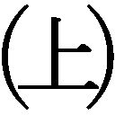

| 神の手（上） (幻冬舎文庫) | |
| 久坂部羊 | |
| 幻冬舎 (2012) | |
 幻冬舎文庫
幻冬舎文庫
神の手
久坂部羊
神の手
主な登場人物
●主人公
白川泰生 市立京洛病院の外科部長 消化器外科医
●安楽死法推進派
島津貴志 市立京洛病院の内科部長 循環器内科医
新見偵一 「日本全医療協会」（ＪＡＭＡ）の代表 心臓外科医
山名啓介 ＪＡＭＡの執行理事 白川の大学時代の同級生で同じ医局 消化器外科医
柴木香織 ＪＡＭＡの副代表 新見の大学の後輩で新見の右腕 麻酔科医
佐渡原一勝 自共党の元総裁 政界の長老
井村和夫 自共党の衆議院議員「医療行政改革会議」のメンバー
三笠孝 民和党の衆議院議員 民和党の若手ホープ
業田義政 自共党の元幹事長 佐渡原派の重鎮
立原直樹 大物ノンフィクション作家
●安楽死法反対派
古林康代 息子を安楽死させられたエッセイスト
大塚彰彦 「安楽死法制化阻止連合」（「阻止連」）の代表理事
青柳公介 自称「市民派」ジャーナリスト
佐内孝一 人権派弁護士
東吾郎 平政新聞社社会部の記者
中室真司 「阻止連」の理事 世田谷医療センター内科医
西田節子 市立京洛病院の看護師 章太郎の死後処置を担当
宮城あずさ 社生党党首 参議院議員
●その他
古林章太郎 二十一歳で安楽死を遂げた肛門がん患者 康代の息子
古林晶子 康代の姉 康代に代わって章太郎を育てる
平野秀夫 京都府警刑事部捜査一課の警部
白川雅美 白川の妻
白川瑠威 白川の息子
本村雪恵 嵯峨記念病院の看護師 白川の愛人
浅井英志郎 無所属の参議院議員
播戸恭一 全日医師会の元首席常任理事 脳外科医
金子律 全日医師会の元常任理事 消化器外科医
海老原信治 厚労省官房長 医療庁の初代長官に内定
村尾士郎 神武レジェンド製薬のＭＲ
◆プロローグ
――一九九×年二月。
ロンドン、ヒースロー空港を予定通りに飛び立った日本航空４０２便は、順調にウラル山脈を過ぎ、シベリア上空にかかろうとしていた。
自由共和党（自共党）の元総裁、佐渡原一勝は、ファーストクラスの窓側席から雪に覆われた大地を見下ろし、ロンドンの会議で持ち出された幾多の話題を思い返していた。
今回の会議は、〝鋼の女〟と称されたイギリスのスカーレット・ミッチェル元首相の肝煎りで催された〝同窓会サミット〟なる集まりだった。出席者は佐渡原のほか、アメリカのドナルド・リーガン元大統領、フランスのアンドレ・ミッシュラン元大統領、ドイツのシュプレヒ・コーラ元首相ら、一九八〇年代に世界をリードした首脳たちである。
話し合われた議題は、世界の環境、人権、貧困対策、平和維持や民主化運動など、多岐にわたったが、いずれも概念的な内容で具体性に乏しかった。第一線を退いた〝元〟リーダーたちの会合ならば、それも致し方ないかもしれない。国際社会のご意見番会議などと銘打ってはいたが、実態は老人の茶飲み話である。
半ば義理で出席はしたものの、佐渡原は苦々しい気分を持て余していた。自分にはそんな悠長な集まりに時間を費やす余裕はない。まだまだなすべき仕事がある。総理の座を退いて十年余。その間に、日本はいったい何人の総理が替わったことか。二十一世紀を目前に控え、日本は国際的にも国内的にも難問が山積している。
佐渡原は約五年にわたる長期政権において、日米安保体制の強化、行政改革、三公社の民営化などを実現し、すでに歴代宰相の中でも功なり名遂げた存在になっていた。だから、さらなる名誉や権勢を求める気持はない。あるのは、自分に残された時間と能力を、わずかでも日本の将来ために注ぐという使命感のみである。佐渡原は総理退任後も政界に隠然たる力を持ち、その影響力は強まる一方だった。卓抜な先見性、洞察力、決断力に惹かれ、党派を超えて与野党の若手議員が佐渡原の元に集まりつつある。彼らの力を結集して、何とか日本の未来に活かせないか。それが佐渡原の頭を終始悩ませる問題だった。
政治、経済、防衛、教育、福祉、雇用、治安、環境、国際協調。いずれも国民の生活に密着しつつ、安全と平和を維持するために重要な課題だ。いかに佐渡原の影響力が強いとはいえ、そのすべてに取り組むことはできない。さて、どの分野に的を絞るべきか。
総理在任中、各分野でそれぞれのブレーンを重用してきた佐渡原は、今もいくつかの私設諮問機関を設け、情報を収集している。しかし、そこから上がってくる提言は、いずれも場当たり的で視野が狭く、佐渡原の心を動かすには至らなかった。凡庸な専門家を何人集めてもよい知恵は出ない。ブレーンにはその分野のずば抜けた人材が一人いればいい。それはわかっているが、肝心の人材がおいそれとは見つからないのが実情だった。
「フルーツはいかがでございますか」
客室乗務員がワゴンに載せたフルーツバスケットを運んできた。目の前にバナナが二本突き出ている。総理時代、外務省の担当官にひとこと、「バナナが好きでねぇ」と洩らして以来、外遊のたびにバナナが出される。いくら好きでも、行く先々でバナナばかり用意されては、食傷するのがわからないのか。それでもせっかくの心遣いを無にするのは忍びなく、佐渡原は笑顔で「じゃあ、それを」と指さした。客室乗務員はフォークとスプーンで器用にバナナをはさみ、冷えた皿とともに差し出した。
通路をはさんで座っている随行員たちにも、ワゴンサービスが供される。今回の会議出席は、公的なものとはいえ、随行員は政務秘書と私設秘書のほか、外務省からの担当官、事務職員を含め、十人足らずの陣容である。報道陣を含めると二百人近かった総理時代の大所帯とは大きなちがいだ。
気取ったことの嫌いな佐渡原は、無造作にバナナを手に取り、皮を剥いて頬ばった。
日本は今や経済も科学も発展し、世界一の長寿国になっている。だが、果たして将来は安泰なのか。このまま時代の流れに任せていて、思いがけない困難に遭遇しはしないか。
そう考えながらふと目を上げたとき、突如、胸の奥に鉄拳の一撃を食らったような衝撃が突き上げた。心臓を鷲づかみにされ、引きちぎられるような痛みだ。佐渡原は思わず顔をしかめ、「ううっ」とうめいた。よく通る低音の唸り声は、空席をはさんだ通路側にいる私設秘書の耳にも届いた。
「佐渡原先生。どうされました」
異変に気づいた随行員たちが、慌てて席を立つ。佐渡原は両手で胸をかきむしるように押さえ、前屈みになって歯を食いしばった。
「先生。大丈夫ですか。緊急事態だ。医者を呼べ！ 乗客の中にだれかいないか」
政務秘書の怒号に、客室乗務員が機長室に走る。秘書や外務省の担当官らが口々に叫ぶ。
「水だ。水を持ってこい！」
「座席を倒して寝ていただこう。ネクタイも緩めて」
「それより救急箱だ。いや、酸素ボンベを用意しろ！」
やがて、機内アナウンスが、緊張した調子で医師の搭乗者に協力を求めた。五百人に近い乗客なら、医師の一人や二人乗っていないはずはない。だが、即座に名乗り出る者はなかった。佐渡原が同乗していることは、エコノミークラスでも噂になっているようで、まさか元総理の急変だと知れるはずもないが、ファーストクラスの異常事態に、医師がいても名乗り出にくいのかもしれない。その間も、佐渡原は額に脂汗を浮かべ、ネクタイをむしり取って自分の胸を叩き続けた。
「医者はまだか」
「だれか治療できる者はいないのか」
随行員たちは動転して、右往左往するばかりだ。私設秘書がアタッシェケースをひっくり返し、佐渡原のかかりつけ医から預かった緊急用の薬剤を取り出した。
「念のためにもらってきた痛み止めがありますが、どうでしょう」
「試してみろ。何もないよりましだ」
政務秘書の指示で、私設秘書は震える指を御しつつ、ヒートシールに封入された錠剤を押し出した。
「先生。これをお飲みください」
佐渡原は随行員らに抱きかかえられ、私設秘書が差し出した薬を口に入れた。水を一口飲み、激しくむせる。胸の苦悶は収まらない。脂汗は冷や汗に変わり、額から頬へ噴き出すように流れた。
「佐渡原先生。しっかりしてください」
「お気を確かに」
随行員らの励ましも空しく、佐渡原は短い呼吸で喘ぎながら、言葉にならない唸りを洩らし続けた。政務秘書が客室乗務員に怒鳴る。
「医者はおらんのか」
「今、客席をまわってさがしておりますが、お申し出がございません」
男性の客室乗務員が、手動の人工呼吸用のバッグと携帯用の酸素を持ってきた。ゴムマスクを佐渡原の口元に当てるが、うまく密着できない。佐渡原はフルリクライニングした座席で、釣り上げられた大魚のように何度も身体を反転させた。
そのとき、ファーストクラスの後方の座席に座っていた人物が立ち上がり、セカンドバッグを片手に近づいてきた。
「失礼ですが、もし、わたしでお役に立てるようでしたら」
控えめな声で言い、手短に自己紹介をした。随行員たちは一瞬、顔を見合わせたが、迷っているひまはないとばかりに前を開けた。その人物は佐渡原の横にひざまずき、慎重に脈をとった。
「あいにく大した道具は持ち合わせていないのですが」と言いつつ、ペンライトで瞳孔を調べ、佐渡原の胸に耳を直に押し当てる。
「どんな状況ですか」
「おそらく心筋梗塞でしょう」
取り乱す私設秘書に冷静に答え、セカンドバッグからプラスチックの薬ケースを取り出した。先のすぼまったオレンジ色のカプセルをヒートシールから出し、親指と人差し指でつまむ。
「それは何の薬です」
私設秘書が不安げに聞く。
「冠血管拡張剤です。新しく出たカプセルで、舌の下に薬液を垂らすので、従来の舌下錠より早く効きます。ちょっと失礼いたします」
佐渡原の口に指を差し入れ、タイミングを見計らって舌の裏側にカプセルを押しつける。ちゅっとカプセルのつぶれる音がして、ヒマシ油のような油っぽい液体が流れ出た。
「薬は呑み込まないようにしてください。酸素は続けて。マスクを軽くあてがうだけで大丈夫ですから」
佐渡原は押し出された液体を口の中に溜め、必死で鼻から酸素を吸った。胸の芯が針金でぐるぐる巻きに締めつけられたような圧迫感が、わずかに緩み、胸が広がった気がした。呼吸も針の穴から吸っていたようだったのが、少しずつ楽に空気が入ってくる。それでもまだ心臓に千枚通しを突き刺されたような感覚があり、眉間の深い皺を解くことはできなかった。
「胸の痛みが強いようですね。モルヒネがあるといいのですが」
頭上の声が困惑気味に言い、薬ケースから何かをさがす気配がした。
「座薬を使いましょう。今はこれしかありません」
「その薬は」
「非麻薬系の中枢性鎮痛剤です。ポジションを替えて、座薬を入れやすいようにしていただけますか」
随行員たちは佐渡原を横に向け、ズボンと下着を下ろした。白い銃弾のような座薬は、手慣れた操作でスムーズに挿入された。
「気持悪いかもしれませんが、少しご辛抱ください。便意があっても出さないように」
佐渡原は無言でうなずく。苦悶はまだ続いているが、身体の奥底から少しずつ不安が和らぐのが感じられた。事態が徐々にいい方向に進んでいるのがわかる。
しばらく待つと、薄皮を剥ぐように胸の痛みも薄らいできた。
「少し落ち着かれたようですね」
頭上の声に促されるように、随行員たちは佐渡原の衣服を整える。仰向けにされたあと、佐渡原は身ぶりで座らせるように指示をした。
「先生。ご気分はいかがですか」
私設秘書が佐渡原の額から汗を拭いながら訊ねた。陶器のように冷え切っていた皮膚に、温もりがもどり、佐渡原は表情を緩めた。
「ゆっくり深呼吸をしてください。慌てないで」
言われた通り、ゴムマスクを当てた口で大きく息を吸い込む。途中で咳き込むが、優しく背中をさすられて落ち着く。
「......ありがとう。少し楽になったよ」
佐渡原は悪夢から覚めたように、茫然とした笑みを見せた。
「佐渡原先生。こちらの方が薬をくださったのです」
「そうですか。助かりました。あなたがいなければ、死んでいたかもしれない」
「もう大丈夫でしょう。念のために成田に着くまで酸素マスクはしていてください。わたしは席にもどりますので」
「いや、もう少し、ここにいてもらえませんかな」
佐渡原が救いを求めるように手を伸ばした。
「そうです。万一、また発作が起きたら困るので、こちらに席を移っていただけませんでしょうか。ぜひお願いします」
政務秘書が外務省の担当官に命じて、手荷物を取りに行かせた。
「わかりました」
移動を求められた人物は、空席だった佐渡原の横に座り、静かに両手を膝の上にのせた。元総理の横でも緊張することなく、自分が緊急事態を救ったという気負いもない。
「いや、とんだご迷惑をおかけしました。わたしも歳には勝てんということですかな」
今年、七十六歳になる佐渡原は、自分ではまだまだ若いつもりでいたが、謙遜と自嘲を込めて苦笑した。
「これまでずっと健康できたものですから、つい油断してしまいました。面目ない」
「いえ。大事に至らなくて幸いでした」
「それにしても、心臓発作というのは恐ろしいですな。あの苦しみがあと十分続くと言われたら、とうてい耐えられない。死んだほうがましだと思いますよ。あ、いや、これは失言。助けていただいたのに、失礼いたしました」
佐渡原が恐縮すると、となりの相手は穏やかに微笑した。そのとき、わずかに首を振ったのが、佐渡原に違和感を抱かせた。死んだほうがましと言った失言を、あたかも肯定するかのようだったからだ。
通路をはさんだ向こう側から、私設秘書が盛んに佐渡原の調子を案じる目線を送ってくる。佐渡原は片手をあげて、大丈夫であることを身振りで示してから、ふたたびとなりの人物に話しかけた。
「日本の医療は世界のトップレベルで、それだけは安心ですな。こうして飛行機の中で発作を起こしても、無事に救ってもらえる。新しい薬や治療法もどんどん開発されているのでしょう」
「そうですね」
「これからは、あなたのような方が活躍されることが、日本の医療の発展には欠かせませんな。臓器移植法も施行されたことだし、医療は前途洋々でしょう。日本国民の一人として、大いに期待していますよ」
「いえ。日本の医療は前途多難です。むしろ、危機的な状況だといったほうがいいでしょう」
相手は深い諦念を込めて言った。控えめながら、元総理のお愛想をまっこうから否定する頑なさが感じられる。
「どういうことですかな」
佐渡原はやや表情を強ばらせて訊ねた。相手は悪びれもせずに答えた。
「かつての医療は、ただ進歩さえすればよいという状況にありました。しかし、今は医療が進みすぎて、現場であらゆる矛盾が噴出しています。たとえば、末期の患者を死ぬに死ねない状況にしてしまう延命治療。命を延ばす治療が、患者の尊厳を損ない、本人と家族に大きな苦しみを背負わせています」
「しかし、そういう問題も、医療がさらに進めば解決するのではないですかな」
「延命治療はいくら進歩しても病気を治すものではなく、患者を死なせないようにするだけです。生身の身体は臓器や部分ごとに寿命を迎えます。それでも死なせなければ、身体は生きたまま腐るだけです」
無理に人間を死なせない状態にすると、たしかにそうなるのかもしれない。生きたまま腐るという言葉が、佐渡原の耳に暗示のようにこびりついた。
「なるほど。延命治療はほどほどにすべきかもしれませんな。だが、ほかの分野はちがうでしょう。全体としては、医療の発展がよりよい状況を生み出すのではありませんか」
相手は目線を前に向けたまま、深刻そうに首を振った。
「医療が発展すれば、高度な治療が可能になる反面、医療の細分化が進みます。治療は複雑になり、多大の時間と経費がかかるようになる。つまり、患者の数は同じでも、相対的に医師不足になるということです。たとえば、胃がんでも、かつてはバリウムと胃カメラくらいで手術をしていましたが、今はＣＴやＭＲＩ、超音波の検査もしなければなりません。最近実用化されたＰＥＴ、血管造影、さらにはがんの遺伝子検査なども必要となるでしょう。治療の精度が上がる代わりに、一人の患者にかかる時間が増え、医師は多忙になります。また、患者の知る権利が増大し、これまで医師は手術前に一回説明すればよかったのが、入退院の前や、検査のたびに説明しなければならなくなります。プライバシーの保護、同意書の取得、病院の情報公開など、医師の業務は煩雑化し、激務化が進むでしょう。そうなると、病院を逃げ出す医師が出てきます。残った医師はますます激務になって、さらに病院を離れるという悪循環に陥る。その結果、病院医療の崩壊がはじまるでしょう」
「ちょっとお待ちください」
佐渡原は相手の勢いに歯止めをかけるように訊ねた。「病院から逃げ出した医師はどこへ行くのです」
「開業する医師もいるでしょう。しかし、産業医になったり、保険会社の社医になったり、アルバイト医になる者も少なくない。彼らは医療を支える役割を果たしません」
たしかに開業医以外は、まともに患者を治療しないだろう。佐渡原は〝同窓会サミット〟で、ミッチェル元首相が自国の医療制度を嘆いていたのを思い出した。イギリスでは医師がすべて国家公務員であるため、競争原理が働かず、サービスの質の低下が著しいという。リーガン元大統領も、保険会社が牛耳るアメリカの医療に頭を抱えていた。公的保険が十分でないため、医師が患者の治療より、保険会社の利益を優先する状況が社会問題になっているのだ。彼らの話を聞きながら、世界に誇る国民皆保険制度を持つ日本だけは、そんな問題に悩まされることはないと、佐渡原は楽観していたのだった。
しかし、それは根拠のない思い込みだったのか。佐渡原はふと不安に駆られて、慎重に訊ねた。
「もしかして、ほかにも日本の医療に危険な予兆はあるのでしょうか」
「ありますね」
相手は平然と答えた。「医療の進歩は幻想を生み、世間とマスメディアに絶対安全信仰のようなものが広まりつつあります。それは医療に対する監視を強め、医療ミスや医療体制の不備に厳しい目が向けられます。医療ミスの件数は現実には減っているのに、マスメディアが派手に取り上げるため、増加しているような印象を与えます。世間の医療不信は深まり、医療訴訟が増加するでしょう。医師は自由に科を選べるので、医療訴訟のリスクが高い産科や外科、夜間の救急患者の多い小児科や特殊救急部に進む者が減り、全体のバランスが崩れます。また、今の医師は医局制度の中で勤務地が決められますが、まもなく医局制度が崩壊し、教授の権威は失われるでしょう。そうなると、僻地に勤務する医師はいなくなり、地方は医療体制を維持できなくなります。大都市に病院が集中し、患者を集めるためにそれぞれが高額な医療機器を備え、稼働率を高めるために、不要な検査や治療をはじめるでしょう。患者は『念のため』という便利な言葉に惑わされ、過剰な医療を歓迎します。日本の医療費は加速度的に増大し、やがて日本経済さえ脅かすことになるでしょう。医療の崩壊が、国家の崩壊へとつながりかねない危険があるということです」
話を聞きながら、佐渡原はさっきの発作とは別の脂汗をにじませていた。冷静に語られた言葉は、周到に計画された国家転覆のシナリオのような現実味を帯びていた。これまでも医療界の実情は、たびたび識者から聞いていた。しかし、ここまで理路整然と、包括的に危機を語る人材はなかった。
「あなたは、なぜ、これほど詳しい情報をお持ちなのです」
「別に詳しいわけではありません。日々の仕事の中で、自然に見えることを、冷静に判断しているだけです」
穏やかな声にはある種の強靭さが感じられた。本質が見えている者にしか抱き得ない揺るぎない確信。佐渡原はそれとなく相手をうかがい、この控えめな人物が、自分の求めるブレーンにふさわしいことを直感的に見抜いた。
「こんなことを申し上げると、笑われるかもしれんが、わたしは今もこの身を日本のために役立てたいと考えておるのです。日本の医療が崩壊の危機にあることは、あなたのお話でよくわかりました。その危機を回避するために、どうかあなたの力を貸してくださらんかな。医療は、わたしが余生をかけて改革に打ち込むべき分野だと覚りました。ぜひあなたの、いや、〝センセイ〟のご協力をお願いしたい」
佐渡原は、これまで先輩議員以外、医師でも弁護士でもめったに「先生」と呼ぶことはなかった。今、思わず相手をそう呼んだのは、彼の率直な敬意の表れだった。〝センセイ〟と呼ばれた相手は、別段それを喜ぶでも恐縮するでもなく、恬淡としていた。そのことが、佐渡原にいっそうの好意と信頼感を抱かせた。
「日本にもどったら、ぜひ一度、じっくりお話を聞かせていただけませんかな。那須にあるわたしの別荘にお出でください」
「わたしでよければ、精いっぱい努めさせていただきます。佐渡原先生のような方に後ろ盾になっていただければ、日本の医療も崩壊の危機を免れるかもしれません。医療は政治にも密接に関係していますから」
「というと？」
「先ほどおっしゃった臓器移植などもそうでしょう。法的な整備がなければ、どれほど必要とされている医療も行い得ませんから......」
思わせぶりな沈黙に、佐渡原は首を傾げる。
「ほかにも何か懸案があるのですか」
「そうですね。最初に申し上げた延命治療にも関わることですが、重要な医療が、法の壁に阻まれております」
佐渡原がさらに怪訝な顔を向けると、〝センセイ〟は夢見るようにつぶやいた。
「それはつまり、安楽死の合法化です」
......
それから十二年の歳月が流れた――。
１ 二十一歳の安楽死
末期がん患者の病室には、特有のにおいが漂っている。
死臭を先取りしたような、甘酸っぱく、饐えたにおい。それは、全身に広がったがん細胞からにじみ出る独特の臭気である。若い患者のそれは、旺盛な身体の代謝や髪の汗と混じり、ことさら濃密になる。
古林章太郎。二十一歳、肛門がん、末期。
部屋の明かりを常夜灯だけにしているのは、本人がそう望んだからだ。彼には蛍光灯の光さえ、耐えがたいようだった。
主治医の白川泰生は、ベッドの傍らに立ち、じっと章太郎を見おろしていた。
これまで一日たりとも途切れることのなかった苦痛。鎮痛剤も鎮静剤も、麻薬さえも使い尽くし、それでも抑えることのできなかった痛み。がんは会陰部で潰瘍状になり、ガーゼを替えるたびに千本の針を突き刺すような痛みを引き起こした。リンパ節への転移は腹に食いつき、灼けた鉄を押し当てるような疼きをもたらした。さらに、ふいに突き上げてくる吐き気。身体をねじ切るような空えずき。胸水で溺死しそうな呼吸困難。ウジ虫のように全身を蝕む身の置き所のないだるさ。
この苦しみに耐える意味はない。それは、医師として二十五年間、がん医療に携わってきた白川の確信だった。
くっ......、っ......。
章太郎が声を立てずに喘ぐ。数日前から徹夜で付き添っていた古林晶子が、白髪の目立つうなじを震わせる。
「章ちゃん、しっかり！」
この期に及んでなお、思いとは逆の声をかけてしまうのは、やはり断ちがたい愛情の故か。息子同然にして育てた青年が、一カ月以上も苦しみ、のたうちまわっている。命が延びればそれだけ苦しみも延びる、だから早く終わらせてほしいと望んだのに、まだ「しっかり！」と励ましてしまう。
白川は黙ったまま、ベッドサイドに置かれた心電図を見つめた。さっきまで一二〇を越えていた脈拍は、今は二〇台に落ちている。呼吸はほぼ止まっている。それでもときおり、酸素を求める鯉のように、下顎を突き出すのは、この世にとどまろうとする命の最後のあがきか。
晶子が片手で自分の口元を押さえ、もう片方で章太郎の手を握る。はだけた胸に旺盛な筋肉が息づいている。太陽の下で若さを謳歌してよいはずの胸が、今、薄暗い病室で、最後の動きを終えようとしている。血圧は下がり、脈は触れない。
白川は心電図をじっと見た。黄緑色の輝線が、のたうつような波になっている。消えようとする命の、静かで悲しい最後の営み。それが徐々に間遠になり、小さくなる。晶子がそれを食い入るように見つめている。
何も言えない。苦しみを止めるために、自分の手で命を終わらせること。それがよかったのか、悪かったのか。いや、ぜったいに、よかったはずだ。
やがて、心電図が完全な直線になった。納得ずくとはいえ、白川は晶子の手前、型通りに死亡の確認を行う。瞳孔の散大、呼吸の停止、心臓の停止。腕時計にちらと目をやり、頭を垂れる。
「午後十時四十分。ご臨終です」
さすがに、晶子は泣き崩れたりはしない。ただ黙って頭を下げる。床に数滴、涙が散った。
白川は全開で落としていたケタラールの点滴を止め、患者衣の前をそっと合わせた。あとは看護師がきれいにしてくれるだろう。
静かに横たわる章太郎を見つめたまま、白川はだれに言うともなくつぶやいた。
「康代さんは、とうとう来ませんでしたね」
若い患者のがんは酷い。
章太郎が肛門に違和感を覚えて、近くの開業医に行ったのは、今から半年ほど前だった。開業医は診察したあと、すぐに総合病院へ行くように勧めたという。
章太郎が受診したのは、京都市下京区の市立京洛病院だった。診察は外科部長の白川が担当した。
「ちょっと厄介な痔だと聞いてるんですが」
開業医の言葉を不安げに伝える章太郎に、白川はむずかしい顔で説明した。
「しこりができてるね。いわゆる腫瘍だけれど、良性か悪性かは検査してみないとわからない」
ゴム手袋の指で触った感じは、明らかに悪性だったが、悪い報せは少しでも遅いほうがいい。
一週間後に返ってきた生検の結果は、やはりがんで、すぐに手術が必要だった。
手術の説明のとき、同席したのは伯母の晶子だった。母親の康代は、エッセイストとのことだが、いろいろな事情があり、小さいころから晶子が章太郎の親代わりだったらしい。
「残念ながら、検査の結果、悪い細胞が出ました。でも、手術は可能だから、あきらめる必要はありません。ただし、少し進行していますから、手術のあとに放射線治療が必要になるけれど」
白川は相手のようすを見つつ、できるだけ穏やかに説明した。章太郎は一瞬、息を詰め、寂しげな表情を浮かべた。ふーん、やっぱり、というような、子どものころから不運に慣れた人間の目だ。そして、取り乱すことなく訊ねた。
「助かる見込みは、どれくらいですか」
「さあ、なんとも言えないな。まあ、五分五分......」
それは言葉の綾だ。実際は二割にも満たない。章太郎はそれを見抜いたように、白川を正面から見つめて言った。
「もし助からないのなら、苦しまないようにしてくださいね」
若いのになぜそんな先を見越したようなことを言うのか。白川は訝ったが、章太郎には妙に老成したところがあった。
手術は五月一日、ゴールデンウィークのど真ん中に行われた。病気に連休もへったくれもない。術式は会陰全摘術。肛門だけでなく、直腸と周辺のリンパ節をすべて摘出し、人工肛門を造設する大がかりなものだった。
手術は成功したが、そのあとの放射線治療が事態を悪化させた。手術で取り切れなかったがん細胞を少しでも叩こうと、線量を上げたのが裏目に出たのだ。放射線で組織が壊死して、手術の傷が開き、溶けた組織が外に流れ出た。炎症が悪化して、会陰部にテニスボールほどの穴が開いたままになってしまった。
その後も事態は好転しなかった。手術から二カ月で骨に転移し、脊髄神経を圧迫した。これが腰と右脚に耐えがたい痛みを引き起こし、さらには腹部のリンパ腺に転移したがんが、灼熱感を伴う痛みで章太郎を苦しめた。通常の痛み止めはまったく効かず、白川は迷うことなくモルヒネを使った。はじめは錠剤、続いて皮下注射、筋肉注射、ついには点滴で二十四時間投与したが、それでも効果は不十分だった。逆に麻薬の副作用で、猛烈な吐き気が出て、章太郎は絶え間ない空えずきに苦しんだ。
見るに堪えない状況に、白川は焦り、悩んだ。全身に脂汗を流し、一息ごとに激しく喘ぐ章太郎に、白川は訊ねた。
「古林君。麻薬で痛みを抑えるのはこれが限界だ。あとできるとすれば、強い鎮静剤で意識を取ることだけど、どうする」
「お願い、します。もう、......この、痛みは、我慢......、できない」
目を大きく見開いて、必死にうなずく章太郎は、まるでライオンに食い殺されかけている草食動物のようだった。
白川はできるだけ副作用の少ない鎮静剤をと考えたが、苦痛が強すぎて、どれを使っても意識が取れない。唯一、有効だったのが、ケタラールという古いタイプの薬剤だった。しかし、この薬は過剰投与で呼吸抑制が起こる。点滴の量を増やすと、呼吸が止まるのだ。かといって量が少ないと意識が取れず、苦しげなうめき声が洩れてしまう。
「先生、なんとかこの子を眠らせてやってください」
付き添っていた伯母の晶子が、すがるように言った。
「でも、あまり薬を増やすと、息が止まるんですよ」
「かまいませんから！」
とても冷静な言葉とは思えなかった。手塩にかけた甥が、目の前で苦しみ続けるのを見れば、それも当然かもしれない。
白川は章太郎の右の鎖骨の下に入れた点滴を、恨めしげに見つめた。この中心静脈栄養のおかげで、章太郎は絶食なのに十分なカロリーと水分が補給される。若くて強い心臓は、なかなかへばらない。だから想像を絶するような苦痛だけが、いつまでも引き延ばされる。
できるだけ意識を落として、呼吸が保たれるぎりぎりの調節で、白川はケタラールの点滴を続けた。それでも章太郎はうわごとのように声をあげる。
「助けて」「苦しい」「なんとかして」「あーっ」
薄暗い病室に、苦悶の声が洩れる。しかし、呼吸を考えると、それ以上ケタラールを増やせない。その状態が三週間続き、見かねた晶子が、ついに白川に訴えた。
「先生、もうだめ。お願いですから、どうか、あれを」
口に出して言えない「あれ」が、何を意味するのか、白川には痛いほどわかった。
安楽死は、日本ではまだ法的には認められない。いくら安楽死の要件がそろっていても、やれば医師は殺人罪に問われる。
押し黙っている白川に、晶子が泣きながら取りすがった。
「望んで選ぶんじゃないんです。それしかないから頼むんです。これ以上、この子を苦しめるのは耐えられません。いつかまた元気になれるのなら、我慢もします。でも、もうどんなに苦しみに耐えても、望みはないんでしょう。それなら頑張らせるのはかわいそうすぎます。だから先生、お願いします」
「しかし、今の日本では、まだ......」
「だめですか。先生、どうしてもだめですか。白川先生なら、やってくださると思ってたのに！ ああっ」
絶望した晶子は、章太郎のベッドに身を投げ出して嗚咽した。
それが七日前のことである。
鎮静剤だけでは不十分なことは、白川にもわかっていた。あとは死ぬしかないのに、この苦痛に耐えさせるのはあまりにも酷い。しかし、安楽死が許されない状況で、ほかにどんな方法があるのか。
白川は中心静脈栄養のカロリーを減らしたり、水分量を半分にして脱水状態にしたりなどの無難な方法を模索した。しかし、そんな姑息な手段で、章太郎の激烈な苦痛を消すことができるはずもない。
章太郎の血圧は、上がずっと一五〇以上で、脈も一〇〇を超えていた。肝臓も腎臓も正常で、若い臓器が全力で肉体を生かそうとしている。その一方で、がんは全身に転移し、神経に食い込み、途方もない痛みを生み続ける。
安楽死は高齢者の問題だと思われがちだが、そうではない。ほんとうに必要なのは、若い患者だ。生命力がありすぎて、どんなに苦しくても死ぬに死ねない。安楽死で彼らを救わなければ、とてつもない悲惨が続くばかりだ。なのに、自分は何もしていない。ただじっと終わるのを待っているだけだ。これでいいのか。
晶子から「あれを」と迫られた翌日、白川は病室で絶望している彼女に言った。
「まだ、やると決めたわけではありません。しかし、まず本人の意思を確認しなければなりません」
ケタラールの量を減らせば意識はもどる。白川はゆっくりと点滴を絞った。一分、二分。章太郎の呼吸が徐々に荒くなり、うめき声が大きくなる。
「あ......、あっ、あー、あーっ」
「章ちゃん、わかる。伯母さんよ」
晶子の呼びかけに、章太郎は顔をしかめながらうなずいた。
「古林君、わかるか。私だ、白川だ」
溺れかけた人が一瞬、水から顔を出したように、章太郎は大きくまぶたを開いた。白川は思わず言葉に詰まった。死にゆく本人に、しかも今、絶望的な苦しみに苛まれつつある当人に、安楽死するかどうかなど、どうしてそんな無神経な問いが発せられよう。本人の意思確認など、安楽死の現場から遠いところにいる人間の空論ではないのか。
ふとそんな腹立たしさが頭をかすめたが、事態は一刻の猶予もなかった。白川は精いっぱいの誠意を込めて、章太郎に訊ねた。
「今、鎮静剤を少し減らして、意識をもどしたんだ。これ以上、薬を増やすと、呼吸が止まるかもしれない。それでもいいか」
「うーっ、うー、うぅーっ」
「古林君！」
章太郎は必死に苦痛に耐えながら、歯を食いしばっている。自分はなんと残酷なことをしているのかと、白川は己のおぞましさに身震いした。しかし、目を逸らすわけにはいかない。
晶子が我慢しきれなくなって叫んだ。
「先生、お願い。もう眠らせてやって」
章太郎が白川を見つめて、激しくうなずいた。
「いいんだな。よし」
言うが早いか、白川はケタラールの点滴を全開にした。薬液が連なって落ち、章太郎の意識が遠のく。徐々に呼吸が弱まる。ケタラールの呼吸抑制だ。うめき声が間遠になる。
「章ちゃん。これで楽になれるね。よかったね。長い間、苦しませてごめんね」
晶子が覚悟したように涙をあふれさせ、章太郎の手を握った。しかし、白川は点滴を調節するプラスチックのクレンメを半分ほどもどし、ふたたび薬の量を減らした。
「先生っ、どうして」
「まだ死なせるわけにはいきません」
弱まっていた呼吸が、徐々に回復する。それに伴い、喘ぎ声がふたたび高まる。やがて、さっきまでと同じ、もうろう状態でのうわごとがはじまる。
「どうしてなんです、先生」
晶子が悲しみに耐えきれないようすで顔を覆った。
「まだ、お母さんの了承を得ていない。康代さんに連絡しなければなりません」
康代の名を言われて、晶子はたじろぐように顔を上げた。
「わたしがずっと母親代わりだったんです。なのにどうして、今さら......」
章太郎の母、古林康代は、エッセイを書きながらテレビのコメンテーターとしても活躍するタレント文化人だった。白川が会ったのは、手術の数日後と、がんが再発してから見舞いに来たときの二回きり。姉の晶子とは見た目も性格もまるでちがう、派手な顔立ちのやり手のようだった。
康代自身が語ったところによると、彼女は京都の女子大を卒業後、ボランティアで介護施設を支援するＮＰＯを立ち上げ、関西一円にネットワークを広げたという。その傍ら文筆活動に励み、十年前に新聞社のエッセイスト賞を受賞して、今は介護のみならず、社会保障全般に詳しい論客として注目されているとのことだった。
彼女が章太郎を産んだのは二十七歳のときで、相手の男とは婚約はしていたが、出産の前にそれを破棄したらしい。少し前に彼女のＮＰＯ活動がテレビで取り上げられ、メディアへの露出がはじまったからだ。活動の場を広げたいと思っていた康代は、家庭に縛られたくないと思ったのだという。
これらのことを、康代は初対面の白川に、立て板に水の関西弁でしゃべったが、その意味するところはつまり、母親の役目を果たしていないことへの弁解のようだった。
康代に代わって章太郎を育てたのが、独身の晶子である。彼女ははじめ康代の家に通って世話をしていたが、章太郎がワープロに向かう康代にまとわりついて邪険にされたり、食べ物をこぼして平手打ちをされたりするのを見て、自宅に引き取ったのだという。校正者としての収入と、親の遺産で晶子には多少の余裕があったようだ。
その晶子に康代を呼んでほしいと頼むと、なぜか連絡を渋った。妹は忙しいとか、章太郎のことは自分に一任されているとか、説明ともつかない言い訳を繰り返すので、白川が重ねて頼むと、晶子は言いにくそうに白状した。
「実は、康代に話してないことがあるんです」
「どんなことです」
「章ちゃんが、こんなに悪いって......」
「何ですって」
白川はあきれた。だから、康代は見舞いにも来ないのか。性格の弱い晶子は、我の強い妹を恐れているようなところがあった。しかし、章太郎の状態がこれほど切迫している今、遠慮などしているひまはない。
「それじゃ、私が連絡します」
白川は晶子にかまわず、康代のケータイに連絡した。二回のコールでつながり、白川が名乗ると、「あ、白川先生ですか。章太郎がほんまにお世話になってます」と、テレビで聞き覚えのある歯切れのよい関西弁が飛び出した。
「章太郎君のことでお伝えしたいことがあるので、一度、病院に来て......」
言い終わる前に、康代がまくしたてた。
「先生、ご存じやと思いますけど、今、わたしが追っかけてる薬害脳炎の裁判、いよいよ大詰めなんです。原告団は被害者の全員救済を訴えて、一歩も引かへん構えです。間もなく二回目の和解案が出ますけど、国も追い詰められてるよって今度は譲歩まちがいなしですわ」
この母親はいったい何を言っているのだろう。息子が死ぬかもしれないというのに、仕事の話を優先するのか。いや、晶子がきちんと伝えていないせいで、楽観しているのかもしれない。
「古林さん。実は章太郎君の容態について、ぜひお伝えしなければならないことがあるのです」
「何ですのん、そんなに改まって。病気のことですか。それやったらむずかしいというのは承知してます。けど、できるだけのことをしてやってほしいんです。お願いします。わたし、現代医療を信じてますから」
「いや、そういうことではなくて」
白川は思わず天井を見上げた。まさかまだ治る見込みがあるとでも、思っているのではないだろうな。
「古林さん。よく聞いてください。章太郎君の治療方針について、至急、お目にかかってご説明したいことがあるのです。明日にでも病院にお出でいただけませんか。午前でも午後でもけっこうですから」
「うかがいたいのはやまやまですけど、今は忙しいて食事の時間も惜しいくらいなんです。電話やったらあきませんの？」
「いや、ぜひお目にかかって直接」
「ほんならできるだけ行くようにしますけど、こっちも事態が切迫してますよって、確約はできませんけど」
「よろしくお願いします。お待ちしていますから」
いったいだれのための連絡か。白川は不快になったが、感情を抑えて通話を終えた。
翌日、白川は一日中時間を空けて待っていたが、康代は現れなかった。
その翌々日、すなわち今から三日前、白川は朝いちばんに康代のケータイに連絡を入れた。改めて来院を依頼しようとしたら、また話を遮られた。
「先生、昨日のニュース、見てはりませんの」
「何かあったんですか」
「昨日の夕方、薬害脳炎患者の十九歳の青年が、国会議事堂前で焼身自殺を図ったやないですか」
それは知らなかった。章太郎以外にも十二人の患者を受け持っている白川は、章太郎の治療の合間に、ほかの患者の診察や手術をこなしている状態だったから、テレビなど見るひまがなかったのだ。
康代は興奮した声で続けた。
「そやから、わたし今、東京なんですよ。幸いガソリンの量が少なくて、青年は命を取り留めました。よかったわ。ほんまによかった」
彼女はいったいだれの母親だ。章太郎か、この自殺未遂の青年か。腹立たしい気持を抑えつつ、白川は声を強めた。
「お母さん。章太郎君は今、たいへん危険な状態なんです」
お母さんと呼んだのは、少しでも自覚を促すためだ。ところが、康代の声がふいに尖った。
「危険て、どういうことですの。今にも章太郎が死ぬような言い方やないですか」
白川は気を緩めずに応えた。
「それに近い状態です」
「何ですて。そんなん聞いてへんわ。先生、まさか章太郎の治療をあきらめはったんやないでしょうね。危険な状態や言うて、人工呼吸器はつけてるんですか。できるかぎりのことはしてもろてるんですか」
「今は人工呼吸器をつけるような状態ではありません」
「それやったら、大丈夫でしょう」
「しかし、その、心臓が弱っていて、そろそろ限界に......」
白川は言い淀んだ。つい嘘の説明が出てしまったからだ。章太郎は心臓が丈夫だから死ねないのだ。しかし、心臓が弱っているとでも言う以外に、康代を呼び寄せる方法があるだろうか。
「ほんなら強心剤は使うてるんですか。補助心臓とかもあるでしょう」
がんの末期患者に、補助心臓だと？ 白川は開いた口がふさがらなかった。こういう生半可な知識で現場をかきまわす似非インテリがいちばん困る。
「そういう状況ではないんです。病院に来ていただいたら詳しくご説明しますから、どうか時間を作ってください」
「無理です。今度の事件で、市民の怒りは最高潮に達してるんですよ。今、わたしが現場を離れるわけにはいかへんわ。章太郎の治療には、とにかくベストを尽くしてください。あらゆる手段を使うてください。最後まであきらめんと」
通話は切れた。
「くそっ」
白川はケータイを床に叩きつけたい衝動をかろうじてこらえた。実の母親がここまで治療を望んでいては、章太郎を安楽死させることなどとてもできない。
その日の午後、白川が病室に行くと、晶子が窓際に立って泣いていた。病室は六階だ。窓には簡単な手すりしかない。白川は不吉な予感に襲われて、晶子に歩み寄った。
「どうしたんですか」
「さっき、妹から電話があって、叱られたんです。わたしがしっかりしていないから、妹が大事なときに、先生に振りまわされると」
「そんな。古林さんはこんなに一生懸命に看病しているのに」
ふたたび康代に対する怒りがこみ上げた。章太郎は完全に意識が消えないまま、うめき続けている。康代には晶子の苦しみがわかっているのか。白川が苦々しい表情を浮かべると、晶子が叫ぶように言った。
「先生、わたしはもう耐えられません。気が狂いそう。章ちゃんを殺してわたしも死にます」
晶子はベッドに飛びかかり、章太郎の首に手をかけた。
「何をするんです」
とっさに引き離したが、白川は晶子の思いがけず強い力にたじろいだ。彼女は本気だ。それに痛々しいほど痩せた背中。さらには首筋からにおう体臭。彼女は毎晩遅くまで付き添い、家に帰っても食事もせず、風呂にも入らず横になるのだろう。
「古林さん、落ち着いてください。もう少しだけ時間をください。私がなんとかしますから」
抗っていた力がふいに抜け、晶子はその場にへたり込んだ。ベッドに顔を突っ伏して泣き崩れる。その姿を見て、白川は身を切られるような焦りを感じた。
これまでにも、白川は末期がんの患者を何人も看取ってきた。あまりの苦しみように、安楽死を考えたこともある。しかし、いずれも迷っているうちに、患者の寿命が先に尽きた。老いた患者ばかりだったからだ。しかし、章太郎は若いから死なない。ただ苦しみに耐えるだけの命を、座視していていいのか。
翌日、翌々日と、白川はケタラールをぎりぎりまで調節して、章太郎の意識を落とすように努めた。苦痛には波があり、症状が和らぐと章太郎はわずかに眠る。しかし、痛みがぶり返すと、またうめき、腰をよじり、腕を投げ出す。晶子は虚けたようにそれを見やり、精神的には文字通り限界のようだった。
白川はついに意を決して、晶子に言った。
「明日、朝いちばんに、康代さんに連絡して、章太郎君が危篤だと言いましょう。嘘の説明だけれど、仕方がない。それでも彼女が来ないようなら、私がケタラールを増やして、気づかれないうちに章太郎君を安楽死させます。康代さんには、がんが急激に悪化したと言えばいい」
「明日......ですね」
焦点を失った目に、かすかな光が点った。
それが昨日だ。
十月一日水曜日。今朝、白川は出勤と同時に康代に電話した。しかし、留守電だった。とにかく至急来てくださいと吹き込み、八時半から予定されていた食道がんの手術に入った。その執刀を終えて、手術室を出たのが午後三時。手術患者の術後処置をしたあと、昼食もとらずに章太郎の病室に行ったが、康代は来ていなかった。
「康代さんはまだですか」
「今も連絡して、すぐに来てと頼んだんですが、行けたら行くとしか......」
おびえたような晶子の声に、白川は思わず舌打ちをした。いったい、どこまで身勝手な母親なのだ。
ほかの患者の診療や電子カルテの入力をしながら、白川は何度も章太郎の病室へ行った。だが、康代は来ない。そのうち夜になった。このまま康代が現れなかったらどうするか。
いったんは決意したものの、白川にも迷いがないわけではない。安楽死は、実行すれば取り返しがつかない。ほんとうにやっていいのか。
白川は東海大学安楽死事件のときに、横浜地裁が出した安楽死容認の四要件を、思いつくまま胸の内で確認した。
・患者が耐えがたい肉体的苦痛に苦しんでいること。これはまちがいない。
・苦痛を除去する方法を尽くし、ほかに代替手段がないこと。これもそうだ。
・生命の短縮を承諾する本人の、明示的な意思表示があること。これも確かめた。
・死が避けられず、死期が迫っていること。死が避けられないのはまちがいないが、このままでは章太郎はすぐには死なない。しかし、すぐ死ぬのなら、そもそも安楽死は不要なのだ。死期が遠いからこそ、死なせるのだ。これは要件のほうがまちがっている。
午後十時十五分、白川はいったん外科部長室にもどり、出前で頼んでおいたハンバーグカレーを食べた。すっかり冷めて、ラップに水滴がびっしりついている。肉も硬く、半分も喉を通らない。
医局の大部屋をのぞくと、だれもおらず、ひっそりとしていた。ふと足元で何かが動いた。黒っぽい虫が弱々しく跳ねる。コオロギだ。どこから迷い込んだのか。こんなところにいたら、飢え死にするか踏みつぶされるかだ。
白川は屈んでそれを指でつかまえた。窓辺に行き、手を外へ出す。コオロギは待っていたように手のひらから夜の闇にジャンプした。あんな小さな虫でも、命は命だ。
しばらく闇を眺めていたが、白川は現実に引きもどされて、医局をあとにした。向かう先は章太郎の病室である。このまま章太郎を安楽死させてしまっていいのか。今なら、まだ中止できる。もし、章太郎の容態が落ち着いていたら、晶子に延期を説得しようか。
迷いながらスライド式の扉を開くと、うめき声は聞こえなかった。異様な静けさ。章太郎は眠っているのか。白川の姿を見た晶子が、逃げるように壁際に顔を背けた。ケタラールの点滴が、滝のように落ちている。
「古林さん。まさか」
白川は急いで駆け寄り、点滴を止めた。晶子が自分でクレンメを操作し、ケタラールを全開にしたのだ。とっさに枕元の心電図を見ると、緑の輝線が平坦になりかけていた。
「古林君！」
大声で呼び、章太郎の頬を打った。かすかなうめき声が洩れ、眉間に苦しげな皺が寄る。白川は反射的に心臓マッサージをした。十回ほどで心電図がもとにもどる。呼吸も回復したが、同時に耐えがたいようなうめき声ももどってくる。
「古林さん、滅多なことをするもんじゃない。あなたが章太郎君を死なせたら、それこそ殺人だ。章太郎君の治療は私に任せてください」
白川の厳しい口調に、晶子はふいに号泣し、狂ったように壁に頭を打ちつけた。痩せた背中が震える。その姿を見て、白川はもう一刻の猶予もないと腹を括った。
「わかりました。私がやります。だから、どうぞ泣かないで。章太郎君の最期を見届けてあげてください」
白川は晶子を抱きかかえるようにしてベッドの横に立ち、プラスチックのクレンメに指をかけた。章太郎を見おろす。細い眉、高い鼻、まだ幼さの残る唇。
「古林君。いいな」
そう言ってクレンメのロールを押し上げたとき、白川の指先に、これまで経験したことのない電撃のようなしびれが走った。
これが手を下す、ということか......。
思う間もなく、ケタラールの点滴は連なりとなり、章太郎の体内に流れ込んだ。
それから約十五分、呼吸が抑制され、脈拍はいったん一二〇を超え、そして徐々に下がっていった。若い肌から生命の最後のにおいが立ちのぼる。晶子はベッドの傍らに立ち、胸元で両手を握りしめていた。章太郎は何度か顎を突き上げ、最後は静かに喘ぎを止めた。
白川は型通りに死亡確認を行い、晶子に臨終を告げて頭を下げた。
「康代さんは、とうとう来ませんでしたね」
白川がつぶやいたあと、常夜灯だけの薄暗い病室に、奇妙な静寂が訪れた。静かに横たわる章太郎を見つめながら、白川はナースコールを押した。
「古林君が急変した。だれか来てくれ。蘇生セットはいらないから」
そう言ってから、白川は思いがけない緊張に襲われた。ここに第三者を呼び入れることに、言い知れない不安を感じたからだ。
この安楽死は、自分と晶子だけで決めたものだ。外科部長の白川は、立場上、だれの指示を受ける必要もない。しかし彼は、この安楽死を公表するのか隠すのか、まだ決めていなかった。
廊下に足音が聞こえ、扉が開いた。入ってきたのは、西田節子という一年ほど前に京洛病院に転勤してきた看護師だった。二十代後半の目立たない女性だ。
白川は平静を装いつつ、とっさに言った。
「さっき私がようすを見に来たら、もう下顎呼吸になっていたんだ。ケタラールを止めて心臓マッサージをしたが、もどらなかった。古林さんがこのままでいいとおっしゃったから、それ以上の蘇生処置はしなかった。死亡確認は午後十時四十分。あとの処置を頼む」
西田はマスクで表情を隠したまま、「わかりました」と低く応えた。白川は西田の妙に落ち着いた態度に、得体の知れない苛立ちを感じた。
「これでやっと、彼も楽になったんだ」
つい弁解めいた口調になり、白川は慌てて咳払いでごまかした。西田は訝しむように白川を見て、「そうですね」とつぶやいた。
「白川先生。ありがとうございます。お世話になりました」
晶子が深々と頭を下げると、西田が背中を向けたまま、感情を込めずに言う。
「患者さんをきれいにしますから」
西田はてきぱきと動き、ベッドの反対側にまわって章太郎の枕をはずした。タオルケットを剥ぎ、手早く丸める。さっきまで激しく喘いでいた胸は、石のように動かない。
「古林さん。今までほんとうによく看病されましたね。お疲れさまでした」
「はい......」
白川は晶子の注意を遺体から逸らそうとしたが、彼女はだれに何を言われようと、章太郎から目を離さないと心に決めているようだった。
西田は遺体を気遣うそぶりも見せず、胸に貼りつけた心電図のパッドを無造作に剥がした。この調子なら、尿の管を抜いたり、口や鼻に綿を詰めるのも機械的にやるにちがいない。そんなところは、とても晶子には見せられない。
「処置が終わるまで、出ていましょう」
晶子を半ば無理やり廊下に押し出しながら、白川はやるせない苦渋の思いに包まれた。これでまたひとつ、治療が終わった。死者を看送るたびに抱く空虚な痛恨。
白川は、今回の章太郎の処置で、自分が一線を越えたことを、さほどは意識しなかった。すべては必要な治療だったのだ。法律の問題や、安楽死論議のきれい事をいくら並べてみても、現場の判断はこれしかない。
ただ、後ろ手に扉を閉める瞬間、なぜか西田一人を病室に残すことに、強い不安を覚えた。それは一瞬だったが、奈落に墜ちる直前の、身の毛がよだつような胸騒ぎに似ていた。
２ スクープ報道
スクープ報道 京都市立京洛病院は、総ベッド数四八〇、診療科一四の総合病院である。
その看板外科部長である白川の朝は早い。午前七時二十分に出勤したあと、四十五分から外科のスタッフミーティング。そのあと、月曜日と木曜日は九時から四時過ぎまで外来診察に追われ、水曜日と金曜日は八時に手術室に入り、夕方まで手術の執刀と部下の指導にあたる。それ以外にも、麻酔カンファ、病理検討会、病院会議などがあり、一日の仕事が終わるのはたいてい夜の九時か十時過ぎ。部長室の椅子に今日は何分座っていただろうと、あきれながら思い返すこともしばしばという忙しさだった。
そんな毎日だから、古林章太郎のことも、すでに遠い過去のことのようになっていたが、実際はまだ九日しかたっていなかった。
あの日、章太郎の遺体は、死後処置を終えたあと、地下の霊安室に運ばれた。電子カルテの入力をすませて、白川が線香をあげに行くと、伯母の晶子が一人ぽつねんと付き添っていた。一応、解剖を打診したが、当然のごとく拒否された。母親の康代は、あの日は東京にいて、結局、翌朝、遺体が自宅に帰るときにも姿を見せなかった。
十月十日金曜日。午後に予定していた手術が患者の発熱で延期になり、珍しく時間が空いた。白川は久しぶりに学会誌でも読もうかと、自分の部屋に入った。そのとき、受付から電話がかかってきた。
「古林康代さんという方からお電話です」
章太郎の母親が今ごろ何だろう。訝りながら待つと、切り替わった電話から早口の関西弁が聞こえた。
「ああ、白川先生でいらっしゃいますか。古林です。その節はどうもお世話になりました。先生には、一応、お知らせしといたほうがええと思うてお電話させてもらいました。今日、午後三時から、わたしがレギュラー出演してる『フロンティア』という番組で、章太郎のことをしゃべりますよって、どうぞご覧いただきますように」
電話は一方的に切れた。康代は「お知らせ」と言ったが、つっけんどんな口調はまるで「通告」だった。
時計を見ると、二時三十五分。白川は部長室を出て、同じフロアの医局に向かった。
大部屋の談話スペースに、三十二インチの薄型テレビが置かれている。ソファでくつろいでいた若い医師たちが、突然入ってきた外科部長に居住まいを正した。
「白川先生。何か」
医師の一人が緊張した面持ちで訊ねた。
「いや、別に何でもない」
白川は何気ないそぶりで、マガジンラックから新聞を取り、立ったまま番組欄を広げた。康代が言っていた「フロンティア」は、東和テレビの報道バラエティだ。他局に比べて硬派のコメンテーターを起用しているのが特徴だと聞いたことがある。タイトルの下に書かれた番組内容を見て、白川は一瞬、血の気が引いた。
『スクープ！ 許されるのか安楽死 医師の独断で息子を奪われた母激白』
何だこれは。信じられない思いで見直したが、目のなかで活字が躍るばかりだった。
「先生、何かご覧になりますか」
さっきの医師が、気を利かせてテレビのリモコンを手にしている。
「あ、いや、今晩の番組を、ちょっと確認しただけだから」
平静を装ったものの、胸の内では心臓が躍っていた。こんな番組はとても医局では見られない。白川は自分の足が床を踏んでいないのを感じながら、いったん部長室にもどった。
「医師の独断」とはどういうことか。章太郎の安楽死は、晶子の切羽詰まった依頼でやったものだ。章太郎本人の意思もケタラールを減らして確かめた。母親の康代にも、再三、病院へ来るよう説得したのに来なかったのだ。独断どころか、自分としては手を尽くし、ぎりぎりまで迷った末の決断だった。やましいことなどいっさいない。
そう自分に言い聞かせたが、白川は焦燥を抑えることができなかった。
番組がはじまる五分前、白川は足を忍ばせて、医局の向かいにある当直室に入った。念のため鍵をかける。当直室には旧式なブラウン管型のテレビが置いてあった。白川はベッドに腰掛け、備えつけのイヤホンをつけた。
午後三時。軽快なＢＧＭとともに「フロンティア」がはじまった。スタジオのコメンテーター席に、黒いパンツスーツの康代が座っている。黒髪をショートカットにした美人だが、大きく見開いた目はいかにも抜け目がなさそうだ。四十八歳とは思えない若々しさで、自信満々の表情を浮かべている。
いくつかの話題のあと、いよいよ「スクープ！」のコーナーになった。スタジオの照明が落とされ、番組の雰囲気ががらりと変わる。哀しげなＢＧＭとスポットライトの中に、康代の横顔が浮かび上がった。
《古林康代さんのご子息、章太郎君は、今月一日、肛門がんのために亡くなりました。享年二十一歳》
沈うつなナレーションに、涙を浮かべた康代のアップが重なる。章太郎の発病から入院、死までの経過が一通り説明される。白川は事実に反することがないか、ひとつずつ聞き耳を立てた。
スタジオに明かりがつき、キャスターが康代に悔やみの言葉を述べた。コメンテーター席の男性二人も、神妙な顔つきで口々に康代を慰める。
《さて、このコーナーには特別ゲストをお呼びしています。世田谷医療センターの集中治療部長、大塚彰彦先生です》
キャスターに紹介されて、がっちりした体格の医師が登場した。
《大塚先生。その節はお世話になりました》
康代が立ち上がり、自分のとなりの席を勧める。大塚が着席しながら悔やみを言うと、康代はしんみりした声でマイクを意識しながら返した。
《あの子は事情があって、父親がいてませんでしたからね。女手ひとつで、わたしが手塩にかけて育てたんです》
嘘をつけ。育てたのは伯母の晶子さんじゃないか。白川は思わずテレビに毒づきそうになった。しかし、康代の「嘘」はそれだけではすまなかった。章太郎の病状について、まるでずっと病院に付き添っていたかのような口振りで語り、一喜一憂さえして見せたのだ。見てきたような嘘とはこのことだと、白川はあきれた。
とはいえ、ここまでは、まだしも落ち着いて聞いていられた。康代の次のひとことは、白川にいきなりハンマーで殴りつけられたような衝撃を与えた。
《章太郎がこんな状態になったのは、実は、医療ミスのせいなんです》
何を言い出すのだ。いくら報道バラエティでも、言っていいことと悪いことがある。しかも全国ネットの放送で、事実無根の医療ミス呼ばわりは名誉毀損ではないか。白川の胸中に驚きと怒りと困惑が渦巻いた。
《どんなミスがあったのですか》
キャスターに問われ、康代は憤然とした表情で答えた。
《手術は成功したんです。けど、あとの放射線治療が強すぎたんです。肛門のまわりの組織が溶けて、お尻に大きな穴が開いてました。章太郎の具合が悪うなったんはそれからなんです。組織を溶かしてしまうほどの放射線を当てるやなんて、明らかな医療ミスでしょう》
「ちょっと待ってくれ。いくらなんでも、その言いがかりはひどい」
白川は思わずテレビに抗議した。
放射線の線量が多かったのは事実だ。しかし、それは手術で取りきれなかったがんを叩くためだ。中途半端な放射線では、がんが残る危険性が高かったのだ。安全を優先して、少ない放射線でがんを残す道もたしかにあった。しかし、あのときは、章太郎はもちろん、晶子とも十分に相談して、危険は承知の上で、強い放射線で完全治癒を目指そうということになったのだ。その相談のときも、連絡したのに康代は来なかった。なのに、結果が悪かったから医療ミスだったと決めつけられては、医療などやっておれない。
画面では、キャスターがゲストの大塚に意見を求めていた。医師なら事情はわかるだろうと、白川は大塚の発言に期待した。ところが、大塚は悲しげに首を振りながら、こう言っただけだった。
《ひどいですね。明らかに無謀な治療です》
「何だ、この医者は！」
白川はまたもテレビに向かって声を荒らげた。この医師はがん治療をしたことがないのか。進行がんの治療では、常に迫られる困難な選択をなぜ説明しない。
白川が混乱していると、コメンテーター席にいる青柳公介という自称〝市民派〟のジャーナリストが、滑舌の悪いしゃべりで口をはさんだ。
《章太郎君の主治医は、いわゆる病気を見て患者を見ないタイプの医者なんじゃないですか。がんを治すことばかりに気を取られて、肝心の患者の体力を考えないから、こんなことになるんですよ》
利いた風なことを言うな。医師がどれだけ患者のことを考え、悩み、ぎりぎりの判断を下していると思ってるんだ。白川は歯ぎしりする思いでテレビを凝視した。すると、今度は反対の席にいた佐内孝一という弁護士が、ソフトな低音で発言した。
《この医師の治療には、医療の暴走を感じますね。自信過剰の医療行為は、往々にして患者の安全を脅かすということを忘れてはいけません。無茶な治療をしていなければ、古林さんの息子さんは、まだ元気でいられたんですからね》
何だと。弁護士が聞いてあきれる。インテリ面をして、結果論で人を貶めて恥ずかしくないのか。白川は忌々しげに舌打ちをした。
《それで、息子さんの苦痛がひどくなって、さっき経過説明にあったケタラールという薬が使われたんですね》
キャスターの言葉に、康代は唇を結んだまま意味ありげにうなずく。白川は康代が何を言い出すのかと身構えた。
《ケタラールは麻酔剤の一種です。強力な催眠作用があるので、ゾウなど大型の動物を眠らせる麻酔銃にも使われます。日本では二〇〇七年から麻薬指定も受けています》
たしかにそれは事実だ。しかし、そんな説明では、いかにも危険な薬という印象を与えるではないか。現に、となりの青柳が大袈裟に眉をひそめている。
康代は徐々にテンションを上げる。
《章太郎は痛みが強すぎて、ケタラールを使わないと意識が取れへんかったんです。けど、この薬は大量に使うと、呼吸抑制が出るんです。そのために、あの子は窒息で安楽死させられたんです。まだ助かる方法はあったのに。う、うぅ......》
まだ助かる方法があっただと？ いったいどんな方法があったと言うのだ。白川は不安と訝しさにとらわれながら康代の説明を待った。
《これは......、章太郎が亡くなってから、大塚先生に教えていただいたことなんですが》
康代が言葉を詰まらせると、大塚が引き取った。
《簡単なことですよ。ケタラールで呼吸抑制が出たら、人工呼吸器をつければいいんです。そうすればケタラールをいくら使おうと問題はありません。死なせる必然性など、どこにもなかったんです》
冗談じゃない。白川は思わず自分の膝を殴った。あの場面で人工呼吸器などあり得ない。時代に逆行もいいところだ。テレビの中に入って反論したいほどだったが、当然、そんなことはできない。画面では康代が大仰な涙声で続ける。
《わたしも、主治医には、できるだけのことをしてほしいと頼んだんです。人工呼吸器のことも言いました。なのに、主治医は独断で、みすみす章太郎を死なせたんです》
《ひどい医者だな。信じられない》
青柳が大袈裟にのけぞり、怒りの声をあげた。
《それにしても、主治医はどうして人工呼吸器をつけなかったんでしょう》
佐内が弁護士らしい深刻な表情で問うと、康代が間髪入れずに答えた。
《それは主治医が章太郎を見捨てていたからですよ。もう助からないと決めつけて、最後までベストを尽くさなかったんです。人工呼吸器をつけて管理するのが面倒だから、手っ取り早く死なせたんです》
《許せん。医者の風上にも置けんヤツだ》
ふたたび青柳が怒鳴り、激しく机を叩いた。大塚は慚愧に堪えないという面持ちで、深刻そうに解説した。
《安楽死には、常にそういう側面が隠れています。医師は患者を楽にするためなどと言いながら、実は自分が面倒な治療から解放されたいという気持があるんです》
なんという言い草だ。白川はあまりの暴論に唖然とした。医師がそんなことを考えるはずないじゃないか。この医者はいったい何者なのだ。怪しむように画面を見つめると、キャスターが大塚に深くうなずいた。
《そういう状況を憂慮して、大塚先生は「安楽死法制化阻止連合」の代表理事をされているんですね》
《そうです。今、日本に安楽死法ができたら、恐ろしいことになりますからね》
そういうことかと、白川は納得した。
「安楽死法制化阻止連合」、いわゆる「阻止連」のことは、白川も聞いたことがあった。二〇〇一年、オランダで安楽死法が制定されて以来、日本でも安楽死の法制化を求める動きが出てきた。これにいち早く反発して結成されたのが「阻止連」である。中心となったのは、左派系のジャーナリスト、医療者、患者団体の代表たちだ。彼らは「患者を見捨てるな」「命の線引きは許さない」などと世間に訴えていたが、日々、医療現場の最前線で苦闘している白川には、所詮、きれい事にしか聞こえなかった。
大塚が「阻止連」のメンバーであれば、偏った意見を言うのも当然だと、白川は納得した。
章太郎に人工呼吸器をつけなかったのには、もちろん、正当な理由がある。もし、あの状態で無理やり肉体を生かし続ければどうなったか。たとえ本人の意識がなくても、手足は丸太のようにむくみ、顔も倍ほどに腫れ上がり、高熱で髪の毛は抜け、まぶたはゴルフボールのように膨れ、目からゼリーのような涙が流れ、口、鼻、耳、性器など、体中の穴という穴から出血し、肛門からはコールタールのような血便があふれ、皮膚は重症の黄疸で黒緑色になり、腹は腹水で膨れ上がり、見るも無惨な姿になっただろう。
若い章太郎の肉体は、治療を続けるかぎり死なず、やがて床ずれができ、皮下組織が崩れて、骨が露出する。病室には血と膿の悪臭が充満し、点滴で入れた水分は身体中に溜まり、水死体のようになる。全身が生きたまま腐りはじめ、無数の管とチューブと器械を取りつけられ、ただ心臓が止まるのを待つだけの、尊厳のかけらもない悲惨な最期を迎えたにちがいない。だから、人工呼吸器をつけなかったのだ。
康代や大塚の言っていることは、机上の空論にすぎない。現実の悲惨さを理解しない絵空事だ。そんな理屈で批判されても、痛くもかゆくもない。
白川は反撃の態勢を整えたが、そう思ったのもつかの間、康代はふたたび信じられないことを口にした。
《章太郎はなんとしてでも生きたかったはずです。主治医が本人の意思さえ確認してくれてたら、安楽死なんか受け入れるはずないんです。せやのに主治医は独断で......》
「嘘だ！」
白川は思わず立ち上がり、画面の康代に怒鳴った。章太郎の意思はたしかに確認した。それはまちがいない。白川は怒りのあまり拳を握りしめたが、康代は目に涙をためながら、不敵なまなざしをカメラに向けている。
弁護士の佐内が、先取りするようにして康代に言った。
《つまり、息子さんは薬で眠らされていたから、意思表示ができなかったということですね》
《いえ。そうやないんです。章太郎は意識がありました。ていうか、主治医も一応は息子の意思を確かめようとしたんです。そのとき、わたしはたまたま病院に行けなくて、代わりに姉が付き添ってたんですが、彼女によると、主治医はケタラールの量を減らして、息子を無理やり目覚めさせたそうです。意識がもどったら、当然、痛みもよみがえります。それで主治医は、苦しむ息子に安楽死をするかと迫ったんです。それだけでも許しがたい行為でしょう。苦痛を取り除くべき医師が、わざわざ痛みを呼び覚まして、その上、安楽死をするかと本人に聞いたんですよ。こんな残酷なことが許されてええんでしょうか》
康代が感極まったように、大きな目からぼろぼろと涙をあふれさせた。
白川はお手上げだと言わんばかりに天井を仰いだ。安楽死の意思を確認しなければ、激しく非難するくせに、すればしたで残酷だと文句を言う。康代はたった二回しか病院に来なかったくせに、何が「たまたま病院に行けなくて」だ。現場の状況も知らないで、よくもそんな勝手なことが言えるものだ。
涙を拭き、気を取り直した康代が続ける。
《意識がもどると、章太郎はあまりの苦しさに、主治医の問いかけに答えるどころではなかったそうです。姉が見るに見かねて、もう眠らせてやってほしいと主治医に頼みました。章太郎もそれを望み、即座にうなずきました。主治医はそれを捉えて、安楽死の承諾だと勝手に解釈したのです》
なんというこじつけだ、話にならんと、白川は怒りで言葉も出なかった。が、同時に、ふと背筋が凍るような不安が胸をかすめた。
待てよ、あのとき......。
白川は、章太郎の意思を確認したときのことをもう一度思い返した。そう言えばあのとき、晶子が横から口をはさんだような気がする。自分は章太郎の意思を確認してから眠らせたつもりだが、まさか、早合点だったのか。
腋の下に冷たい汗が流れた。
いや、あのとき、章太郎はたしかにこちらの目を見てうなずいたはずだ。確信があったからこそ、すぐにケタラールを再開したのだ。
しかし、今、それを証明するものがあるだろうか。白川はうそ寒い心許なさに襲われながら、思いを巡らせた。カルテには「安楽死の意思を確認」と記載したはずだが、それを独断だと言われたら、どう反論すべきか。
画面ではここが盛り上げどころといわんばかりに、コメンテーターたちが口々に発言した。
《本人の意思確認は、安楽死の要件のうちでもっとも重要なものじゃないですか》
《それをいい加減なやり方で、しかも、自分に都合よく解釈するなんて許せない》
《この医師ははじめから安楽死ありきだったんでしょう。確認はポーズですよ》
《主治医から、古林さんに説明はなかったのですか》
キャスターに聞かれて、康代はややトーンダウンして答えた。
《安楽死の説明はありません。病院には来いと言われましたが、ちょうど薬害脳炎訴訟が大詰めで、わたしは現場を離れられなかったんです》
康代が言うと、彼女と親しいらしいジャーナリストの青柳が、すかさず助け船を出した。
《古林さんはね、あの薬害脳炎訴訟ではほんとうに熱心に闘ったんですよ。自分の息子さんが危篤なのに、とことん原告団の味方になってね。あの訴訟で国から大きな譲歩を引き出せたのも、古林さんたち支援者の力が大きいんですよ。そうだ、今度は我々が古林さんを支援する番ですよ。章太郎君の死を無駄にしないためにも、我々で、安楽死に暴走する医師にストップをかけるキャンペーンを張りませんか》
《いいですね》と、大塚が素早く提案に応じた。《我々「阻止連」も、全面的に協力させていただきますよ》
その言葉はしかし、白川の耳にはほとんど届かなかった。彼の頭を占めていたのは、圧倒的に不利な自らの状況だった。放射線治療の失敗や人工呼吸器をつけなかったことは、医学的にいくらでも反論できる。しかし、章太郎の意思確認だけは、水掛け論になってしまう。そうなったら、きちんと確認しなかったことの責任は免れない。ほかの処置にいくら言い訳が立っても、そこを責められたら勝ち目はない。
これが表沙汰になれば、どんなバッシングを受けるだろう。あるいはもっと深刻な事態になるかもしれない。白川は画面を茫然と見やりながら、絶望的な気分に襲われた。
番組はようやくコマーシャルになり、次の話題へと移った。長く感じたが、時計を見ると十五分ほどしかたっていない。
白川はテレビを消し、重い足取りで部長室へと引き揚げた。ぐったりと椅子に身体を預ける。「フロンティア」という番組は、どれくらいの影響力があるのだろう。番組では白川の名前も病院名も明かされなかったが、知れるのは時間の問題だろう。なんとかこの一回限りで、沙汰やみになってくれないか。いや、そんな甘い見通しが通用するわけがない。それより、まずは事実を確認しなければ。
彼はケータイを取り出して、章太郎の伯母、晶子に電話をかけた。あのときの状況を確認するためだ。
晶子は出るなり「先生。申し訳ありません」と謝った。
「今のテレビのことでしょう。妹があんなふうに言うなんて、先生になんとお詫びしてよいのやら。わたしは決して先生を悪くなど申していません。なのに妹は誤解して、章ちゃんがひどい目にあったと騒ぎだして」
一方的にしゃべりまくる晶子に、白川は眉をしかめた。
「古林さん、落ち着いてください。私はあなたを責めるつもりで電話したのではないんです。確認したいことがあるのです。章太郎君が亡くなったときのことを、康代さんにはどんなふうに伝えたのですか」
「わたしは、安楽死なんてひとことも言ってませんのよ。妹が怒るのはわかってましたから。章ちゃんは急に病気が悪くなって、亡くなったと言ったんです。でも、妹があんまり章ちゃんに冷たいもんで、つい口が滑ったんです。先生が楽にしてくれなかったら、どうなっていたと思うのと」
そりゃバレるだろうと、白川はがっくり頭を垂れた。なんとか気を取り直し、いちばん肝心なことを訊ねた。
「章太郎君に安楽死の意思を確認したときのことはどうなんですか。章太郎君は、はっきり承諾してましたよね」
「それは......」と晶子が言葉を詰まらせた。まさか、彼女も康代と同じ思いなのか。
「わたしにもはっきりわかりませんのよ。章ちゃんがどう思っていたのか」
なんということだ。白川が怒りの気配をにじませると、晶子はうろたえながら続けた。
「あのときは、わたしも夢中だったので、ただただ章ちゃんを苦しめたくない一心でしたけど、あとで迷いが出てきたんです。ほんとうにあれでよかったのかと」
白川は思わずケータイを持つ手を震わせた。今さら何を言いだすのだ。章太郎の安楽死は、そもそも晶子が望んだことではないか。
しかし、ここで晶子を責めるわけにはいかない。彼女と敵対してしまったら、安楽死の正当性を証明できる人間がいなくなってしまう。
「古林さん。私はあのとき、章太郎君がはっきり安楽死を受け入れたと判断したんです。呼吸が止まっても、薬を増やすほうがいいと」
「そうですね。わたしもそれでいいと思ったんです。あの子の苦しむ姿は、とても見ていられなかったから」
いったいどっちなんだ。白川は苛立ったが、懸命に自分を抑えた。
「これは大事なことなので、よく思い出してください。私には古林さん以外に意思確認を証明してくれる人がいないんです。もし必要なときは、また改めてうかがいますから」
白川はできるだけ冷静に晶子との通話を終えた。
しばらくすると、また受付から連絡が来た。今度は東和テレビのプロデューサーから電話だという。白川は身構えて通話の切り替わるのを待った。
「白川先生ですか。わたし、『フロンティア』のプロデューサーをしております橋本、と申します。今日の『スクープ！』、ご覧いただけましたでしょうか。さっそくですが、来週の金曜日に第二弾をやりますので、ご出演いただければ、と思うのですが。章太郎君の安楽死の実態についてお話しいただければ、さらに議論が深まるでしょう」
何を勝手なことを言うのかと、白川は眉をそびやかした。不意打ちのようにケンカをふっかけておいて、何が議論が深まるだ。
白川は不快さを露わにして応えた。
「今日はたまたま時間がありましたが、金曜日はいつも手術日なんですよ」
「それじゃ、スタジオ入りはギリでいいですよ。大阪のスタジオからの中継でいいですから。さっと来て、さっと帰ってもらえばいいです。テレビですよ。先生にとってまたとない機会だと思いますが」
この押しつけがましさは何なのだ。白川は気分が悪くなった。
「だから、金曜は手術日だと言ってるでしょう。出演は無理です。時間があったって、出る気はありませんから」
「そうですか。じゃあ、よろしいんですね。残念ですねぇ」
電話はせせら笑うような響きを残して切れた。
３ 怪文書
週末は、平穏に過ぎた。
月曜日と火曜日も何ごともなかったが、水曜日には週刊誌の取材依頼がひとつあった。東和テレビ系列の大衆誌だ。番組では白川の名前は伏せられていたが、裏では公然の秘密になっているのだろう。もちろん取材は断った。しかし、これ以上、騒ぎが大きくなる前に、何か手を打たなくてもいいものだろうか。
そう考えていた翌木曜日、白川がいつも通り朝のスタッフミーティングに行くと、副院長の安原が先に席に着いていた。同じ外科だが〝院内隠居〟と陰口を叩かれるほどやる気のない安原は、朝のミーティングにはめったに顔を出さない。その彼が一番乗りに来ていることに、白川はいやな予感がした。
「おはようございます。安原先生、今日は何か」
「いや、毎朝、早ようからたいへんでんな。わしもたまには顔を出さんと、忘れられまっさかいな。ははは」
薄い髪をバーコード状に撫でつけた安原は、京都人独特の思わせぶりな笑いを洩らした。
ミーティングはふだん通りに進み、白川も症例の検討に集中した。安原は椅子にもたれたままひとことも発しない。
ミーティングが終わると、安原はやおら身を起こし、声を落として白川に言った。
「白川先生、すんまへんな。ちょっと部屋までご足労を」
副院長室は、内科部長室をはさんで白川の部屋の並びにある。部屋に入って二人きりになると、安原は急に厳しい表情になり、不快さを露わにした。
「白川君。最近、患者と何かもめたんか。トラブルがあったんなら、わしに報告してもらわんと困るでぇ。立場というもんがありますやろ」
言葉はかろうじてていねいだが、語気には怒りがこもっている。
「何のことですか」
「言われんでもわかってるやろ。こんなものがまわってきてまっせ」
安原は引き出しから小型の封筒を取り出し、白川の前に投げ出した。角張った怪しげな文字は、「京洛病院 和田茂院長様」と読める。つまり、この手紙は院長の和田から安原にまわされたものだ。
白川は封筒を手に取り、裏を向けて差出人を見た。
『善意ノ告発者ヨリ』
封筒の中身は薄い便せんが一枚。宛名と同じ角張った文字でこうあった。
『今月一日 京洛病院デ死亡シタ古林章太郎ハ
主治医白川ノ独断ニヨッテ 安楽死サセラレタモノデアル
患者ニハ 安楽死ノ必要ハナカッタ 手抜キ医療デ
死ナサレタノデアル 病院ハ コノ 不当ナ行為ヲ
徹底的ニ追及シ 真相ヲ 解明セヨ』
いったいだれがこんな文書を送りつけたのか。まず思いついたのは古林康代だ。テレビで言うだけでは足りず、こんなものまで送りつけてきて、逆恨みもいいところだと、白川は眉をひそめた。
「この古林というのは、どういう患者や」
安原が訊ねた。副院長のくせに、病棟のことをまるで把握していない。白川は章太郎の治療経過を説明したあと、毅然と言い放った。
「私は何もやましいことはしていません。こんな言いがかりを真に受けられるとは、心外です。カルテでも何でも調べてください」
安原はむっとしたように目を伏せた。こちらが強く出るとひるむのは、これまでのつきあいで経験ずみだ。
白川は先手必勝とばかりに続けた。
「この手紙の送り主はだいたい見当がつきます。ほとんど見舞いにも来なかった患者の母親です。状況も知らずに無茶なクレームをつけているんですよ。私が彼女に話をつけます」
「そうは言うてもなぁ、院長の耳にも入っとるし」
「和田院長には私からきちんと報告します。その前に、患者の母親に電話させてください」
せっかちな白川は、ここで連絡したほうが早いとばかりにケータイを取り出した。まだ早い時間だったが、うまい具合に康代につながった。
「古林さんですか。京洛病院の白川です。あなた、匿名の手紙を送りつけるなんて、卑怯にもほどがある」
安原の目を意識して、白川は強い口調で迫った。ところが、ケータイからは思いがけない頓狂な声が返ってきた。
「はあっ。匿名の手紙？ 何のことですか」
白川はその反応に戸惑ったが、負けずに声を高めた。
「とぼけるのもいい加減にしてください。何が『善意ノ告発者』だ」
追い討ちをかけるため、白川は封筒の消印を確認しながら言った。「あなたが一昨日、大阪の中央郵便局から投函したのはわかってるんだ」
「おかしな言いがかりはやめてもらえますか。なんでわたしが白川先生に匿名の手紙を書かなあきませんの。言いたいことがあったら、直接言いますよ」
白川は康代の言葉に、一瞬、足元をすくわれる思いがした。康代は白川宛の手紙だと思っているようだ。
「いや、手紙はうちの院長宛ですよ」
「それやったら、よけいにそんなもの書かへんわ。匿名の手紙なんて、怪しまれるだけやないですか。いちばん下手なやり方やわ」
康代は鼻先で嗤った。白川は焦りながら抗弁した。
「そんなことを言って、私に揺さぶりをかけるつもりだろう」
「だからぁ、妙な言いがかりはやめてって言うてるでしょ。先生、むやみに人を疑うのは、自分がやましい証拠ですよ」
白川は言葉に詰まった。もしかしてほんとうに康代の手紙ではないのか。康代が勝ち誇ったように続けた。
「章太郎のことはもちろんこのままにはしませんけど、追及は正々堂々とやります。朝っぱらから変な電話かけてこんといてくださいね」
通話は向こうから切れた。
「どうや。先方は認めたんかいな」
安原が白々しく聞く。
「いえ。あくまでシラをきるつもりのようです。しかし、彼女以外には考えられませんので」
強気に言ったが、白川は動揺を隠せなかった。康代でないとしたら、いったいだれがこんな手紙を書いたのか。番組で康代に肩入れしていたジャーナリストか、あるいはテレビ局の人間か。それとも、まさか、病院内の人間？
白川の脳裏に不吉な思いがよぎった。この手紙は、自分を快く思わないだれかが書いた内部告発なのか。和田院長宛にしたのはそのせいか。和田と白川が対立していることは、京洛病院では周知の事実だった。
和田は今年一月に大学から鳴り物入りで赴任してきた院長で、専門は消化器内科のため、同じ分野の白川とは治療方針を巡って対立することが度々あった。京洛病院といえば外科の白川部長といわれるほどの評判も、和田には気にくわないようすだった。白川のほうは別に和田を敵視するつもりはないが、おもねるつもりもなかった。
「院長が早よ報告せえと言うてたから、今から行こか」
安原は大儀そうに立ち上がり、白川を従えて部屋を出た。院長室は廊下の突き当たりにある。扉の手前で安原は深々と頭を下げた。
「安原でございます。和田先生、ちょっとよろしいでしょうか」
横にいるのが気恥ずかしくなるほど、へりくだった態度だ。部屋に入ると、和田は待っていたかのように二人を迎えた。
「白川先生。ご苦労さまです。どうぞこちらへ。昨日の手紙、驚かれたでしょう。ひどい中傷をする者がいるのですな」
中傷？ 和田から責められるとばかり思っていた白川は、やや拍子抜けがした。勧められてソファに座ると、安原が畏まりながら手紙を差し出した。和田はそれを無視して、白川を見据える。気まずい沈黙が下りる前に、白川が口を切った。
「この度はご迷惑をおかけして、申し訳ありません」
まず率直に頭を下げ、早口に説明した。「この古林章太郎という患者は、今年の五月一日に手術した肛門がんの患者です。術後の放射線治療がうまくいかず、七月ごろからターミナルケアを続けておりました」
がんの再発、激しい痛み、意識を取るためにケタラールを使わざるを得なかったことなどを、簡潔に話すと、和田はうなずきながら熱心に耳を傾けた。
「最後は家族から強い要望があり、患者をいったん覚醒させた上で意思を確認し、やむを得ずケタラールを大量投与したのです」
「そうですか。わたしも白川先生が理にかなわない治療などするはずがないと、確信していましたよ。若い末期がん患者は悲惨ですからねぇ」
常にスマートさを意識している和田が、親しみを込めてうなずく。そして、さりげなく訊ねた。
「意思確認の件ですが、同意書は取られましたか」
「同意書？」
白川はオウム返しに聞いた。和田は話をわかっていないのか。あの切羽詰まった状況で、同意書など取れるはずがないではないか。
「それは取っていませんが」
「そこが問題なのか」
困惑気味の白川に、和田は独り言のようにつぶやいた。安原がすかさず口をはさむ。
「なんで同意書を取らんかったんや。今は手術はもちろん、胃カメラでさえ同意書を取る時代やないか」
白川は眉根を寄せたが、事情を説明するにはいいきっかけだ。彼は和田に意識を集中して答えた。
「たしかに同意書を取らなかったのは、私の落ち度かもしれません。しかし、さっきも申し上げた通り、患者は耐えがたい苦痛で、覚醒もぎりぎりの状態だったのです。とても同意書にサインできる状態ではありませんでした」
考え込んでいた和田が、さらに深刻な口調で質した。
「そんなぎりぎりの覚醒で、明確な意思確認といえるのでしょうか」
「それはまちがいありません。患者は私の目を見て、はっきりうなずいたのですから」
白川は確信を込めて和田を見返した。和田はその視線をいなすように、微妙に顔を背けてため息をつく。
「同意書がないというのは、困りましたねぇ」
「院長。現場の状況をよくお考えください。患者は極度の苦痛に喘ぎ、麻薬も効かない、母親はいくら呼んでも病院に来ない、母親代わりの伯母は精神的に追いつめられて発狂寸前だったのです。一時は患者の首に手をかけたくらいですから」
「しかし、だからといって、即、安楽死というのはどうでしょう。白川先生はそれしかないと思い詰めていらっしゃったようですが、当事者は得てして視野が狭まりかねないものです。安楽死の決定については、だれかに相談されましたか」
「いえ......、それは」
いったいだれに相談しろというのだ。安原は事なかれ主義だし、部下に相談しても異を唱えるはずもない。白川はいきり立ったが、和田はそれを無視して、独り言のようにつぶやいた。
「これはやっぱり、警察には通報せざるを得んでしょうなぁ」
白川は思わず目を剥いた。まさかいきなり警察とは。
その戸惑いを見透かすように、和田はさらに深刻そうに言った。
「白川先生には遺憾でしょうが、早く通報しておかないと、病院ぐるみで隠蔽したと疑われかねませんからね」
筋書きができすぎていると白川は思った。この怪文書はやはり病院内からのものにちがいない。だれかが自分を陥れるために罠を仕組み、和田がそれに乗ったのだ。
「わたしもつらいのです。しかし、病院長としては致し方ありません」
わざとらしく顔を伏せる和田に、白川はなんとか一矢報いようとした。
「ちょっとお待ちください。こんな怪文書に振りまわされる前に、もっと関係者の話を聞くのが先決ではありませんか」
「なるほど。それも一理ある。では、病棟責任者の石井さんを呼びましょう」
和田は軽く肩をそびやかし、内線電話の受話器を上げた。石井は外科病棟の看護師長で、多少気の弱いところはあるが、白川との関係は悪くない。彼女なら章太郎の病状もよく知っているので、証人としては適任だと白川も納得した。
「ああ、石井さん。和田ですが、ちょっと院長室に来てもらえませんか。うん、忙しいところ悪いんだけど」
石井はすぐに院長室にやってきた。和田のとなりに席を勧められ、恐縮しながら座る。
「これから話すことは、他言無用にお願いします。二週間ほど前に亡くなった古林章太郎という患者ですが、白川先生がその患者を安楽死させたことは、石井さんも聞いていますね」
石井は目を伏せ、白川のほうをちらと見てから、「ええ、一応は」と頼りない返答をした。
「一応というのは？」
「白川先生から、直接お話を聞いたわけではありませんので」
「患者の苦痛はそうとう強かったようですね。石井さんも安楽死は仕方なかったと思いますか」
「それについては、あの、看護サイドでもいろいろ考えていましたので」
「どういうふうに」
「白川先生は治療に手を尽くしていらっしゃったので、致し方ないとも思いましたが、もう少し、緩和ケアの余地もあったのではないかと」
白川は思わず眉を吊り上げた。章太郎の安楽死が早すぎたとでもいうのか。
「そのことを、白川先生には伝えなかったんですか」
「申し上げようとはしたんですが、先生には先生のお考えがあったようですし......」
「耳を傾けてくれなかった、ということですか」
「そうではありませんが、白川先生は、いつも、とてもお忙しくて」
和田は石井から目線をはずし、腕組みをして「うーむ」とうなった。問題が深刻化してきたという暗黙のポーズだ。和田はひとつ咳払いをして、もったいぶった口調で石井に訊ねた。
「ご本人を前にして、ちょっと聞きにくいことですが、外科病棟の看護師長として、これまでにも、白川先生の診療に何か問題はあったと感じますか」
白川は一瞬、頭に血がのぼった。「これまでにも」とはどういう言い草だ。まるで章太郎の安楽死が、問題だったと決めつけるような言い方ではないか。だが、ここで感情的になれば和田の思うつぼだ。白川は努めて冷静に石井に言った。
「もし何かあるなら、遠慮なく言ってください。私も気づいていないことがあれば、参考になるから」
石井を促して余裕を示したつもりだったが、石井の口からは思いがけない言葉が出た。
「白川先生は、患者思いで診療にも熱心ですが、どちらかというとワンマンで、ナースのなかには、先生の強引さにちょっとついて行けないという者もいます」
「ほう、ワンマンねぇ。昔の医者はそれでよかったんだがなぁ」
和田が我が意を得たりという顔でつぶやいた。白川は今しがたの冷静さも忘れ、思わず声を高めた。
「いったい、いつ私がそんなワンマンなことをしたというんだ」
「ほら、そういうところがですよ」
すかさず和田に揚げ足を取られ、白川は苦々しく沈黙せざるを得ない。
これまで自分は、看護師のことも十分考えて協力を求めてきたつもりだ。むろん、患者の容態が急変したり、治療が一刻を争うときには、怒鳴ったり、時間外の仕事を命じたこともある。石井にも看護師長としては指導力の弱いところがあり、そのことを注意したこともあるが、それは彼女のためを思ってのことだ。素直に聞いてくれたと思っていたのに、そんなふうに見ていたのか。白川は深い失望を感じた。
「まあ、優秀な医師ほどワンマンになりがちですからね。しかし、今回の安楽死もそれが原因だとすれば、まったく問題なしとするわけにはいかんでしょうな」
もってまわった言い方ながらも、章太郎の安楽死が白川の独断だという方向に話を進めている。それを否定すれば、だれにも相談しなかったことをまた突かれるだろう。
黙っていると、和田が壁の時計に目をやった。
「これ以上、議論をしても仕方がないですね。取り敢えず白川先生には報告書を出していただきましょう。期限は来週の月曜日でよろしいですか。報告書作成の時間も必要でしょうから、それまでは診療から離れてください」
「待ってください。診療を離れろと言ったって、今日の外来はどうするのです。病棟回診も、明日の手術もあるし、現場を離れるわけにはいきません。報告書は夜でも週末でも書く時間はいくらでもあります」
「白川先生。誤解なさっては困りますね。今、先生は違法な安楽死の当事者なのですよ。報告書を検討して、潔白が証明されるまでは診療に当たらせるわけにはいきません。今日の外来は代診を立ててください。これは院長命令です」
白川が絶句すると、居心地悪そうに控えていた安原が和田に訊ねた。
「さきほど院長先生がおっしゃった警察への通報は、いかがいたしましょう」
「それは白川先生の報告書を見てからでいいでしょう」
「了解しました。白川君、では院長先生のご指示通り、至急、報告書にとりかかるように」
安原は自分も腕時計を見て席を立った。石井は何も言われないうちから腰を浮かしている。白川も仕方なくソファを立った。
院長室を出ると、安原は白川に見向きもせずに副院長室へと引き揚げた。石井も頼りなげな足取りでエレベーターホールに向かう。
白川は自室にもどると、荒々しく椅子に座った。診療停止とはなんという屈辱だ。しかし、はっきり拒絶しなかったのには、彼なりの理由もあった。明日の金曜日に「フロンティア」の放映があるからだ。「スクープ！」で第二弾をやるはずなので、それを見る時間がほしかったのだ。幸い明日の手術は若手の指導に入るだけの予定だったので、自分の患者に迷惑はかからない。
それにしても、石井看護師長があんなことを言うとは思わなかった。自分は人を見る目がないと考えていると、弱々しいノックが聞こえた。
「どうぞ」
声をかけると、その石井が入ってきた。外科病棟にもどらず、エレベーターホールからＵターンしてきたようだ。
「白川先生、わたし......」
石井はそう言いかけて涙をこぼした。ひとしきりすすり上げてから、途切れがちに言う。
「先生、わたし......、思っていることが、言えなかったんです。院長に......、あんなふうに聞かれて、何を言ったらいいのか......、わからなくなって」
石井の涙には、どことなく演技っぽさが見え隠れした。しかし、切羽詰まったようすもうかがえる。
「さっきのは、本心じゃありません。実は、昨日の夕方、院長室に呼ばれて、あれこれ言われて......、だから、ほんとうは、もっと、別のことを言いたかったのに、言えなくて......、どうか先生、誤解しないで」
やっぱりそうか。和田は石井から先に話を聞いていたのだ。それで白川に有利なことを言わないように暗黙のプレッシャーをかけたにちがいない。まったく卑怯なヤツだ。石井がそれを言いにきたのは、彼女が外科部長の白川にも嫌われたら困るからだろう。
白川はそんな石井にあわれを感じて、静かに言った。
「わかってる。私は石井さんを信じてるよ。だから、気にしないで」
石井は感極まったように両手で顔を覆い、深々と頭を下げてから部屋を出ていった。
４ 偽りの報告書
翌日の金曜日、白川は廊下に人気のないことを確かめてから、当直室に入って鍵をかけた。チャンネルを東和テレビに合わせて、イヤホンをはめる。この日の新聞には、『スクープ！安楽死事件の無気味な広がり』とあった。
番組は先週とほぼ同じメンバーではじまったが、「阻止連」の大塚は出ていなかった。まともな医師なら、平日の昼間にそうそうテレビになど出てはいられないだろう。康代は前回と同様、黒ずくめの出で立ちで、自信満々の目線をカメラに向けている。今日はどんな話を持ち出すのかと、白川が固唾を呑んで見ていると、意外にも章太郎の件は最初に簡単に触れるだけに止まった。
そのあと、これまでの安楽死事件を解説する形で順にフリップが出された。一九九一年の東海大学でのケースにはじまり、二〇〇二年に発覚した神奈川の川崎協同病院の事件、二〇〇六年の富山県射水市民病院のケースなどが紹介された。いずれも世間に大きく報道された安楽死事件である。
番組ではオランダの安楽死法にも触れながら、日本でも密かに安楽死法の制定に向けた動きが広がりつつあると、警鐘を鳴らしていた。
一通りの議論が出たあと、康代がまとめるように言った。
「過去の安楽死事件で、医師に有罪判決が出たのは、東海大学と川崎協同病院の二件です。この二つは、どちらも医師が塩化カリウムや筋弛緩剤という、患者を死なせる薬を投与したことが決め手になりました。単なる延命治療の中止より、死なせる薬の投与のほうが、より罪が重いというわけです。当たり前のことですけど、医師にあるまじき行為ですから」
言い終わると、康代は怒りに燃えた目線をカメラに向けた。白川はカメラ越しに自分がにらまれ、ケタラールという患者を死なせる薬を投与したおまえも有罪だと、糾弾されたような錯覚にとらわれた。
とはいえ、思っていたほどの批判はなかった。章太郎の安楽死をことさら騒ぎ立てるふうでもない。どうしたのか。白川は無気味に思いながらも、ひとまず胸を撫で下ろした。
院長室での話し合いのあと、白川はいったん報告書を書きはじめたが、その筆はなかなか進まなかった。もしありのままを書けば、和田は安楽死の事実を盾に、警察に通報するにちがいない。そうなれば、当然、診療停止も解除されないだろう。自分の手術を待っている患者たちはどうするのか。それを思うと、報告書に真実を書いてよいものかどうか、白川には決心がつかないのだった。
その日の午後七時過ぎ、扉にノックが聞こえ、内科部長の島津貴志が書類をはさんだファイルを持って入ってきた。
「白川先生。ちょっとお話があるのですが」
島津は内科医らしい穏やかな物腰で言った。彼は白川の二期下で、いかにも知的な雰囲気のある循環器内科の専門家である。白川が席を勧めると、島津は机をはさんで向き合い、わずかに声を落とした。
「今日、和田院長の指示で、白川先生の件について院内調査委員会が作られました。メンバーは安原副院長、大野原看護部長、石井看護師長、山村事務長とわたしです。委員長は本来、安原先生がされるべきなのですが、自分は同じ外科だからと固辞されて、わたしが務めることになりました」
密議を謀るような島津の口調に、白川は緊張した。
「そのわたしが、こうして先生をお訪ねするのはルール違反なのですが、できるだけ早期に事態を収拾する必要があると思いまして」
「ありがとうございます」
白川は相手の好意的な態度に、まずは礼を述べた。
「お気づきかもしれませんが、今、院内はこの話題で持ちきりです。先生が今日、当直室でテレビをご覧になっていたことも、番組の内容も、すでに病院中に知れ渡っています」
まさか、と白川は眉根を寄せた。
「医局でテレビを見ていた者はいなかったはずだが」
「みんなワンセグで見てるんですよ」
ケータイか。隠れてこそこそとと白川は不愉快に思ったが、自分も当直室で密かに見ていたので、えらそうなことは言えない。
「これ以上、騒ぎが大きくなると、患者さんにも知られるでしょうし、診療にも影響が出てくる恐れがあります」
島津の表情に影が差し、白川は身構えた。彼は何を言いにきたのか。白川が口元を引き締めると、島津は事務的とも思える冷静さで言った。
「白川先生。どうか報告書には、安楽死を行ったとは書かないでください」
「......どういうことです」
思いもかけない申し出に、白川は警戒を強めた。島津は身内への羞恥をにじませるように言った。
「和田院長が先生に診療停止を命じたと聞いて、わたしは自分の上司ながら、愕然としたのです。失礼ながら、白川先生ほど熱心に診療されている方はいらっしゃいません。先生が診療できない状況が続いたら、外科だけでなく、病院全体にとっても大きな損失です。患者さんのためにも、一日も早く現場に復帰していただく必要があります」
内科部長である島津にそう言われ、白川は胸が熱くなった。彼とは専門領域こそちがえ、患者を第一に考える姿勢は同じである。それに島津は、以前から和田の言動に抵抗を感じている気配もあった。
「白川先生が報告書で安楽死を認めれば、それがたとえ正当なものであっても、和田院長は警察に届け出るでしょう。そうなったら、先生の立場は極めて不利になります」
「では、報告書にはどう書けばいいんです」
「実は、山村事務長に先生のパスワードを教えてもらい、古林章太郎氏のカルテを拝見させていただきました。これがそのプリントアウトです」
島津はファイルからカルテを取り出して見せた。
「電子カルテですから、訂正や削除はすべて記録が残りますが、当然のことながら、改ざんの痕跡は見あたりませんでした。一方で、古林氏の臨終前には、ケタラールの大量投与があったことが記載されています。しかし、投与の目的は書かれていない。その前には、患者の苦痛が強すぎて、通常量のケタラールでは意識を取れないという記載があります」
「そう。一週間くらい前からその状態だった」
「ですから、ケタラールの投与はあくまで古林氏を眠らせるためであり、安楽死の意図はなかったとすればいいのです」
「しかし、投与量は許容範囲を超えていますよ」
「それはケタラールの量が少なければ意識がもどったからでしょう。意識を消すぎりぎりの量が致死量とは考えられません。報告書には、古林氏の死はがんの急激な進行による多臓器不全が原因だったと書いてください」
「いや、それは事実ではないな。最後はケタラールを全開にしたのだから」
白川が首を振ると、島津はのぞき込むように彼を見つめ、目に光を宿らせた。
「カルテには、患者死亡時のケタラールの投与量が明記されていませんね。それは万一に備えて、わざと書かなかったのではないのですか」
ちがう。そんな小細工をした覚えはない。
白川は島津からカルテを受け取り、最終日のページを繰った。死亡確認の所見の前に、『ケタラールをさらに増量』と書いてある。しかし、投与量の記載はない。点滴の全開では、正確な投与量がわからないので書かなかったのだ。
白川はそのことを説明し、島津の気持はありがたいが、報告書に偽りを書くのは本意ではないと告げた。
「では、先生は診療停止が続いてもよろしいのですか」
それは困る。手術を待っている患者のためにも、早く診療に復帰しなければならない。しかし、報告書に偽りを書くことは、自分の信念に反する。とはいえ、事実を書けば、診療停止が続くのも事実だ。
答えを出しあぐねていると、島津がふたたび白川を説得した。
「白川先生のような方が長く診療を離れてはいけません。真摯なお気持はわかりますが、先生は何も悪いことはしていないのです。先生がされたことは、決してまちがっていません」
島津の言葉の裏には、深い含みがあるように感じられた。白川は慄然として訊ねた。
「では、島津先生も安楽死を容認されるのですか」
島津は熟慮を尽くしたという表情でうなずき、声を低めた。
「安楽死は必要です。ですが、先生が診療を再開するためには、今は決して安楽死を認めてはいけない。黙っていれば、先生はきっと報告書に事実のまま書かれるだろうと思ったからこそ、こうして内々にうかがったのです」
島津の言葉には熱いものが込められていた。白川はなお釈然としない思いだったが、島津の厚意には心動かされるものがあった。
「わかりました。報告書を仕上げる前に、もう一度よく考えてみます」
「お願いします。その患者は、悪性度の高い肛門がんの末期だったことをお忘れなく」
つまり、いつ多臓器不全で急変してもおかしくなかったということだ。島津は念を押すように言い、一礼して部屋を出ていった。
白川は島津が置いていったカルテを見ながら考えた。章太郎の死は明らかに安楽死だ。しかし、それが法律で認められていない今、いくら正当性を主張しても、公には受け入れられない。和田のように自分を快く思わない者にすれば、恰好の攻撃材料になる。
片や、島津が示唆した筋書きに、論理的な矛盾はなかった。章太郎は末期の肛門がんで、実際、急激な病状の悪化を引き起こす可能性はいくらでもあった。ケタラールの投与と章太郎の死の因果関係を直接証明するものはなく、解剖もしていないから、逆に多臓器不全を否定する証拠もない。
しかし、この前院長室で話したときは、明らかに安楽死が前提となっていた。それを今さら、くつがえせるのか。白川は院長室での会話を詳細に思い返した。章太郎の意思を確認したこと、ケタラールを大量投与したことは言ったが、「安楽死させた」とはひとことも言わなかった。正面からそれを認めることに、警戒心が働いたからだ。
和田は章太郎の意思確認にこだわっていたが、意思確認と安楽死とは別だ。意思確認をしても、島津が言うように急激な病状の悪化で患者が死ねば、安楽死は必要ない。
白川は石井看護師長の発言も慎重に思い出した。彼女は和田に「安楽死させたことを聞いているか」と問われて、「一応は」と答えたが、「直接お話を聞いたわけではありませんので」と言った。実際、安楽死のことを石井には告げていない。あくまで章太郎の伯母、晶子と二人で決めたのだ。
それ以外の会話を思い出しても、特に安楽死を決定づけるような発言はなさそうだった。今のままなら安楽死はなかったと報告書に書いても、それを否定する材料はないかもしれない。しかし、明らかに事実と異なることを公の報告書に書いていいのか。
白川は執務机に両肘をついて頭を抱えたまま、長く考え続けていた。
翌日の土曜日も次の日曜日も、白川は病院に来て、一人部長室にこもっていた。
報告書に事実を書いて、安楽死の正当性を主張すべきか、それとも偽りの報告書を書いて、診療の再開を求めるべきか。できれば報告書に嘘は書きたくない。しかし、それでは悪意に満ちた和田の思うつぼとなり、窮地に追い込まれてしまう。島津がいくらかばおうとしてくれても、自分が報告書で安楽死を認めれば、弁護のしようがないだろう。
それより、今さら安楽死を否定する報告書を書いて、和田を納得させられるだろうか。
白川はもう一度カルテをはじめから読み直した。
章太郎の入院は、四月二十八日。手術は五月一日。放射線治療のあと、がんの再発がわかったのが七月二日で、七月十七日よりモルヒネを使いはじめ、あれこれ手を尽くしても思うような効果が得られず、意識を取るためにはじめてケタラールを使用したのが九月一日。最初は一時間に一五〇ミリグラムで点滴したが、なかなか意識が取れないので徐々に増量し、晶子が安楽死を口にした九月二十四日には、一時間あたり三五〇ミリグラムになっていた。通常の使用量は一〇〇から一五〇だから、そうとう多い量といえる。それが死の二日前には三七五、前日には四〇〇になっていた。それでも章太郎の意識レベルは安定せず、「ときに苦悶、呻吟あり」とカルテには記載されている。
そして、臨終の十月一日、章太郎の苦悶はさらに強まり、午後六時半には一時間あたり四二五ミリグラムにまで増やした。そして、安楽死の直前から直後の記載にはこうある。
『22‥15 訪室。家人に混乱あり。
ケタラールをさらに増量。
22‥22 BP（血圧）低下。P（脈拍）over120
22‥30 下顎呼吸。BP65/30 P70にdown
22‥35 呼吸停止。BP触れず。P22
22‥40 心停止。瞳孔散大。死亡を確認す。
家人の希望により、蘇生処置は施行せず』
午後十時十五分に、ケタラールを全開にしたのは、実際は晶子だった。それを白川がいったん止め、改めて全開にしたのだ。「家人に混乱あり」という記載はそれを意味する。
白川は記録をじっと見つめた。ポイントは最後のケタラールの増量だ。全開だから、おそらく一時間あたり三〇〇〇ミリグラムは超えていただろう。しかし、それまでの増量は規則正しく二五ミリグラムずつだ。このときの増量も同じとして計算すれば、最終的な投与量は四五〇ミリグラム。それなら致死量にはならない。和田にもケタラールは「大量投与」したとは言ったが、「全開」にしたとは言っていない。ここだけ単純に記載が洩れたと主張すれば、使用量はごまかせるのではないか。
ケタラールを増量して、二十分後に呼吸が停止しているが、これはもともと多臓器不全が進行していたと考えれば、必ずしもケタラールが原因とは言い切れないだろう。ケタラールの増量は、あくまで患者の最後の苦痛を取り除くためだった。そう主張すれば、安楽死の意思は否定できる。あとは多臓器不全を示唆する記載をさがせばいい。
白川は九月下旬からの記録を、もう一度見直した。章太郎の最後の血液検査は九月二十七日。腎機能はやや低下しているが、肝機能や電解質は正常だ。そこから四日で、死に至る多臓器不全が起こり得るだろうか。可能性はあるが、記載なしでどうやって説明づけるか。
白川は瞑目し、当時のことを思い出した。あのとき、もし実際に多臓器不全が進行していたとしたらどうだろう。自分はそれを治療しただろうか。否。これ幸いと放置したにちがいない。治療すれば、苦しみが長引くだけなのだから。それに、本人と晶子の安楽死の希望も確認ずみだった。
頭の中で、もつれた糸がほぐれはじめる。そうだ、多臓器不全はあったが、状況から判断して、検査も治療もせず、経過観察にとどめたのだ。いわゆるナチュラルコースだ。カルテにその記載がないのは、患者の苦痛緩和と、精神的に追い詰められた家人のケアに追われて、時間的な余裕がなかったからだ。もともと白川のカルテは記載が少なかった。若いころ、先輩外科医に、いくらカルテを詳しく書いても患者はよくならないと教えられたからだ。
白川はパソコンに看護日誌を呼び出して、はじめから読み返した。ここには患者の血圧、体温、脈拍、尿量などが毎日記録されている。九月に入ってケタラールを使いはじめてから、ときに血圧が下がり、不整脈も出ていた。尿量の少ない日もあり、酸素飽和度も正常下限の九〇パーセントを下回る日が多かった。それはがんの末期患者なら当然のことだが、多臓器不全の徴候と解釈することもできる。
何より解剖をしていないので、章太郎の臓器の状態が不明なのが好都合だ。解剖は一応、晶子に打診したので、白川が意図的に隠蔽したのでないことも証明できる。
これならいける。白川は大きく息をついて、島津の筋書き通りの報告書を書きはじめた。
翌月曜日、白川は朝のミーティングのあと、院長室に報告書を提出しに行った。
和田は机の向こうから出てきて、にこやかに白川を迎えた。
「ご苦労さまでした。ま、そこにお掛けください」
差し向かいでソファに座ると、和田は悠然と脚を組み、さっそく報告書に目を通しはじめた。安楽死の事実を確認して、一刻も早く勝利感を味わいたいというさもしい顔だ。白川は慎重に和田の表情をうかがった。
余裕たっぷりに字面を追っていた和田の目が、あるところで止まり、見る見る険しくなった。安楽死を否定する記述に行き当たったのだろう。読むスピードが速まり、報告書を持つ手がかすかに震えている。読み終えたとき、和田の顔からふだんの紳士然とした鷹揚さは完全に失われていた。
報告書をテーブルに置き、和田は気持を落ち着かせるように深く息を吸い込んだ。
「この内容で、まちがいないんですね」
「はい」
「この件を明らかにするため、先日、院内調査委員会を設置しました。委員長は内科の島津先生です。安原副院長にも委員をお願いしています」
白川は無表情で応じた。島津と通じていることだけは、決して気取られてはならない。和田は白川を見つめ、やがて酷薄な笑みを浮かべた。
「もし委員会の調査結果により、この報告書の虚偽記載が明らかになれば、相応の処分もあり得ますが、よろしいですね」
相応の処分とは、懲戒免職だろう。もちろん覚悟の上だ。白川は和田を見据えて、「はい」と応えた。
「それでは、これはわたしがお預かりしましょう」
和田は報告書を奪い取るようにつかみ、自分の執務机に載せた。撤回しようとしても、もう手遅れだぞといわんばかりだ。
「では、これで失礼します」
白川が席を立つと、和田は忌々しげに彼を目で追い、念を押すように言った。
「先生の診療停止は、まだ解けたわけではありませんから」
今度は白川が怒りを抑える番だった。挑発に乗ってはならない。白川は唇を引き締め、黙礼だけして部屋を出た。
院内調査委員会は、さっそくその日から活動を開始した。調査期間は一週間。カルテや看護日誌、検査記録などが委員会に集められ、詳細に検討された。古林康代と晶子への聞き取り調査も行われ、これはベテランの大野原看護部長が担当した。彼女は大阪と京都市内の先方宅へ出向き、話を聞いてきた。
聞き取りの結果は、島津から白川に内密に報された。康代は白川による安楽死を激しく非難したが、内容はほとんど晶子からの伝聞で、具体性に乏しく、安楽死を証明するにはほど遠いものだったらしい。
晶子の証言も、白川には有利なものだった。あらかじめ電話で連絡しておいたので、彼女も具体的なことは何も話さず、臨終時のケタラールの投与量も、「見ていなかった」で通してくれたようだ。
「大野原看護部長は、白川先生に好意的だから、心配いりませんよ」
島津は委員会のメンバーについて、それぞれの立場を説明した。
「副院長は、警察沙汰になると、自分も監督責任を問われることを恐れているらしく、今回は安楽死を認めたくないようです。しかし、院長の機嫌も損ねたくないので、へつらいと自己保身に揺れ動いています。石井看護師長も優柔不断で、院長には逆らえないし、白川先生にも嫌われたくない気持があるようです。山村事務長は院長にべったりですから、なんとか白川先生の報告書が偽りだと見破ろうと必死です。しかし、いかんせん医学知識に乏しいので、有効な材料を見つけられずにいます。ただ、先生とわたしの関係を勘ぐっているようですから、注意を要しますが」
白川は島津の親切に感謝しつつも、彼がまずい立場にならないかと気が気ではなかった。
水曜日の夕方、院長臨席のもと、白川に対する査問が行われた。準備は万端だったので、質問にはまったく矛盾なく答えることができた。事務長の山村が「白川先生は報告書を書くとき、どなたかに相談しませんでしたか」と聞いたが、「失礼な。報告書くらいひとりで書きます」と突っぱねた。
「しかし、患者の母親は安楽死だと言ってるんだろ」
和田が不満げに洩らすと、大野原看護部長が、「あの母親は信用できません。感情的になってるだけですから」と軽くいなした。
翌木曜日にも、院長臨席で委員会が開かれた。島津によると、和田はあくまで白川の安楽死を追及する構えだったが、証拠がないので、身動きがとれなかったらしい。他方、島津も白川の報告書に沿った調査結果をまとめようとしたが、和田が頑として首を縦に振らないので、結論を保留したという。なぜ委員長権限で押し切らないのかと、外科医で気の短い白川は、島津の内科医的な慎重さが焦れったかった。
白川は実質的な謹慎状態で、部長室に閉じこもっていた。人目があるので、迂闊に島津と話すこともできない。無為な時間を過ごすなかで、白川は最悪の事態に備え、覚悟だけは決めておこうと思った。万一、安楽死を決定づける証拠が出たら、潔く職を辞す。不名誉なことだが、偽りの報告書を出したのだから仕方がない。そのときは、島津にだけは迷惑をかけないようにしなければと心に誓った。
週が明けた月曜日、いよいよ調査の最終日である。
昼前に島津から白川に連絡が入り、どうしても結論が出ないので、もう一度、最終的な聞き取りを行うと報された。質問を受けるのは、章太郎が亡くなった夜に、病棟勤務をしていた看護師の西田節子である。当然、彼女もすでに調査は受けていたが、患者の死後処置をした立場から、再度、聞き取りを受けることになったようだ。
西田の名を聞いて、白川は胸騒ぎを覚えた。彼女を章太郎の病室に呼んだとき、いやによそよそしい態度だった。とても自分に好意的とは思えない。西田は何か知っているのか。彼女が章太郎の病室に来たときには、すでにケタラールは止めてあったはずだが。
そのとき、白川の頭に稲妻のような衝撃が走った。院長宛に届いた怪文書。もし、あれを書いたのが西田なら、きっと悪意のある証言をするにちがいない。そうなれば、有罪判決を下されたも同然だ。白川は腋の下に汗が走るのを感じた。
聞き取りは、夕方五時から八階の会議室で行われた。出席者は委員会の五人と和田。調査最終日なので、証言の確認のため、白川も同席を求められた。
コの字型に並べられた椅子の端に座った白川は、傍目にも険しい面持ちだった。一方、和田は白川の対角線上に座り、思い通りにならない不満を押し殺した仏頂面だった。
やがて西田が入ってきた。顔を伏せたまま委員たちと向き合うようにパイプ椅子に座る。
「西田さん、ご苦労さまです。ご承知の通り、我々は十月一日の古林章太郎氏の死亡について調べています。もう一度、あなたに確認したいことがあるので、ご回答ください」
調査委員長の島津が公平な調子で言うと、西田は顔を上げ、「はい」としっかりうなずいた。斜め後ろに座っている白川から、その表情は見えない。
島津は姿勢を正し、西田に確認した。
「あなたは古林氏の臨終のとき、準夜帯の病棟勤務をしていたのですね」
「そうです」
「古林氏が亡くなったときのことを、話していただけますか」
「あのとき、わたしはナースセンターで、看護日誌の入力をしていました。十時四十分過ぎにナースコールが鳴り、白川先生から古林さんが急変したという連絡を受けたのです。蘇生セットは必要ないと言われたので、そのまま病室へ行きました。そしたら、白川先生が死亡確認をすませたとおっしゃって」
「蘇生処置もせずに、死亡確認したのか」と和田が口をはさんだ。「おかしいとは思わなかったのかね」
西田は悪びれもせず答える。
「思いましたが、古林さんはがんの末期で、蘇生しても苦痛が続くだけなので、何もしない方針なのだろうと思いました」
島津が和田から主導権を取りもどすように訊ねた。
「そのことについて、白川先生から何か説明はありましたか」
「はい。付き添っていたご家族が、このままでとおっしゃったので、特別な処置はしなかったと」
ふたたび和田が質問に割って入る。
「報告書に、患者は多臓器不全が急に進行したとあるが、その徴候はあったのかね」
西田は首を傾げて、思い出すように答えた。
「全身の浮腫とか、出血傾向とか、尿量の減少はありましたが」
「それだけでは多臓器不全と言えんだろう」
和田が鋭い視線を白川に向ける。島津は報告書をめくりながら、人を食ったような冷静さで西田に訊ねた。
「もし多臓器不全が進行していたとしたら、どんな徴候がありますか」
「さあ、今言った症状くらいだと思いますが」
「では、多臓器不全が進行していなかったとも、言い切れないわけですね」
直属の部下の反抗的な意見に、和田は顔が歪むほど目を剥いた。島津は涼しい顔で手元の資料を見ている。ここで和田と水掛け論をしても仕方がないと判断したらしく、島津はいきなり核心の質問へと進んだ。
「白川先生には患者を安楽死させたという疑いがあるのですが、そういう状況はあったのでしょうか」
西田は小刻みに頭を震わせた。和田は精いっぱいの威圧感を込めて西田をにらんでいる。彼女は何と答えるのか。彼女があの怪文書の主なら、安楽死を肯定するにちがいない。もし何か決定的な証言をされたら、潔く事実を認めよう。白川は胸の内で今一度、覚悟を反芻し、目を閉じた。
西田のか細い声が聞こえた。
「わたしには、何とも申し上げられません」
「安楽死を思わせる行為は、特に見ていないということですか」
「そうです」
西田ははっきりと答えた。白川は目を開いて西田の後ろ姿を見た。思わず全身の力が抜けた。島津がうなずくと、和田は我慢しきれないように声をあげた。
「どうしてそう言い切れるんだ。ケタラールを大量投与して、患者を死なせた痕跡はなかったのかね」
その剣幕に圧され、西田は蚊の鳴くような声で答えた。
「なかったと思いますが、でも......、今は思い出せません」
「しっかり考えるんだ。白川先生が病室で何を言ったか、全部思い出してみなさい」
往生際の悪い男だと、白川は和田に冷ややかな視線を送った。その瞬間、白川の脳裏にとんでもないことが浮かんだ。西田が病室に入ってきたとき、思わず口から出た言葉。
――これで彼も、やっと楽になったんだ。
明らかに安楽死を示唆している。なぜ、あんなよけいなことを言ったのか。もし西田がこれを覚えていたら、和田はここぞとばかりに攻撃するだろう。白川は目の前が暗くなるのを感じた。
「ああ、そう言えば、白川先生は、あのときこうおっしゃってました」
西田が記憶をたぐるように、和田に顔を向けた。やはり覚えているのだ。白川はもはやこれまでと観念した。
「付き添っていた伯母さんに、今までほんとうによく看病されましたね、お疲れさまでしたと」
「それだけ？」
「......はい」
あいまいな沈黙が部屋に漂った。西田は覚えていないのか。いや、そんなはずはない。あのとき彼女は「そうですね」と、暗黙のうちに安楽死を認めたはずだ。彼女は自分をかばってくれている。白川は不思議な気持で西田を見た。
「ありがとうございました。聞き取りは以上です」
島津が終了を宣言し、西田に笑顔を見せた。
和田は憤懣やる方ないようすだったが、島津の毅然とした終了宣言に、席を立たざるを得なかった。白川も和田のあとから会議室を出た。出る直前に振り返ると、島津は白川にだけわかるようにうなずいた。これで白川の報告書は正当と認められるだろう。
和田が院長室に消えたあと、白川は病棟にもどる西田を廊下で呼び止めた。
「西田さん。私をかばってくれたんだね。ありがとう」
彼女は驚いたように振り返り、白川を見つめた。
「いえ、別に」
西田はあの夜と同じよそよそしさで、一礼してすっと背を向けた。礼を言ったのに、なぜ避けるような態度をとるのか。白川には西田の気持が理解できなかった。
翌朝、白川は安原から、八時半に院長室に行くようにと言われた。時間通りに部屋に入ると、島津と安原が同席していた。
和田は委員会の報告書を持ち、強ばった表情で立ち上がった。
「調査の結果が出ました。委員会は先生の報告書の内容を、全面的に認める判断をくだしました。よって白川先生には、何の落ち度もないことになります。しかし......」
和田は未だあきらめきれないように、つけ足した。
「白川先生は、あの怪文書が来たとき、ご自身も安楽死を認めていらっしゃったのではないですか」
白川は表情を変えず、きっぱりと言った。
「いいえ」
「あれほど明確に、患者の安楽死の意思を確認したとおっしゃったのに......」
白川は沈黙で応じた。和田が目を逸らし、敗北のため息をついた。
「そうですか。では本日より、通常の診療に復帰していただいてけっこうです」
「ありがとうございます」
丁重に頭を下げ、同席の二人にも礼を言って院長室を出た。
白川の復帰は、病棟でも手術部でも歓迎された。外科系の医師や看護師たちは、まるで冤罪裁判に勝ったかのようなはしゃぎようだった。
そうやって、順調な診療が再開されてから十日後の十一月七日、白川は院内放送で、至急、院長室へ行くようにと呼び出された。病棟から駆けつけると、スーツ姿の三人の男がソファに座っていた。和田が引きつった笑みを浮かべている。
白川を迎えると、和田は奇妙な抑揚で言った。
「こちらは、京都府警捜査一課の刑事さんたちです。例の患者の件で、先生に聞きたいことがあるそうですよ」
５ 取り調べ
三人の刑事はいっせいに立ち上がり、白川に一礼した。真ん中の短躯で年かさの刑事が、不器用そうに警察手帳を取り出し、気だるい声で言った。
「京都府警の平野と申します」
手帳を開いて見せたあと、名刺を差し出す。「刑事部捜査第一課 課長補佐 平野秀夫」とあり、名前の上に小さく「警部」と書かれていた。丸顔で髪は薄く、人のよさそうな目をしている。年齢は白川と同じ五十歳くらいだろうか。
平野は「突然うかがいまして」と恐縮しながら、両側のいかにも刑事らしい目つきの部下たちを手短に紹介した。堀川警察署の係長と主任ということはわかったが、名前までは聞き取れなかった。
章太郎の件は、院内の調査委員会では問題なしの結論が出たのに、なぜ刑事が来ているのか。まさか和田が独断で通報したのではと、白川が厳しい視線を向けると、平野が頭を掻きながら説明した。
「実は古林章太郎さんという患者さんに関して、警察に告訴がございましたので、お話をうかがいにまいったわけです」
「告訴？」
白川はその言葉に眉をひそめた。
「ですが、和田先生にお話をうかがいますと、この件はすでに病院での調査が終わっているそうですね。白川先生の報告書と、委員会の調査結果を拝見しました。それによると、安楽死の事実はなく、治療は妥当なものだったということですな」
平野は言葉を切り、微妙に表情を変えた。ピンク色の頬に困惑の表情を浮かべる。
「ですが、警察としましては、訴えがあったからには捜査せざるを得ませんので、恐れ入りますが、ご協力をお願いできますか」
白川はちらと和田の表情をうかがった。いつもの取り澄ました横顔に、余裕の笑みが浮かんでいる。こちらが窮地に陥るのを楽しんでいるようすだ。
白川は改めて平野に訊ねた。
「訴えたのはだれです。患者の母親ですか」
平野はやや間を置いて、あいまいに笑った。
「まあ、そういうことです」
古林康代が訴えたのなら、どうせヒステリックにねじ込んだにちがいない。であれば、ここは逆に冷静に対応したほうがいい。白川は意識して穏やかに、「捜査には全面的に協力します」と応えた。
「ありがとうございます。では、さっそくですが」
平野は白川の報告書を見ながら、事実関係を確かめていった。白川は警察がどれくらい自分を疑っているのかと考えた。本気で捜査するつもりなのか、あるいは形式上の調べで終わるのか。平野という刑事は、警察にしては押しが弱いインテリタイプに見えた。質問しながら困惑の色を浮かべているのは、話が医療の専門的な内容に及ぶからだろう。それなら大丈夫だ。院長の和田が追及しても、安楽死の結論は出せなかったのだ。警察ごときに証明できるわけがない。
「......そうです。ケタラールは解離性麻酔剤で、患者の意識レベルを下げるために用いました。投与量が通常より多いのは、疼痛による覚醒作用が強かったからです」
白川はわざと医学用語を多用し、専門性の壁を意識させようとした。平野は学生が苦手科目を前にしたように眉をしかめ、厄介げに指を舐めながら報告書を繰った。両側の体格のいい刑事は、黙ったまま手帳に鉛筆を走らせている。
「およその経過はわかりました。あと、もし可能であれば、カルテやレントゲン写真をお借りしたいのですが」
平野が首だけぺこんと下げ、照れ笑いを浮かべた。
「どうぞ。カルテでも何でも必要なものはお持ちください」
やましいところがないことを強調するために快諾すると、それまで黙っていた和田が横やりを入れた。
「そういうわけにはいかんだろう。カルテは個人情報だし、病院にとっても重要な公文書だ。いくら警察でもおいそれと渡すわけにはいかんよ。きちんと令状を取っていただかないと」
「失礼いたしました。ごもっともです。カルテについては、この次、令状を持参しましょう。白川先生の報告書と調査委員会の書類ですが、これはできれば今日お借りしていきたいのですが」
譲歩しながら、抜け目なく代わりのものを押さえる。この平野という刑事は、案外やり手なのかもしれないと白川は警戒した。
和田が場ちがいな熱心さで平野に言った。
「書類はお持ちいただいてけっこうです。しかし、万一、安楽死が証明されたとしても、病院ぐるみで隠蔽したとは取らないでいただきたい。警察への通報はまずわたしが考えたことですから。そうだったね、白川先生」
「はあ、まあ」
和田はどうやら自分が安楽死の隠蔽に荷担していないことを、刑事にわからせたいらしかった。白川はそのせせこましさにあきれたが、平野は和田の自意識過剰に苦笑しつつ、慇懃に頭を下げた。
「お話はよくわかりました。次回は令状を持ってまいります」
部屋を出がけに立ち止まり、つと白川に歩み寄った。
「白川先生にはまた改めてお話をうかがうことになると思いますので、よろしく」
自分を見上げる小さな目に、白川は奇妙な圧迫を感じた。
次に平野が来たのは、四日後の火曜日だった。山村事務長から連絡を受けて白川が事務部に行くと、平野はすでにカルテなどを押収し、若い主任と二人で白川を待ち受けていた。内ポケットから茶封筒に入れた紙を取り出し、両手で差し出す。
「この通り、裁判所から捜索差押許可状が出ましたので、必要なものをお預かりさせていただきました。白川先生には任意で事情をうかがいますが、お話しになりたくないことはおっしゃらなくてけっこうです。供述拒否権というものがありますので」
平野は恐縮するように言い、ひとつ咳払いをした。
「和田院長からうかがったのですが、調査の前に内部告発めいた手紙が届いたらしいですな。白川先生はそれをご覧になって、どう思われました」
「どうって、明らかな言いがかりですよ」
「差出人に心当たりは」
白川は何と答えようか迷ったが、妙な隠し立てはしないほうがいいと考え、ありのままを語った。
「はじめはてっきり患者の母親だと思いました。だから電話で確かめたのですが、どうもちがうようでした」
「母親を疑った理由は」
「彼女はコメンテーターとしてテレビに出ていて、私の治療を批判していたからです」
「それだけで差出人だと言えますか」
「ほかに思いつかなかったんです」
「では、だれが差出人か見当がつかないわけですか」
白川は西田のことを言うべきかどうか迷った。一時は彼女が書いたのかと思ったが、調査委員会での彼女の証言はそれと矛盾する。
どう答えようかと考えていると、「あ、話したくないことはおっしゃらなくてけっこうです」と平野のほうから話を打ち切った。そして、不意打ちのように訊ねた。
「あの、これは参考までにお訊ねするんですが、白川先生は、安楽死の賛成派ですか、反対派ですか」
平野の小さい目が斜めにこちらをのぞき込む。白川は慎重に答えた。
「それは、状況によりますよ。安易に行うべきではありませんが、患者があまりに苦しんでいる場合は、安楽死も選択肢として考えるべきかもしれません」
「今回の古林さんのような場合ですか」
白川はイエスともノーとも答えなかった。どこに落とし穴があるかわからない。しかし、油断さえしなければ、専門領域の話はこちらが有利なはずだ。返事を待つ平野に、白川は報告書通りの主張を繰り返した。
「古林君の場合は、たしかに苦痛が激烈でした。複数の麻薬でも痛みを抑えることができず、ケタラールという麻酔剤でやっと意識を取ったのです。投与量は多かったですが、それは意識を取るぎりぎりの量で、決して致死量ではありません。彼が亡くなったのは、がんの急性増悪による多臓器不全です。その治療をしなかったのは、無益な延命治療を避けるためです」
「そして、解剖をしなかったのは、伯母の古林晶子氏に拒否されたから、ですね」
報告書をすべて頭に入れているらしい平野が、あとを引き取った。
「母親を呼ばなかったのはなぜですか」
「何度も呼びました。でも来なかったのです」
「しかし、実の母親には、病状を説明すべきだったのではありませんか」
「もちろんです。でも来ないものは仕方がない」
「電話で説明することもできたのでは」
「電話では不十分だと判断したのです。実際に患者のようすを見てもらわないと」
「さっき無益な延命治療とおっしゃいましたが、死に目に会わせるために、母親が来るまでは続けてもよかったのでは」
「だから報告書にも書いたように、付き添っていた伯母が精神的に限界だったんですよ。半狂乱に近い状態だったのですから」
「それで待ちきれずに、ということですか」
そうですよ、と言いかけて、白川は思いとどまった。危ない。いつの間にか、安楽死を前提にした話にすり替えられている。やはりこの平野という刑事は油断ならない。白川は平野の誘導に気づかないふりで答えた。
「そりゃ、患者の命は待ってくれませんよ。あれだけ状態が悪かったのだから」
平野は針から逃げた魚を見送るように、かすかに唇を歪めた。
それからしばらく警察から白川への連絡はなかった。しかし、病院職員への事情聴取は継続的に行われ、白川には落ち着かない日々が続いた。
内科部長の島津は、その後も白川への協力を惜しまなかった。たまたま親戚に警察庁のキャリアがいて、おおまかな捜査の見通しを教えてくれた。告訴があれば、書類送検は免れないらしい。しかしその際、警察から「処分意見」というものがつき、①厳罰に処すべき、②情状酌量すべき、③犯罪性はほとんどない、の三ランクに分けられるという。白川の場合は、犯罪性はないので、③の「然るべく処分意見」になるだろうとのことだった。
しかし、それはもちろん、報告書の偽りが露見しない場合の話だ。もし、安楽死の証拠が出れば、①の「厳重処分意見」になる可能性が高い。その意味でも、事実は徹底的に隠し通さなければならない。
「わたしが白川先生に安楽死を認めないように勧めたせいで、ややこしいことになってしまって」と、島津は白川の部屋に来て頭を下げた。
「とんでもない。私は島津先生のおかげで、こうして診療を再開できたのです。事実を書いていたら、今ごろはとうに逮捕されていますよ」
白川は心からの謝意を述べたが、ふいにやり場のない虚しさにとらわれた。百パーセント誠心誠意、患者と家族のためを思ってしたことなのに、なぜこんな苦労をしなければならないのか。警察の取り調べまで受けるなんて、何かがまちがっている。
「悪いことをしたつもりは、これっぽっちもないんだが」
白川が嘆息すると、島津は同情するように言った。
「日本に安楽死法さえあれば、こんなことにはならないのでしょうが......」
数日後、島津も警察に呼ばれ、調査委員会のことや、白川の人となりを聞かれたようだった。彼は病院に帰ってくるなり外科部長室に来て、聴取の内容を話してくれた。
「警察は捜査にあまり乗り気ではないみたいです。担当の平野という刑事も、この件を厄介がってるんじゃないですか。少し専門的なことを言うと、苦虫をかみつぶしたような顔になりますから」
それならこちらに有利かもと、白川はわずかに気持を軽くした。
病院関係者への聴取は、島津以外にも順次行われた。和田は院長ということで、平野が病院に出向いてきたが、それ以外の職員は堀川署に呼び出された。
副院長の安原は警察からもどってくるや、皮肉まじりにぼやいた。
「院長と副院長とでは、えらい扱いがちがいまんな。それにしても警察の事情聴取やて、白川先生のおかげで、ええ経験をさせてもろたわ」
そのほか外科の同僚たち、石井看護師長、西田節子を含む外科病棟の看護師たちも、警察に呼ばれて聴取を受けた。白川に好意的な者は、すぐに結果を報せてくれる。中には捜査に抗議して、完全黙秘で帰ってきたという者もいた。
西田は何回か聴取を受けていたようだが、白川には何も言わなかった。白川も敢えて訊ねなかった。彼女は暗黙のうちに白川を遠ざけているようだったが、それは彼女の打ち解けない性格によるものだろう。調査委員会での証言を考えれば、自分に悪意を持っているとは思えない。
それより気になったのは、伯母の古林晶子の取り調べだった。病院の調査のときは電話の口止めですんだが、今度は警察の聴取だ。甘くはないだろう。彼女が不用意な証言をしたら、すべては露見してしまう。
白川は取り調べがはじまってすぐ、晶子に念を押そうかと思ったが、逆に怪しまれそうなので自重した。しかし、このままでは平野にどう誘導されるかわからない。平野の話術を思い出すと、白川はじっとしていられなくなった。
祝日の十一月二十三日、章太郎の四十九日には少し遅かったが、白川は仏前にお参りしたいと連絡して、晶子を訪ねた。
古林晶子の自宅は、右京区の中沢町にあった。阪急京都線の西京極駅で降り、葛野大路を下って小学校の前を左へ折れる。幹線道路から住宅街に入ると、手入れの行き届いた小振りな一戸建てがあった。
昔ながらの板塀につけられたブザーを鳴らすと、すぐに応答があった。玄関から出てきた晶子は、二カ月足らずの間にひとまわり小さくなったように見えた。
「白川先生、その節はたいへんお世話になりました。ありがとうございます」
「いえ、何もお力になれませんで」
会釈を返すと、晶子はそそくさと白川を中へ招き入れた。
章太郎の遺影は、座敷の仏壇の前に飾られていた。亡くなる直前の姿からは想像もできない笑顔だ。白川は胸が詰まる思いで手を合わせた。
「少しは落ち着かれましたか」
向き直って訊ねると、晶子は「はあ、おかげさまで」とうなずいた。
「康代さんのことですが」と切り出すと、突然、晶子は飛び下がるように座布団をはずし、深々と両手をついた。
「先生、申し訳ありません。妹が先生を訴えるなんて、恩知らずにもほどがあります。わたし、先生になんとお詫び申し上げてよいのやら」
晶子は文字通り額を畳に擦りつけて肩を震わせた。
「どうぞ頭を上げてください。今日はそんなお話をしに来たのではありませんから」
晶子は顔を上げず、叫ぶように言う。
「わたし、妹があんな人間だとは思いませんでした。あの子とは姉妹の縁を切ります。もう姉でも妹でもありません」
「落ち着いてください。血のつながった姉妹なのに、そんなことを言ってはいけません。章太郎君が悲しみますよ」
白川がなだめると、晶子は半分しゃくりあげながら、ようやく顔を上げた。
「わたし、今でも、章ちゃんの夢を見るんです。あの子が苦しみながら、うめく声が、聞こえるんです」
「でも、今はもう章太郎君も楽になっているでしょう」
励ますつもりで優しく言うと、晶子はおずおずと口ごもるように言った。
「でも、白川先生。ほんとうにあれでよかったんでしょうか。ほかに方法があったんじゃないでしょうか。わたし、未だにそれが気になって」
白川はとっさに「フロンティア」の放送のあとにした電話を思い出して、頭に血が上った。今ごろになって安楽死を後悔するとはいったいどういう了見だ。あのとき、半狂乱になって章太郎の首に手をかけ、一度は自分で点滴を全開にまでしながら、方法があったんじゃないかなどとよく言えるものだ。
安楽死を考えるとき、この遺族の気持のぶれがもっとも厄介な問題だ。患者が苦しんでいるときには、見るに堪えないから早く楽にしてくれと懇願し、患者が死ぬと、あれでよかったのかと悩みだす。安楽死を求めるならあとで悔やまない。後悔するなら安楽死は求めない。どちらかにしてほしい。だが、その強さを備えている家族はどれだけいるだろう。
白川自身は、章太郎を安楽死させたことに微塵の後悔もなかった。たとえ自分の息子でも、同じようにしただろう。医学的に手を尽くし、あれ以上の延命は悲惨な苦痛を強いるだけだと、百パーセントの確信があったからこそ、安楽死に踏み切ったのだ。それは専門知識と経験に裏打ちされた揺るぎない判断だった。なのに、家族に伝わらない。それというのも、康代のような似非インテリが、きれい事の甘い情報で惑わすからだ。おそらく晶子も、康代によけいなことを吹き込まれたのだろう。
白川は気持を鎮め、悲しむ晶子に穏やかに言った。
「古林さんのお気持はよくわかります。しかし、私は章太郎君の主治医として、治療に誤りはなかったと確信しています。ベストを尽くしましたが、あの痛みと苦しみを抑えるのは不可能だったのです。どうかいい加減な情報に惑わされないでください」
「そうですね。わかりました。わたしは白川先生を心より信頼しております」
弱々しい声だったが、白川にはそれを頼りにするより仕方がなかった。
「ところで、古林さんのところには、警察から事情聴取がありましたか」
「いいえ、まだ今のところは」
「それなら、もし警察で事情を聞かれたら、病院の調査と同じように言ってほしいのですが」
「わかりました」
これで十分かどうかはわからない。しかし、白川はそれ以上強要することもできず、不安を残したまま晶子の家を辞去した。
その後、十二月に入ってすぐ、晶子は堀川署に呼ばれたようだ。取り調べでは、章太郎の生育歴、康代との関係、白川の印象などを聞かれたと、夜の電話で報せてきた。章太郎の看病中のことも詳しく聞かれたが、安楽死のことはもちろん、ケタラールの量もまったく知らないで通したとのことだった。
白川は年末年始も、通常の診療を続け、手術も御用納めのぎりぎりまでした。院長の和田はおもしろくなさそうだったが、事情聴取を受けたというだけでは、白川を診療停止にするわけにもいかないようだった。
年が明けて、一月も終わりかけたころ、ようやく白川に呼び出し状が届いた。周辺の聞き取りをすべて終え、外堀を埋めた上での聴取のようだ。出頭は二月四日水曜日。場所はほかの参考人と同じ、堀川署である。
指定の午後二時ちょうどに行くと、白川は四階の小会議室に案内された。横長のテーブルに、数冊のファイルとレントゲン写真、医学書やノートなどが積まれている。勧められてパイプ椅子に座ると、ノート型のパソコンを抱えた平野が入ってきた。
「いやいや、ようやく先生からお話をうかがえるところまでこぎ着けましたよ。これでも正月休み返上で資料を整理したんですがね。どうも医療のことはむずかしくて」
薄くなった前頭部をてからせ、そそくさと前に座る。
「さっそくですが、もう一度、古林章太郎氏の初診から死亡までの経過を、できるだけ詳しくお話しいただけますか」
「カルテをお渡しして三カ月近くもたつのに、まだそんなことを聞くんですか。前にもお話ししましたし、私の報告書にも詳しく書いてあるでしょう」
「いや、申し訳ありません。警察も役所仕事なので、手続きがめんどうなのですよ。ご本人の供述という形でまとめたいもので。でもこれが最後です。お約束しますので」
早くも神経戦を開始したのか。白川は警戒しながら、章太郎の診療経過を細かく話した。平野はそれを素早くパソコンに打ち込んでいく。慣れているのか、速記者なみの速さだ。せわしなくキーボードを叩く音が気に障る。
白川が一通り話し終えると、平野はモニターから目を離さず、「いくつか、お聞きしたいことがあるのですが」と言った。
「古林章太郎氏のがんは、最初の診察の時点ですでに進行していたんですね」
「そうです」
「治る見込みはほとんどなかった？」
「進行がんですから」
「なのに手術をしたのはなぜですか」
「可能性がゼロではなかったからです」
「手術をして、もし治らなかったら、激しい苦痛に見舞われることは、予測できましたか」
「それも可能性としては、ですが」
「予測できたのですね」
平野はキーを打つ手を止め、白川をちらと見た。そして、白川の返事を待たずに続ける。
「報告書には、手術の説明のとき、古林氏が『助からないのなら、苦しまないようにしてほしいと言った』とありますが、先生はそれを安楽死の承諾と受け取ったわけですか」
「承諾とまでは思いませんが、遠まわしの意思表示くらいには思いました。万一に備えての」
「つまり、古林氏には、もともと安楽死の意思があったという判断ですね」
平野はふたたび手を止め、白川にぴたりと視線を当てる。
「そのとき、安楽死の説明をしましたか」
「いいえ」
白川はかすかに失笑した。手術の説明のときに、安楽死の話をする医師などいるはずがない。だから素人は困るというふうにため息をつくと、平野は表情を変えずに質した。
「なぜ説明しなかったのです。場合によっては、手術後に悲惨な状況になることは、予測できたのでしょう」
「手術も終わっていないのに、そんなことは言えませんよ」
「それなら、患者の容態が悪くなってから説明したのですか」
それはもっとできない。そんな説明をすれば、死の宣告も同じだからだ。白川が首を振ると、平野はふたたびモニターに目を走らせ、素早くマウスを操作した。
「カルテによると、先生は九月二十五日に、いったんケタラールを減らし、古林氏に安楽死の意思を確認していますね。このときは詳しい説明をしたのですか」
「......まあ、最低限のことは」
「具体的にはどのように」
白川の額に汗がにじんだ。平野は医師の説明義務違反を攻めてくるつもりなのか。最近の医療裁判では、医師に不利な判決はたいていこの要件で下されている。しかし、あのときの状況を考えれば、詳しい説明などあり得ない。下手にごまかすとよけいに追い詰められるような気がして、白川は事実のまま話そうと腹を括った。
「古林君には、こう言いました。これ以上、薬を増やすと呼吸が止まるかもしれない。それでもいいかと」
「それだけですか」
平野の目に陰険な光が射した。白川は冷静さを失わないように抗弁した。
「あのとき、古林君の苦痛は極限状態で、詳しく説明する余裕などなかったのです。それで、とにかく意思の確認だけをしようと思ったのです」
「いずれにせよ、最後まで詳しい説明はされなかった、ということですね」
「ちょっと待ってください」
白川はたまりかねて声をあげた。「まるで私が安楽死をやったような言い方じゃないですか。彼は多臓器不全で死んだのですよ。安楽死の説明が不十分だったことは認めますが、それは彼の死とは無関係でしょう」
二人の視線がぶつかり、互いの立場を改めて認識しあった。嘘を押し通そうとする者と、なんとしてもそれを見破ろうとする者。白川は防御の表情を露わにしたが、平野は勝負はまだだとばかりに、笑顔で応じた。
「おい、君」
平野は横に控えていた捜査員に、「ファイルの１を」と指示した。捜査員はテーブルのファイルを素早く差し出す。
「先生が今おっしゃった患者の死因ですが」
平野はせわしなく資料を繰りながら、白川を焦らすように時間をかけ、ようやく一枚のコピーを見つけ出した。ファイルごと、白川のほうに向ける。白川が記載した章太郎の死亡診断書である。
「ご覧ください。先生は今、古林氏の死因は多臓器不全だとおっしゃいましたが、死亡診断書の『（ア）直接死因』の欄には、『肛門がん』と書いてあります。そして『（ア）の原因』の欄以下は空白に斜線が引いてある。もし先生のおっしゃる通りならば、直接死因は『多臓器不全』で、その原因が『肛門がん』と書くべきではありませんか」
この質問なら答えられる。白川は態勢を立て直して言った。
「慣例として、がんの患者の場合は、直接死因の欄に原疾患名を書くことが多いのです。厳密に言えば平野さんのおっしゃる通りだが、さらに言えば、最終的な直接の死因は心臓の停止、すなわち『心不全』ですからね。その原因が『多臓器不全』で、その原因が『肛門がん』ということになります。しかし、どの死も心臓の停止にはちがいないので、そんな煩雑な記載はしないのですよ」
「なるほど」
やはり医学的な内容になると、こちらが有利なようだ。平野は軽く肩をすくめたが、すぐこう切り返してきた。
「ですが、仮に死因が多臓器不全だったとしても、カルテのどこにも『多臓器不全』という記載が見つからないのは、どうしてですかね」
「それは」と、白川は余裕を見せて答えた。「末期がんの患者は、たいてい多臓器不全で亡くなりますからね。当たり前すぎて、わざわざ書かないのですよ。それに、私はもともとカルテをあまり詳しく書くほうではないし」
平野は途中からパソコンに向き直り、返事もせずに入力を再開した。こちらを無視するような、露骨で失礼な態度だ。白川が言葉を切っても、両手で激しくキーを叩き続けている。何をそんなに記録することがあるのかと思うと、白川は不安になった。
やがてエンターキーを勢いよく叩くと、平野は陰湿な笑みを浮かべて白川に言った。
「今日はこれで終わります。今の話を供述書にしますから、少しお待ちいただけますか」
平野はマウスとキーを操作して編集作業に没頭し、文書を仕上げた。やがて部屋の隅に置いたプリンターが印字をはじめる。若い捜査員が、Ａ４の紙五枚に印刷された供述書を持ってきた。
「ご確認いただいて、訂正がなければ署名と捺印をお願いします」
白川はその場で供述書に目を通し、言われた通り署名して判を押した。
警察署を出るときには、ぐったりと疲れていた。何かまずいことを言わなかっただろうか。思い当たることは特になかったが、疲労のあまり聴取そのものの記憶がぼやけていた。
その後も、白川はほぼ毎週、堀川署に呼ばれて話を聞かれた。章太郎のことだけでなく、終末期医療に対する考え方、患者への接し方、看護師やほかの医師との関係など、今回の件に関係なさそうなことまで根掘り葉掘り聞かれた。平野はそれをすべてパソコンに打ち込み、データ化しているようだった。
白川が警察の聴取を受けているという噂は、患者の間にも広がっていた。古くからの患者は、「白川先生が警察に呼ばれるなんて許せない」と憤慨したり、「先生のためなら、署名運動でもデモでも何でもします」と申し出てくれたりした。
三月のはじめ、白川が所属する京安大学の消化器外科医局から、医局長の森が面会に来た。森は白川の四期後輩で、研修医のころに白川も指導したことのある男だ。
「白川先生、ご無沙汰しております。今回はとんでもないことに巻き込まれて、お察しします。でも、ご安心ください。医局は全面的に先生をバックアップいたしますから」
研究よりも診療が好きで、大学とは疎遠だった白川は、医局がそこまで応援してくれることに素直に感謝した。
「申し訳ない。太田教授には不義理ばかりしているのに、配慮していただいて恐縮だよ。どうかよろしく伝えてくれ」
白川が頭を下げると、森は周囲をうかがうように声を低めた。
「今日わたしが来たのは、太田教授の指示ではなく、山名准教授のご意向なのです」
「山名が？」
白川は意外な思いで顔を上げた。准教授の山名啓介は、白川の同級生で、医局でもずば抜けて優秀な外科医である。しかし、上昇志向が強く、ときに計算高いところが見え隠れして、白川とはさほど親しい間柄ではなかった。そんな彼が自分をかばってくれるのは、やはり同級生のよしみか。
「彼は元気にしてるの」
「もちろんです。この四月には、來都消化器医療センターの副センター長にご栄転されます」
森は忠実な部下の顔にもどって答えた。
來都消化器医療センターといえば、政府の都市再生プロジェクトで北大阪に作られた文化新都市「來都」に開設される消化器疾患の専門施設のはずだ。その副センター長となれば、たしかに立派な栄転だ。
「それは知らなかった。ぜひ、おめでとうと伝えてくれ」
白川は思いがけない友情に感じ入りつつ、出世した友人の親切にかすかな戸惑いを覚えた。
６ どんでん返し
四月八日水曜日、午後二時。白川は三週間ぶりに堀川署に出頭を求められた。七回目の呼び出しである。いったいまだ何を聞くことがあるのか。
時間通りに着き、いつものように四階の小会議室に行こうとすると、「今日はこちらへ」と若い捜査員に止められた。案内されたのは、二階の取調室だった。
「お待ちしていました」
中へ入ると、鉄格子の窓を背に、平野が机に手を組んで座っていた。逆光のせいか、表情が読めない。錆の浮いたガタガタの椅子に座らされると、いかにも容疑者であることを意識させられ、白川は不快になった。平野は場所を取調室に変えた理由も言わず、いつもの愛想笑いもなく、いきなり斬り込んできた。
「今日は、こちらからいろいろ確認したいことがあります。まず、古林章太郎氏の死因ですが、これは以前の供述通り、多臓器不全でよろしいですね。カルテにその記載がないのは、末期がんなら多臓器不全は当然すぎて、わざわざ書くほどのことでもないと」
たしかにそう説明した。平野の口調には、今日こそケリをつけるという気迫のようなものがこもっていた。警戒しながらうなずくと、平野はファイルからプリントアウトした書類を抜き取り、トランプのように机に並べた。
「これは去年、京洛病院で亡くなった患者のうち、白川先生が主治医をされたがん患者のカルテです。全部で十一人。令状はすべて取っています。見てください。表紙の診断名のところです」
カルテの一ページ目に列記された診断名に、平野がつけたらしい赤い丸囲みがある。七人のカルテに「多臓器不全」とある。
「先生のおっしゃる通り、末期がんにはなるほど、多臓器不全が多いらしい。しかし、当然すぎて記載するほどでないというのはどうでしょうか。古林氏以外の患者のカルテには、こうしてきちんと多臓器不全と書かれている。古林氏のカルテに記載がないのはなぜです」
まさかほかの患者のカルテまで調べるとは思わなかった。白川は動揺したが、まずは何喰わぬ顔で答えた。
「たまたま入力し忘れたのでしょう」
「たまたま、ねぇ」
平野は意味ありげに笑い、付箋をつけたカルテのページを開いた。
「では、これはどうです」
目の前に出されたほかの患者のカルテには、「多臓器不全発症susp.（疑い）」とか「多臓器不全に関し、家族に説明」などの記録があり、やはり平野がつけたらしい赤い丸囲みがあった。
「ほかの患者は多臓器不全になりかけたり、家族に説明したときの記録があるのに、古林氏のカルテにだけ何も書かれていないのはなぜです」
「偶然ですよ。古林君のときは忙しすぎて、記録するひまがなかったんだ」
「しかし、一行くらい書く時間はあったのでは？ それに、診断名に『多臓器不全』と入力するのも、一秒もかからない」
「だから、ついうっかりと」
「それはおかしいでしょう。白川先生ほどのベテランが、診断名を入力し忘れるなんて。診断名はレセプト請求の根拠となるものだから、記入洩れには特に注意されるはずです」
「私も人間ですから、忘れることだってありますよ」
「なら、これはどうです」
平野は、多臓器不全以外の診断名のあるカルテを抜き出し、机に並べた。「敗血症」「間質性肺炎」「腎不全」などの病名が丸で囲んである。
「古林氏以外のカルテには、こうしていろいろな診断名が入力されています。しかし、古林氏のカルテには、重症病名は肛門がんと脊椎転移とがん性腹膜炎しかない。なぜなんです」
「そんなことを聞かれても、専門家でないあなたを納得させるのはむずかしいですよ。多臓器不全は急激に発症したんです。医師なら理解できるはずです」
白川はとっさに専門性の壁に逃げ込もうとした。平野はこれまでも、医学的な話になると困惑気味に黙り込むことが多かったからだ。だがこの日はひるまなかった。それどころか、試験のヤマを当てた受験生のようにうれしげな表情で迫ってきた。
「白川先生。それはおかしいんじゃないですか。いくら多臓器不全が急激に進行したとしても、まず血液検査に異常が現れるでしょう。肝機能が低下したり、尿素窒素やクレアチニンが増加したり、さらには血小板の減少や、黄疸も出るでしょう。しかし、古林氏のカルテには、そういう記録がいっさいない。これはどういうことなんですかね」
白川は驚愕の面持ちで相手を見つめた。一夜漬けでここまで言えるものではない。
「平野さんは、ずいぶんと、医学に詳しいんですね」
うめくように洩らすと、平野は酷薄な笑みを浮かべて種明かしをした。
「今まで黙っていましたが、実はわたしは、医療事故や薬物殺人など、医療系の特殊犯罪が専門の調査官なのです」
そんな......。白川はこれまでの取り調べがすべて罠だったように思われ、膝が震えた。必死に平静を保とうとする白川に、平野がおもむろに訊ねた。
「先生が使われたケタラールという薬には、呼吸抑制の副作用があるそうですね。その副作用で亡くなったとは、考えられませんか」
いよいよ本丸に攻め込んできたか。白川は全身の神経を立てて防御を固めた。言下に否定しようとすると、平野が慌ててそれを遮った。
「いや、誤解しないでください。ケタラールの副作用が死因だと決めつけているわけではありません。可能性として、すべての要因を洗い出そうとしているだけなんです」
「可能性としてもそれはありませんよ。ケタラールに呼吸抑制があるのは事実ですが、私はそんな危険な量は投与していないから」
「なるほど。先生が使用された量では危険はなかったということですね。しかし、もし多量に投与したらどうです。その場合は呼吸抑制で亡くなることもあるんじゃないですか。あくまで可能性の話ですが」
平野はなぜそんな念押しをするのか。章太郎に投与した最後の量は、証明できないはずだ。頭の中で確認し、白川は不承不承、答えた。
「可能性としては、そうです」
「ではお訊ねしますが、古林氏の容態が悪化したとき、人工呼吸器をつけなかったのはなぜです？」
平野の問いは、「フロンティア」で章太郎の母、康代が言っていた批判を思い出させた。人工呼吸器さえつけていれば、章太郎は死ななかった。安楽死法に反対する「阻止連」の代表理事、大塚医師の的外れな入れ知恵だ。白川は不快げに答えた。
「それは、古林君には必要なかったからです」
「先生が古林氏の治療をあきらめていたからではないのですか」
白川は思わず声を強めて言った。
「とんでもない。あの状態で人工呼吸器をつければ、悲惨なことになったのは明らかだったんだ」
「でも、古林氏のお母さんは人工呼吸器をつけることを希望していたのでしょう」
「だから、そんな状況ではないことを電話で説明したんです。詳しく話そうと思って、病院に来るように頼んだのに、彼女は来なかったんだ」
「人工呼吸器をつけると、どうなるんです」
「とことん延命治療をすれば、全身がむくみ、顔も腐ったスイカのように腫れて、体中から出血しますよ。皮膚は黒褐色になり、肛門から下血があふれ、たいへんなことになる」
「管理がたいへんということですね。だから、早くけりをつけて、そんな厄介な治療は終わりにしたかったのでは」
「ちがう！ 冗談じゃない」
白川は拳で激しく机を叩いた。医師として精いっぱいの治療をしたのに、なぜこんな誹謗を受けなければならないのか。興奮する白川を見て、平野は不自然に穏やかな声で訊ねた。
「では、先生は純粋に患者のためを思って、人工呼吸器をつけなかったのですね。延命治療をして悲惨な状況になるよりは、このまま死なせたほうがいいと思って」
「そうですよ」
憤然として認めると、平野の目に怪しい光が浮かんだ。何気ないそぶりで章太郎のカルテをめくり、考えを組み立てるようにうなずく。
「では次に、古林氏に対する殺意についておうかがいしますが」
「何だって」
白川は思わず首を突き出した。驚愕が去ると、笑いがこみ上げた。患者に対する殺意だと？ ふざけるのもいい加減にしろ。
しかし、平野は表情を変えずに言った。
「笑っておられますね。しかし、ここは重要なポイントなのです。検察からもはっきりさせるように言われてましてね」
平野は両手を顎の前で組み、白川に冷たい目線を送った。
「今まで申し上げませんでしたが、先生の事例は重大事案なので、早くから検察に相談していたのです。ご説明するまでもなく、殺意の有無で、殺人か、過失致死かの罪状がちがってきます。わたしとしては、過失致死ではなく、明らかに殺人だと確信しています。それが事実でしょう」
平野のピンク色の頬には、皮肉と冷酷さの混じった笑みが浮かんでいた。彼は何を根拠に殺人だと確信しているのか。白川は混乱し、思わず声が震えた。
「殺意など......、ありません」
「むろん、そうでしょう、最初はね。しかし、ケタラールを使いはじめたあとはどうです。苦痛に喘ぐ古林氏の意識を取るために、先生は敢えて呼吸抑制のある薬を使われた。そして、古林氏の伯母から安楽死を求められ、本人の意思を確認した」
「......そうです」
「安楽死の意思を確認したということは、承諾があればやるつもりだったということですね」
「それはそうだが......」白川は反論の糸口を見つけ、わずかに声を強めた。「意思を確認するのと、安楽死を行うのは別です。古林君は、安楽死させる前に亡くなったのだから」
「ほう」
平野は白川の反論を肯定するとも否定するともつかない顔で応じた。
「安楽死があったかどうかは、取り敢えず横に置きましょう。今はまず、先生のお気持です。先生の胸の奥には、古林氏が死んでもいいという気持が、潜んでいたのじゃないですか。いや、むしろ死んだほうがいいという気持が」
白川は拳を握ったまま考えた。自分は章太郎が死んだほうがいいと思っていたのか。薄暗い病室で、悶え苦しむ彼を見て、いたたまれない気持になったのは事実だ。若い章太郎の死は遠く、筆舌に尽くしがたい苦しみだけが続くことに、耐えられない思いもあった。しかし、それは殺意とはちがう。まったく別の感情だ。
白川は顔を上げ、きっぱり断言した。
「私に殺意はありませんでした」
「しかし、先生はさっき、悲惨な状態になるより、このまま死なせたほうがいいと思ったと、認められたじゃないですか」
「認めましたが、それは殺意とはちがいます」
平野は目を伏せて、首を振った。
「先生。殺意というのは、何も怒りや恨みで抱くものばかりではないのですよ。相手のために死なせる、慈悲による殺意というのもあり得るのです。そういう意味で、先生は殺意を持たれたのではありませんか」
あのとき、たしかに章太郎の死を望ましいと思った。しかし、それが殺意なのだろうか。答えあぐねる白川に、平野が焦れるように言った。
「ここで先生と殺意論議をしてもはじまらない。ひとつだけ確認します。古林氏を人工呼吸器につなぐより、このまま死なせたほうがいいという気持があったのは事実ですね」
「それは、まあ......」
白川がうなずくと、平野はふたたびカルテを繰り、ファイルから別の書類を取り出した。
「白川先生。次はケタラールの使用量について聞かせてください。先生が古林氏にはじめてケタラールを投与されたのは、九月一日ですね。カルテによれば、最初は一時間あたり一五〇ミリグラムを点滴したとあります。以後、徐々に投与量が増え、古林氏の死の前日、九月三十日には一時間あたり四〇〇ミリグラムになっている。カルテの記載通り計算すると、一カ月の投与量は二五・〇八グラム。ところが、診療報酬の請求書には、九月分の使用量として、三〇・二グラムが計上されているんですがね」
カルテの使用量より、請求金額の量が多いという指摘だ。そんなものまで調べたのかと、白川は驚いた。しかし、これなら説明がつく。
「記録より請求が多いのは、使い残しを捨てたり、臨時の調整分があるからです」
白川は警戒を解かずに平野を見つめた。
「ケタラールで呼吸抑制が起こる危険量は、何ミリグラムぐらいからです」
「それは人によってちがいます。古林君の場合だって、三五〇ミリあたりから軽い呼吸抑制はあった。でも、最終的に投与した四五〇ミリでも呼吸は保たれていました」
「カルテには九月三十日に『400mg/hrに増量』という記載があり、翌十月一日の午後六時三十分には『ケタラールを425mgに』とありますが、同日午後十時十五分の記載は『ケタラールをさらに増量』としかありません。それまできちんとミリグラム数まで記録していたのに、最後だけ『さらに増量』としか書かれていないのはなぜですか」
「それは、今も言ったように忙しかったからですよ。古林君の容態が悪化して、付き添っていた晶子さんも取り乱していたし、母親への連絡も何度もしていたし」
「容態が悪化したのなら、意識もなくなるのではありませんか。それならケタラールを増やす必要はないのでは」
「そんなことはない。あなたは現場にいないからわからないんだ。最後の彼の苦しみようは、とても見るに堪えないものだった」
「だから、ケタラールを増やして、眠らせたというわけですね。その最終的な量が、一時間に四五〇ミリグラムだったと。それはたしかですか」
「たしかです。ケタラールの増量は一回二五ミリグラムずつと決めていましたから」
ここが正念場だ。白川は平野の目を見据えて言明した。
「それを証明するものはありますか」
「そんなもの、ありませんよ」
ケタラールの最終投与量が四五〇ミリグラムであると証明することはできないが、点滴を全開にしたという証拠もないはずだ。
重く短い沈黙のあと、平野はふっと息を抜き、もとの質問にもどった。
「先生は、四五〇ミリグラムでは呼吸は保たれていたとおっしゃいましたが、ケタラールで確実に呼吸が止まるのは何ミリグラムくらいですか」
なぜそんなことを聞くのか。しつこく確認するからには、何か意図があるにちがいない。ここで数値を言うのは危険だが、言わなければ安全域も知らずに投与したのかと責められるだろう。白川は思案の末、いやいやながら答えた。
「時間あたり一〇〇〇から一二〇〇でしょう」
実際は八〇〇ミリグラムぐらいから危険だが、多目に言ったのは、わずかでも安全を確保するためだ。
「それ以上だと、呼吸が止まるのですね」
「そうです」
白川が不機嫌に認めると、平野は唇の端をにやりと歪め、隠していた手札を出すように一枚の書類を見せた。章太郎の十月一日の看護日誌をプリントアウトしたものだ。
「ご覧ください。この記録によれば、古林氏の点滴は午後八時四十分に交換されています。ソルデム３Ａ、五〇〇ミリリットル。点滴の速度は一時間に一〇〇ミリリットル強。カルテによると、先生が古林氏の病室へ行ったのが、午後十時十五分。おおざっぱに見積もって、その時点では、点滴のバッグには三五〇ミリリットルほどが残っていなければならないはずですね」
「そうなりますか。計算しないとわからないが」
「実際、点滴はどれくらい残ってましたか」
「はっきりとは見ていません。でも、それくらいでしょう」
「この点滴には、ケタラールのアンプルが十本、すなわち二〇〇〇ミリグラムが、先生の指示により混入されていました。バッグに残っていた量としては、約一四〇〇ミリグラム」
「いったい何が言いたいんです」
ややこしい数字の羅列に苛立ち、白川は声を荒らげた。平野は表情を変えず、冷やかな声で言った。
「この一四〇〇ミリグラムが、先生が訪室して、古林氏が亡くなるまでの二十五分間に、すべて投与されているのですよ。時間あたりに換算すると、三三六〇ミリグラムです」
白川は全身から血の気が引くのを感じた。点滴を全開で入れれば、たしかにそれくらいの量になる。平野はなぜそれを知っているのか。章太郎の病室を思い浮かべた瞬間、ひらめくものがあった。看護師の西田だ。
「そうです。最後に病室にいた看護師さんが証言してくれたのです」
平野は白川の心を読むようにうなずいた。
「クレンメというんですか、点滴のチューブについているプラスチックの器具。あれを全開にすると、短時間に大量の点滴ができるらしいですな。看護師さんは古林氏の点滴をはずすとき、バッグに残っているはずの液がほとんどなくなっているので、おかしいと思ったそうです」
白川のこめかみに冷や汗が噴き出した。点滴の残量をチェックされたのだ。
「さらに彼女は、先生が『これで彼もやっと楽になったんだ』と言ったと」
「まさか」
白川は墜落する飛行機に乗っているような絶望感にとらわれた。院内の調査委員会では自分をかばってくれた西田が、なぜ警察でそんな決定的に不利な証言をしたのか。
「警察は、彼女に無理やり証言を迫ったのか」
「それはないです」と、平野は言下に否定した。「それをやると、裁判で証拠として認められませんから。ついでに言えば、古林晶子さんにも点滴の量について聞きましたが、彼女はいっさい知らないと言っていました。見てもいないし、覚えてもいないと、二重に否定してね」
口止めなど、とうに見抜いていると言わんばかりだ。
「古林氏に投与されたケタラールの量は、明らかに致死量を超えていました。先生が点滴を全開にしたからです。古林氏が苦しむのを見るに見かねて。それだけのケタラールを投与すれば、患者の呼吸が止まることは明らかに予見できたはずです。患者が死んでもいい、いや、死なせたほうがいいと思って。つまり、明確な殺意をもって、古林氏を死においやったというわけです」
平野は一気に言い終えた。白川は息も吐けずにいた。
「白川先生。お気持はわかります。悪意があったわけではない。いや、むしろ善意でしたことだ。しかし今の日本では、安楽死は殺人罪です。現場のご苦労はお察ししますが、法律は法律です」
平野はそれまでの冷たい表情を和らげ、同情の色さえ浮かべた。白川が〝落ちた〟ことを見て取ったからだろう。白川は両膝で拳を握り、肩を落とした。
平野は部屋の隅でパソコンを打っていた刑事に目配せして、供述書を用意させた。待つ間、白川は平野に訊ねた。
「私は、逮捕されるのですか」
「いいえ。逃亡の危険性はないでしょうから」
平野は慰めるような口調でつけ加えた。「起訴されても、情状酌量はあるでしょう。ただし、先生が病院の調査委員会に提出された虚偽の報告書は、残念ながら、隠蔽の意図ありと見なされるかもしれませんが」
供述書ができあがると、白川はほとんど抵抗する気力もなく、署名捺印した。
翌日、白川は院長室に出向き、しばらく静養させてほしいと和田に願い出た。前日の取り調べで精神的に消耗し尽くし、とても診療をする余裕などなかったからだ。和田は二つ返事で承諾した。
それからしばらくして、白川に京都地検からの召喚状が届いた。いよいよ検事による取り調べがはじまるのだ。白川に抵抗する気力はなく、平野が書いたシナリオを追認するだけになるのだろう。
四月二十二日。今にも降り出しそうな空に絶望を重ねながら、白川は上京区新町通の法務合同庁舎に出頭した。受付で名前を言うと、好人物らしい事務官が現れ、別館に続く連絡路のほうへ白川を案内した。
「おたくの事案は、特別刑事部の扱いになってますので」
事務官は含み笑いをして、白川をちらと見た。これからマスコミの晒し者になる顔を、今のうちに拝んでおこうという腹づもりか。
狭いエレベーターで四階に上がると、取調室も検察官室も素通りして、奥の特別刑事部長室に連れて行かれた。
「失礼します」
事務官が畏まって扉を開いた。広々とした部屋に、高級そうな応接セットが置いてある。窓を背にした執務机の向こうに、銀髪の紳士が座っていた。横に黒いスーツ姿の男性が立っている。事務官が一礼して下がると、黒スーツの男性が近づいてきて、白川を中へ招き入れた。
「白川先生、ご足労をおかけしました。刑事部主任検事の永田です。こちらは特別刑事部の大沢部長」
永田が紹介すると、大沢は座ったまま白川にソファを勧めた。物腰はていねいだが、奇妙なほど無表情だ。わざわざ部長室で取り調べをするというのは、やはりこの事件が検察庁でも特別扱いのせいなのかと、白川は暗澹たる気持になった。
勧められるまま腰を下ろしたが、応接セットで取り調べをするというのも奇妙だった。訝しんでいると、永田が前に座り、ファイルから書類を出した。
「先生の供述書を拝見しました。我々が言うのもおかしいのですが、捜査にはやや強引なところがあったようですな」
何のことかわからない。改めて永田を見ると、口元に笑みを浮かべながら、決して笑っていない視線が返ってきた。
「安楽死の問題には、デリケートな側面があります。定義からその是非に至るまで、まだまだ議論の余地が大きい。専門家でない警察が、通常犯罪の手法で捜査するには、そぐわない一面があります」
「どういうことでしょう」
「現場の医師と患者以外には、立ち入れない状況があるということですよ」
永田は思わせぶりに言い、書類に目を落とした。
「先生の供述書には、誘導尋問の疑いがありますので、新たに供述書をお作りしました。ご確認いただけますか」
渡された書類は、前に署名したものを一部改変したものだった。前回認めた殺意に関する供述がすっかり消え、こう書き換えられている。
『患者の苦痛を取ることが目的で、殺意はありませんでした』
さらには、『ケタラールの大量投与以外に患者の苦痛を取る方法はなかった。ただし、それが直接、死につながったかどうかは不明』とも。内容が百八十度変わっている。これでは殺人罪にはならない。
戸惑う白川に、永田が形式ばった口調で訊ねた。
「ひとつだけ、先生に確認したいことがあります。先生が古林氏を安楽死させたのは、医師としての誠意によるものですね」
「もちろんです。それは断言できます」
「わかりました」
永田が顔を上げると、それまで沈黙していた部長の大沢が、まったく感情のない声で白川に言い渡した。
「先生の事案に関して、検察の判断は不起訴です。どうぞご心配なく」
すべては決定ずみで、質問も訂正もいっさい無用という雰囲気だった。供述書の日付は前回の取り調べのあった四月八日。白川は困惑しつつも、促されるまま署名捺印した。
大沢がインターホンを押すと、さっきの事務官が白川を迎えにきた。出口まで案内されるあいだ、事務官は無言だが気味の悪い薄ら笑いを浮かべていた。
キツネにつままれたような気持で法務合同庁舎を出ると、外は冷たい雨が降っていた。白川は折り畳み傘を開いて、新町通を南に歩きだした。少し行くと、府警本部前の交差点に出る。コウモリ傘をかざした短躯の男が立っていた。
「白川先生」
平野だった。白川が出てくるのを待ちかまえていたようだ。彼は疲労をにじませつつ、苛ついた口調で言った。
「検察官は何と」
小さな目が怒りと焦燥に揺れている。それまでの間延びした仮面ではなく、はじめて見せる刑事らしい目だった。
「私の事案は不起訴だと」
平野は一瞬、殺気を漲らせ、歯を食いしばるように頬の筋肉をけいれんさせた。そしてその表情を見せまいとするかのように、傘を傾けた。白川の前に雨音がかぶさる。それをのぞき込むように訊ねた。
「平野さん。検察が供述書を作り直すとはどういうことです。主任検事は捜査に誘導尋問の疑いがあったと言ってましたが、そうなのですか。私にはそのようには思えなかったが」
平野はふたたび傘を上げ、険しい視線を上から下へと這わせた。
「先生は何も聞いていないのですか」
「何をです」
とぼけているのか、ほんとうに知らないのか探るような目線だった。それをふっとはずし、忌々しげに言った。
「安楽死が違法行為であることは、白川先生も重々ご承知のはずだ。ここまでウラが取れているのに、不起訴はあり得ない。検察の上層部に圧力がかかったんですよ。先生、いったいどの筋なんです」
「どの筋って......」
白川には何のことかさっぱり見当がつかなかった。圧力がかかったとは、どういうことか。平野の苛立った声が雨音を切り裂く。
「まあ、いいです。しかし、このまま終わるとは思わないでくださいよ。それにしても、先生には、よっぽど大物の後ろ盾がついているようですな」
最後は刑事の意地を誇示するように、鋭い一瞥を投げかけ、足早に去って行った。無念さが後ろ姿に引きずられていく。
大物の後ろ盾と言われても、白川にはまったく心当たりがなかった。医療界以外にほとんど知人のいない白川に、検察庁に圧力をかけられるような人物がいるはずもない。
雨のなか一人取り残された白川は、新たな混乱に見舞われていた。
７ 危ういネタ元
千代田区猿楽町にある平政新聞社は、二年前に神田神保町からこの新社屋に移ってきた。近くには「山の上ホテル」があり、昔から東京の高台として知られたところだ。
五月十一日月曜日。社会部の遊軍記者東吾郎は、洗面と髭剃りを終えたさっぱりした顔で編集局に降りてきた。昨夜は泊まりで、朝刊最終版を出稿したあと、他社の朝刊が届くのを待って、抜かれた記事のないことを確認してから、午前三時半過ぎに六階宿直室の二段ベッドにもぐり込んだのだった。
午前八時半の遊軍席には、出社している者もおらず、タバコとアルコールのにおいもほぼ消えている。東が遊軍に上がったのは四年前で、それまでは地裁、都庁、厚労省などを担当してきた。事件ネタより学術的な取材が得意な彼は、厚労省で人脈を広げ、今は医療と福祉関連の記事を主に任されている。
プリンターに溜まったモニター原稿を取り出し、自分にまわってきそうな記事はどれかと、東は目を通しはじめた。
「よう、夕べは泊まりか」
出社してきたデスクの藤田が、背中から親しげな声をかけてきた。髪をきちんと整え、縁なし眼鏡をかけた藤田は、社会部には珍しく品のあるインテリ系で、似たようなタイプの東とは気心が知れていた。
東は読みかけの原稿の束をざっと見て、藤田に手渡した。特別な事件がないかぎり、遊軍は午前中、夕刊用の原稿をチェックし、必要に応じて手を入れたり、追加取材の指示を出したりする。藤田が原稿に目を通し、大まかな割り付けを考えているうちに、ほかの記者たちも出社してきて、パソコンを立ち上げ、スケジュールを確認し、ファックスやメールのチェックをはじめる。
モニター原稿に医療福祉関係の記事がなかったので、東は自分の席でケータイの受信ボックスを開いた。昨夜日付が変わる直前に入ってきたメールを呼び出す。件名は「緊急連絡」、本文は次の三行。
『あなたにぜひ取材して
ほしいネタがあるの。
詳しくはまた改めて』
送信者は、以前取材したことのあるエッセイストの古林康代だった。
康代とは、出会ってかれこれ十年ばかりになる。最初の関わりは、入社三年目に配属された京都支局での取材だった。当時の康代は、介護施設を支援するＮＰＯを立ち上げ、ボランティア活動に打ち込む一方、新聞社のエッセイスト賞を受賞していた。その活躍を夕刊で紹介したのである。
その後、康代はコメンテーターとしてテレビに出るようになり、いつの間にかそちらが本業になってしまった。収録のため毎週東京に来るらしく、たまに記事にコメントをもらうこともある。彼女のコメントは概して鋭いが、ときに情報が偏り、意図的な操作が混じるので、要注意の面もあった だから今回の情報提供にも、東は半ば眉に唾をつけていたのだ。
夕刊作業が順調に終わり、同僚と遅い昼食に出かけようとした午後二時十分、東のケータイが鳴った。表示を見ると康代からだ。
「今ちょっとええかな」
いつもの歯切れのよい関西弁で訊ねながら、すぐに用件に入りたそうな押しつけがましさだった。東は同僚に先に行ってくれと伝えてから、自分の席にもどった。
「東さん。あなたたしか、医療問題に詳しかったよね」
「ええ、まあ」
「落ち着いて聞いてほしいんやけど、実は去年の十月、わたしの一人息子が、医者の独断で安楽死させられたんよ」
東は思わずケータイを耳に強く押し当てた。
「ほんとうですか。どんな状況で」
「詳しいことはあとで話すわ。それよりこの前、あなたは安楽死法について否定的な署名記事を書いてたよね。厚労省が延命治療中止のガイドラインを出したとき。そやから、このネタをあげる気になったんよ。現場では許しがたいことが起こってるんやから」
「許しがたいって、どんなことです」
「電話では言われへんわ。今から恵比寿に出てこられへん？ わたし、五時から東京キャピタルで収録があるんやけど、それまでやったら時間あるから」
「わかりました。東京キャピタル放送ですね」
「一階のロビーで呼んでちょうだい。控え室で待ってるから」
通話を終えると、東は寝不足の頭を左右に振った。息子が安楽死させられた？ そう言えば、半年ほど前、康代が東和テレビの「フロンティア」で、安楽死問題を取り上げていたのを思い出した。安楽死に激しく反対していたようだが、片手間に見ていたので、詳しいことまでは覚えていない。
「ちょっと、恵比寿まで出てきます」
東はデスクの藤田にそう告げ、編集局を出ていった。
東京キャピタル放送は恵比寿南で、たしか駅から少し歩かなければならない。康代が急いでいるようだったので、東は明大通に出てタクシーを拾った。
道が混んで思ったより遅くなり、急ぎ足でロビーの受付に行くと、康代はまだ来ていなかった。受付で確かめると、康代の入りは三時四十五分。まだ一時間近くもある。ケータイに連絡しようかと迷っていると、正面の自動扉から濃紺のパンツスーツの康代がさっそうと入ってきた。
「いやぁ、東さん。早かったやん」
悪びれもせず、明るい声で手を振る康代は、待つのはいや、待たせるのは平気というわがまま女だが、どこか憎めないところがある。
来訪者証をもらってエレベーターで三階に上がると、康代はずらりと並んだ出演者控え室のひとつに東を招き入れた。
「古林さん。去年、『フロンティア』で安楽死の問題を取り上げていたでしょう」
東が手前の席に座って言うと、康代は無造作に鏡の前にバッグを置き、「見てくれたん」とうれしそうに振り返った。
「息子の章太郎の安楽死を取り上げた回の『スクープ！』、視聴率八パーいってんよ」
「いや、ぼくが見たのはその回じゃない。安楽死問題について、議論はしてましたが」
「ほんなら二回目やね。章太郎の安楽死の経緯は初回で詳しくやってん」
康代は東の前に脚を組んで座り、一通りの経過を語った。
「ほんまは『フロンティア』で徹底的にやるつもりやったんやけど、番組のコメンテーターが一致団結して、わたしを支援してくれることになってね。どうせなら早めに司直の手に委ねたほうがいいということになって、京都府警に告訴したんよ。ほんならすぐ取り調べがはじまったんやけど、これがもうびっくりよ」
「どうしたんです」
「主治医が安楽死を認めへんのよ。章太郎の死因はがんが急に進行したせいとか言うてね。けど、なんぼ章太郎が若いいうても、そんな急にがんが進むわけないやん。そやのに主治医は嘘の供述ばっかりして保身に走ったんよ」
「息子さんはいくつだったんですか」
「二十一歳」
「そんなに若くて......」
同情のあまり東が眉をひそめると、康代はそれに勢いづいて声を高めた。
「医者の仕事は患者の命を救うことやろ。そやのに、そいつは章太郎を独断で安楽死させて、しかもそれを認めようとせえへんねん」
康代は番組でも見せる義憤に燃えた表情になり、ぴしっと机を指で叩いた。しかし、東は相手のペースには乗らず、まずネタ元を確認しようと思った。
「主治医の供述内容は、どうやってわかったんです」
「京都府警にちょっとした知り合いがおってね、情報をくれたんよ」
「安楽死だとわかったのは？」
「姉がうっかり洩らしてん。章太郎が死んだあと、姉がわたしにごちゃごちゃ言うてきて、先生が楽にしてくれへんかったら、どうなってたと思うのとか言うたのよ」
どうも話が見えにくい。腑に落ちない顔をしていると、康代が焦れったそうにつけ足した。
「姉は前から主治医とグルになってて、安楽死に賛成してた気配があるんよ。もちろん、医者にそそのかされたからに決まってるけど」
「古林さんはどうして止められなかったんです？」
「それはやね、実は、その......」
急に康代の歯切れが悪くなった。悲しみがこみ上げてきたというより、どこか都合が悪そうな顔だ。
「わたし、息子の死に目に会われへんかったのよ。たまたま東京におって。ほら、去年、薬害脳炎訴訟があったでしょ。わたし、あれにかかりきりやったから」
「じゃあ、息子さんは母親の古林さんがいない間に、安楽死させられたということですか。それはひどい」
「そうなんよ。主治医は医者の風上にも置けんヤツなんよ」
康代はふたたび勢いづいて、鼻息を荒くした。
「さっき、古林さんは主治医が独断でとおっしゃいましたが、息子さんの意思は確認しなかったんですか」
「一応、形だけ確かめたらしいけど、それもええ加減きわまりないやり方で、まるで誘導尋問みたいやったらしいわ」
「らしい、とは？」
「ああ、これもわたしがたまたまいてへんかったんやけど、姉が言うには、鎮静剤で眠らせてたんを無理やり起こして、詰め寄るように聞いたんやて。章太郎ははっきり返事せえへんかったんやけど、主治医が勝手に承諾したと決めつけたんよ」
事実ならひどい話だ。主治医はよほど強引な性格なのだろう。
「いったい何という名前の医師なんです」
「京洛病院の白川。下の名前は知らんわ。専門は外科のはずやけど」
また話があいまいになりかけたと思うと、康代はすっと話題を変えた。
「取り調べを担当したのは、捜査一課の医療事故なんかを専門に扱う刑事よ。そやから警察もぜったい落とせるて思うたんや。現に、主治医もいっぺんは安楽死を認める供述をしたらしいから」
「ところがそれを翻したってわけですか」
「ちゃうねん。ここからが話の本題よ。よう聞いてちょうだい。そうやって主治医は安楽死を認めて、警察も完オチまで追い込んだはずやってん。ところが、検察に圧力がかかって、供述書がひっくり返されたんよ。それで先週の金曜、とうとう不起訴処分に決まってしもた。医者の殺人罪がもみ消されてんよ。あなた、ジャーナリストとしてそんなことが見過ごしておれる？」
康代は大きな目をいっぱいに開いて熱く語ったが、東の気持は今ひとつ反応しなかった。検察に圧力がかかったなんて、今どきそんなことがあり得るのか。
東の戸惑いを無視するように、康代が強引に頼んできた。
「とにかくいっぺん、取り調べをした刑事に当たってみてよ。京都府警の平野ていう警部やから」
帰りは恵比寿の駅まで歩き、山手線、中央線と乗り継いで、社にもどった。
康代の話は取り敢えずパソコンに打ち込んだが、記事になるネタかどうかは半信半疑だった。
メモを終えたあと、東は東和テレビの知り合いに電話をかけた。報道情報センターのディレクターで、「フロンティア」の制作にも関わっている男だ。
「ちょっと聞きたいんだけどさ、『フロンティア』でコメンテーターやってる古林さん。息子さんが安楽死させられたって聞いたんだけど、どうなんだろ。彼女のほうからちょっと調べてほしいみたいに言われてさ」
「あはは。そっちへ行ったか」
あきれるような応えが返ってきた。どういうことかと聞くと、相手は半ばうんざりした調子で説明した。
「いや、彼女さ、去年の十月に医師の独断で息子が安楽死させられたって言うから、『スクープ！』で特集を組んだんだよ。ところがよく調べてみると、ややこしい話でね」
「ややこしいって」
「亡くなったのはたしかに古林さんの一人息子なんだが、育てたのは彼女の姉さんで、古林さんはいっしょに暮らしてもいないし、実質的な親子関係はなかったんだ。入院したあとも、看病は姉さんに任せっきりで、見舞いも二回しか行ってなかった。大阪の局から病院に取材に行くと、あの人、看護師なんかにずいぶん不評でさ。息子が苦しんでるときに見舞いにも来ないで、亡くなってから文句ばかり言うのはひどいって、看護師長も怒ってたらしい。それで、深追いしたらヤバいんじゃないかって上が言い出して、特集も二回で打ち切ったんだよ。そしたら、古林さん、一人でカッカして警察に告訴してさ」
「番組のコメンテーターが一致団結して支援したって言ってたけど」
「ジャーナリストの青柳さんとか、弁護士の佐内先生だろ。だけど、青柳さんなんか半分、自分の売名行為っぽいからな」
「検察に圧力がかかったとかも聞いたんだけど」
「それそれ。番組が手を引いたあとも、警察の取り調べがどうとか、不正があったとか言って、もっと取材しろってねじ込んできて、局のほうも困ってたんだよね」
そういうことか。康代ならありそうなことだと思いながら、東は言った。
「でも、主治医はいったんは安楽死を認める供述をしたらしいぞ」
「それは古林さんの話だろう。彼女の情報、ときどきご本人に極めて都合よくなるからなぁ」
やはり怪しいネタなのか。しかし、そう言われると、逆に興味が湧いた。万一、何らかの形で検察への圧力が明らかになれば、大ネタに化ける可能性もある。まだあきらめるのは早いと、東は自分に言い聞かせて受話器を置いた。
次に連絡したのは、平政新聞社京都支局の岡島だった。岡島は東より四年先輩で、さほど親しいわけではないが、もちろん顔は知っている。東は無沙汰を詫びたあと、「まだ、ネタになるかどうかわからないんですが」と、低姿勢に切り出した。
「岡島さんは、京都府警の平野という刑事をご存じですか。捜査一課の警部らしいですが」
「平野？ 聞いたことないな」
「じゃあ半年ほど前に、そちらの京洛病院で安楽死事件があった話はどうです。その平野という刑事が担当したらしいんですが」
「いや、それも知らない。どこかに抜かれたの？」
「そういうわけじゃないんですが、ちょっと情報があって......。ガセかもしれないんですが、もしかしたら裏がありそうで」
検察に圧力がかかったことは、まだ伏せておくことにした。いきなりそんな話をしても、鼻で嗤われるのがオチだ。
「安楽死をやったのは白川という医者らしいんですが、ちょっとわかる範囲で調べてもらえませんか。背後関係があるのかどうかも」
「わかった」
岡島は気さくに引き受けてくれた。
一週間後、岡島からの答えが返ってきた。まず、京都府警の平野については、たしかに捜査一課だが、マスコミには協力的ではなく、地元紙のサツまわりに聞いてもネタ元のランクはＣらしかった。京洛病院への取材では、去年の十月、安楽死を疑う事例はあったけれど、院内の調査委員会でシロの結論が出たとのことだった。警察の取り調べもあったが、すでに捜査は終了しており、処分も先日、不起訴と決まった。
警察では、医師の起訴事実が固まった時点で公表を考えていたようだが、直前に状況が変わってうやむやになったらしい。
「警察は、何か見込みちがいがあったんじゃないのかな」
「明らかにシロなのに、医者を容疑者扱いしたとかですか」
「いや、そんなんじゃなくて、警察の対応が妙につっけんどんなんだよ。触れられるのをいやがってるというか。だから、何か不本意なことがあったんじゃないかとね」
やはり上層部から圧力があったのだろうか。
「白川医師の背後関係は何かわかりましたか」
「それもいろいろ聞いてみたが、特別なものはなかった。この医者も超のつくマスコミ嫌いで、取材はけんもほろろに断られたよ。出身は京安大医学部で、専門は消化器外科。京洛病院では評判の外科部長らしい。取り調べのあと、いっとき病院を休んでいたが、今は勤務に復帰してるって話だ」
「政治家や高級官僚に親戚がいるとか、特別な庇護者がいるとか、ありませんでしたか」
「さあ、そんな話は聞かなかったな。表だってはないんじゃないか」
検察に圧力があったとすれば、発信源はそうとうハイレベルなはずだ。しかし、岡島にはその状況を明かさずに調べてもらったのだから、それ以上求めるのは無理だった。東はていねいに礼を言って通話を終えた。
次の一手はどう打つべきか。自分で京都に乗り込むにしても、今の段階では出張は無理だろう。次の休みは明々後日の木曜日だ。京都なら日帰りで行けるとばかり、独身の東は自腹で京都に行くことにした。
五月二十一日木曜日。東は午前八時ちょうどの新幹線で、京都に向かった。駅に着いてまず京都の地図を買い、次いで下京区西七条の京洛病院へ行った。正面玄関を入ると、吹き抜けのロビーに、受付カウンターと広々とした待合室があり、外来や会計待ちの患者で混雑している。
東は何喰わぬ顔で院内をぶらつき、案内図を見て一階の外科外来に向かった。壁に表示された外来担当表で白川の名前を確認する。事前に病院のホームページで調べた通り、月曜日と木曜日の午前枠に彼の名前があった。
白川はすでに岡島の取材を断っているから、あらかじめアポを取るのはむずかしい。病院でつかまえて、直接、検察への圧力についてネタをぶつけるのがいいと思ったのだ。
待つこと約四時間。どの病院でも、名医ほど患者は多いものだが、それにしても長い外来だった。待合席に居座り続けて看護師に怪しまれてもいけないので、東は適当に院内をぶらついて時間をつぶした。
午後三時四十分、ようやく最後の患者が出てきて、カーテンの向こうで看護師が片づけをする気配がした。まもなくだ。東は長椅子に一人座り、緊張しながら白川を待った。
「お疲れさまでした」
看護師の声に送られて、白川らしき医師が出てきた。東に気づき、一瞬、立ち止まる。患者でないことはすぐにわかったようだ。
「失礼します。わたし、こういう者ですが」
東は一礼して、名刺を差し出した。相手が目を落とすわずかな隙に表情を観察する。白川は長身で、髪はやや後退気味ながら、なかなかの二枚目だった。いかにも堅物という感じで、まじめ一本槍で来た人物なのだろう。
「平政新聞社の記者？」
引き締まった頬に変化が浮かぶ。岡島の取材申し込みを思い出しているのかもしれない。
「いきなり来られても困りますよ。私はこれから昼食ですから」
「お時間はとらせません。何ならお昼をごいっしょにいかがでしょう」
「迷惑です。お引き取りください」
白川は外科医らしいきっぱりした身ごなしで、白衣の背を向けた。東は追いすがるように耳元にささやいた。
「例の安楽死の捜査ですが、検察に圧力がかかったそうですね」
白川は身を強ばらせて立ち止まり、ゆっくりと振り向いた。
「何のことです」
明らかに動揺している。東はそ知らぬ顔で続けた。
「去年の十月、先生の患者さんが亡くなられて、警察が安楽死の疑いで取り調べをしましたたね。先生も一度は安楽死を認め、警察もほぼ起訴を確信していた。なのに突然、方針が変わって不起訴になった」
康代と岡島の情報をブレンドして、外堀を埋めるように言うと、白川は今度は五秒ほども黙考し、やがて不快げなため息をついた。
「少しならお話をうかがいましょう。私の部屋に来ていただけますか」
そのままエレベーターに向かい、三階に上がった。白川は黙って外科部長室の扉を開け、東を無視したまま中に入った。
「失礼します」
歓迎されていないことをひしひしと感じながら、あとに続いた。白川は手振りで一人掛けのソファを東に勧め、自分は執務机の向こうに座った。机の端には、ラップのかかったサンドイッチとトマトジュースが置かれている。
緊張をほぐすために、東はいくらかおもねるように言った。
「外来診察は遅くまでかかるんですね」
「今日はこれでも早いほうですよ」
白川は無愛想に応じ、サンドイッチには見向きもせずに、東に厳しい目を向けた。
「ご足労いただきましたが、取材に応じるつもりはありません。安楽死のことも、警察の取り調べのことも、ノーコメントで願います。あなたに来ていただいたのは、検察への圧力云々とおっしゃったからです」
これまでの取材で医師の横柄さには慣れている東にしても、高圧的な口振りだった。しかし、それは虚勢かもしれなかった。微妙に揺れる目に、何かを聞きたがっているそぶりが見え隠れする。神妙に口を閉ざしていると、案の定、白川のほうから問いかけてきた。
「あなたは、その話をどこからお聞きになったんです」
「その話とは？」
「だから、検察に圧力がかかったということです。いったい、どこからの圧力なんです」
東は危うく声を上げそうになった。どこからの圧力か、それはこちらが聞きたいことだ。しかし、白川の顔には嘘やごまかしの表情はなかった。東は慎重に言葉を選びながら訊ねた。
「検察に影響を及ぼすとすれば、そうとうな有力者でしょう。政府高官とか、大物政治家とか。先生は、どこからの圧力かご存じないのですか」
白川は若干、プライドを傷つけられたようだったが、仏頂面で答えた。
「私自身、この捜査の結果には戸惑ってるんです。もちろん、自分の治療に非がないことは確信しています。いちばんの問題は、法律の不備なんです。けれど、私の知らないところで捜査が曲げられたとすれば、それは本意ではないし、気味が悪い」
それは本音のようだった。ということは、検察への圧力は、白川の与り知らないところでかけられたということか。
東は改めて白川に前後の事実関係を質した。白川は、警察の取り調べが終わったあと、検察に呼び出され、特別刑事部長から書き換えられた供述書に署名を求められたことや、そのあと取り調べをした刑事から上層部に圧力がかかったと言われたことなどを話した。ノーコメントと言いながら、無警戒にしゃべるのは、やはり医療の世界しか知らない医師の脇の甘さだろう。しかし、それだけでは手がかりにならなかった。
考えていると、白川が訊ねてきた。
「ところで、東さんはこの話をどこからお聞きになったんです」
「あ、それは、ちょっと」
言葉を濁すと、白川は急にもとの高圧的な口調にもどった。
「こちらは洗いざらいお話ししたのに、隠すのはずるいじゃないですか」
「すみません。情報源の秘匿は報道関係者の義務ですので。ある業界関係者ということで勘弁してください。この件について何かわかれば、すぐにお知らせしますから」
聞くだけ聞いて心苦しいが、白川と敵対している康代の名前を出すのはいかにもまずい。
「何かわかればって、圧力の元はわかるんですか。どうやって調べるんです」
「それは今後の動きを見ていかなければわかりませんが」
「今後の動き？」
「はい。もし圧力がかけられたとすれば、何か目的があってのことでしょうから」
そう言うと、白川は眉間に深い皺を刻み、沈黙した。
白川の部屋を辞去したあと、次に東が向かったのは上京区の京都府警本部だった。白川を取り調べた平野という刑事に当てるネタは二つ。検察に圧力がかかったこと、および白川自身がそれに心当たりがないこと。
地下鉄丸太町駅で下りて、府警本部まで歩き、正面玄関の受付で「捜査一課の平野警部に面会を」と頼んだ。しかし、あいにく平野は不在だった。仕方がないので、名刺の裏に「白川医師と検察の件でうかがいました」と書いてことづけた。
時刻は午後五時五分前。今日は取り敢えず帰ろうかと、京都御所の空を見上げたとき、ポケットでケータイが震えた。発信者は古林康代。通話ボタンを押すと、いつにも増して歯切れのいい声が飛び出した。
「東さん。ついにわかったよ。検察に圧力をかけたグループの正体」
８ 医療崩壊の救世主
康代からの報せに、東は思わず聞き返した。
「グループって、じゃあ、検察に圧力をかけたのは個人じゃないんですか」
「そうよ。安楽死好きの医者の団体や。思った通り、ひどい連中がからんでたわ」
「具体的な名前はわかってるんですか」
「全員やないけど、中心人物はわかってる。新見偵一ていう医者。本業は心臓外科医やけど、今は安楽死法推進派の急先鋒よ」
「その医師が検察に働きかけたんですか」
「新見にそんな力はないわ。彼が新しく立ち上げた団体。『日本全医療協会』ていうねん。これがとんでもない団体で、裏では政治家ともつながってるんよ」
日本全医療協会の名前は、東も聞いたことがあった。医療崩壊の阻止を旗印に、最近、派手な宣伝をはじめた医療者の集まりだ。
「どうしてその団体が検察に圧力をかけたとわかったんです」
「それは、電話では言われへんわ」
「またですか」
前にもそうやって焦らされた東は、うんざりした声を出した。すると康代が反発した。
「ほんなら説明したげる。新見というのは阪都大学の出身で、もともと医局に属さへんはぐれ鳥なんよ。卒業してすぐドイツとオランダに留学して、手術の修業をしてきたらしいわ。六年前に日本に帰ってきて、今年の三月まで新宿ハートセンターいう病院の心臓外科部長に納まってた。留学で手術のトレーニングだけしてりゃええのに、オランダで安楽死法成立を目の当たりにして、すっかり安楽死にかぶれてしもたんよ。最近では手術そっちのけで、日本で安楽死法を制定するための旗振りに夢中になってる......」
安楽死法の制定？ 東はふとさっき白川が洩らした言葉を思い出した。
――いちばんの問題は、法律の不備なんです。
つまり、安楽死法さえあれば、自分の行為も正当化されると白川は言いたかったのだろう。
康代は東の感慨をよそに機関銃のようにしゃべり続けた。
「新見は口先だけのペテン師で、差別主義のエリート主義者で、まっとうな治療もせんと、安易に患者に死を勧める敗北主義の偽善者で......」
要するに、新見がいかに卑劣な医師であるかを、康代は十分以上もキレ目なく力説したのだが、肝心の検察への圧力との関連には、まるで話がつながらなかった。東はちらと腕時計を見て、康代の話に割って入った。
「古林さん、あの、新見という医師のことはわかりましたが、日本全医療協会と検察への圧力の関係は、どうなんです？」
「それは、新見たちが出してるネット情報なんかを見ればわかるんやけど」と、ふたたび立て板に水の勢いでしゃべりだした。
康代が語ったところによれば、日本全医療協会は、英語名の「Japan All Medical Association」の頭文字を取って、通称「ＪＡＭＡ」というらしい。「名前の通り、ほんまにジャマな団体で」と康代は軽い与太を飛ばし、以後は「ジャ」の音に特に力を込めて発音した。
康代が問題にしているのは、ＪＡＭＡの理念だった。そこには、あからさまな安楽死への言及があるわけではないが、医療崩壊を食い止めるために、医療の効率化と合理化が必要だと書かれているらしい。康代によれば、「効率化」と「合理化」こそ、安楽死に直結するものであり、それはとりもなおさず、医療における弱者の切り捨てにつながるというのだった。
康代の主張は、ケータイから耳を離したくなるほど熱っぽく伝わったが、依然、話は本題に近づかなかった。東は我慢できずに、ふたたび康代の話を遮った。
「いや、だから、そのＪＡＭＡと検察への圧力との関係は......」
「それはね、話が長くなるんだけど」
「まだ、ですか......」
東はケータイを持ったままうなだれ、負けたとばかりに謝った。「すみません。実はぼく、今、京都なんです。そろそろ東京にもどらないといけない時間なんで、また帰ってから改めてお話を聞かせてもらってもいいですか」
「ほら、そうなると思たわ。そやから電話じゃしゃべられへんて言うたのよ、ふんっ」
送話口に直接吹きかける鼻息が聞こえ、「ほんなら、あとで資料を送ったげるわ」と言うなり通話は切れた。彼女と仕事をやっていくのはたいへんだと、東は深いため息をついて電話をしまった。
京都駅にもどり、午後六時二分発の「のぞみ」に飛び乗ると、うまく自由席に座れた。改めてＪＡＭＡをケータイで検索してみる。サイトのトップに、「ＪＡＭＡ――医療崩壊の救世主」という見出しが出てきた。開いてみると、それは製薬会社のニュースレターに掲載された短いトピックスだった。検索の見出しは順番を操作できるが、「医療崩壊の救世主」というようなインパクトのある見出しをトップにヒットさせるとは、このＪＡＭＡという団体はそうとう宣伝がうまいなと、東は感心した。
見出しの二つ目はホームページだったので開くと、ＪＡＭＡの概要、理念、イベント情報などが書かれていた。康代はＪＡＭＡを安楽死法推進の過激派グループのように言っていたが、必ずしもそうではないようだった。もっと総合的な集まりで、医療行政や医療体制への提言などもテーマに入っている。約一年前から創立準備委員会が活動をはじめ、新見偵一はその代表世話役だった。準備委員会からのメッセージにはこうあった。
『現在の我が国の医療崩壊は、医療制度の不備と、行政の無策が原因です。それを食い止めるには、新機軸が必要です。そのために、我々は大胆な提案をしたいと考えています』
来る五月三十日に、丸の内の東京国際フォーラムで創立記念総会が開かれると書いてある。そこでメッセージにある「大胆な提案」が発表されるようだった。
新幹線の中で、東はＪＡＭＡ関係のサイトを順に開いていった。目を引いたのは、医療関係者以外の記事の多さだ。政治評論家の三原俊之は、自分のホームページでＪＡＭＡへの期待を熱く語り、タレントの鹿間英二も自分の番組でＪＡＭＡを大々的に紹介していた。ほかにも、自共党の若手でテレビ出演も多い衆議院議員の井村和夫、同じく民和党のホープ三笠孝、「報道ネットワーク」の大宮淑子キャスターなども、活動報告やブログでＪＡＭＡを取り上げている。医療者の集まりにしては、異様に外部へのプレゼンスが強い団体だなと、東は再度感心した。
ホームページに創立記念総会への参加案内が出ていたので、東はデッキに出てＪＡＭＡの事務局に電話をかけた。午後八時前だったが、二回のコールで応答があった。
「お電話ありがとうございます。日本全医療協会、ＪＡＭＡ事務局でございます」
明るくさわやかな女性の声だった。平政新聞の社会部記者であることを名乗り、創立記念総会に出席したいと申し込むと、「承知いたしました。それでは報道関係者用の参加証をお送りしますので、ご住所をいただけますでしょうか」とていねいな返事があった。受け答えにはそつがなく、教育も行き届いているようで、まずは好印象を与える。わざわざ参加証を郵送するというのも、セキュリティの面で抜かりはないようだった。
週末をはさんだ翌月曜日、康代からＪＡＭＡに関する資料が届いた。ほとんどがネットからのプリントアウトで、すでに東が目を通したものも多かったが、彼女はそこにどぎつい赤でアンダーラインを引き、「手抜き医療！」「患者切り捨て」「医療エリート主義！」などと激しい批判を書き込んでいた。
新見偵一の写真もあり、これには「死神医師!!」と書いていた。新見は坊主頭の不敵な風貌で、黒目がくっきりして、色白で妙に赤い唇をしていた。一見、新興宗教の出家信者かと見まがう風貌だが、あるいは康代がわざわざそんな写真を選んで送ってきたのかもしれない。しかし、東は逆に惹かれるものを感じた。こういう公表写真によくある、いかにも人柄のよさをアピールするような満面の笑顔とは正反対だったからだ。経歴によれば、新見は四十二歳だが、年齢よりも若く見えた。
同封の資料には、「安楽死法制化阻止連合」、通称「阻止連」のパンフレットもあった。この団体はオランダの安楽死法成立が日本に影響することを危惧して結成されたもので、代表理事の大塚彰彦医師には、東も一度取材をしたことがあった。大塚はパンフレットのなかで、ＪＡＭＡの「医療の合理化方針」は安楽死に通じるとして、激しく批判していた。
東はそれらを読みながら、ＪＡＭＡが白川の捜査で京都地検に圧力をかけたという根拠をさがしたが、はっきりしなかった。ただ一カ所、康代はＪＡＭＡの発起人である山名啓介という医師の名前に波線を引き、「白川の同級生、同じ医局の准教授！」と書いていた。これでは何のことかわからない。東は康代に直接聞いてみることにした。
ケータイに連絡すると、康代は「ああ、東さん」と待ちかまえていたような声を出し、資料の感想を求めてきた。
「発起人の山名という准教授が、検察に圧力をかけたということですか」
「ちがうわよ。彼は単にＪＡＭＡと白川をつなぐ存在というだけ。けど、頭目の新見は安楽死法推進論者やし、山名は新見の腰巾着らしいから、まちがいないわ」
「でも、それだけでは圧力をかけたとは言い切れないでしょう」
「それだけやないわよ」康代の声が尖った。「三月に山名の部下の医局長が白川を訪ねてきたんよ。そこで打ち合わせしたらしいわ。京洛病院にわたしの秘密の協力者がおってね、白川をずっと監視してたから確かやねん」
「秘密の協力者？」
「そう。偶然知り合うたんやけどね」
康代はそれ以上言わず、東の反論も受け付けずに通話を切った。
数日後、東のもとにＪＡＭＡから創立記念総会への参加証が送られてきた。ＪＡＭＡはもともと各新聞社にプレスリリースを送り、積極的に取材を歓迎する姿勢だったようだ。平政新聞社には東が個人で申し込んだ分を入れると、計四枚の参加証が届いた。
五月三十日土曜日。東はいったん社に出て、昼過ぎにＪＲ有楽町駅に向かった。空は雲ひとつなく晴れ上がり、液晶のように深いブルーに染まっている。その群青を背景に、東京国際フォーラムは未来都市のような偉容を輝かせていた。
東はガラス棟の間を抜けて、会場のホールＤ７へと向かった。開場にはまだ三十分以上ある。六階の専用ロビーの受付で手続きをすますと、分厚いパンフレットを渡された。フルカラーの豪華な仕様だ。表紙をめくると、驚いたことに、自共党の元総裁、佐渡原一勝が巻頭に祝辞を寄せていた。佐渡原は現在八十八歳の高齢だが、今も政界に隠然たる力を誇る超大物である。医療者の団体になぜと訝りながら、東は祝辞に目を走らせた。
『この度、我が国の医療に新風を吹き込むべく、新しい医療者のグループが威風堂々、航海の途についたことを、心よりうれしく思います』
続く内容は現在の医療崩壊を憂い、ＪＡＭＡの活躍に期待するというありきたりなものだったが、一カ所、『自分のような「超」のつく高齢者にも、安らぎを与える懐の深い医療を望みます』という一文に、東はひっかかった。「懐の深い医療」とは何を意味するのか。康代なら即、「安楽死のことだ！」と決めつけるにちがいない。それは早計だろうが、どことなく不自然な印象があった。
「やあ、東くん。早いね」
振り向くと、新朝新聞の社会部のベテラン記者が立っていた。横に読日新聞と東都日報の記者もいる。東は今読んでいた佐渡原の祝辞を三人の前に広げた。
「どう思います、これ。佐渡原を担ぎ出すなんてすごいですね」
「いやぁ、代表の新見というのがやり手らしいから」
「二年前に佐渡原派の高荷元総務相が、新見医師に心臓の手術を受けたって話だね。そこから道がついたんだと」
「いや、それ以上に、例の佐渡原の〝センセイ〟が裏でからんでるって話だぜ」
「佐渡原の〝センセイ〟？」
東は新朝新聞の記者に意味ありげな口調に首を傾げた。
「ああ。ずいぶん前から佐渡原に取り入って、医療問題にあれこれ口出ししてる人物がいるらしい。特に重用されていて、今じゃ佐渡原のブレーンの中でも別格だそうだ」
「俺も聞いたことがあるよ。何か事情があって正体は明かせないらしいが、そうとうな黒幕みたいだな。佐渡原も表だっては存在を認めていないようだし」
「それ、実在の人物なんですかねぇ。佐渡原の周辺からは、ダミーじゃないかって噂も聞こえてますよ」
読日新聞と東都日報の記者が互いに腑に落ちない顔で言った。東は自分だけがその存在を知らなかったことに、内心で恥じ入るものを感じた。
午後一時半になり、ホールの扉が開かれた。ロビーにたむろしていた人々が、会場に吸い込まれていく。東たちは背もたれに白いカバーのついた記者席に進んだ。参加者は三十代から四十代が多いようで、いずれも医師らしい独特の雰囲気を漂わせている。
「さすが、エリート医師の集団って感じだな」
東がつぶやくと、読日新聞の記者が「メンバーは高度医療の認定医や、専門性の高い若手の勤務医が多いらしい」と教えてくれた。
会場には裏方らしい人間も何人かいて、開会直前の準備や確認に動きまわっている。彼らは医師ではなく、ＪＡＭＡの一般職員か、医師の催しにはつきものの製薬会社の営業マンのようだった。
午後二時。会場の明かりが消え、ステージ左のスポットライトに、真っ赤なスーツ姿の女性が登場した。「報道ネットワーク」の美人キャスター大宮淑子である。大宮は静まり返った会場に深々と一礼して、テレビで聞き慣れたよく通る声を響かせた。
「皆さま。本日はお忙しい中、日本全医療協会、ＪＡＭＡの創立記念総会にお出でいただき、誠にありがとうございます。わたくしは、本日、司会の大役を仰せつかりました、大宮淑子でございます。どうぞ、よろしくお願いいたします」
拍手とともに幕が上がると、ステージ右側の理事席と左側の来賓席には、すでにお歴々が着席していた。来賓席には、自共党佐渡原派の大物議員、民和党のタレント議員、テレビで活躍する有名ジャーナリスト、新書でベストセラーを出した大学教授など、そうそうたるメンバーが並んでいる。後列には厚労省の医政局長、医療計画担当参事官らの顔もあった。
理事席でまず目を引くのは、前列中央に座っている新見偵一である。坊主頭に華奢な体つきだが、どこか異様なオーラを放っていて、強烈な存在感を見せつけている。黒っぽいストライプスーツに、金色の豪奢なネクタイという出で立ちで、照明のせいか、くっきりした二重まぶたの目が少年のようなきらめきを放っていた。
理事席には女性を含め、十五人ほどの理事が着席していた。東は一人ずつ確認して、前列の右端に山名啓介の顔を見つけた。白川とＪＡＭＡを結びつけたという山名の写真は、康代に指摘されてからネットで検索し、講演会や新聞記事に出ていたのを確認していた。見るからに抜け目のなさそうな風貌で、自信と自惚れがない交ぜになったような個性的な目をしている。あとでこの男から話を聞くのだなと、東は心づもりをした。参加証が届いたあと、彼はＪＡＭＡの事務局に連絡して、総会の終了後、山名にインタビューしたいと申し込んでおいたのだ。
「それではさっそく、ご来賓の方々よりご祝辞を賜りたいと存じます。まず最初は、自由共和党元幹事長、衆議院議員、業田義政先生より、よろしくお願いいたします」
大宮の凜とした声に呼応するように、会場に盛大な拍手が湧き起こった。来賓席の中央に座っていた業田は、ほかの来賓に軽く一礼し、恰幅のよい身体を反らし気味に演壇に進んだ。
「ただいまご紹介にあずかりました、自由共和党の業田義政でございます。本日は、日本全医療協会の創立記念総会、誠におめでとうございます」
業田は慣れた口調で、現在の医療状況を憂慮し、日本の医療を救えるのはＪＡＭＡしかないと持ち上げ、自分のボスである佐渡原一勝も、ＪＡＭＡの活動に熱い期待を寄せていることなどを淀みなくしゃべった。
続いて挨拶に立ったジャーナリスト、評論家、大学教授たちも、一様にＪＡＭＡへの期待と激励の言葉を並べた。メディアでおなじみの有名人ばかりだ。ＪＡＭＡがこれだけの顔ぶれを集めたということは、政界にも財界にもマスコミにも、侮りがたい力を持つことを如実に示すものだ。
祝辞が終わると、大宮は会場の雰囲気を盛り上げるように、興奮した口調で言った。
「諸先生方の温かい励ましのお言葉、誠にありがとうございます。さあ、それではここで、ＪＡＭＡの代表、新見偵一よりご挨拶させていただきます。新見先生、どうぞ」
スポットライトが新見を照らし、その光の中を彼はゆっくりと演壇に向かった。両手で演台をつかみ、深々と一礼して上げた色白の顔は、照明をまともに受けて、まるで未来から来た白皙の預言者のように見えた。
「みなさん。本日は、ＪＡＭＡの創立記念総会にご出席いただき、心よりお礼を申し上げます」
その声は練り上げた蜜のような透明感があった。オペラならテノールでいけるなと、東はふと場ちがいなことを考えた。
新見は来賓に祝辞の礼を述べ、ＪＡＭＡの成り立ちを簡単に説明したあと、一呼吸置いて会場を見渡した。
「さて、それでは、ホームページにも予告いたしました通り、日本の医療崩壊を食い止めるためのＪＡＭＡの新提案を、発表させていただきたいと思います」
会場が期待と好奇心の熱気をはらんで、静まり返った。
「みなさん。日本の医療崩壊は、突然にはじまったものではありません。前触れがあったのです。二〇〇二年ごろからはじまった医局制度の崩壊と、二〇〇四年から導入された新しい臨床研修制度がそれです」
新見は一語ずつ、歯切れよくしゃべった。医療問題を多く取材してきた東には、新見の言わんとすることがすぐ理解できた。簡単に言えば、医局制度の崩壊により、教授が権威を失い、それまで教授命令で派遣されていた地方の病院に医師が赴任しなくなった。これが地域医療の崩壊の一因。そして臨床研修制度では、研修医が自由に病院を選べるようになったため、大学病院が人手不足になり、一般病院から医師を引き揚げたために、病院が激務化し、医師が退職して、さらに激務化を招くという悪循環を生み出した、ということである。
「とはいえ、今の医療崩壊には、この二つよりももっと根本的な問題があります。それは、医療の進歩です」
医療の進歩？ これにはさすがの東も首を傾げた。新見は絵解きするように説明する。
「たとえば、一昔前なら、肺がんは胸のレントゲンと気管支鏡くらいで手術をしていました。しかし今は、ヘリカルＣＴにＭＲＩ、腫瘍マーカーに、がんの遺伝子検査までしなくてはなりません。ほかにも、複雑な検査や治療がずいぶん増えています。患者への説明も、いわゆるインフォームドコンセントで、以前とは比べものにならないほど、ていねいかつ時間のかかるものになっています。患者の権利の向上は望ましいことですが、それも含めた医療の進歩が、現場の負担を極端に増大させたのです」
だから相対的に医師の手が足りなくなったというのか。たしかにそれは一理ある。急に医師が減ったり、患者が増えたわけではないのに、医師不足が起きたのは、そういう背景があったからだ。
「これまでの医療は、ある種、素朴で単純なものでした。だから、自然の流れに任せておいても、ある程度の秩序が保たれてきました。しかし、今や状況は大きく変わっています。自然な流れでは、この急激な変化に対応し切れなくなったのです」
新見は言葉を切り、挑むように会場を見つめた。
「だからわたしは、敢えて言いたい。医療崩壊の元凶、そのキーワードは『自由』です」
会場に戸惑いが広がった。新見は不敵なまなざしを聴衆に向ける。
「自由は本来、必要不可欠なものです。しかし、今の医療における『自由』は、もはや『野放図』と同義語です。たとえば、医師が自由に科を選べるため、産科医や小児科医が不足しても、それを補う手立てがありません。自由に勤務地を選べるため、医師が都市部に集中し、地方医療が破綻してもおかまいなしです。また、自由に病院を開設できるため、大都市では高額医療機器を備えた病院が乱立し、収益目当てに無駄な検査が無制限に行われています。心臓外科などの高度医療を行う病院も都市部に集中し、患者を奪い合う状況です。そのため病院ごとの症例数が増えず、医師の技術がなかなか磨かれません」
東は新見の言葉を懸命に追いかけた。たしかに今の状況では、医師を無理やり産科医や小児科医にするわけにはいかない。地方の病院も、好待遇を提示して医師が来てくれるのを待つばかりだ。それを強制的にコントロールできれば、医療のバランスも取れるだろう。しかし、そんなことが可能なのか。
新見は話の矛先を変えるように、目線を動かし、大きな身振りで聴衆に訴えた。
「開業の自由も、医療崩壊に拍車をかけています。病院から立ち去った医師たちは、莫大な初期投資で開業し、その回収のために無駄な検査と治療をせざるを得ません。自由に診療科目を選べるため、内科医がろくに経験もない小児科や皮膚科の看板を掲げています。かと思えば、総合病院では、軽症患者が外来に列をなし、医師を疲弊させ、重症患者の治療を滞らせている。自分だけは少しでもよい医師にかかろうとする患者のエゴが、ベテラン医師を翻弄する。これらはすべて、野放しにされた『自由』が引き起こした不合理です！」
新見は振り上げた拳を演台に叩きつけた。いったん顔を伏せ、興奮を鎮めるようにひとつ深呼吸をする。そして、やおら演台に両手を広げ、胸を反らせた。
「この状況を改善するために、我々ＪＡＭＡは、五つの新制度を提案したいと考えます」
いよいよ発表かと、会場に固唾を呑む空気が流れた。新見はスーツの内ポケットから宣言書を取り出し、よく通る声で読み上げた。
「我々ＪＡＭＡは、より合理的で、効率的な医療を実現するために、以下の新制度を提案します。
一、医師の科目選択の統制。
これまで医師は、国家試験にさえ合格すれば、どの科に進むのも自由でした。今後はそれを選抜制にし、研修を終えた段階で各科の適性チェックを行います。それにより医師の偏在をなくし、どの科にも人員が確保されるようにします。当然、開業するときも、医師はトレーニングを受けた科の診療しかできません。
二、医師の勤務地登録制度。
すべての医師は自治体に登録しなければ、保険医として診療できないようにします。弁護士が弁護士会に所属するのと同じです。登録した医師は、かつて医局に所属したのと同じく、自治体の指示に従わなければなりません。各自治体は、かつての医局がそうであったように、医師の希望と能力を勘案し、勤務先の決定や異動を適切に行わなければなりません。開業についても自治体が指導し、患者の取り合いが起こらないように調整します。各自治体に登録医の定数を設けることにより、都市部への集中を防ぎます。
三、病院開設の制限と配置の統制。
現在、病院が自由に開設できることにより、乱立と過疎の不均衡が起こっています。これを是正するため、自治体は住民の分布に合わせて計画的に病院を統廃合します。また、病院ごとの専門性を高め、医師と検査機器を集約して、効率のよい医療を提供します。今世紀の医療を総合病院から専門病院の時代へと転換させるのです。
四、医師評価機構の創設。
現在の診療報酬制度では、医師の技能差が算定されず、能力の優れた医師もそうでない医師も同一の扱いとなっています。その不合理を解決するため、医師評価機構を創設し、医師のランクづけを行います。専門性の高い優秀な医師には、高収入と時間的な余裕を保証し、厚遇します。そうすることにより、若い医師たちは優れた医師を成功モデルとし、自ら修練に励むようになるでしょう」
会場には咳払いひとつ聞こえない沈黙が満ちていた。新見の読み上げる過激な提案に、だれもが呆気に取られているようすだ。残る提案は一つ。最後にどんな提案が出るのか、会場は固唾を呑んで見守った。
新見は一呼吸おいてから、おもむろに最後の提案を読み上げた。
「五、患者の受診統制。
今、患者のフリーアクセス、すなわち保険証さえあれば、どの医療機関でも自由に受診できる状況が、軽症者の専門病院受診を容認し、その一方で開業医による患者の奪い合いを引き起こしています。どの病院を受診するか、専門知識のない患者が決めること自体、不合理です。そこで、救急の場合以外は、自治体の医療統合センターがしかるべき病院と主治医を決めるようにするのです。これにより軽症者が大病院に行くことはなくなり、自分だけベテラン医師にかかりたいという利己主義者も淘汰され、転々と医師を替えるドクターショッピングや、多重受診の無駄も撲滅されるでしょう」
五つ目の提案は、なんと患者の自由を制限するものだった。こんな過激な医療制度が、たとえ一部でも実現可能だろうか。東は信じられない思いで新見を見つめた。
提案はすべて発表されたはずだが、新見は宣言書をしまおうとはしなかった。まだ何か大事なことが言い残されているようだった。新見は大きく息を吸い込み、マイクに近づく。
「みなさん。お聞きの通り、我々の提案は、医療者と患者の自由を大きく制限するものです。そのことに不満を感じる方もおられるでしょう。しかし、今や事態は切迫しているのです。きれい事ばかりでは事態は解決されない。悠長なことを言っていられる状況ではないのです！」
新見はふたたび演台を打ち、聴衆を引き込むように身を乗り出した。
「我々の五つの提案は、今のままでは実現はむずかしいでしょう。現実的な制度を立案し、運営する組織が必要です。そのために、我々ＪＡＭＡは、新しい官庁として、『医療庁』の創設を提議いたします！」
新見が高らかに宣言し、同時に会場に異様な興奮が広まった。医療庁の創設、これがＪＡＭＡがホームページで予告していた「大胆な提案」の本体だったのだ。会場の医師たちは即座にその必要性を理解したのだろう。暗黙の賛意が会場を埋め尽くすのを東は感じた。
考えれば、医療庁はたしかに時代の要請かもしれなかった。医療はこれまで厚労省が管轄してきたが、厚労省はほかにも福祉、年金、介護、労働、食品、育児など、あまりに多くの業務を担っている。医療は、環境や防衛などと同様、独立した官庁で扱うに値する分野である。さらに、大学病院は文科省、その他の病院は厚労省が管轄するという、縦割り行政の問題もあった。これを医療庁が一括して掌握し、厚労省から独立してＪＡＭＡの五つの提案を実現すれば、たしかに、医療崩壊は阻止できるかもしれない。
新見はさらに調子を高め、医療庁構想について熱く語った。その口調は、徐々に陶酔的な熱を帯び、不思議な力で聴衆を魅了した。
しかし、と東は、疑問に思った。新見の提案は医療者の自由を大きく制限するものなのに、なぜ会場の医師から反発が起きないのか。それはおそらく、ここにいる医師たちが、自由の制限によって逆に恩恵を被る層だからだろう。今の〝自由〟は、目先の利く医師や、金儲けのうまい医師ばかりが得をする。それを制限し、医師として優秀な者が優遇されるシステム。それが新見の提案の本質なのだ。そういうまともな状況を求める医師は、案外多いのかもしれない。
会場には集団ヒステリーのような興奮が広がりつつあった。新見のカリスマ性は強烈だった。しかし、東はそれに流されないように踏ん張った。康代が言っていた検察への圧力疑惑。もしそれが事実なら、新見もＪＡＭＡも信用できない。
新見が演説を終えると、熱狂した拍手が会場を包み、多くの医師が立ち上がった。喝采は五分ほども鳴りやまなかった。
引き続いてＪＡＭＡの今後の活動予定が発表され、最後に新見の横に座っていた小柄な女性理事が総会の終了を宣言した。司会の大宮淑子は、興奮冷めやらぬようすで来場者への感謝を連呼していた。会場の熱気は、医療者の総会というよりも、さながら政権奪取を目前にした政党の集会のようだった。
東は他紙の記者に挨拶してから、山名にインタビューするために控え室に向かった。関係者用の通路を行くと、裏方の責任者のような男性に呼び止められた。
「どちらへ行かれますか」
ＪＡＭＡの職員かと思いきや、胸に「神武レジェンド製薬 村尾士郎」と書いた大きな名札をつけている。製薬会社の営業マンらしい。
「平政新聞の東と申します。総会のあとで山名先生にインタビューのお約束があるんですが」
「これは失礼いたしました。すぐにご案内いたします」
村尾は愛想よく応え、小走りにステージの脇へと進んだ。あとについていくと、商談室のような小部屋に通され、ほどなく山名が入ってきた。神経質そうな細身で、脂ぎった額に蛇のような目をぎらつかせている。
「山名先生。お疲れのところ、誠に恐れ入ります」
「いえいえ、こちらこそ創立記念総会にお出でいただき、ありがとうございました」
差し出された名刺を見ると、肩書きは「來都消化器医療センター副センター長」となっていた。康代の話では、山名は京安大学消化器外科の准教授のはずだ。
「大学はおやめになったのですか」
東が聞くと、「先月に転勤になりましてね」と何喰わぬ顔で答えた。
「それより、東さんがわたしにインタビューを申し込まれたのは、ＪＡＭＡのことより、白川君の件に興味がおありだからでしょう」
先手を打たれて、東は返答に詰まった。山名は細身の身体を反らすようにして薄く笑った。
「それくらいは調べますよ。理事のなかでなぜ、わざわざわたしに取材を申し込まれたのかを考えればね。白川君はあまりいい印象を持たなかったようですよ。あなたは話を聞くだけ聞いて、自分の情報は明かさなかったそうですね」
そこまで知られているのなら、逆に本題を切り出しやすいと、東は開き直った。
「それでは恐縮ですが、おうかがいします。古林章太郎さんという患者の件は、ご存じでいらっしゃいますね。白川先生の治療について、先生はどうお考えですか」
「彼がまちがったことをしたとは思っていません」
「つまり、安楽死は正しい選択だったと」
すかさず言うと、山名はそれをはぐらかすように、横を向いてくっくっと笑った。
「まあ、そう結論を急がないで。まずは一般論からお話ししましょう。安楽死というと、高齢の患者の問題だと思っている人が多いようですが、実際はちがいます。むしろ、白川君の症例のように、若い患者さんにこそ必要なのです」
安楽死は若い患者に必要？ どういうことか理解できず、東は目顔で問いかけた。山名は穏やかに続けた。
「高齢の患者はそれほど体力がない。だから、苦しい状況になった場合、言葉は悪いが、放っておいてもそこそこで死ぬのです。しかし、若い患者はそうはいかない。体力があるから、がんの末期や難病でも、なかなか死ねない。過酷な苦痛が、命を食い尽くすのに時間がかかるのです。だから、早く終わらせてあげること、すなわち安楽死が必要になるのです」
なるほど、言われてみればそうかもしれない。
「その証拠に」と、山名は表情を変えずに続けた。「安楽死法が成立しているオランダでは、十二歳から安楽死が認められています」
「えっ、十二歳から」
東は思わずオウム返しに聞いた。
「そう。ただし、十五歳までは親権者の同意が必要で、十七歳までは親権者に相談することが条件ですがね。それでも、十六歳以上の患者が、何らかの理由で意思表示できなくなったとき、事前に安楽死を望むことを書面で残していれば、医師はそれに従わねばならないのです。いくら両親が反対しても、です」
オランダで安楽死法が成立していることは、もちろん東も知っていたが、十代前半から安楽死が認められることまでは知らなかった。
「日本とちがい、オランダがいかに本人の意思を尊重する国かということが、よくわかるでしょう」
山名は自嘲と揶揄の混ざった目で東を見た。東が何も応えられずにいると、山名はさらに嫌悪の色を加えて続けた。
「日本では、本人の意思が大事だなどと言いながら、結局は、本人よりもまわりの意思が優先されてしまう。本人より家族、家族より世間が大事というわけです。白川君も独断で安楽死を行ったなどと一部で批判されていますが、納得していないのはまわりだけですよ。意思表示を書面で求めたりするのは、そうでしょう。ほんとうに本人の意思を尊重するなら、当人と医師が了解していれば、問題はないはずです」
たしかに日本では周囲の納得が重要だ。十六歳以上なら、本人の意思を尊重して、親が反対しても、子どもを安楽死させるオランダとはちがう。
「東さん、あなたは今、オランダをひどい国だと思ったのではありませんか」
「いや、そんなことは」
山名が東の気持を見透かすように言った。
「何もオランダ人は、健康な子どもを安楽死させるわけじゃないんですよ。子どもが耐えがたい苦痛に襲われ、死なせる以外に苦しみを取り除く方法がないとき、本人の意思を尊重して、安楽死を行うのです。ほんとうに子どものことを思うなら、親も反対しないはずです。ところが日本は、子どもを苦しませるのもいや、死なせるのはもっといやで、そこから考えが動かない。それで結局は、親のエゴを優先させてしまうのです」
親のエゴ？ そうだろうか。親の愛情ではないのか。自分が身代わりに死んでもいいと思うほど、強く子を思う親の気持がエゴなのか。東は山名の言葉に、承服しがたい不快を感じた。
山名は東の硬い表情を解きほぐすように言った。
「身内の死は、だれだって悲しいものです。しかし、それを少しでも先延ばしするために、患者の苦しみを放置するのは、やはり自分のエゴでしょう。〝死ぬな〟と言うのは、ときに〝死ね〟と言うより残酷なことがあるのですよ」
重苦しい衝撃が東の胸を衝いた。ベテラン医師である山名の言葉には説得力があった。東はかすかに声を震わせて訊ねた。
「では、山名先生は、安楽死に賛成なのですか」
「もちろん」
「なぜ、そこまではっきりと」
「医療の現場で、多くの苦しむ患者を見てきたからですよ。助かる見込みもなく、ただ悶え苦しむだけの時間しか持てない患者を見れば、だれでもそう思います」
東は山名の視線に耐えられず、顔を伏せた。たしかに自分は、安楽死が必要なほど苦しんでいる患者を見たことがない。そういう人を目の当たりにすれば、答えは明白なのだろうか。
「東さん。日本にはまだ安楽死法がありません。これがどういう状況か、おわかりですか」
山名の問いに、東は無言で顔を上げた。
「今の日本は、安楽死禁止法が施行されているのと同じなのですよ。やれば殺人罪に問われるのですから」
殺人罪。その言葉に東はふと我に返った。
「白川先生も殺人容疑で取り調べを受けていましたね。ところが突然、捜査が終わって、検察は不起訴にしました。そのことに関して、山名先生は何かご存じですか」
「いいえ」
山名の表情が強ばる。
「先生と白川先生は同じ医局だそうですが、医局がバックアップしたということは？」
「医局は支援する態勢でしたが、白川君のほうから不起訴になりそうだと連絡があったので、出番はありませんでした」
「では、ＪＡＭＡが動いたということは？」
山名は大仰に驚いて見せ、「はははは」と笑い声さえあげた。
「白川先生とＪＡＭＡは、まったく関係ありませんよ」
そう言いながら、ぎらつく山名の目は石のように動かなかった。
９ 愛人
白木のカウンターに、おばんざいと呼ばれる京風の総菜が並んでいる。蛸のうま煮、れんこんの白酢あえ、生麩田楽。酒は錫のとっくりに水滴の浮いた冷酒。それを涼しげな切子硝子のぐい呑みに注ぐ。
「まずは乾杯。おめでとう」
「いや、そちらこそ、來都消化器医療センターの副センター長就任、おめでとう」
山名啓介から白川に、「不起訴決定のお祝いを」と連絡があったのは、処分が出てからちょうど一カ月目の六月八日だった。「遅ればせながら」と、半ば冗談めかして言う山名に、「いや、僕のほうこそ、君の栄転祝いが遅くなって」と、白川は恐縮した。
山名が予約してくれた店は、二人が卒業した京安大学にも近い出町柳の小料理屋「ふじ菊」。互いに多忙の身なので、待ち合わせは午後八時。幸い客は少なく、周囲に気兼ねなく話すことができた。
「それにしても、君が大学をやめたのには驚いたよ。てっきりそのまま教授になるとばかり思ってたから」
「大学は旧態依然やからな。しきたりはうるさいし、頭の固い年寄り教授はのさばってるし。その点、來都消化器医療センターは公設民営で、施設の充実と、発想の闊達さが両立できてるんや。診療だけでなく、研究部門も充実してるし」
山名は学生時代にもどったように砕けた関西弁で応えた。白川のほうは中学まで横浜育ちだったため、関西弁は出ない。
ひとしきり文化新都市「來都」の話を聞いたあと、白川が山名に言った。
「先月、僕のところに来た平政新聞の東という記者、あれからまた連絡があったんだが、君のほうにも取材に行ったらしいな」
「ああ、来たで」
山名はトリガイの湯引きをつまみながら、そっけなく応えた。
「検察が僕を不起訴処分にしたことについて、東は君が動いた可能性があるようなことを言ってたが、何かしてくれたのか」
「医局で支援する準備はしてた。けど、その前におまえから不起訴になりそうやと連絡があったから結局、何もせずじまいや」
「東によれば、検察にどこかから圧力がかかったというんだが」
「そんなこと、できるんか」
山名は無関心なそぶりで、酒を口に運んだ。
「しかし、取り調べの刑事も似たようなことを言ったんだ。先生にはよほど大物の後ろ盾があるんだなって」
「へえ。そんな後ろ盾がおるんか。だれや」
「それがわからんから、気味が悪いんだよ」
思い当たるとすれば、遠い親戚に厚労省の次官の娘婿になったキャリアがいるが、面識もないし、数年前に脳梗塞で寝たきりになったから、おそらくちがうだろう。白川は横目で山名を見たが、その表情からは何も読み取れなかった。
「まあ、何があったか知らんけど、とにかく不起訴になってよかったやないか。今の法律やと、なんぼ正当でも安楽死は殺人罪なんやから」
「ああ......」
白川は平野の厳しい追及を思い出し、暗い気持になった。
「日本にも早よ安楽死法を作らんといかんな。最近、つくづくそう思うよ」
独り言のように言う山名に、白川は奇妙な印象を持った。大学病院や來都消化器医療センターのような施設では、安楽死が必要な患者は少ないはずだ。なぜなら、そういう施設はいわば治る患者のための病院で、安楽死の対象となるような末期がんや難病の患者を最後まで診ることは少ないからだ。
「君も安楽死には賛成してくれるのか」
「もちろんや」
「しかし、君のいる病院では、そんな患者を診るわけじゃないだろう」
「それはそうやが、必要性は感じる。ある医師に出会って、安楽死の重要性を確信させられたんや。新見偵一というて、この前まで新宿ハートセンターの心臓外科部長やった男やけど」
白川はその名前を知らなかった。山名はカウンターに肘をつき、手振りを交えてしゃべりだした。
「彼は六年前までオランダにおって、向こうの安楽死の実態を目の当たりにしてきたんや。安楽死が認められるおかげで、どれほど多くの患者が救われてるかをな。何しろ、年に三千人ほどの人間が安楽死をする国やから」
酔いがまわりだしたらしい山名は、さらに熱っぽく続けた。「新見というのは、おれらより八期ほど下やけど、ユニークな発想をする男でな。一種のカリスマや。日本の医療崩壊についても、独特な見方をしてる。実はおれも関わってるんやが、先月、ＪＡＭＡという団体を立ち上げたんや。正式名称は日本全医療協会というんやが......」
山名は創立記念総会で新見が発表したという「医療庁構想」を、熱心に説明した。白川には話が大きすぎて、途中からついていくことができなかったが、山名はＪＡＭＡを持ち上げ、自分もその中でのし上がりたいというようなことを言った。学生時代から自分が一番でないと気のすまなかった山名が、これほど入れ込むところを見ると、その新見という医師はよほどの人物なのだろう。
ひとしきり話し終えた山名は、女将に水を一杯頼み、改まった調子で言った。
「話はもどるけど、日本に安楽死法さえあれば、おまえも警察の取り調べを受けたりせんですんだのにな」
またその話かと、白川は少々うんざりした。
「君が言ってたその新見という医師は、安楽死法の制定を考えてるのか」
「考えてないこともない」
「しかし、今の日本では無理だろう」
「いや、そんなことはない。たしかに世論はまだ安楽死に傾いてへんが、いつかは変わる。今、動くと反対派が騒ぎ出すから、新見は慎重になってるだけや。世論の支持なしには、いくら旗を振っても法律は通らへんからな」
「じゃあ、機が熟すのを待ってるというわけか」
「ただ待ってるわけやない。さまざまな準備は進めてる。そのときになって、慌てて法案を考えるようでは遅いからな」
「しかし、世論は簡単には盛り上がらんだろう」
周囲の状況を考えると、白川は否定的な気持にならざるを得なかった。章太郎のときでも、安楽死を正面から支持する者はほとんどいなかった。調査委員会で白川に有利な決定をしてくれた内科部長の島津でさえ、報告書に安楽死のことは書くなと言ったのだ。
二人の間に奇妙な沈黙が訪れた。山名がおしぼりで手を拭き、ひとつ改まった咳払いをした。
「いくつか計画はあるんや。安楽死の経験者として、白川、おまえにもそのうち協力を頼むことになるかもしれんぜ」
酔っているはずの山名の目が思いがけず真剣で、白川は得体の知れない圧迫感を覚えた。
翌朝、白川はいつも通り、午前七時に左京区下鴨の自宅マンションを出た。妻の雅美がきちんと化粧をすませて、玄関まで見送ってくれる。
朝食は、ご飯と鰆の塩焼きに、飲んで帰った翌朝の定番のしじみ汁。部屋の掃除は行き届いており、家事は常に完璧だ。それだけ見れば、雅美は理想的な妻といえただろう。しかし、玄関で腕組みをしている彼女の目には、夫に対する軽侮の色が浮かんでいた。理由は、彼女が常々感じている経済的な不満である。
弁護士の娘である雅美は、小学校から大学まで京都の名門リヨン女学院で通し、二十二歳のときに見合いで白川と結婚した。年齢差は九歳と離れているが、夫は京安大医学部のばりばりの外科医で、彼女にとっては非の打ち所のない人生のスタートになるはずだった。
ところが、雅美にはひとつ誤算があった。それは白川の収入の低さである。当時、大学の助手だった白川の給与は、手取りで約二十五万円。今のようにアルバイトや患者からの謝礼がうるさくない時代だったので、副収入が月に十万円ほどあったが、それでも雅美の求める生活水準を維持するにはぎりぎりだった。
「せっかく医者と結婚したのに、こんな生活やとは夢にも思えへんかったわ」
女友だちへの電話で、わざと聞こえよがしに話していた。しかし、白川は気にしなかった。彼自身はその生活レベルに満足していたからだ。
研究より診療が好きな白川は、結婚三年目に博士号を取ると、すぐに大学を離れて関連病院に出た。医学博士として赴任するのだから、待遇もそれなりだろうと期待していた雅美は、年収を聞いてがっかりした。勤務先の伏見労災病院は国立なので、大学とほとんど変わらなかったからだ。
八年前、外科部長として赴任した現在の京洛病院も、市立のため管理職手当がついて年収は一千二百万円台だった。
「あなたはどうして、そんな安いとこにばっかり行くのよ」
今度こそはと期待していた雅美は、給与明細を見て、思わず白川に詰め寄った。
「僕が腕を発揮できる大きな手術ができるのは、公立病院しかないからだよ」
「あなた、手術と生活のどっちが大事なの。少しはわたしたちのことも考えてよ！」
「わたしたち」というのは、彼女と一人息子の瑠威のことである。この思い入れたっぷりの名前は、もちろん雅美がつけた。瑠威は現在、私立明聖高校の二年生だ。
雅美は白川の収入に絶望していたので、瑠威を医師にしようとは思わなかった。彼女が目指したのは、息子を自分の父と同じ弁護士にすることである。
「パパとジィジを比べてごらん。医者なんかより、弁護士のほうがずっと偉いんだから」
それが雅美の口癖で、瑠威は小さいころから、将来は弁護士になるものと思い込まされていた。幸い彼は素直で勉強もできたので、これまでのところ母親の期待通りのコースを歩んでいる。しかし、雅美の理想はあくまで高く、東帝大法学部に現役合格、司法試験も一発合格が、瑠威に課せられたノルマだった。
そのため、瑠威は幼稚園から、家庭教師と塾通いが途切れることはなかった。勢い教育費が嵩み、雅美は何度も実家に援助を求めた。そのたびに白川の稼ぎが少ないことを愚痴る。白川は不愉快だったが、できるだけ聞かないふりをしていた。雅美が瑠威の教育に熱中してくれるおかげで、自分も仕事に打ち込むことができたからである。
雅美の過剰な教育熱心を問題だと思うこともあったが、病院の勤務に疲れて帰ってきて、そのことを話し合う気力はなかった。雅美は弁が立ち、すぐ感情的になり、ぜったいに自分の非を認めないので、話すと疲れるのだ。
息子には申し訳ないが、彼女もよかれと思ってしていることだしと、白川は問題の多い母親に見て見ぬ振りを続けていた。
白川は瑠威をどう見ていたのか。小さいころから肥満体で、運動も苦手な息子に、正直、強い愛情を感じることは少なかった。自分の跡を継いで医師になってほしいという気持もない。息子は息子で自分なりの幸せを見つけてくれればよい。そういうクールな親子関係のほうが、互いを尊重できると考えていたのだが、雅美は父親として薄情だと非難した。
それはもしかして、白川が妻に対しても薄情だということだろうか。
実際、そうだったかもしれない。しかし、たとえ仮面夫婦でも、当面の平穏が保たれているならば、それを維持することが最良の策ではないか。
そんな状況だったから、家庭に安らぎはなかった。家庭は、白川にとって、単に衣食住を提供してくれる場所にすぎなかった。
心の潤い、あるいは男としての欲求はどこで満たすのか。白川はこれまで愛人を持ったこともなければ、風俗にうつつを抜かしていたわけでもない。公立病院の多忙な外科医に、そんな時間や経済力があるはずもない。もともと白川は女性に淡泊だったので、心が波立つこともめったになかった。
しかし、一年前、変化が訪れた。思ってもみなかった関係がはじまったのだ。
今朝、白川は不機嫌そうな顔をしていたが、内心は遠足に行く子どものように浮き立っていた。
「今日も遅くなるの」
雅美にそう聞かれたときも、ぶっきらぼうに「ああ」と答えただけだ。一瞬、胸が痛んだが、相殺すべき貸しはいくらでもある。そう思うと、罪の意識などあっという間に霧散した。
この日の白川は、午前中は部下の手術の指導をし、午後は病棟で診療とカンファレンスに集中した。夕暮れにはまだ間のある午後六時十分。白川は人目を避けるように部長室を出て、病院前の七条通をわざと反対側に渡ってからタクシーを拾った。
「四条大橋まで」
時間に余裕はあるが、早めに着いても相手が遅れることはまずない。鴨川にかかる橋の手前で車を下り、木屋町通を右へ折れて、蒸し暑さの残る道をゆっくり歩いた。町家ふうのこぢんまりした入口に、「割烹幸乃井」の看板が出ている。
障子と竹格子の横を抜け、半個室の座敷に案内されると、果たして、本村雪恵は、うつむき加減に正座して待っていた。
「やあ、いつも早いね」
涼しげな畳表の座布団に座ると、雪恵は顔を上げ、穏やかに微笑んだ。白川の頬も緩む。今日の雪恵は、フレンチ袖の青いシルクのブラウスに、白のスカートという出で立ちだった。艶やかなストレートの黒髪が、色白の顔を縁取っている。
「今日は懐石のお店で、豪勢ですね」
「ああ、記念日だから」
白川が言うと、雪恵はわずかに顔を赤らめた。
白川が雪恵と出会ったのは、去年の一月だった。大学の医局から、系列の嵯峨記念病院に応援を頼まれ、出張手術に行ったのがきっかけだ。雪恵は手術部の主任看護師で、白川が来たとき、器械出しとして手術についた。
出張手術は月一回のペースで行われたが、たいていは雪恵が器械出しを務めた。手術部の看護師のなかで、彼女がいちばん仕事ができたからだ。
手術中は帽子とマスクを着用しているから、互いの顔はわからない。特に執刀医として術野に集中している白川は、器械出しの看護師の顔など意識にものぼらないのがふつうだ。ところが、雪恵の場合はちがった。何かの拍子にふと目が合い、これまで経験したことのない強い印象を受けたのだ。日本的な切れ長の目、オニキスのように濃く深い瞳、勝ち気だが無口、そんな印象だった。
器械出しの看護師は、常に手術の先を読んで、執刀医に器具を渡さなければならない。雪恵は白川の手順を覚えるのも早かったし、器械台の整理もうまかった。つまり、頭がいいということだ。二度目の手術でそう思ったが、それが客観的評価なのか、彼女への好意ゆえなのか、白川にはわからなかった。
手術がすんで患者が搬出されれば、マスクを取って、「お疲れさま」「ありがとう」くらいの挨拶は交わす。雪恵の声は少し鼻にかかったアルトで、聞く者を落ち着いた気分にさせた。
「君は器械出しが上手だね」
試しにほめてみたが、雪恵は「どうも」と応えたきり、恥ずかしげに目を伏せ、そそくさと器具の片づけに専念した。
ロッカールームに引き揚げてから、白川は、目深にかぶった彼女の帽子の下には、どんな髪が隠れているのだろうと考えている自分に気づき、少なからず慌てた。今までそんな気持になったことがなかったからだ。
嵯峨記念病院への出張手術は、白川の密かな楽しみとなった。しかし、これまで女性を口説いたことのない彼は、三カ月たっても彼女を誘うことができなかった。いつも器械出しについてくれているのだから、そのお礼に食事にでもと言えば、何ら不自然なこともないのだが、ほかの職員がいるところでは声もかけられず、雪恵と二人きりになる偶然も、簡単には訪れないのだった。
しかし、チャンスは思いがけないところからやってきた。去年の四月、長岡京市主催の文化セミナーでがん治療の講演をしたとき、雪恵が控え室に訪ねてきたのだ。
市の広報で白川の講演を知り、聴きにきたという。彼女の住まいは長岡天神らしかった。
白川は思いがけない訪問を喜び、講演の感想を聞きがてら食事に誘った。
「前から一度、器械出しについてもらってるお礼もしたいと思っていたし」
そう言いながら文化会館を出たが、ふだんの備えがない白川は、行く場所がすぐには思い浮かばない。彼女の家が長岡天神なら、京都へもどるのは手間になるし、ここからそう遠くないところと考えて、ふと桂の寿司屋を思いついた。以前、知人と行った店で、竹藪に水銀灯の光を当てた幻想的な店である。
タクシーを停め、「桂離宮の近くで、竹藪のそばにある寿司屋」と言うと、運転手はたまたまその店を知っていた。
割烹寿司「逢喜」に入ったのは六時過ぎで、窓の外はまだ明るかった。
「本村さんに器械出しをしてもらうと、手術がやりやすいよ」
白川がほめると、「そうですか。よかった」と、雪恵は素直に喜んだ。
「わたしも先生の手術につくのが楽しいです。操作が早いから、遅れちゃいけないと緊張しますけど」
「でも、遅れても怒ったことはないだろ」
怒りはしないが、看護師がミスをすると白川は黙り込むので、それが怖いと京洛病院では評判だった。雪恵も自分のことを恐れているのだろうか。京洛病院での評判を伝え、「本村さんも怖いと思う？」と聞くと、雪恵は白川をじっと見つめて首を振った。
「わたしは、先生は優しいと思います」
寿司はお任せにして、冷酒を二人で三合ほど飲むと、ようやくガラス越しの闇に、銀色の竹藪が浮かび上がった。
打ち解けるにつれ、白川は雪恵の好意を感じたが、それがどの程度のものかわからず、これから何をすべきかの判断もつかなかった。
「そろそろ帰ろうか」
店の人にタクシーを頼もうとすると、雪恵は「タクシーはまだ早いです」と、駅まで歩いて帰ることを主張した。
勘定をすませて出ると、四月のおぼろ月がかかっていた。白川はせっかくだから、桂川のほうから帰ることにした。右手に桂離宮の笹垣が続き、大樹の影がそびえている。月明かりの道は、思った以上に明るい。雪恵は歩きながら、自分の母親のことを話した。
「母も看護師なんですが、情熱的な人で、父と熱烈な恋愛をしてわたしを産んだんです。でも、そのとき、父には別の家庭があって、仕方なく母は父と別れてほかの男性と結婚しました。けれど、どうしても父のことが忘れられず、自分も夫と別れるから父にも奥さんと別れてと迫って、ダブル離婚してめでたく結婚したんです。今も二人で仲良く城崎で暮らしています」
雪恵はその話を半ばあきれるように、半ば誇らしげに語った。
「だからわたしにも、情熱的な血が流れてるのかもしれません」
それがどういう意味か、白川は考え込んだが、雪恵に他意はなさそうだった。話の途中で彼女が三十三歳だとわかり、白川は密かに自分との年齢差を計算したりした。
その夜、帰宅してから、白川に異変が起こった。気がついたら雪恵のことを考えている。想像の中で彼女と話し、川沿いの道を歩き、腰にそっと手をまわしている。
冗談じゃない、と白川は自分の妄想を打ち消した。相手は十七歳も年下じゃないか。ところが翌朝、目が覚めると、また彼女のことを想っている。その心の状態を何と呼ぶのか、白川は敢えて考えないようにした。
次の嵯峨記念病院の手術のときも、この状況を楽しめばいいというくらいの気持で行った。が、手術室に入ったとたん、その余裕は消し飛んだ。雪恵が器械出しにつかなかったのだ。もしかしたら、自ら器械出しを辞退したのかもしれない。
白川は己の動揺に戸惑い、雪恵と少し距離を取ろうと思った。一時の気の迷いで診療に支障が出たり、万一、ミスを犯したりすれば、患者に申し訳が立たない。
雪恵のメールアドレスも聞いていたが、白川は連絡しなかった。その代わりに、自分がなぜあれほど雪恵に惹かれたのかを考えた。雪恵以上の美人や性格のよい女性は、これまでにも何人かいた。白川に好意を寄せてくれる女性も、ないではなかった。しかし、彼の気持はぴくりとも動かなかった。なのになぜ、雪恵にだけそんな気持になったのか。
理由ははっきりしなかった。ただ、雪恵に会いたいという気持や、いっしょにいたいという思いだけが、実感としてあった。どうやら、自分にも不可解な内面の反応が起きているらしい。ずっと眠り続けていた恋愛マグマのようなものが、何かのはずみで目覚めたのか。そう思うと、白川は困惑した。
そんなよけいな分析をしているうちに、翌月の出張手術の日が来た。雪恵は寂しげだったが、仕事場では平静を保っているようだった。この日は彼女が器械出しについてくれた。白川は冷静に執刀することができた。気持が冷めたからではない。自分の思いが一時的でないことを確信したからだ。
病院を出てから、白川は雪恵のケータイにメールを送った。器械出しについてくれた礼を述べたあと、ふたたび食事に誘った。二分後、『うれしいです。先生の手術につけたことも、お食事のお誘いも、メールが来たことも』と、ひとつだけ絵文字の入った返事が来た。
白川が雪恵を連れていったのは、堀川御池の路地を入ったところにある小さなイタリア料理店だった。それが一年前の今日である。
雪恵との食事は、前にも増して楽しかった。何を話しても盛り上がる。こんな経験ははじめてだった。彼はもう心の分析などする必要を感じなかった。
食事のあと、白川は眺めのいいところがあるからと、近くの帝都ホテルの最上階のバーに雪恵を誘った。目の前に二条城の東大手門がライトアップされている。それを見ながらひとしきりしゃべったあと、白川は、ホテルに部屋を取ってあることを雪恵に告げた。
それまでの屈託のない笑顔から一転、雪恵は暗い顔になった。白川は狼狽した。しかし、もう引き返すことはできない。彼は前のめりになりながら、力を込めてささやいた。
「君のことを思うと、どうしようもなくなる。胸が苦しくて、耐えられない。なぜこんなことになったのか、必死に考えて、君を忘れようともした。でもだめだった。この苦しさを鎮められるのは君しかいない。今のままじゃ切なくて、苦しくて、生きていけなくなる」
雪恵はキャンドルグラスを見つめながら、きつく唇を結んでいた。あとはもう彼女に任すしかない。白川はコースターを裏返し、「１２０８」と書いた。
「この部屋で待っている。君は心が決まるまで、ここで考えてくれればいい。でも、僕は信じてる。君はきっと来てくれると」
言い終わると、白川は伝票を取って、振り向かずに出口に向かった。
エレベーターで十二階へ。部屋はデラックスダブルで、京都らしく窓に障子を入れた瀟洒なしつらえだ。白川はベッドに腰掛け、膝の上で拳を握りしめた。来てくれるのか、来ないのか。扉を見て、目を逸らし、また見つめて、うなだれる。
『ごめんなさい』そう書いた紙が、部屋の前にそっと置かれているのではないか。廊下の絨毯の厚みを考えれば、足音はしないだろう。
十五分ほど待った。たまらなく長い十五分。白川は一時間でも、二時間でも待つつもりだった。だが、砂漠で遭難した人のように喉が渇いてやりきれない。バスルームで口をすすぎ、ついでに顔も洗った。
そのとき、消え入りそうなノックが聞こえた。扉を開けると、雪恵が立っていた。
思わず安堵の吐息が洩れた。中へ引き入れ、扉を閉めると同時に抱きすくめた。雪恵は背が高いと思っていたのに、うつむいた頭が目のすぐ下にあった。彼女はこんなに小柄だったのかと、白川は意外な気がした。
「先生......」
かすれた声が聞こえた。顔は上げない。
「わたし、先生にあんなふうに言われて、どうしたらいいのか」
腕の中で、雪恵の身体が小刻みに震えた。白川は雪恵の顎に手をやり、そっと持ち上げた。唇を重ねる。わずかに開いた隙間から甘い何かが流れ出し、白川の粘膜を刺激した。
雪恵は立っているのがやっとのようだった。白川は彼女を抱きかかえ、ベッドに横たえた。顔を寄せ、ふたたび口づける。顎が緩み、おずおずと舌が差し出される。柔らかく濡れた意志が、互いを求め、もどかしげにからみ合う。
雪恵は抵抗しなかった。すべてが露わになる直前、雪恵は両手で顔を覆い、恥ずかしい、と声にならない声で叫んだ。
白川はサイドランプの照度を落としかけ、途中で止めた。暗闇にするには、あまりに美しい裸身。仄白い燐光を発するような肢体。白川は雪恵の胸に唇を這わせた。健康で清楚な膨らみに、ありったけの愛おしさを重ねた。
「先生......」
喘ぐ声に鳥肌が立った。指と手のひらが、雪恵の全身をたどる。自分の手が、これほど甘美な感覚を得ていることが、白川には信じられなかった。
「雪恵」
思わず感嘆の声が洩れた。それが雪恵の耳を刺激し、身体を小さくけいれんさせる。
二人は激流に翻弄されるように、歓喜を交わした。時間が消え、光が消え、世界が消えるような感覚だった。
そうやって、白川と雪恵の関係ははじまった。
去年の九月、大学から嵯峨記念病院に新しい外科部長が派遣され、白川の出張手術はなくなったが、むろん二人は会い続けた。会うのは月に一度か二度。多忙な白川には、それ以上の時間を取るのがむずかしかった。そのことを詫びると、雪恵は「無理をしないでください」と殊勝なところを見せた。
章太郎の安楽死が問題になったとき、白川にとって、雪恵はただ一人何もかも話せる相手だった。テレビでスクープされたことも、院長の和田との確執も、調査委員会の報告書のことも、すべて話した。雪恵は熱心に耳を傾け、「先生は悪くないです」「わたしは先生を信じています」と励ましてくれた。
しかし、二月から堀川署での取り調べがはじまると、白川は雪恵と会っても、心ここにあらずという状態に陥った。そんなときは食事だけで早々に引き揚げる。申し訳ないと思ったが、どうすることもできない。取り調べが集中した三月から四月にかけては、一度も会わなかった。このままでは彼女に悪いので、白川は雪恵と別れることさえ考えた。
四月の下旬、京都地検に呼ばれて不起訴になると知らされた二日後、白川は喜び半分、不安半分で、雪恵に久しぶりの連絡をした。雪恵は不起訴の決定を自分のことのように喜び、食事の席で傍目もかまわず涙をこぼした。白川の気持も立ち直り、二人は四カ月ぶりにもとの関係にもどった。
そして、今日。
白川は「幸乃井」で高級な懐石を楽しんだあと、一年前と同じ帝都ホテルの十二階に上がった。最上階のバーを割愛したのは、時間が惜しかったからだ。部屋はとっているが、外泊はまずいので、その日のうちにチェックアウトして帰るつもりだった。
二人で一年前を思い出し、あの日と同じ甘美な時間を過ごした。雪恵はときにおびえた表情を見せたが、白川にその理由はわからなかった。
チェックアウトをすませて、タクシー乗り場に行こうとしたとき、突然、雪恵が小走りにロビーの隅に身を隠した。白川が追いかけると、雪恵は白い顔で震えていた。
「どうしたの。だれか知ってる人でもいたの」
あたりを見まわすが、だれもいない。雪恵は両手で耳を覆いながら、白川の胸に顔を寄せて言った。
「ちがうんです。わたしの、気のせいだといいんですが......。先週からずっと、だれかに見張られているような気がするんです」
10 密談in臥龍荘
自共党の元総裁、佐渡原一勝が那須高原に所有する別荘「臥龍荘」は、那須の御用邸にも近い茶臼岳の麓にあった。どっしりとした茅葺き屋根に、瓦の庇を巡らせた日本家屋で、床面積は三百平米もあろうかという豪邸である。
午後二時の指定時刻の二十分前に、二台のリムジンで乗りつけたＪＡＭＡの幹部たちは、一様にその壮大さに圧倒されたが、前にもここに来たことのある新見偵一だけは、臆せず御影石の石柱門を通り抜けた。
「新見でございます。佐渡原先生にお取り次ぎをお願いします」
開け放たれた玄関で声高に言うと、和服姿の女性が現れ、密やかに中へ招き入れた。
ＪＡＭＡの執行部に加わったばかりの山名啓介は、緊張した面持ちで一行六人の最後尾につき従った。中庭に面した廊下に、待合室が三つ並んでいる。案内の女性は彼らを真ん中の部屋に導き、静かに障子を閉めて出ていった。部屋のソファには二人の男性が座っていた。
「やあ、早々にお見えでしたか」
新見が愛想よく言うと、二人は立ち上がって一礼した。髪の薄い青白い顔の男は、厚労省の医療計画担当参事官である沢田、ウェーブした髪を撫でつけ、縁なし眼鏡をかけて、いかにも切れ者らしく見えるのは、財務省主計企画官の牧である。ともに三週間前のＪＡＭＡの創立記念総会に来賓として出席していたので、山名も顔を覚えていた。
新見は二人に総会出席の礼を述べたあと、対面のソファに座って、財務官僚の牧に言った。
「今度の新しい高齢者医療制度では、医療費分担が財務省の一人勝ちだと言われていますが、いかがですか」
牧はかすかに苦笑して見せた。
「いや、新見先生。深読みをする人が多くて困りますよ。うちは目立たないようにしているんですがね」
「以前、公益党が出した医療費の財政調整方式に、民和党が乗ろうとしているようですね」
「あんなものを導入したら、ますます運営効率が悪くなりますよ。格差の是正は、要するに、みんなで貧乏になろうって発想ですから。ははは」
新見は軽く肩をそびやかせた。厚労省の沢田は新見が言葉をかけてくれるのをじっと待っているようすだ。年長の高級官僚とも対等に、いやそれ以上に話せる新見は、いったいどれほどの力を持っているのかと、山名は畏敬のまなざしを送った。
山名がはじめて新見と出会ったのは、今から二年前、札幌で開かれた日本消化器外科学会のレセプション会場である。当時、学会の理事を務めていた山名のところには、多くの医師や学会関係者が挨拶に来ていた。
その人波が途切れたとき、坊主頭の若い医師が、小柄な女性医師を連れて話しかけてきた。それが新見で、自分は心臓外科医だが、消化器外科の知見も必要なので勉強に来たと言った。山名は自分よりかなり若いこの医師に、はじめは好印象を持たなかった。
しばらく話すうちに、新見は「京北新聞に出ていた山名先生の記事を拝見しました」と言った。それは前年に大阪府の病院で起きた延命治療中止事件に関するコメントだった。末期がん治療の現場では、延命治療の中止のみならず、積極的な安楽死も視野に入れなければならない場合があると発言したのだ。
新見は心臓外科でも同じだと言い、「心不全の高齢者は、息をするのさえ苦しくて、治らないなら死なせてほしいと言う患者も少なくありません」と表情をくもらせた。そして、さりげなく山名に訊ねた。
「山名先生は、安楽死法には賛成のお立場ですか」
「選択肢としては、安楽死は認められるべきでしょうね」
即答すると、新見は横にいた女性医師に目配せをし、次に医療崩壊について質してきた。山名は医局運営の困難さや、大学が関連病院から医師を引き揚げざるを得ない事情を説明し、事態は深刻だと語った。新見は熱心に聞いていたが、やがて独り言のようにつぶやいた。
「医療の内容も、患者の意識も変わったのに、医師だけが旧態依然なんですね」
「しかし、現状を変えるのは、そう簡単ではないだろう」
山名が年長者の余裕で反論すると、新見は瞳に異様なきらめきを宿して言った。
「医師がばらばらでは、たしかに現状は変えられないでしょう。かと言って、大勢が集まれば、言い分が対立してまとまらない。選ばれた優秀な医師が連帯し、必要な犠牲を容認しつつ、一定、強権的なシステムを構築することが、医療者にとっても、患者にとっても、ひいてはこの国にとっても、最大の利益を生み出せるのではないですか」
大風呂敷を広げるようだったが、新見に気負いはなかった。代わりに、聡明な理想家が夢を語るような、一種、侵しがたい気品があった。
新見はレセプション会場ではそれ以上語らず、「またお目にかかる機会があれば」と言って去っていった。
一カ月ほどして連絡があり、ぜひお話ししたいことがあると、新見はわざわざ京都までやって来た。彼は京都に二泊し、山名の案内で大学の研究室、医局、病棟などを見てまわった。
夜の会食のとき、新見は単刀直入に言った。
「山名先生は、これ以上大学にいらっしゃっても、ご苦労されるばかりではありませんか」
それは山名自身、うすうす感じていたことだ。このまま教授になったとしても、苦労するのは目に見えている。研究費の獲得や医局員集め、留学先の確保や学会の既得権維持、各種委員会や懇話会への出席など、医療と無関係な雑用ばかりさせられる。そんなことをするために、ここまで努力してきたのではない。
雲行きがおかしくなったのは、数年前の医局制度の崩壊からだった。北海道の大学で医局による医師の名義貸しが発覚し、また東北や奈良の大学で自治体からの不明瞭な寄付金が明るみに出た。これがマスコミに叩かれ、不満分子の医師たちがいっせいに医局制度を批判した。それを契機に、全国の大学で医局制度が崩壊しはじめたのである。
しかし、山名の見方によれば、そういう不満分子は、要するにできの悪い医師たちで、優秀な医師はもともと医局から相応に遇されていた。落ちこぼれの医師たちが、自分の無能を棚に上げて、医局の弊害をマスコミに流し、マスコミは大衆にウケるというだけで、無定見に批判した。そういう大局観を欠いた報道が、医局制度を崩壊させ、結果、先日のＪＡＭＡ創立記念総会で新見が指摘したような、地域医療の崩壊を引き起こしたのである。
医局制度が崩れたせいで、教授の権限は大幅に縮小され、さらに臨床研修医制度の改正で、医局に人が集まらなくなり、今や教授は研修医の接待にまでかり出される始末だ。これでは教授になる旨味がまったくない。そんな危機感を抱きはじめていた山名に、新見が「來都消化器医療センターの副センター長」の話を切り出したのだった。
新見はこのとき、意外な名前を出した。
「自共党の佐渡原一勝先生をご存じでしょう。佐渡原先生は、日本の医療状況にたいへんな危機感を抱いておられます」
「佐渡原さんと新見先生は、何か関係でも」
「ええ、まあ」
新見は言葉を濁し、厳粛な面持ちで続けた。
「ご承知の通り、來都消化器医療センターは公設民営の新しい施設です。スタート人事は厚労省が決めますが、佐渡原先生は官僚が選ぶ人材にはロクなのがいないとおっしゃって、わたしに適任者を推薦するようご下命なさったのです。山名先生なら、佐渡原先生もきっとご満足されると思います」
山名はあまりの急な話に戸惑ったが、提示されたポストには魅力があった。來都消化器医療センターは、関西の消化器病の最高医療機関として当時建設中の施設で、だれがその幹部に納まるのか、学会でもたびたび話題になっていたからだ。
「しかし、厚労省はわたしのような者で、納得するのでしょうか」
一応、低姿勢を装うと、新見は自信ありげにうなずいた。
「厚労省には、『医療行政改革会議』のメンバーである井村和夫議員から話を通していただきます。井村議員は佐渡原派の若手エースで、最近はテレビ出演も増えている気鋭です」
井村の顔はすぐに浮かんだ。堅い報道番組からお笑いに近い政治バラエティまで、たしかに最近、よくテレビに登場している。とっちゃん坊や風の容貌ながら、甲高いハスキーボイスで攻める発言は鋭く、頭の回転も速そうだ。その井村和夫が新見の指示で動くのか。
新見はそれだけでなく、学会への根まわしやスタッフの人選についても請け合い、東京へもどっていった。
臥龍荘の会談にこの日参集したＪＡＭＡの執行理事は、山名と似たような人事でポストについた者ばかりだった。すなわち、つくば市の救急医療中枢機構の副院長、茅野市のネオ医療センターの参与、久留米市の小児精神総合クリニックのＣＥＯである。
もう一人、新見の横に控えているのが、ＪＡＭＡ執行部のナンバーツーである柴木香織だった。彼女は、札幌で新見が山名に話しかけてきたとき、横にいた小柄な女性医師だ。きりりと吊り上がった目で新見に信頼のまなざしを送る彼女は、まだ三十六歳だが、行動力があり、ＪＡＭＡの創立記念総会では閉会の辞を任されていた。
柴木は新見と同じ阪都大学の出身で、札幌で出会ったときはフリーの麻酔科医だったが、今はＪＡＭＡが設立した白金メディカルの集中治療部長をしている。山名は一度、彼女の診療を見たことがあるが、嘔吐している患者に鮮やかに気管内挿管した手腕は、命を救うためなら患者の苦痛も気に留めない、非情な決断力を感じさせた。
指定の午後二時を十分ほど過ぎたところで、佐渡原の秘書が待合室に来て、「先の面会が延びておりますので、今しばらくお待ちください」と告げた。さらに十五分ほど待つと、廊下に先客の帰る気配がした。障子越しに聞こえた上品な声は、民和党顧問の里山幹夫にちがいなかった。総理経験者が先客だったと知り、山名は感心すると同時にいっそう緊張した。
ほどなく先ほどの秘書が呼びに来て、一行を佐渡原の居室へ案内した。くぐり戸を抜け、囲炉裏のある広間を通って、さらに奥に進むと、畳に絨毯を敷き詰めた十二畳ほどの和室があった。庭を背にした籐椅子に、渋色の大島紬を着た佐渡原がゆったりと腰掛けている。
「やあ、お待たせしましたな」
佐渡原は八十八歳とは思えない艶のある頬を緩め、気さくな笑顔を見せた。低いテーブルのまわりには、白いカバーをかけた椅子が人数分並べられている。佐渡原の右には「医療行政改革会議」の井村和夫、その横には民和党のホープ三笠孝が座っていた。
佐渡原に勧められて、新見が左側の席に座り、一行が順に着席すると、佐渡原はかつて国会答弁で聞き慣れた張りのある低音で語りだした。
「井村君たちから聞いているが、先日のＪＡＭＡ創立記念総会は、盛会だったそうで何よりだ。医療庁構想もマスコミに大きく取り上げられたようだし、新見君の五提案も、あちこちで議論を巻き起こしているようだな。今、医療者の間には前途悲観論が強まっているようだが、医療全体が下降の一途をたどっているなかで、心ある専門家が総力を結集して、医療の崩壊を阻止しなければいけない。そのためには、患者目線とか、患者本位などという、まだるっこいきれい事は通用しないことを認識すべきだな」
山名は佐渡原の大胆かつ的確な発言に目を見張った。さすがに長期政権を担っただけのことはある。
「医療庁構想を軌道に乗せるためには、地方の協力が欠かせない。先日、大阪で『希望と安心の医療づくり』というシンポジウムがあったそうだが、そこでたいへん好評を博した講演をした女性がいるらしいね」
「こちらの柴木香織でございます」
新見が紹介すると、柴木は軽く一礼して、堂々と佐渡原に向き合った。
「ほう、このお嬢さんがそうか。まだ若そうだが、芯の強そうな人だな。それでシンポジウムではどんな話をしたのかね」
柴木は臆することなく答えた。
「はい。『医療者が主体となる国民本位の医療への転換』というテーマで話しました。患者からの十分な信頼があれば、医療は医師が主導するのがもっとも合理的だということです。そして、これまでの問題は、信頼を損なうような医師を排除するシステムがなかったことです」
「つまり、優秀で良心的な医師だけを残せば、あとはお医者任せで最良の医療が受けられるということだな」
佐渡原が目を細めて確認し、続けて訊ねた。
「国民本位というのは？」
「優秀で良心的な医師は、無駄な医療をしませんから、国民の保険料負担の軽減につながるということです。今の医療費増大の原因は、出来高払い制度の下、医師が診療で食い扶持を稼がなければならない点にあります。これを改め、医師が医学的な判断だけで医療を行えるようにすれば、国民に不要な負担を押しつけなくてすみます」
「そういうことなら、医療費亡国論を唱える厚労省も、社会保障費削減を目論む財務省も、歓迎じゃないのかね」
佐渡原に言われて、厚労省の沢田と財務省の牧はともに畏まって低頭した。佐渡原は新見に顔を向け、長く伸びた長寿眉を片方だけ持ち上げた。
「患者の信頼を損なう医師の排除となると、医療庁の最初の仕事は、〝医師狩り〟ということになるねぇ」
「はい」
「医師不足を言い募る向きもあるようだが、そちらは大丈夫かね」
「現在の医師不足は相対的なものです。問題は、医師でなくてもできる雑用を医師がさせられている点にあります。医師を補佐する医療秘書や診療看護師を充実させ、高度な医療行為のみを医師の業務とすれば、今のままで十分対応できます」
「〝医師狩り〟の対象は？」
「無能な医師、不勉強な医師、不親切な医師、金儲け主義者など、医師として使命感に欠ける者です。そういう医師を淘汰すれば、自ずと患者の信頼は回復し、医療不信も解決するでしょう。そうなれば、国民も安心して医療を医師に全面的に任すことができます」
佐渡原は満足げにうなずいた。
「井村君には、二年前から有識者会議で話を進めてもらってるんだが、まもなく最終報告が出るんだな」
おそらく「医療行政改革会議」のことだろうと山名は思った。井村は即座に「はい」と答え、忠誠を示すように両手を膝に置いて続ける。
「佐渡原先生から申しつかっておりましたので、医療庁構想は最終報告のメインとなります。長峰総理は報告書の提出を受けて、『医療行政一元化準備室』を設置される予定です」
「国会に提出する法案は？」
「三法案の作成に着手しております。まず医療庁の組織系統を定める『医療庁設置法案』、医療事故を減らし、救急医療などの崩壊分野を立て直す『医療安全法案』、そして医師法など医療関連法を一括して医療庁の所管に移すための『整備法案』でございます」
「新見君の五提案は、『整備法案』に盛り込まれるんだな」
「はい。かなり大胆な提案ですので、世間的には地ならしが必要かと存じますが」
「反対派の総元締めは、全日医師会か。これは厚労省の管轄だな。沢田君のところで何か動きをつかんでいるかね」
沢田は緊張に言葉を詰まらせながら答えた。
「全日医師会は、意見が割れているようでございます。主流派は徹底抗戦の構えですが、一部にＪＡＭＡとの協調路線を模索している向きもございます。特に、医師の登録制度につきましては、自治体ではなく、医師会が登録を請け負うことにやぶさかではないと、当省に申し越しております」
「その申し出は、ＪＡＭＡにも届いておりますが」と、新見が割って入った。「我々としましては、あくまで医師会とは別路線でゆくつもりです。全日医師会はすでに組織が老朽化し、世間のイメージも悪すぎます。そんなところと組めば、こちらも医師会同様、利権団体と見られかねない。ですから、佐渡原先生のご決裁をいただかなければなりませんが、今後、全日医師会は、解体の方向でゆこうと思います。その後の集票と献金は、我々ＪＡＭＡで代行させていただく所存ですが」
新見がうかがいを立てると、佐渡原は五秒ほど黙考し、やがて、かすかにうなずいて裁定を下した。
「それで、けっこうだ」
山名はその重みにたじろいだ。こういうところで物事は決められるのか。六十年以上も続いた全日医師会の解体が、かすかなうなずきひとつで決定された。それを目の当たりにして、山名は思わず息を呑んだ。
佐渡原は籐椅子の背に身体を預け、新見と二人の議員に向けて話をもどした。
「医療庁の件は、これで道筋はついたな。それで、もうひとつの懸案も進みだすのかね」
いよいよ本題に入ったなと、山名は往路の車中で新見に聞かされた話を思い出した。日本に安楽死法を成立させるための運動。そのために、山名に一役買ってもらわなければならない。そう新見に言われ、山名は思わず武者ぶるいしたのだった。
民和党の三笠が井村に目配せをしてから、佐渡原の手元を見ながら話しだす。
「それにつきましては、わたくしのほうからご説明させていただきます。ご承知の通り、日本で最初に安楽死法の動きが出ましたのは、一九七六年の『東京宣言』でございます。これは、すべての人に品位ある死を選ぶ権利があると認めたものですが、積極的な安楽死については、世論の合意が得られず、同年発足した『日本安楽死協会』も、八三年には『日本尊厳死協会』と名称を変更せざるを得ませんでした。近年では、二〇〇六年に、衆議院法制局から『尊厳死の法制化に関する要綱骨子案』が超党派の議員連盟に示され、これをたたき台として、国会に法案を提出する手はずでしたが、議連会長の高山治郎先生が一部議員の期待を裏切り、『なお引き続き議論を尽くす』と公表するにとどめられました」
「弱腰だな、高山は」
佐渡原は憮然とした表情で言い捨てた。「どうせ医師会の顔色をうかがったんだろう。なあ、沢田君」
「いえ、そればかりではございません。世論の盛り上がりが、未だ十分とは申せませんので」
沢田が情けなさそうに薄い眉を八の字に寄せると、財務省の牧が容赦のない声で沢田を批判した。
「世論の盛り上がりが不十分だから、厚労省も安楽死に関しては積極的に動けない、というわけですか。しかし、それは単なるエクスキューズでしょう。無駄な医療費の削減につながる安楽死法には、厚労省も賛成のはず。厚労省の本音は、この問題では矢面に立ちたくないということじゃないですか」
「いえ、決してそのようなことは」
「それなら、プロパガンダで世論を盛り上げてはいかがです」
「しかし、そういう意図的な広報は、得てして功を奏しにくいものですので」
「財務省としては、とにかく、助かる見込みのない患者に、無制限に行われる高額な治療には、なんとしても歯止めをかけていただきたいのです。言葉は悪いですが、死にゆく患者への治療は、ドブに金を捨てるようなものですからな」
「それは、我が省も同じ考えでして」
なんという言い草かと、山名は内心であきれた。官僚はそんなつもりで安楽死法を成立させようとしているのか。山名が安楽死法の必要性を感じるのは、あくまで苦しむ患者を救うためだ。医師と官僚の発想のちがいを如実に感じながら、山名は同時に、厚労省と財務省の力関係を見せつけられる思いがした。医療費の削減を訴えているのは厚労省だが、裏で糸を引いているのはやはり財務省なのだ。
官僚のやり取りにうんざりしたようすの佐渡原が、痰のからんだ咳払いをした。
「いずれにせよ、今はまだ安楽死の世論が十分高まっていないということだな。そこは三笠君、どう考えているのかね」
三笠は今度は新見に一瞥をくれ、畏まって答えた。
「策は講じております。先だってから、佐渡原先生にお力添えいただいた件ですが、それをご説明するのは、発案者の新見先生が適任かと」
三笠から話を振られた新見は、背筋を伸ばし、佐渡原に軽く一礼した。
「世論を盛り上げるためには、地道な広報や宣伝では、効果が上がりません。世間の耳目を集める強烈なインパクトが必要です。わたしがオランダで見聞した安楽死法成立の過程でも同様でした。まずはご参考までに、その経緯から紹介させていただこうと思いますが」
佐渡原がゆっくりとうなずくと、新見は滑らかに語りだした。
「オランダで最初に安楽死の世論を動かしたのは、一九七一年の『ポストマ事件』です。これは女性医師のヘルトルイダ・ポストマが、脳出血に苦しむ七十八歳の母親に、致死量のモルヒネを注射して安楽死させた事件です。ポストマ医師は、母親の死の求めを再三拒否していましたが、母親がベッドから転落して自殺を試みたり、食事を床に投げ捨てたりして死を求める姿にいたたまれなくなり、ついに安楽死を決意したのです。彼女は殺人罪で起訴されましたが、マスコミがこの裁判を報じると、自分も安楽死を行ったと告白する医師や、安楽死の容認を訴える法律家が現れ、また彼女の診療を受けていた地元の住民が、ポストマ医師の救援活動を活発に行った結果、判決は執行猶予つきの懲役一週間という無罪同然のものになったのです。
この事件をきっかけに、七三年、オランダに『自発的安楽死協会』が発足します。連立政権の安楽死反対派は、政府判断を先送りする狙いで、見解の異なる委員による『国家安楽死委員会』を設置しますが、思わぬ事件が起こって、逆にこの委員会が、安楽死の合法化を加速させることになってしまいます。それが八二年の『スホーンヘイム裁判』です」
新見はいったん言葉を切り、佐渡原の反応を見た。佐渡原は半眼のまま、黙って話の続きを待っている。
「この事件は、開業医のスホーンヘイムが、九十五歳の女性を安楽死させたものです。この医師もやはり起訴されましたが、地裁、高裁、最高裁で判決が二転三転し、国民注視のなか、最終的に無罪判決が出ました。これで世論はさらに安楽死肯定に傾き、『国家安楽死委員会』は八五年、安楽死の法制化を求める報告書を政府に提出せざるを得なくなるのです。
同年、司法省は要件を満たす安楽死は不起訴にする方針を発表し、九〇年には政府が王立医師会と協力して、安楽死の届出制度を開始します。これらの動きにより、安楽死はオランダの社会に定着していったのです」
新見はふたたび言葉を切り、咳払いをしてその後の経過を一気に語った。
「九四年、さらに新たな事件が起こります。それまで肉体的な苦痛にしか認められなかった安楽死を、精神的な苦痛にも認めることになる『シャボット事件』です。これは二人の息子に先立たれ、生きる望みを失った五十歳の女性を、シャボット医師が安楽死させた事件ですが、最高裁はシャボット医師に有罪ながら刑罰なしの判決を下します。これにより、安楽死は病気の有無を問わず、本人の自発的意思のみで認められる空気が高まったのです。九八年、安楽死の合法化を掲げる与党が選挙で圧勝し、翌年、政府は安楽死法案を国会に提出しました。そして二〇〇一年四月、ついに国としては世界初の安楽死法が、オランダ国会で成立するのです」
新見の説明に、一同が複雑な表情を浮かべた。オランダの安楽死法成立までの状況が、日本の現状とあまりにかけ離れているからだ。しかし、新見は動じることなく冷静に続けた。
「お気づきの通り、オランダの安楽死法成立の過程には、節目節目に大きな事件が発生しています。それによって世論が喚起され、政治が動いて、法制化へと収束していったのです。オランダはパイオニアですから、時間がかかりましたが、日本が同じ過程をたどる必要はありません。オランダという成功モデルがあるのですから、やりようによっては一気呵成に法制定までもっていくことも可能だと思います」
「何か、腹案があるのかね」
佐渡原が新見に訊ねたとき、廊下に人の気配がして、佐渡原の専属らしい看護師が入ってきた。
「佐渡原先生。午後の注射の時間でございます」
「うむ」と佐渡原がうなずくと、看護師は客の後ろを通って、主人の横へ進み出た。佐渡原はおもむろに袖をめくり、肉のたるんだ腕を出す。そして客全員に奇妙な笑みを見せた。
「これも〝センセイ〟の言いつけでね」
山名は佐渡原の口から出た奇妙な呼び名に緊張した。〝センセイ〟とは、ＪＡＭＡ執行部で密かに「佐渡原先生の〝センセイ〟」と呼ばれる存在だ。現総理さえ「君」づけで呼ぶ佐渡原が、唯一「センセイ」と呼ぶ相手。彼が全幅の信頼を寄せているらしい存在について、山名は詳しいことは何も知らなかった。
「失礼します」
看護師は一礼し、ツベルクリン用の細い注射器を佐渡原の肩に射した。
「これが切れると、痛みがきつくてね。ふっふっふ」
佐渡原はだれに言うともなく、弁解するように洩らした。どこの痛みかはわからないが、あの量で痛みを抑えるのなら、麻薬系の筋肉注射だなと山名は思った。
「いや、話の腰を折って申し訳ない」
佐渡原が新見に話の続きを促した。新見は作戦を奏上する参謀のように、堅い表情で続けた。
「オランダの世論喚起に、もっとも重要な役割を果たしたのは、最初に申し上げた『ポストマ事件』です。安楽死やそれに近いことは、以前からも密かに行われていました。しかし、表立って議論されることは憚られていたのです。ちょうど今の日本と同じ状況です。そこにポストマ医師の事件が起こり、世間の共感を集めたために、一気に安楽死の問題が公然化したのです。ですから、今、我々に必要なのは、『日本版ポストマ事件』です。それをうまく演出すれば、日本でも安楽死法の制定に向けて世論を誘導することができるでしょう」
「それがこの前、井村君が頼んできた京都の病院の件かね」
「はい」
新見は背筋を伸ばしたまま頭を下げた。
「しかし、あれは裁判にしなかったのだろう。それで事件になるのかね」
「日本では逮捕や起訴されると、世間の印象が極端に悪くなります。それに、裁判は時間がかかりますし、無罪を勝ち取ったとしても、反対派が不満を述べ立てたり、検察が控訴したりしてインパクトが弱まります。逆に不起訴になれば、そのことで医師の正当性が裏書きされます。京都の医師はここにいる山名理事の同級生ですので、協力も得やすい人物です」
いきなり名前を出され、山名は緊張しながら一礼した。白川からはまだ協力の確約を得たわけではなかったが、動き出した列車を止めるわけにはいかない。
「ふむ」
佐渡原が納得したようにうなずき、客たちを見渡した。
「それでは、すぐに行動に移ってもらおうか。〝センセイ〟も、そろそろ潮時だとおっしゃっていたから」
新しく執行部に入ったネオ医療センターの参与が、山名に小声で訊ねた。
「〝センセイ〟というのは？」
それを耳にはさんだ佐渡原が、客たちに無気味な流し目をくれて言った。
「みなさんは、〝センセイ〟をご存じないんだな。すばらしい方だよ。なにしろ〝神の手〟をお持ちなのだから」
11 日本版ポストマ事件
臥龍荘からの帰りは、往路と同じメンバーで二台のリムジンに分乗した。山名は新見、柴木と同じ車の助手席に座った。
車が走り出すと、山名は助手席から半身を後ろに向けて訊ねた。
「佐渡原先生がおっしゃった〝センセイ〟というのは、外科医ですか」
「なぜです」
「〝神の手〟とおっしゃったので」
「そんな単純な意味ではないでしょう。外科医の神の手など、マスコミが勝手に作り上げた幻想ですよ」
心臓外科医として自らも同じようにもてはやされたことのある新見は、さもくだらないというように言い捨てた。山名は遠慮気味に続けた。
「新見先生は、〝センセイ〟をよくご存じなのですか」
「会ったことはありません。メールで連絡を受けることはありますが」
「佐渡原先生は、よほどその方を信頼されているようですね。患者の信頼は、往々にして単なる思い込みのことが多いようですが」
山名が軽い皮肉を込めると、新見は冷ややかに言った。
「わたしを佐渡原先生に紹介してくださったのも〝センセイ〟なのです」
「新見先生は、佐渡原派の高荷元総務相の手術をされて、ご縁ができたのじゃないのですか」
「それくらいでは、これほどお近づきにはなれませんよ」
新見は窓の外を見たまま、表情を変えなかった。
となりの柴木が新見に問いかける。
「白川医師の件ですが、どういう展開をお考えですか」
「そう、まずマスコミ工作をやらなければならない。事件から日がたってるから、いきなり新聞は無理だな。最初は週刊誌、総合雑誌、それからテレビか......」
「ネット関係はどうします」
「それは柴木先生にお任せしますよ。得意分野でしょう」
「わかりました」
「わたしは、どのように動けば」
山名が訊ねると、新見は少し考えてから、「追って指示します」と答えた。
七月四日土曜日。山名は西新宿のハル・ステートビル十九階にあるＪＡＭＡの本部で、新見から週刊誌のゲラを見せられた。タイトルは『京都地検の英断！ 安楽死医師 不起訴の理由』。その上に『緊急寄稿!!』の文字が躍っている。
執務机に腰をかけた新見が、愉快そうに肩をすくめた。
「これ、明後日発売の『週刊春秋』に載る立原直樹の原稿」
立原直樹といえば、国交省の不正入札、与党議員の弁護士法違反事件などのスクープで名をあげた大物ノンフィクション作家である。
新見と並んで机にもたれていた柴木が、おもねるように言った。
「新見先生の注文通りの内容ですね」
「そう。立原って案外、頭いいのかも。ふふっ」
山名は新見の笑いに同調しながら、ゲラに目を通した。『Ｓ医師』、すなわち白川が、昨年十月に行った安楽死について、治療の経過から取り調べまでを簡潔に説明している。そして今年五月の京都地検の不起訴処分を、『特筆に値する英断』と絶賛していた。
その理由は、二つの新しい概念が適応されていたことによる。一つは医師による「緊急避難の法理」、もう一つは患者の「自己決定権」である。これまでの安楽死事件では、医師の処置と患者の死に、直接の因果関係があるかどうかばかりが問題にされてきた。しかし、今回の京都地検の判断では、不起訴の理由として、この二つの論理が新たに適用されたというのだ。
「......どういうことですか」
山名が顔を上げると、新見は「ゆっくり読めばわかるんだけどね」と言いつつ、明快に解説した。
「要するに、白川医師のケタラールの使用は、患者の耐えがたい苦痛を除去するための『緊急避難』であったということです。これは超法規的な行為として、正当防衛などと同じく、処罰の対象にはならない。その処置に患者が同意したことで、ケタラールの投与は、患者の『自己決定』によると解釈されたわけです。この二つは、オランダの検察庁が、安楽死を行った医師を無罪にしたときに使ったのと同じ論法です」
「なるほど」
山名が納得すると、新見は茶目っ気さえ浮かべて続けた。
「緊急避難の法理と自己決定権さえ認められれば、医師は本人の同意に基づく安楽死を行っても、起訴されないことになるわけです。これが前例となれば、安楽死は違法だけれど、罰せられないという状況になります。オランダで安楽死法が国会に提出される直前の状況と同じというわけ。そうなれば、次の段階に進むことができます。すなわち、早く法制化しないと、非合法な安楽死がはびこる危険がありますよと指摘してね」
新見は、あくまでオランダの安楽死法成立の過程をなぞるつもりらしい。しかも、それを大幅に早送りして。彼は瞳を輝かせて、さらに言った。
「立原もそこに書いているけれど、安楽死の問題の本質は、要するに『生命の尊重』と『苦痛からの逃避』のせめぎ合いだからね。当然、命は何よりも大切にされなければならない。しかし、それは通常の場合で、不治の病などで、命を捨てる以外に苦痛から逃れられない非常時の場合はどうか」
新見の声が熱を帯びはじめる。
「法の最高原理である『人間の尊厳』から解釈すれば、生命は客観的に絶対価値を持つものと規定される。すなわち、当人が主観的に自分の命を否定しても、客観的にはほかの人の命と同じ価値を持つわけだ。だから、当人の一存で処分することは許されない。しかし、そこには苦痛の視点が抜けている。だれの命も大切だから、どんなに苦しくても、本人が勝手に死を選ぶことは許さないというのは、一種の強権、いや弾圧ではないか。それを唱える人々は、自分が耐えがたい苦痛に襲われても、同じように主張できるのか」
いつの間にか、新見は演説の口調になっている。柴木がそれを熱烈に見つめる。
「生命尊重論者たちは、患者の自己決定権にも限界があると言う。いくら自己決定権を行使するためでも、他人に不道徳な行為や、不法行為を求めることはできないと言うのだ。しかし、安楽死が必要なほど苦しむ人を、死なせることが、果たして不道徳だろうか。むしろ、そういう人に『生きろ』と命じるほうが、よっぽど残虐ではないか。安楽死法の反対派は、法制定の弊害が大きいと主張し、いくら規定を厳しくしても、悪用されることが心配だと言う。さらに、法制定は、難病患者や高齢者に、無言の死を迫る圧力になりかねないなどと飛躍する。しかし、安楽死法がないために、救えない苦しみ、悲惨、残酷がどれほどあるのか。彼らはそれを考えたことがあるのか。彼らの生命尊重など、健康な人間の独善的な驕りではないのか！」
新見は興奮して拳を振り上げ、一瞬、放心したように顎を細かく震わせた。目は開いているが、意識があるかどうかわからない。柴木が素早く動いて、冷水器から水を汲んでくる。
「新見先生。どうぞ」
新見はかろうじて一口飲むと、長い息を吐いて、ソファに倒れ込んだ。微かに左手が震えている。ヒステリー性の激情発作だ。前にも山名は同じ発作を見たことがあった。安楽死の問題になると、新見はなぜこれほどまで感情的になるのだろう。まるで安楽死の反対派に恨みでもあるかのように。
柴木は新見を介抱したあと、彼に代わって山名に言った。
「山名先生は、京都にもどられたら白川医師の動きをフォローしてもらえますか。まもなくメディアが動きだすはずですから」
二日後、発売された「週刊春秋」の立原直樹の記事は、大きな反響を呼んだ。テレビの情報番組で紹介され、新聞の「論壇時評」にも取り上げられた。もちろん、新見がその人脈を通じて各方面に働きかけたのだろう。
立原の記事は、短期集中連載の形で三週にわたって掲載される予定だった。並行して、インターネットでは、柴木の画策により、医師のソーシャルネットワークＭｅドットコムで大議論を呼び起こした。三週連続で「医師がもっとも注目したテーマ」の一位となり、さらには一般のブログ、ツイッター、２ちゃんねるでも取り上げられた。当初、イニシャルだった白川と京洛病院の名前は、またたく間に公然の秘密となった。
山名は立原の記事が出たあと、出町柳の小料理屋「ふじ菊」にふたたび白川を呼び出し、その反応を探った。「こんな記事を見つけたんやが」と、偶然を装って雑誌を見せると、白川もすでに読んでいた。
「僕としては、もうすんだ話にしておきたいんだがな」と、白川は憂うつげに顔を伏せた。
「それにしても、立原直樹はどこでこんな詳しい情報を手に入れたんだろう」
「立原くらいの大物になると、いろいろ調べるスタッフがいるのやろ」
山名はそ知らぬ顔でごまかした。「記事はおまえを批判しているわけやないし、これで安楽死の問題に新しい展開がはじまるかもしれんやろう」
山名が肯定的に言うと、白川は「まあな」と自嘲気味に応じた。
料理は夏らしいハモの湯引きや名物の賀茂茄子も出たが、山名はろくに味わうことができなかった。白川をうまく囲い込まねばならなかったからだ。
「実は、おまえにちょっと頼みたいことがあるんやが」
頃合いを見て、山名はさりげなく持ちかけた。「おれの知り合いが『文藝公論』の編集部におるんやが、立原のこの記事は社会性が高いから、おまえと立原で対談をしてもらわれへんかと言うてるんや」
「対談？ 僕が立原直樹とか」
「ああ。面倒かもしらんが、検察が不起訴にしたんやから、大手を振って出られるやろ。安楽死のことで悩んでる現場の同僚のために、一肌脱いでくれるとありがたいんやが」
白川はしばらく迷っていたが、「現場の同僚のため」という言葉に心を動かされたようだった。白川が承諾すると、山名はその場でケータイのスケジュールを聞き、編集者に連絡をした。
七月十一日土曜日。山名は白川とともに新幹線で東京に向かった。御茶ノ水の山の上ホテル、本館二階の「梅の間」が対談の会場である。
臙脂の絨毯を敷き詰めた小部屋に、「文藝公論」の編集者とライター、カメラマン、そして麻のブレザーを着た立原直樹が待っていた。名刺を交換したあと、対談は立原のリードではじまった。白川はさほど緊張することもなく、安楽死について自分の考えや判断基準、問題点などを熱心に語った。
立原はほとんど聞き役で、世慣れた口調で白川の個人生活のことなども質問したが、安楽死についてはありきたりな発言しかしなかった。彼はもともと安楽死に詳しいわけではなく、ネームバリューを利用するために、新見が抜擢しただけなので当然かもしれない。そのあたりを白川に気取られないかと、山名はひやひやした。
三週間後、発売になった「文藝公論」には、白川が熱意をこめて語った部分は大幅にカットされ、代わりに、白川の人間性や生活ぶりが好意的に紹介されていた。
白川は釈然としないようすで、山名に電話をかけてきた。
「原稿チェックのときも思ったんだが、肝心なところがほとんどカットされてるな」
「すまん。編集部の知り合いも言うとったけど、なんぼ『文藝公論』の読者でも、あんまり専門的な話はなじまんらしい」
白川は不満のようだったが、彼に対する世間の好感度は新見の思惑通りに上がった。
「文藝公論」に引き続き、ニュース週刊誌「ＡＲＥＡ」の『シリーズわが道』も白川を取り上げた。四ページにわたる記事は、白川を『勇気ある医師』と称賛し、章太郎の手術から安楽死までを詳しく報じた。
この取材も山名の口利きで行われたが、白川ははじめ渋っていた。これ以上騒がれたくないというのが理由だ。それを山名がさも困ったように説得した。
「実は『文藝公論』の対談のあと、立原直樹がどこで聞いたか知らんが、おまえが病院の報告書に嘘を書いたことを問題にしてるんや。おまえ、安楽死の事実を書かんかったらしいな。立原はそれを批判してるようや」
「僕の報告書のことなんか、どこで調べたんだ」
「さあ......」
いきり立つ白川に、山名は神妙な顔で続けた。
「それだけやない。病院の調査委員会が、嘘の報告書を受け入れたのは、病院ぐるみで隠蔽する意図があったんやないかと疑ってるそうや」
白川の顔色が変わった。何か事情があるなと山名は察した。
「立原は、場合によっては『週刊春秋』でその事実を暴露すると言うてる。だからおれは、本人にきちんと説明させるから、待ってほしいと止めたんや。『ＡＲＥＡ』なら硬い雑誌やし、弁明するにはもってこいやろう」
白川は黙ったまま考え込んでいた。山名は同情する口振りで探りを入れた。
「それにしても、なんで報告書に安楽死はなかったみたいなことを書いたんや。学生時代から真実一路のおまえが、事実に反することを書くなんて、おれには信じられんのやが」
「僕だってほんとうのことを書きたかったよ」
白川はうめくように言った。「しかし、いろいろ事情があって、ああ書くしかなかったんだ。僕の味方になってくれた内科部長が、院長の診療停止命令を解くためには、安楽死のことは書くなと言ったから、それに従わざるを得なかった。だから、彼に迷惑のかかるようなことだけはできないんだ」
それが裏の事情かと、山名は内心で納得した。
「それなら、『ＡＲＥＡ』で報告書に事実を書けなかった背景を、きちんと説明したらどうや。こういうことは、他人から指摘されるより、自分で告白したほうが誤解されにくいぞ」
そう説得されて、白川は取材を受けたのだが、果たして「ＡＲＥＡ」の記事には、白川の苦悩が大袈裟に書かれ、当人も赤面するにちがいないほど悲劇的な正義漢として扱われていた。
「ＡＲＥＡ」の次には、女性週刊誌の「女性エース」にも記事が出た。『日本で一番かかりたい医師』の第一位に白川が選ばれたのである。
白川によれば、発売の一週間ほど前に東京から記者が来たが、ごく簡単な取材だったので、記事は短いだろうと思っていたのだそうだ。ところが雑誌が届いてみると、特集の最初のページを全面使った派手な扱いだった。写真も大きく、小見出しも『これぞ理想の医師！』『慈愛に満ちた診察』など、大仰な言葉が並んでいる。おまけにいつの間に取材したのか、白川の患者たちが彼の誠実さ、医師としてのレベルの高さなどを口を極めてほめていた。
「女性エース」の記事には、『また安楽死を必要とする患者がいたらどうするか』という質問に、白川が『先の患者と同様に最善を尽くす』と答えたとあった。これが予想外の反響を呼び、京洛病院には白川に安楽死を求める問い合わせや、入院の申し込みが全国から殺到した。そのため病院の入院係が悲鳴をあげていると、白川から知らされた山名は、共栄通信の記者にそのことを伝え、取材に行かせた。記事は共栄通信を通して、全国の地方紙に掲載された。
それを見た新見が、山名にねぎらいの電話をかけてきた。
「山名先生のヒットですね」
「ありがとうございます」
「この記事で、日本全国に安楽死を求めている人が、いかに多いかがわかりましたよ。すべり出しは順調ですが、白川先生を〝日本のポストマ医師〟に仕立てるには、もう一歩の飛躍が必要ですね」
新見の声には密やかな凄みがこもっていた。
九月四日発売の「週刊新宝」に、ある医師の手記が掲載された。記事のタイトルは、『安楽死を選べなかった医師 痛恨の手記』。手記を書いたのは広島市に住む内科医で、脊髄小脳変性症の患者の治療についての告白をしていた。
脊髄小脳変性症は、原因不明の神経筋障害で、運動失調や言語障害などが起こる難病である。患者のＫ氏は、妻と二人暮らしで、生活のすべてを妻の介護に頼らなければならない状態が十年以上も続いていた。オシメや尿瓶では排尿できず、トイレのたびにぐらつく身体を妻に支えてもらわなければならない。食事も肩を押さえてもらわないと口に運べない。
Ｋ氏は、「これでは蛇の生殺しだ」と訴え、毎日「死なせてくれ」と繰り返していた。しかし、主治医はＫ氏を安楽死させなかった。
Ｋ氏の妻は熱心に夫の介護を続けていたが、ある朝、突然倒れ、くも膜下出血でそのまま死亡した。Ｋ氏の夜間排尿が毎晩十数回もあったので、睡眠不足と過労のために、脳の血管が破裂したのだ。
妻を失ったＫ氏の嘆きようは、そばで見ていられないほどだったという。彼は主治医につかみかからんばかりに安楽死を求めたが、その願いはかなえられなかった。それから四カ月、Ｋ氏は心身両方の苦しみに苛まれ、病院のベッドでのたうちまわるようにして亡くなった。
手記を書いた医師は、その苦悩を振り返り、自分がＫ氏を安楽死させなかった理由は、ひとえに自己保身のためだったと告白していた。それに引き替え、逮捕の危険を顧みずに安楽死を実行した白川を医師は絶賛し、今はただ自分の卑怯さを心からＫ氏に詫びたいと、手記を締めくくっていた。
この手記は各方面で反響を呼び、新聞や雑誌で安楽死の特集が組まれた。当然、白川の評価も上がった。ほかにも似たような医師の告白がメディアに寄せられ、患者の側からも安楽死を求める声がいくつもあがった。白川は安楽死問題のシンボル的存在となり、彼の思いとは裏腹に、いつの間にか時の人に祭り上げられた。
山名は新見の戦略が着々と進んでいることを感じ、本部で出会ったときにそれを祝した。新見は余裕を見せつつ上機嫌で謙遜した。
「わたしは呼び水程度にしか動いてませんよ。それがこれほどの広がりを見せたのは、白川先生の事例が、もともと日本版ポストマ事件になる潜在性があったということです」
続いて九月九日には、東京キャピタル放送が秋の特番の先頭を切って、『今、安楽死を考える』と銘打った二時間番組を放映した。
第一部では、水頭症とパーキンソン病を合併した七十六歳の女性が紹介された。独立心と自尊心の強い彼女は、食事や排泄の世話を他人に依存しなければならない生活に耐えきれず、「安楽死できないなら、餓死する」と宣言して、自ら食を断ったのだった。残された日記や、養女が撮影したビデオが紹介され、衰弱しながらも、死への強烈な意志を持続させる懸命な姿が、見る者の涙を誘った。
衝撃的だったのは、この女性の死に顔のポートレートである。大きなパネルに引き延ばされた写真は、生前の彼女の険しい表情からは想像もできないくらい、穏やかで安らかだった。死はいっさいの苦痛と悲しみをぬぐい去る荘厳な恵みである。ポートレートはそう強く訴えかけるかのようだった。
彼女の最期を看取った医師が、沈痛な面持ちで語った。
「これほど深く絶望し、自らの尊厳を守るために死を求める人に、『死なないで』と言うのは、正直、つらかった」
この医師はＪＡＭＡの会員だったが、その事実は伏せられていた。
ほかにも末期がんで痛みに耐えきれず、医師に必死に安楽死を切望する患者や、老衰状態なのになかなか死ねず、寝たきりのか細い声で「早く、安楽死、させてちょうだい」と訴える女性などが紹介された。
番組には多くのゲストが出演していたが、最初に口火を切ったのはあまり有名でないタレント大学教授だった。
「安楽死を求める人は、命を粗末にしているんじゃないですか。死にたがるのは本人のわがままでしょう」
この発言に、ほかのゲストたちがいっせいに反発し、番組は騒然となった。
「あんたは亡くなった女性の無念がわからないのか」
「彼らは死にたくて死んだんじゃないよ」
「この痛々しい状況に、共感する気持は湧かないのか」
有名評論家やジャーナリスト、お笑い芸人たちがこぞって反論し、なかにはタレント大学教授に殴りかからんばかりのコラムニストもいた。
第二部では、民和党の三笠孝議員や日本尊厳死協会の代表、医学雑誌「臨床安楽死」の編集長らが出演し、安楽死法の必要性について熱い議論が繰り広げられた。童顔のふくよかな顔立ちで好感度抜群の三笠は、慈愛に満ちた表情で力説した。
「こんなに苦しんでいる人がいるのだから、僕らが助けてあげないと。逃げ場のない状況に追い込まれた人に、避難する道を作っておくことも、政治の責務なんですよね」
番組は明らかに世論を誘導する狙いで作られていた。最初のタレント大学教授の不用意な発言も、それに対する猛反発、政治家を含む識者の安楽死法待望論まで、すべて新見の意図に沿って演出されたものである。
しかし、ただひとつ、新見の思惑通りいかないことがあった。白川の出演拒否である。新見の心づもりでは、白川を番組のはじめから終わりまで出させ、さらなるブレークを実現するはずだった。しかし、白川は自分はタレントではないし、テレビに出ると章太郎の母、康代を無用に刺激すると言って、出演を固辞したのだった。
放送が終わったあと、山名は電話で番組の成功を讃えたあと、白川を出演させられなかったことを改めて謝罪した。
「そのことは、もういいです」
新見の声は冷え切っていた。山名がくどくど弁解しかけると、彼はそれを遮り、不快を押し殺した調子で言った。
「白川先生は、我々にとっては重要な存在です。それは同時に、彼が両刃の剣だということでもあります。白川先生がもし安楽死法の反対派に取り込まれるようなことになれば、彼の存在意義は百八十度逆転する。そうならないようにはしていますが、万一の場合には、思い切った手を打つ必要があるかもしれません」
新見は何を考えているのか。ケータイを持つ山名の手に、冷たい汗が流れた。
東京キャピタル放送の特番から一週間後、かねてより準備が進められていた「安楽死法を考える懇話会」が、十月一日に発足することが発表された。この日は、一連の安楽死報道のきっかけとなった古林章太郎の命日でもある。発起人は、ノンフィクション作家の立原直樹、民和党議員の三笠孝、自共党議員で「医療行政改革会議」のメンバー井村和夫、そのほか、地方分権を訴えるタレント知事や、脱官僚政治の専門家として知られる大学教授などである。新見の指示で、山名もメンバーになっていたが、新見自身は参加せず、この「懇話会」とＪＡＭＡはあくまで無関係であることが強調された。
その動きとは別に、「医療行政改革会議」の最終報告を受けた長峰総理は、内閣府に「医療行政一元化準備室」を設置することを閣議決定。厚労省から医療行政を切り離す形で設立される医療庁は、大方のメディアから「医療崩壊を食い止める荒療治にして特効薬」と、好意的な評価を受けていた。
「準備室」はさっそく関連三法案の臨時国会提出に向けて具体的審議に入り、来年の設置を目途に予算の概算要求案を公表。これまで厚労省が行っていた医療保険への国庫負担は、八兆九千億円から、六兆八千億円へと大幅に圧縮され、逆に医療の確保と病院の集約化の予算は、一千二十億円から五千二百億円、がんを含む難病対策予算は二千五百億円から四千六百億円へと、重点的に増額された。
しかし、医療崩壊の現実は止まらず、東北、山陰、北海道などの医療過疎地域では、脳外科手術のできる施設が郡市内にゼロというところが三十数カ所に及び、全国の胃がんの手術の順番待ちが平均三カ月となり、妊婦の約一八パーセントが十分な医療を受けられない半自力出産を余儀なくされるようになった。
公立病院の外来閉鎖、入院の一時停止、特殊救急部の受け入れ中止なども相次ぎ、都市部でも行き場を失った患者が「医療難民」となり、病気が手遅れになったり、自宅で亡くなったりしていた。
その一方で、富裕層向けの自由診療を行う医療機関が出現し、豪華なホテル並みの入院施設を誇る病院も営業をはじめた。逆に一般市民への医療サービスは低下し、医師の劣悪な勤務環境により手抜き医療が横行。無駄な医療費削減の名の下、患者の切り捨て、強制退院、治療中止などが頻発し、いわゆる少数の「医療勝ち組」と、その他大勢の「医療負け組」に分かれる構図が鮮明化した。
ここまで状況が悪化した原因は、ひとつには、政権交代で与党となった民和党の政策実行力の低さにあった。予算の裏づけなしに甘い政策を打ち出しながら、結局、大半が完全には実現されないことがわかり、民和党は国民の支持を失った。かたや自共党も支持を回復することはできず、両党から分離した議員らが新党結成や、他党への合流で政界再編を計ったが、こちらに風が吹くこともなく、逆にその間隙を縫うように、弱体化した自共・民和の連立が成立した。総理となった自共党の長峰統一郎は、火急の課題として、医療崩壊阻止のために医療庁の設置に動いた。その背後には、佐渡原一勝の影響がささやかれていた。
そんな状況のなか、山名はＪＡＭＡの活動に積極的に関わっていたが、突然、白川から相談したいことがあるとの連絡を受けた。
來都消化器医療センターに訪ねてきた白川は、副センター長室で出迎えた山名に、思い詰めたように言った。
「忙しいときにすまない。突然だが、君は『安楽死自由連合』というのを知っているか」
「いや。知らないが、どうかしたんか」
「実はその団体から脅されてるんだ」
山名は怪訝な顔で問い返した。
「脅されてるって、どんなふうに」
「うん......」
白川は言いにくそうに話しだした。
「先週、『安楽死自由連合』の事務局長という男が来て、『文藝公論』や『ＡＲＥＡ』の記事を読んだと言ったんだ。はじめはていねいな物腰だったが、途中から、東京キャピタル放送の特番に出なかったのはなぜだと問い詰めてきた。それは個人的な理由だから答える必要はないと言うと、そういう態度は問題だと急に怒りだしたんだ。自分たちは一日も早く安楽死が合法化されることを願っているのに、おまえが消極的な態度をとると、安楽死の反対派が必ずつけ込む、そんな連中に利用されてもいいのかと凄んできた。僕はあなたたちとは関係ないから、好きにさせてもらうと応えたら、男は僕の弱みにつけこんできたんだ」
「弱み？」
「ああ。まあ、ちょっと話しにくいんだが、......女性問題だ」
山名は驚き半分の表情で白川を見た。
「学生のときから品行方正のお前に、そんな問題があるとはな。まあええ。その団体の素性は調べたのか」
「ネットで検索したが、ヒットしなかった」
「そら、よっぽど怪しい団体やな。安楽死の合法化やったら、おれはそっちのほうに顔の利く人を知ってるから、調べてみる。たぶん話を通せると思うで」
「そうか。すまん」
「けど、白川。おまえは安楽死法にはどうなんや。賛成なんか、反対なんか」
山名はさりげなく聞いたつもりだったが、即答は得られなかった。やはり彼の気持は揺れ動いているのか。
山名の疑念に気づきもしないようすで、白川はきまじめに答えを絞り出した。
「選択肢としての安楽死は必要だと思うが、安楽死法を成立させるには、まだむずかしい状況もあるんじゃないか」
「しかし、合法化されんかったら、安楽死の道は閉ざされたままやぞ。おれは十月に発足する『安楽死法を考える懇話会』のメンバーになってるんや。できたら、おまえも協力してくれたら助かるんやが」
「そうだな。わかった。今回のことで世話になるんだし」
ギブ・アンド・テイクの形で首尾よく白川の協力を取りつけた山名は、内心でほくそ笑んだ。これで新見にいい報告ができる。
翌週の月曜日から、読日新聞の「医療エポック」に、五日連続で白川のことが大々的に紹介された。タイトルはずばり『日本版ポストマ事件』。
章太郎の安楽死の経過から、その後のマスコミ報道などを振り返り、白川の事例がオランダで安楽死法制定のきっかけとなった「ポストマ事件」にそっくりだと記事は報じていた。
それはあたかも、来る「安楽死法を考える懇話会」の発足に向けた打ち上げ花火のような派手さだった。この連載に、白川が全面的に協力したことは明らかだった。
12 反撃
「何よ、この記事。もう我慢でけへん！」
古林康代は、テーブルに広げた資料から読日新聞を取り上げて叫んだ。「何が『日本版ポストマ事件』や。白川が勇気ある医師やて？ ふざけるのにもほどがあるわ」
場所は渋谷区幡ヶ谷の青柳公介事務所。集まっているのは、白川の安楽死を糾弾するために康代の支援を買って出た面々である。
事務所の主で、長髪とジーンズ姿がトレードマークの自称「市民派」ジャーナリスト、青柳公介は受け口の唇に唾を溜めながら康代をなだめた。
「古林さん。気持はわかるけど、少しは冷静になってよ。この記事の問題点は、白川を美化して書いているところだけじゃないよ」
「そう。この記事にはもっと政治的な意図があります」
落ち着いた声で発言したのは、世田谷医療センターの集中治療部長で、「安楽死法制化阻止連合」通称「阻止連」の代表理事を務める大塚彰彦である。
「白川医師の安楽死を、オランダで起きた『ポストマ事件』になぞらえて、日本も安楽死法の議論をする時期に入ったと、暗黙のうちに世論を誘導しようとしている。そんな機運が高まれば、たいへんなことになりますよ」
「そうです。我々としては、安楽死法の問題は、まだ議論する段階にも至っていないと主張し続けてきたわけですから」
そう言ったのは大塚と同じく世田谷医療センターに勤務する内科医、中室真司だった。中室は大塚とともに、「阻止連」の理事を務めている。
もう一人、冷静な面持ちで話に耳を傾けていた男性が、ソフトな低音で発言した。
「それにしても、白川医師に関する報道には、単なる連鎖反応以上の作為が感じられますね」
細面の二枚目で、縁なし眼鏡がいかにも知的な雰囲気の人権派弁護士、佐内孝一である。彼はいくつかの番組に出演するうちにファンが増え、今や花形コメンテーターとして、世論に大きな影響力を持つスター的存在である。
五人は事務所の応接セットに窮屈そうに座っていたが、その輪から一歩下がった壁際のパイプ椅子に、平政新聞の社会部記者、東吾郎が座っていた。彼は来るべき「10・１許すな！安楽死シンポジウム」の予備取材で、康代に招集されたのだった。
東が青柳事務所に呼ばれたのは、これがはじめてではなかった。七月に立原直樹が白川の不起訴に関する記事を「週刊春秋」に書いたときにも、康代に同行を求められた。弁護士の佐内を呼んで、記事の法律的な正当性を聞いたのだ。康代と佐内と青柳の三人は、ともに東和テレビの報道バラエティ「フロンティア」にコメンテーターとして出演している仲である。彼らは去年の十月、章太郎の安楽死を番組で取り上げたとき、大塚をゲストに招いた縁から、そろって「阻止連」の会員になっていた。
その集まりのとき、佐内は立原の記事をこう批判した。
「立原氏は、白川医師が不起訴になった理由を、まず『緊急避難の法理』と書いているけれど、これはおかしい。オランダでは通るが、日本の法律に援用するのには無理があります」
「どういうこと？」
かねてから立原に一方的なライバル意識を燃やしている青柳が、身を乗り出すようにして聞いた。
「オランダの緊急避難は、『不可抗力によって、やむを得ず犯罪を行った者は不可罰とする』と規定されているだけですが、日本の刑法では、『不正でない第三者の法益を侵害して、自己または他者の優越利益が防御されること』が要求されているんです。すなわち、命を犠牲にする患者の利益が防御されない安楽死は、『緊急避難』とは言えないわけです」
専門的すぎる佐内の説明に、青柳は苛立ちながら言った。
「要するに、立原はこじつけ理論で、白川の不起訴を正当化したってことだな。あいつのやりそうなことだ」
「でも、立原直樹はこれまで、それほど安楽死問題には関わってないんじゃないですか。どうして、こんな記事を書いたんだろう」
東が首を傾げると、青柳は吐き捨てるように言った。
「あいつはネタになると思えば、何にだって首を突っ込むのさ」
それはアンタでしょと東は思ったが、口には出さなかった。
佐内は続けて立原の記事を批判した。
「もう一点、立原氏は、『自己決定権』の観点から安楽死を正当化しようとしていますが、これも無理がある。法律の世界では、『自己決定権』というのは本来、財産の処分に関するものなのです。立原氏の論理では、命を個人の所有物と見なし、処分可能だとしていることになる。これは命を物扱いにする発想で、自己の生命のみならず、他人の生命をも軽視する危険思想につながりかねません」
「なるほど。命の『自己決定権』が認められるなら、あらゆる自殺が容認されるってことだな。そんな暴論、断じて認めるわけにはいかない」
青柳が憤然と言うと、康代もヒステリックに叫んだ。
「立原は治療経過についてもでたらめを書いてるのよ。章太郎は決して安楽死には同意してへんし、白川もあの子の意思なんか確認してへん。おざなりに確かめるふりをしただけよ。それをさも深刻に悩んだような書き方をして、立原はその場を見たとでも言うの。でっちあげもええとこやわ」
その場を見ていないのは康代も同じはずだが......。そう思ったが、東は聞き流した。佐内が独り言のようにつぶやいた。
「それにしても、立原氏の主張はどうもありきたりだな。まるで、一夜漬けの知識で書いたみたいだ」
青柳と康代が、その尻馬に乗るように立原を罵倒する。
「まったく中身がない。説得力ゼロだ」
「患者の気持を完全に無視してるわ」
三人のなかでは、佐内だけが冷静に状況を見ているようだった。立原の記事が一夜漬けのようだという指摘は、立原はそれほど安楽死問題に関わっていないのになぜこんな記事を書いたのかという東の疑問と符合する。
東はほかの二人に気取られないよう、密かに佐内に注目した。魅力的な低音で、上品な横顔のこの弁護士は、テレビで人気が出るのもわかる。白いシャツにノーネクタイで、左手首には文字盤の薄い時計をはめている。意外におしゃれなのだなと思った瞬間、東は妙な違和感を覚えた。胸ボタンの隙間から、下着なしの素肌が見えたからだ。
二度目の招集のこの日、佐内は秋物のジャケットにオープンシャツで、特に変わった印象はなかった。
その佐内が、ニュース週刊誌を手にとって言った。
「たしかこの『ＡＲＥＡ』の特集記事で、白川医師は報告書に安楽死のことは書かなかったと告白していましたね。病院の調査委員会で露見しなかった偽りを、警察はどうやって見抜いたのでしょう」
「それはね、わたしが仕組んだのよ」
康代が狡猾そうな笑みを浮かべた。「京洛病院にわたしの協力者がいてね。西田節子っていう看護師やけど、章太郎が死んだあと、死後処置をしてくれた人なんよ。わたしがいろいろ調べてるうちに知り合うてね」
東は以前、康代が「京洛病院に秘密の協力者がいる」と言っていたのを思い出した。康代は早口に説明を続けた。
「その西田っていう看護師が、安楽死の証拠を教えてくれたんよ。点滴の残量をチェックして、ケタラールが短時間に大量投与されたのを知ったらしいわ。彼女、組合系の看護師でね、白川にはいろいろひどい目におうてたらしい。個人的な恨みもあるようで、何でも協力するて言うてくれたから、証言のタイミングをずらすように頼んだんよ。病院の調査委員会でシロと出て、警察の取り調べでクロとなったら、病院ぐるみで隠蔽したことになって、白川のダメージも大きいでしょ」
そんなことをしていたのかと、東はあきれた。康代の指示通りに証言した西田という看護師も看護師だ。
「警察は白川を完全に追い詰めてたんよ。そやのに最後の最後で検察に圧力がかかって、捜査が中断されたんよ。ねぇ、東君」
いきなり話を振られて、東は言葉に詰まった。検察に圧力がかかった証拠はまだない。それに、どうでもいいことだが、今まで「東さん」だったのが、いつの間にか君づけになっている。
「わたしは、例の新見が裏で動いてるとにらんでるねん」
「新見って、あのＪＡＭＡの代表か。あいつならやりかねんな」
青柳が即座に同調した。
「ＪＡＭＡにはわたしも興味を持って見てますよ。彼らはメディア戦略に長けていますね」
佐内がＪＡＭＡを冷静に分析した。「彼らの主張は要するに、医療を統制する代わりに、優秀な医師を優遇せよということです。全日医師会などは反発しているけれど、ＪＡＭＡは巧妙にも、優秀な医師ならこの主張に賛同するはずだという空気を作り出した。すると三段論法で、ＪＡＭＡに賛同しない医師は、自動的に優秀でないということになる。いったん空気ができあがると、全体が右へならえになるのは日本社会の特性です。こうやってＪＡＭＡは賛同者を増やし、世間の認知度を高めているのです」
「ちょっと、佐内先生はどっちの味方やのん。さっき先生が言うてた白川報道の連鎖反応かて、新見が後ろで糸を引いてるに決まってるのよ。なんせＪＡＭＡの山名というのが白川の同級生なんやから」
康代が言うと、佐内はすべてを呑み込んだようにうなずいた。
「たしかに、日本版ポストマ事件報道には、ＪＡＭＡが関わっている可能性が高いと思います。しかし、我々にだって手がないわけではない。古林さん。問題の白川医師を、我々の陣営に引き入れることはできませんか」
突拍子もない提案に、康代は開いた口がふさがらない顔になった。佐内が平然と続ける。
「白川医師は、今や安楽死問題のシンボル的存在です。ところが、彼の発言や態度を見ていると、今ひとつ安楽死に積極的な姿勢が感じられない。むしろ戸惑いが感じられます。彼の気持のなかに、章太郎君を安楽死させたことへの疑問がくすぶっているんじゃないでしょうか。もしそうなら、アプローチする余地はあります。うまく説得して、安楽死にはいろいろ問題があるということを、彼自身の口から語ってもらえば、大きなインパクトがあるんじゃないですか」
「そりゃいい」と青柳が反射的に賛同した。「安楽死を行った本人が疑問を表明したら、それは説得力があるでしょう。つまり、ＪＡＭＡがシンボルに仕立て上げた白川を、逆に我々が利用させていただくって寸法ですね」
「ちょっと待ってよ。あの白川が、そんなに簡単にわたしたちの側につくかしら」
康代が不服げに反論した。
「たしかにその問題はあります。いわば自己否定を迫るわけですからね。古林さんにしても、気持の整理が必要でしょうし」
佐内が一定の配慮を見せると、康代はいろいろ考えを巡らせているようだったが、結局、ややこしい話は先送りするという感じで投げ遣りに言った。
「とにかく、敵は卑劣な手段を使う相手なんやから、こっちもそのつもりでいかなあかんわ。公にはなってないけど、今度できるナントカ懇話会というのにも、ＪＡＭＡの医者がいっぱいからんでるらしいから」
「それです。今日はその対抗策を考えるために集まったんでしょう。我々の『10・１許すな！安楽死シンポジウム』をどう盛り上げるか」
大塚がようやく話を本題に引きもどすように割って入った。同僚の中室も続く。
「『安楽死法を考える懇話会』には、そうとうな人数が動員されるようです。我々のシンポジウムはどんな内容になる予定ですか」
「はじめは章太郎の追悼集会にしようと言うてたんやけど、『懇話会』が同じ日に発足集会をぶつけてきたから、追悼だけでは足れへんわ。白川を徹底糾弾して、安楽死法を断固阻止する集会にせなあかん」
「そう。こっちも派手にやりましょうよ。『懇話会』なんか屁でもないところを見せつけてやればいいんだ」
康代と青柳は勢い込んでしゃべったが、東は逆に白ける思いだった。どうしてこの二人はいつもこう感情的になるのだろう。相手の言い分がまちがっているから否定するのではなく、相手が気にくわないから言い分を否定するというような本末転倒。さらにはコンプレックスと嫉妬心を丸出しにした軽薄さ。
東の思いをよそに、青柳がさらに言った。
「なんだったら、ぼくがタレントとかモデルを呼んできますよ。そしたら人も集まるでしょう」
「それもいいかもしれませんが、まず中身です」
大塚がやんわりとたしなめると、青柳は露骨に不機嫌な顔になった。康代がそれにかまわず不安げにつぶやく。
「そやけど、『懇話会』に対抗するんやったら、場所は東京でやるほうがええのとちがう。京都でやっても人が集まらへんでしょう」
たしかに京都と東京では動員力がちがうだろう。しかし、それには佐内が静かながら説得力のある低音で言った。
「いや。このシンポジウムは京都でやらなければ意味がないですよ。東京へ持ってきてしまうと、地元性が薄れてしまう。京都で声をあげてこそ、地に足の着いた運動になるのだから」
「そうですね」
大塚も冷静に賛同した。そしてまだ納得がいかないようすの康代に力強く言った。
「大丈夫ですよ、古林さん。『阻止連』の関西支部に総動員をかけますから。なあ」
大塚に言われ、中室も自信ありげにうなずいた。
十月一日木曜日。「10・１許すな！安楽死シンポジウム」は、午後六時から京都市アバンティの大ホールで開催された。大塚が請け合った通り、三百五十余の座席がほぼ満席となる盛況だった。
第一部では、「阻止連」を代表して、大塚が基調講演を行った。彼は舞台に据えられた演壇に上がり、下ぶくれの笑顔で挨拶した。
「みなさん、こんばんは。本日は我々のシンポジウムにようこそお出でくださいました。今、日本は実に奇妙な空気に覆われています。とんでもない方向に押し流されようとしているのです。今日の午後、東京では、『安楽死法を考える懇話会』の発足集会が開かれました」
大塚の声が今ひとつ精彩に欠けるのは、夕方のニュースで、「懇話会」に千二百人もの参加者が集まったという報道があったからだ。
「この『懇話会』は、その穏やかな名称とは裏腹に、日本に安楽死法を急進的に持ち込もうと目論む過激派の集団です。医療の合理化や、効率化のかけ声のもと、まだ生きられる命がむざむざ捨てられようとしているのです。この危険な状況を、放置していてよいのでしょうか」
平政新聞社の東は京都支局の岡島とともに、客席の左最前列で講演を聞いていた。目の前には手話の通訳が立っている。
「我々『安楽死法制化阻止連合』は、発足以来、安楽死を煽動する動きに対抗して、『生きる価値のない命などない』をモットーに、活動を続けてきました。それでも、一部の心ない医師による非道な安楽死は、あとを絶ちません。象徴的な例が、ちょうど一年前の今日、ここ京都の病院で行われたＳ医師による安楽死です」
聴衆の興味が演壇に集中した。手話通訳の動きも速まる。
「Ｓ医師については、マスコミ等の報道で、ご存じの方も多いでしょう。しかし、その内容は、決して公正なものではありません。煽動者によって歪められ、本質とはまるで異なったイメージで伝えられたものです。我々は、Ｓ医師に死なされた患者の母親であり、シンポジウムの第二部にも登場するエッセイスト、古林康代さんと協力して、入念な調査を行いました。その結果、驚くべき事実が判明したのです」
大塚は演台に置いたパソコンを起動させ、スクリーンにモニターを映し出した。会場の照明が落とされ、章太郎の入院から安楽死までの経過がパワーポイントで映し出される。大塚は概略を説明したあと、『Ｓ医師の安楽死における４つの問題点』と真っ赤な強調文字で書いたページを開いた。
「みなさん、Ｓ医師の安楽死は、東海大学の安楽死事件で示された四要件に、すべて違反しているのです」
東は思わず耳をそばだてた。これまでの報道では、白川の安楽死は、一応四要件を満たしていたとの見方が多かった。すべての要件に違反しているというのはどういうことか。
大塚は一要件ずつていねいに説明した。
「まず第一の要件は、患者が耐えがたい肉体的苦痛に苦しんでいることです。しかし、患者がそうであった証拠はどこにもありません。ある程度の苦痛はあったでしょう。しかし、それが耐えがたいものであったかどうか、十分に検討された記録がないのです。いい加減な判断で、耐えがたい苦痛と決めつけることが許されるなら、これほど恐ろしいことはありません。わずかな苦痛でも、安楽死の要件にされてしまうかもしれないのです」
なるほど、たしかにその危険はあると、東は納得する。
「第二の要件。死が避けられず、死期が迫っているということにも違反しています。少なくとも、死期は迫っていませんでした。古林さんが開示を求めたカルテによれば、最後まで血液検査に大きな異常は認められず、心不全などの記録もなかったのです。また、死が避けられなかったという要件も、まったく満たされていません。Ｓ医師は呼吸抑制のある薬を大量投与しながら、人工呼吸器や補助呼吸器を使用していないからです。もし、何らかの治療をしていれば、当面、死は避けられた可能性が高いのです」
人工呼吸器を着けなかった理由として、白川は悲惨な状態になるからと主張していたが、死が避けられるか否かに焦点を絞れば、白川の弁明は通らないだろう。悲惨かどうかは別として、当面、死を避けることは可能だったはずだ。
「第三の要件は、肉体的苦痛を除去・緩和する方法を尽くし、ほかに代替手段がないということですが、Ｓ医師はこれにも大きく違反しています。彼はケタラールという麻酔薬で患者を眠らせたのですが、今も申し上げた通り、この薬には大量投与で呼吸抑制が現れます。ですから、人工呼吸器さえ装着すれば、眠った状態で生きることが可能だったのです。Ｓ医師がなぜその道を選ばなかったのか。それははじめから患者を死なせることを決めていたからです」
眠ったまま生き続けられるのなら、それは苦痛の除去に当たるだろう。それをしなかったのは、最初から安楽死ありきの治療だったというわけだ。
「そして、最後に第四の要件、これがもっとも重要なのですが、生命の短縮を承諾する患者の明示的意思表示。Ｓ医師は、これをきちんと確認していなかったのです。麻酔薬でもうろうとしている患者に、十分な説明もせず、まるで誘導するような聞き方で迫り、患者が苦し紛れに首を動かしたのを捉えて、強引に安楽死の承諾だと決めつけたのです。こんなひどい意思確認があるでしょうか。これでは、とても患者の意思とは言えません。いや、むしろ、無理やり死ねと言っているにも等しいやり方です」
会場に驚愕と怒りの波が広がった。となりの岡島が東にささやく。
「白川という医師は、とんでもないヤツだな」
たしかに今の大塚の説明を聞けば、そう思うのが当然だ。もし白川が起訴されて、検察側がこれと同じ攻め方をすれば、まちがいなく有罪判決が下っただろう。
しかし、東は別の意味で釈然としないものを感じていた。安楽死の四要件について、白川の主張にあいまいな部分がある一方で、大塚の追及にも恣意的なものが感じられる。たとえば「耐えがたい苦痛」でも、その苦痛が耐えがたいのか、まだ耐えられるのか、どうやって証明すればいいのか。「肉体的苦痛を除去・緩和する方法を尽くす」といっても、あとからこんな方法もあったのではと言われれば、尽くしたことにはならない。本人の意思表示にしても、章太郎の場合は、必ずしも落ち着いては確認しにくい状況だったにちがいない。医師は遵守したつもりでも、解釈の仕方によって、あとからいくらでも不十分だと言い得るのが、この四要件ではないか。
東は複雑な思いに駆られたが、大塚は会場の反応に満足げに続けた。
「では、Ｓ医師はなぜ、そうまでして安楽死を選んだのでしょう。Ｓ医師の言い分はこうです。延命治療を続けると、悲惨な状態になるから。しかし実際に治療もせず、どうしてそうと言い切れるのか。わたしも医師だからわかりますが、末期がん患者の治療はたいへん手間がかかります。Ｓ医師はそれを厭い、早くカタをつけてしまいたいと思ったのではないでしょうか。安楽死を行う医師には、常にそういう心理があります」
ふたたび会場にどよめきが広がった。ひどい、信じられない、それでも医者か。そんなうめきにも似た声が、会場のあちこちで上がった。大塚はそれに勢いを得て語気を強める。
「万一、安楽死法が成立したら、Ｓ医師のように患者を見捨てる医師が、一挙に増えてしまうでしょう。それだけは阻止しなければならない。弱い命、苦しい命、困難な命、それを守らなければなりません。どんな命にも、生きる価値はあるのです。すべての命が、最後まで生きる権利を持っているのです」
会場は万雷の拍手に包まれた。聴衆には涙ぐんでいる者もいる。その興奮に包まれながら、東は奇妙な違和感にとらわれていた。この集団ヒステリーのような反応は何だろう。まるで新興宗教の集会だ。
シンポジウムの第二部は、パネルディスカッションだった。司会は「阻止連」の理事で、青柳事務所にも来ていた中室真司。パネリストは大塚のほかに、古林康代、佐内孝一、青柳公介のいつものメンバーに、立志大学社会福祉学部教授の岩上一也が加わっていた。岩上は若くして教授になった安楽死問題の専門家で、生命倫理の分野では有名な人物である。
議論は第一部の興奮を引き継ぎ、出だしからヒートアップした。まず、大塚が医師の独断による安楽死の危険について問題提起すると、青柳がこう言い切った。
「極端な言い方をすれば、すべての安楽死は医師の独断ですよ。だって、専門知識のない患者がどう決断するかは、医師の誘導次第なんだから」
これに康代が素早く応じる。
「うちの章太郎がええ例よ。十分な治療も尽くさんと、ほら、こんなに苦しんでるでしょ、もう楽にさせてあげましょうよと医者にせっつかれたら、どんな家族でも言い負かされてしまうわ。しかもＳ医師は、わたしのいない間に、性格の弱いわたしの姉を言いくるめてやったんやから」
会場にふたたび憤りのどよめきが起こった。
「それが患者の治療に早くカタをつけるためだとしたら、許せないですね」
佐内がソフトな、しかしよく通る声で言った。
会場は白川への怒りと非難一色に染まっていた。白川の立場を斟酌する気配はまったくない。その硬直した空気のなかで、東はふたたび違和感にとらわれた。白川という医師は、ほんとうにそんな極悪な医師なのか。京洛病院で取材したときのことを思い出すと、どうもそうは思えない。愛想はよくないが、きまじめで堅物そうなあの医師が、そんな悪鬼のような感情で患者を死に追いやるだろうか。
東の疑問をよそに、議論は命の尊厳へと移っていった。立志大学の岩上教授がおもむろに口を開く。
「命の尊厳に対し、功利論や意味論を尺度にして、結論を出すことはできません。命の尊厳は、その利害得失を計ってはならないというところに、本質があるのです」
その温厚で格調高い口振りに、会場は魅了されるようだった。しかし、東には岩上の言葉が具体的に何を意味するのか、さっぱりわからなかった。
岩上は聴衆の反応に満足して、さらに続けた。
「我々は死を、周囲と分かち合えるものと考えています。個人閉塞としての死ではなく、共鳴し開かれた死と考えれば、命を個人の意思で自由にはできないはずです」
パネリストたちはもっともらしい顔でうなずき、会場にもその空気は広がったが、どこか頼りなげだった。司会の中室が遠慮がちに岩上に言った。
「今のお話ですが、もう少しわかりやすくおっしゃっていただけませんか」
岩上はむっとしたようだが、気を取り直して応えた。
「要するに、死は個人のものではなく、看取る者、残される者にも共鳴するということです。わたしの話はむずかしいですか。よく通訳がいるなんて言われるんですが。ははは」
会場が笑いで満たされ、場の空気は一時的になごんだ。
議論は引き続き白熱し、白川の安楽死をさらに厳しく糾弾すること、そして安楽死法の成立に断固反対するという二点を決議して、終了した。
閉会のあと、東は岡島と別れて、康代らのいる控え室に行った。狭い部屋にシンポジウムの余韻が漲り、メンバーたちは高揚した気分で談笑していた。
「お疲れさまでした」
「ありがとう。大成功やったね。明日の新聞、楽しみにしてるわよ」
康代が近寄り、東の肩を叩いた。記事は書くが、東京でどれくらいの扱いになるか、東は心許なかった。内輪では盛り上がっているが、世間的にはさほど大きなニュースではない。
東がほかの参加者に声をかけようとしたとき、大塚が背の高いスーツ姿の男性を伴って、さっそうと入ってきた。黒縁眼鏡にバブル期の証券マンのような髪型、小さいけれど我の強そうな目は、どこかで見覚えがあった。
大塚は男性を中央に立たせて紹介した。
「みなさん、参議院議員の浅井英志郎先生です」
そうだ。元自共党の議員で、たしか今年の春に無所属になった浅井だ。その浅井がなぜと訝しむと、大塚が説明した。
「浅井先生は、今、巷を騒がせている医療庁構想や安楽死問題に反対して、この四月に決然と自共党を離党されました。この度、わたしは知人から紹介を受け、ぜひ我々の活動にご協力をいただこうと思って、本日、わざわざ京都までお出でいただいたのです」
「浅井英志郎です。みなさん、よろしくお願いします」
浅井は満面の笑みで頭を下げた。
東は大塚の思惑をすぐに理解した。ＪＡＭＡや「懇話会」には、自共党の井村和夫や民和党の三笠孝ら、テレビでも顔の売れた議員が支持を表明している。「阻止連」にも彼らに匹敵する政治家を担ぎ出す必要があったのだろう。浅井は知名度はそれほどではないが、まだ四十代半ばで、見た目のスマートさと押し出しのよさは、お飾りにはもってこいだ。
浅井は控え室にいるメンバーを見渡して、国会議員らしい重みのある口調で言った。
「今日の大塚先生の講演には、心から感服いたしました。それに第二部のパネリストのみなさんのひたむきな姿勢にも、頭が下がる思いです。偶然の縁とはいえ、本日、このシンポジウムに参加させていただけたことを、心よりうれしく思います」
浅井は深々と腰を折って礼をし、神妙な面持ちで続けた。「わたしが安楽死や尊厳死に疑問を持ったのは、七年前に父を胃がんで亡くしてからです。父は、延命治療を中止されて、最期を迎えました。それが父にとって、最良の死だったはずがない。まだ生きるチャンスはあったはずです。なのに尊厳死という美名のもとに、無理やり生を終わらされてしまったのです。わたしには、それが悔やまれてなりません」
浅井は言葉を詰まらせ、眼鏡越しに目頭をぬぐった。彼は激しやすいタイプのようだった。康代らは一様に浅井の話に聞き入っている。
「わたしが自共党を離党したのも、結局は、安楽死の問題が原因です。自共党にも安楽死の反対派やリベラルな人もいるのですが、長峰総理が医療庁構想をぶち上げてから、党内は保守一辺倒になりました。年内にも医療庁を巡って、熾烈な抗争があるでしょう。今の吾妻厚労相は総理寄りですから、不満分子を抑えていますが、厚労省の族議員や、反長峰派の議員たちは黙っていないでしょう。彼らは党を割ってでも医療庁を棚上げにしようと動いています。もし衆議院で医療庁設置法案が否決されれば、総理は〝医療庁解散〟に踏み切る可能性もあります。そんな国民不在の事態だけは、なんとしても避けなければならない。医療庁ができてしまえば、医療は完全に患者の手から奪われます」
「その通りやわ」
康代が興奮した声を発した。「医療庁は、医者と官僚の陰謀よ」
「そうだ。医療庁は絶対阻止だ。それにしても、心強い味方ができましたね」
青柳が大塚に握手を求めた。浅井は二人の歓迎に笑顔でうなずき、ひとつ咳払いをした。
「ここには、すばらしい方々がお集まりです。しかし、今日、東京で『安楽死法を考える懇話会』が派手な集会を開いたのは、みなさんご存じでしょう。このままでは『阻止連』は『懇話会』の勢いに呑まれてしまう。もっと世間にアピールする活動で、積極的に流れを変えていく必要があります」
「世間にアピールする活動とおっしゃいますと？」
大塚の問いに、浅井は虚空をにらむようにして答えた。
「たとえば、『懇話会』の連中を、『阻止連』との直接対決の場に引きずり出すのはどうでしょうか」
13 「阻止連」vs「懇話会」
浅井議員の提案は、「安楽死法を考える懇話会」と「安楽死法制化阻止連合」の双方が、代表を出して公開の場で討論をすればどうかというものだった。
「今夜の『阻止連』のディスカッションを聞いていると、『懇話会』からだれが出てこようと、完膚なきまでに論破できるんじゃないですか」
自信ありげに言う浅井に、大塚が訊ねた。
「公開の場というと、このシンポジウムみたいなものですか」
「いや、もっとメディアを利用しましょう。テレビでやるんです」
「しかし、引き受けてくれる局がありますかね」
「大丈夫です。今、安楽死は旬の話題だから、テレビ局もやりたがるでしょう。もっとも、放送枠は『朝ナマ』みたいな時間帯にはなるでしょうがね。民放に顔の利く人を知っていますから、頼んでみます」
横で聞いていた青柳と康代が、俄然、やる気を出して言った。
「テレビなら、こっちはお手のものだよ。どんなヤツが出てきても、徹底的に絞り上げてやる」
「そうやわ。『懇話会』の偽善をとことん暴き出したるわ」
東もこれはおもしろい企画だと思った。
「じゃあ、ぼくはその論争を取材して、うちの新聞にシリーズ記事を書きますよ」
「しかし、『懇話会』のほうが応じるだろうか」
佐内がつぶやくように疑問を口にすると、浅井は余裕の表情で応えた。
「もし出てこなければ、その事実を大々的に公表すればよろしい。論戦を逃げたとなれば、『懇話会』の評判もガタ落ちでしょう」
東がふと見ると、控え室の入口に痩せた女性が立っていた。康代が気づいて、歓迎するように手招きをする。
「ああ、シンポジウムに来てくれてたんやね。ありがとう。そんなとこに立ってんと、こっちへ入ってきて。みんなに紹介するわ。京洛病院の西田節子さん。章太郎の死後処置をしてくれた看護師さんよ」
おずおずと頭を下げる西田を見て、東はこれが康代の協力者なのかと思った。康代が西田に顔を近づけ、狡猾そうにささやきかけた。
「西田ちゃん、これからが『阻止連』の正念場やねん。あなたにお願いがあるんやけど。何でもええから、白川のスキャンダルを探ってくれへんかな。同じ病院におったら、いろいろ聞こえてくるでしょ」
西田は戸惑いの表情で康代を見た。東や佐内らが注意を向けると、康代は意味ありげな上目遣いで言った。
「この前、佐内先生が言うてはった作戦。白川をこっちの味方に引き入れるためには、正面から説得してもあかんと思うのよ。そやから、ちょっとね」
不敵な笑みを浮かべる康代に、東は不穏なものを感じた。まさか、スキャンダルをネタに白川を強請ろうというのか。康代ならやりかねない。
シンポジウムの翌日、東が編集局で夕刊原稿に手を入れていると、康代から電話が入った。
「東君、今朝の新聞見た？ 許されへんよね」
言葉のわりに語気が弱かった。全国紙のほとんどが、「懇話会」の発足集会を大きく取り上げたのに対し、「阻止連」のシンポジウムはベタ記事扱いだったからだ。平政新聞だけが東の記事を二段組で載せていた。
「仕方ないですよ。『阻止連』は会場が京都だったんだし。関西版はもっと大きく載せてるでしょう」
東は仕事の都合で昨夜いっしょに東京にもどった康代を慰めるように言った。
記事の扱いがちがう理由は、白川の日本版ポストマ事件報道以来、世論が完全に安楽死容認に傾いているからだったが、それを言っても康代は認めないだろう。
しばらく康代の愚痴を聞いたあと、ふたたび夕刊作業に追われていると、また彼女から着信があった。今度はさっきと打って変わって強気の声だった。
「『懇話会』との直接対決、番組決まったよ。東君、どこやと思う」
思わせぶりに焦らすのは、康代の悪い癖だ。
「『朝ナマ』ですか」
「ううん、そんな夜中とちがう。驚かんときよ。『サンデープライム』や。ふふん」
康代の得意げな鼻息が洩れた。「サンデープライム」は、東京キャピタル放送の日曜午前の目玉番組である。ジャーナリストの重鎮、田所晋也が司会を務め、毎週さまざまなテーマで激しい生討論を繰り広げる。
康代は上機嫌で続けた。
「浅井先生が動いてくれて、東京キャピタルの編成局長を動かしたのよ。安楽死は今、世間の注目を集めてるし、『阻止連』と『懇話会』の直接対決なら、ぜひやりましょうってことになったらしいわ」
「放送はいつですか」
「今月の十八日。予定変更で押し込んでくれたのよ」
東は何か引っかかるものを感じた。なぜテレビ局がそこまで協力するのか。東京キャピタルは先月、『今、安楽死を考える』と題して安楽死を擁護する番組を放映したばかりだ。それが手のひらを返したように「阻止連」の申し出を受ける理由は何か。そう思うと、東は不吉な予感に襲われた。
翌週の金曜日、東はふたたび康代から青柳の事務所に呼ばれた。大塚が番組に出演する顔ぶれを発表するので、オブザーバーとして同席してほしいとのことだった。
その二日前、テレビ局から大塚に「懇話会」側の出演者リストが送られてきたらしい。「阻止連」側の出演者は、代表の大塚に一任されていた。届いたリストによると、「懇話会」から出るのは、ノンフィクション作家の立原直樹、民和党議員の三笠孝、政治バラエティなどで人気のお笑いタレントで、「懇話会」にも参加しているアンディ太田、そして來都消化器医療センターの山名啓介だった。
大塚が「阻止連」側のメンバーを発表しようとした矢先、リストに山名の名前を見つけた康代が咬みつくように言った。
「この山名というのは、前にも言うた白川の同級生よ。ＪＡＭＡの理事で、今は執行部にも入ってるらしいわ。病院の仕事はそっちのけで、ＪＡＭＡに入れ込んでるていうもっぱらの噂よ」
大塚がひとつ咳払いをして、話を元にもどした。
「我が方のメンバーですが、番組の進行上、出演者を四人に絞ってほしいと、局のほうから言ってきています」
康代と青柳が不満顔になったが、大塚はかまわず続けた。
「わたしは『阻止連』の代表理事として、出演を依頼されているので出ます。それから、三笠議員に対抗する意味で、浅井先生にも出ていただこうと思います」
「先生はオーケーしてくれるのかな」
青柳がつぶやくと、大塚は「すでに了承はいただいています。浅井先生は喜んで出るとのことでした」と応じた。
「それから、白川医師の話も出るでしょうから、古林さんにも出演をお願いします」
康代は当然という顔でうなずいた。
「もう一人はアンディ太田の対抗馬ですが、これは弁護士の佐内先生にお願いしようと思うのですが」
「ちょっと待ってよ。それじゃぼくは」
青柳が慌てて受け口の唇を尖らせた。
「青柳さんには申し訳ありませんが、今回はサポート役にまわっていただけませんか」
青柳の表情が見る見る不満と怒りに歪んだ。それはそうだろう。彼はテレビでの生討論と決まったときから、やる気満々だったのだから。それをはずされて、彼は恨みがましい目を大塚に向けた。
十月十八日日曜日。「サンデープライム」の生放送は、恵比寿南の東京キャピタル放送Ｄスタジオで行われた。番組開始は午前九時。討論は午前九時三十分ごろからの予定だ。
「今日は『阻止連』の実力を、存分に見せつけてやりましょう」
国会議員らしくテレビ用の赤いネクタイをしめた浅井が、元気よく言った。控え室にいるのは康代ら出演者四人のほかに、東と青柳である。青柳はあれから自分も出演できるようにいろいろ画策したらしいが、結局は果たせなかったようだ。この日も一応スタジオには来たが、明らかに不機嫌だった。
壁に掛けられたモニターでは、すでに番組がはじまっていた。出演者たちはメークも終えていたが、討論内容の打ち合わせなどはいっさいなかった。生放送なのに大丈夫かと東が心配すると、テレビ慣れした康代は、テーブルのサンドイッチをつまみながら言った。
「それが『サンデープライム』の過激な討論を生む秘訣よ」
康代が微笑むと、青柳は苦々しい顔をした。
モニターでは、前半のテーマである「医療庁構想」の報道がそろそろ大詰めを迎えていた。九時二十五分。ディレクターが康代たちを呼びに来て、スタジオに向かった。
「大塚先生、大丈夫かな。テレビを甘く見てるんじゃないか」
出演者たちがいなくなると、とたんに青柳が大塚批判をはじめた。出演をはずされてから、彼はことあるごとに大塚に厳しい目を向けるようになっていた。
ＣＭが終わり、いよいよ討論のコーナーがはじまった。司会の田所晋也をはさんで、「阻止連」と「懇話会」の代表が、向き合うように逆Ｕ字型の机に着席している。
《はい。じゃあ次は、『安楽死！法制化すべきか否か』をやりましょう。なんだ、今朝は医療の話題ばっかりだな。ま、いいや》
田所はふだんのしゃがれ声で、ざっくばらんに司会をはじめた。東は青柳とともに控え室のモニターに見入った。田所が資料を見ながら、改まった声で話しだす。
《今月一日、東京ビッグサイトで『安楽死法を考える懇話会』の発足集会が開かれました。これは医師や弁護士、大学教授なんかが集まって、安楽死法を前向きに考えようという団体です。集会には千二百人も参加したんですか。すごいね。ご承知の通り、例の京都の安楽死報道以来、今、にわかに安楽死が注目を集めているわけですが、一方、これをよしとしない向きもあるわけです。同じ一日に、京都で『安楽死法制化阻止連合』、いわゆる『阻止連』がシンポジウムを開きました。こっちは三百五十人ですか。それでも結構な人数だね》
モニターをにらみつけていた青柳が、いきなり大きな舌打ちをした。
「参加人数なんか言う必要ないのに、はじめから依怙贔屓してるじゃないか」
東は「そうですね」と遠慮がちに相槌を打ったが、青柳は見向きもしない。
《今日は『懇話会』と『阻止連』から、それぞれ四人ずつ来ていただいて討論しますが、まず『阻止連』の代表からご紹介しましょう》
紹介がはじまると、青柳はますます不快そうな顔になった。本来なら自分が出ているはずだという思いが、彼を苛立たせているのだろう。
《それじゃさっそく、今回の火付け役になった立原さんから、京都の事件を説明してもらいましょうか》
立原が手際よく白川の安楽死について説明すると、田所は山名に話を振った。
《山名さん。同じ消化器外科医としていかがですか。安楽死はやっぱり必要ですか》
《そうですね。末期がん患者のひどい苦しみを考えると、やはり安楽死を選択肢に入れたほうがよいケースは、現実としてありますね》
《白川医師が行った安楽死も正当なものだったと》
《もちろんです。白川医師の勇気ある決断で、患者が救われたのはまちがいありません》
《現場のドクターがそう言ってるんだけど、患者側の当事者として、古林さんはどうですか》
待ってましたとばかりに、康代は章太郎の安楽死への批判をまくし立てた。次から次へと言い募る康代を、途中で田所が遮った。
《はい、いろいろ問題があるのはわかりました。ひとつ整理しましょう。要するに、いちばんの問題は、息子さんの意思が十分確認されなかったと。じゃあお聞きしますが、もし意思確認が十分であれば、安楽死もありということですか》
田所の質問に、康代は一瞬、唖然となったが、すぐ激しく反論した。
《とんでもない。いくら意思確認があったかて、安楽死は認められません。だめなものはぜったいだめです》
《どうして？》
田所がわざとのようにとぼけた顔で聞いた。田所一流の挑発だと、東はモニターを見ながら思ったが、案の定、康代の声のトーンが跳ね上がった。
《安楽死は命を見捨てることですよ。息子の章太郎のときかて、白川医師ははじめから安楽死ありきやったんです。もう助からへんからと、治療にベストを尽くさんと、命の線引きをしてたんです。そんなことが許されるはずないやありませんか》
この発言に、お笑いタレントのアンディ太田が咬みついた。
《ベストを尽くしてないって、なんで言い切れるのかなぁ。結果が悪いと、あんた方はすぐそうやって医者を責めるんじゃないですか》
《いや、今はペインコントロールが進んでいるから、医師がベストを尽くせば、たいていの痛みは抑えられます。死ぬ以外に苦痛から解放されないなんて状況は、まずないと考えていい》
大塚が反論すると、田所が片手を前に出して問い質した。
《まずないってことは、逆に言うと百パーセントでもないんですね。もしそうなら、安楽死を必要とする患者も、少しはいるということなのかな》
モニターを見ていた青柳が、「また安楽死派寄りの発言だ。田所は偏っている」と憤然と腕組みをした。
画面では、民和党の三笠が田所にすり寄るようにやや舌足らずな声で発言をする。
《そうなんですよ、田所さん。僕らが求めているのは、選択肢としての安楽死なんです。安楽死法ができたからといって、何も片っ端から安楽死させろというわけじゃない。それ以外に苦痛を取り除けない人に、ひとつの方法として、安楽死も選べますよという状況を作りたいんです。安楽死法のない今の日本は、安楽死禁止法が布かれているのと同じですからね》
これは山名も同じことを言っていたと、東は思った。安楽死法推進派は「安楽死禁止法状態」をコンセンサスにしているようだ。
それまで黙っていた浅井議員が、三笠を見下すような表情を浮かべ、自信にあふれた声で言い放った。
《安楽死禁止法、けっこうじゃないですか。安楽死は禁止すべきです。わたしはそういう法律を作ってもいいと思っているくらいだ》
浅井議員の過激だがややポイントのずれた発言を、弁護士の佐内が補足した。
《安楽死は殺人ですから、改めて禁止しなくても今の刑法で十分ですね。しかし、もし逆に安楽死法ができたら、それこそたいへんなことになる。多くの患者が合法的に死に追いやられる危険が生じるわけですから》
すると、立原が敵意を剥き出しにして、浅井に負けない高飛車な口調で反論をした。
《あなたの言うのは、要するに安楽死の悪用でしょ。安楽死で遺産相続を早めるとか、嫁が恨みのある姑を安楽死させるとか。それについては、適用条件を厳しくすればすむだけの話でね。今のように安楽死禁止の状況では、苦しむ患者が救われないまま放置されているんですよ。だから、選択肢は増やしたほうがいい。医師に厳密な診断義務を課せば安心でしょう》
立原は「週刊春秋」や「文藝公論」のときに比べ、安楽死についてかなり勉強したようだ。つけ焼き刃の知識を、十年も前から知っているかのように見せかけるのが立原の十八番だ。康代はそんな立原に猛然と食ってかかった。
《いくら適用条件を厳しくしても、医師としての資質に欠ける人間が、大量に医師免許を取得している現状を考えたら、とても安心なんかでけへんわ。『阻止連』に関わっている先生方は別やけど、多くの医師は未だに患者蔑視の気風が強いし、十分な説明義務も果たさへん。そんな医師たちに安楽死を認めたら、手のかかる患者、助かる見込みの低い患者、診療費を払われへん患者なんかが、次々と安楽死に追いやられる危険があるわ》
《これはまた過激な意見だね》と田所が苦笑し、《でも古林さんは実際、息子さんが意に添わない安楽死をさせられたわけで、そういう思いもわからんでもない》とうなずいた。発言の順番を待ちかねていた大塚が、早口に言った。
《いずれにせよ、安楽死は必要ないんですよ。さっき百パーセントとは言いませんでしたが、基本的に疼痛のコントロールは可能なんですから。末期がんの痛みにも、ＷＨＯの疼痛緩和プログラムがあるし》
《いや、あれは現場ではあまり役に立ちませんよ。患者が痛いと言っても、医師が我慢できるでしょうなんて説得するんですから》
山名が反論すると、田所は《そりゃひどいな》とあきれた。モニターを見ていた青柳が、「大塚先生、またつけ込まれてるじゃないか」と顔をしかめる。
ここまでの議論は、ほぼ互角だと東は思った。ところが、田所がオランダの安楽死法を話題にしてから、流れが変わった。これは「懇話会」に有利な話題かと思われたが、「阻止連」からいっせいに批判が噴き出したのだ。
《オランダと日本の医療状況はまるで異なり、同じ法律を導入することはできませんよ》と、口火を切ったのは浅井議員だった。《オランダの安楽死は、八五パーセントが地域のかかりつけ医によって行われていますが、日本にはまだそのようなかかりつけ医は根づいていない。日本では死に対する教育も不十分だし、自己決定の意識も成熟していません。自分の死に関して、医師と対等に話し合い、自己決定できる人がどれだけいますか。今の状態で日本に安楽死法が導入されれば、医師に都合のいい説明で〝誘導された安楽死〟が頻発する危険がある》
「そうだ」と青柳がモニターに向かって叫んだ。
画面では浅井の批判を康代が引き継ぐ。
《オランダのような安楽死法を導入したら、重度の障害を持った赤ん坊が、親に安楽死させられかねません。現にオランダでは、親の依頼で、遺伝子病や脊椎破裂の赤ん坊を安楽死させた医師が無罪になっているんです。障害児は減るかもしれんけど、こんな恐ろしい法律、許されてええはずがないわ》
「よしっ」と青柳が膝を打つ。大塚も負けじとばかりに強い口調で続いた。
《オランダの安楽死法が、他国にどんな反応を引き起こしたかご存じですか。フランスは『幸福や輝きに満ちた人生以外は意味がない、と認めることにならないか』と懸念し、ドイツ医師会は、『医師の仕事は患者を生かすことだ』と反発し、バチカンは『こんなおぞましい選択が人道的だと呼ばれることが不可解』と露骨に批判しているのですよ》
速射砲のような批判に、「懇話会」側の代表は困惑の表情を浮かべるばかりだった。
田所が《こういう問題に詳しいのは、やっぱり現場のドクターかな》と、山名に向かって質問した。《オランダの安楽死法では、明確な意思表示があれば、十二歳から安楽死できるそうですね。でも実際、どうなんでしょう。そんな子どもまで安楽死させるというのは、日本ではちょっと受け入れられない気がするんですがね》
これは明らかに「阻止連」寄りの発言だと東は思ったが、青柳は「田所もやっと中立になったな」とうれしそうにうなずいた。
いきなり司会者から話を振られた山名は、しどろもどろに答えた。
《子どもの安楽死というと、ひどいことのように聞こえますが、何も、健康な子どもを、死なすわけではないんです。耐えがたい苦痛に苛まれ、安楽死以外に救いようがないから、やるんです》
ＪＡＭＡの創立記念総会後のインタビューとはまるでちがう動揺ぶりだ。東はテレビ慣れしていない山名に同情を感じたが、「阻止連」側は容赦しなかった。
《山名先生はさっき、ＷＨＯの疼痛緩和プログラムが十分でないようにおっしゃったが、セデーション、つまり強力な鎮静剤と組み合わせれば、少なくとも意識は取れますよ。死なす必要はないんです》
大塚がさっきの意趣返しとばかりに反撃すると、康代がさらに追い討ちをかける。
《手は尽くしたけれど痛みは取れなかったと言う医師がいてたら、それは医師の技量が低いからとちゃいますか》
《それは暴論だなぁ。治せない痛みだってあるでしょう。痛みは肉体的なものばかりじゃなくて、精神的な苦痛だってあるんだから》
アンディ太田が抗弁すると、浅井議員が、《全人的な医療を心がけている医師なら、精神的な苦痛も取り除けるはずです。そういうレベルの高い医師が少ないことが問題なんだ》と切って捨てた。それに大塚が神妙な面持ちで応じる。
《医師の能力、技量、倫理観には、まだまだばらつきがあります。それはプロとして許されないことだと思います。医師は患者に最良の医療を提供する義務があるのです。だから、すべての医師は、自らを最良のレベルに引き上げるよう努力して当然なのです》
「うん。大塚先生もたまにはいいことを言うね」
有利な展開に、青柳の機嫌も持ち直したようだ。
押されっぱなしの形勢に、立原がなんとか一矢報いようと苛立った表情で言った。
《セデーションというのは、要するに眠らせることでしょう。人工呼吸器につないで、意識もないまま生かしても、人間としての尊厳はあるのかな。わたしだったら、そういう生かされ方は希望しないな》
《そやから死なせると言うん？ 安楽死は、医師がどうせ助からへんと患者を見捨てた時点からはじまるんよ。医師なら最後の最後まで、患者の命を救う努力をすべきやないの》
康代の声には力が漲り、さすがの立原も不快げに顔をしかめる以外にないようだった。
立原がだめなら自分がと、民和党の三笠議員が身を乗り出して発言した。
《それでも死期が迫っているとき、あまり非人間的な治療で尊厳を失うより、きれいな姿で逝きたいと思う人もいるでしょう。楽に最期を迎えたい人のためにも......》
三笠が言い終わらないうちに、康代がふたたび反論した。
《その〝死期が迫っている〟というのがくせ者なんよ。医師の誤診率の高さを考えたら、とても信用でけへんわ。末期がん患者でいったん状態が悪くなっても、治療を続けたら奇跡的に回復する例は、いくらでもあるんやから》
「奇跡的」と言いながら、「いくらでもある」は形容矛盾だと東は思ったが、「阻止連」側の勢いは止まらない。
《同じ医師として残念ですが、安楽死を行う医師には〝厄介な治療を早く終わりにしたい〟という潜在意識があるのです。白川医師の場合も、本人が気づいていたかどうかは別として、どこかにそんな気持があったんじゃないでしょうか。そういう医師が下す死期が迫っているという診断は、とても信用できません》
大塚が沈痛な表情で言うと、山名が《しかし、現場では、患者さん自身が安楽死を希望するケースだってあるでしょう》と抵抗した。司会の田所が口をはさむ隙も与えず、ふたたび康代がこれに咬みつく。
《たとえ患者が安楽死を求めても、医師やったら最大限、生命を尊重するのが当然の義務でしょう。患者の希望で、などと言うんは、医師が自らのプライドを捨て、患者に責任を押しつける卑劣な自己保身やわ》
「古林さん、絶好調ですね」と、東は感心してつぶやいた。青柳は「もっとやれ」と言わんばかりに拳を握り、画面に熱中している。
アンディ太田が眉を八の字に寄せて不満げに言った。
《でも、どうしようもない痛みや苦しみに襲われたら、おれなら医者に安楽死を頼みますよ。おれの責任でいいから、安楽死させてくれって。そんな状態で、命は尊重すべきですなんて言われても、困っちゃうでしょ》
《いや、痛みや苦しみはコントロールできるんです。医師が患者を死なせるというのは、あり得ないんです》
大塚が諭すように言うと、司会の田所がようやく割って入った。
《いや、大激論です。いろいろ意見が出ましたが、佐内さん、最後にいかがですか》
しばらく沈黙を守っていた弁護士の佐内が、重々しく口を開いた。
《安楽死の根本は、〝生きる価値のない命〟という発想です。しかし、そんなものがあるのでしょうか。安楽死を求める声が、患者よりも、医師や官僚、政治家の側からより多く出ていることに、わたしは強い懸念を抱きます。権力が裏で糸を引いているのではないか。そう感じるのは、安楽死による医療費抑制をもくろむ勢力があるからです。これは末期患者や障害者に対する国家の負担を減らそうとする発想で、ナチスの全体主義に通じます。安楽死を法律で認めると、医師は次第に面倒な疼痛管理を省くようになり、安易に安楽死に傾くでしょう。安楽死法は、医師が良心の呵責なしに患者を見捨てることのできるシステムなのです。同時に、患者にとっては、家族や社会への負担を軽くする配慮を当人に強いる圧力装置でもあります。うわべは本人の意思と見せかけながら、いつの間にか、周囲の人間に都合のいい〝自己決定〟が導かれてしまう。それは実に恐ろしいことです》
佐内の低音でソフトな声が、さっきまでの騒がしさと打って変わって、一種の荘厳さをもって画面を支配した。いつもなら長ゼリフを嫌う田所も聞き入っている。
《だからわたしは、安楽死法を〝滑りやすい坂〟と言って警戒しているのです。いったん法制化してしまうと、どんどん対象が広がる危険がある。死ななくてもいい命が、おためごかしに安楽死へと誘導される。もし、苦痛が耐えがたいというのなら、安楽死よりもまず、苦痛を取り除く治療を開発すべきでしょう。ホスピスの充実、緩和医療の発展こそが求められるべきです。『終末期』とか『臨死状態』という用語を、医師が定義もあいまいなまま使っている現状で、治療の放棄は許されません。どのみち死ぬ命であっても、最後までまっとうな医療を受ける権利があるはずです。残されたわずかな時間に何ができるのか。酸素を与え、痰を吸引し、顔を拭いてあげることもできるでしょう。それが患者を見捨てない心です。そういう気持があれば、人工呼吸器をはずすなどという発想は、出て来るはずがないのです》
《いや、患者の顔を拭くなんてのはね、看病している人間の自己満足ですよ。苦しんでいる本人は、そんなことをしてもらっても、苦痛が消えるわけじゃない》
立原が苛立ちながら反論した。それは事実かもしれないが、佐内の作り出した厳粛な雰囲気のなかでは、立原の冷淡さを際立たせるばかりだった。
田所がディレクターにちらと目線を送って言った。
《はい。もう時間？ 安楽死の問題は、たいへん奥が深いということがよくわかりました。まだまだ議論が必要だね。テレビをご覧のみなさんも、一度自分のこととして、じっくり考えてみてください》
コーナー終了のＢＧＭが流れ、画面はＣＭに切り替わった。
やがて控え室に出演者たちがもどってきた。四人の顔に充実と興奮の余韻が漂っている。
「お疲れさまでした」
東がねぎらうと、青柳がチームの勝利を喜ぶアメフトのコーチのように四人を出迎えた。
「いやぁ、完勝だったね。特に最後の佐内先生の発言、聞き惚れちゃいましたよ。立原は浅はかな反論をして墓穴を掘ってたし、山名という医者も何を言ってるかわからなかったし」
「あんな医者、もっと恥をかかせてやったらよかったんよ」
康代が鼻息荒く言った。
大塚が青柳に低姿勢な視線を向け、「次は青柳さんにもぜひご登場をお願いします。そのときはどうぞよろしく」と頭を下げた。青柳は一瞬、表情を引きつらせたが、「もちろん。任せてください」と胸を張った。大塚はうまく青柳とのわだかまりを解いたようだ。なかなかのやり手だなと、東は密かに感心した。
控え室はまるで凱旋祝賀会のような賑わいだった。しかし、それを見ながら、東はやはりシンポジウムのときと同じ違和感を抱いた。「阻止連」の人々は、まるで敵を粉砕することだけが目的であるかのようだった。それは「懇話会」側も同じだろう。互いにいがみ合い、意地になり、ほとんど憎み合ってさえいる。安楽死には、必要性と危険性の両面があるはずなのに、相手の意見はすべて否定し、論破することしか考えない。それでは、当事者である患者が置き去りではないのか。
東がそう思っているところに、康代のケータイが着信の振動音を鳴らした。
「もしもし。ああ、西田ちゃん。番組、見てくれたの。ありがとう。......そうでしょう。ええ......、えっ、ほんま？ そらすごいわ。あなた、ほんまにようやってくれるね」
通話を終えた康代が、青柳に目配せして陰湿な笑みを浮かべた。
「西田ちゃんが、白川のスキャンダルをつかんだようよ」
14 発覚
「まったくなんという医師だ」
リビングのソファでテレビを見ていた白川泰生は、怒りのため息をついた。今日の「サンデープライム」で、安楽死の討論があることは、先週、山名から聞いていた。古林康代も出るというので、どんな話になるのかと危ぶんでいたのだが、彼の神経を逆撫でしたのは、康代よりもむしろ、「阻止連」の大塚彰彦代表理事の発言だった。
安楽死を行う医師には、〝厄介な治療を早く終わりにしたい〟という潜在意識があるだと？ よくもそんな卑劣なことが言えたものだ。現場で懸命に治療に取り組む医師に対する誹謗もはなはだしい。そんな予断を与えれば、世間はますます医師不信に傾くじゃないか。この大塚という医師は、自分だけきれい事を言って、医療崩壊を煽って喜ぶ極左テロリストだ。
白川は場面の変わったテレビに向かって、悪態を吐き続けた。彼の頭は、大塚に対する怒りと苛立ちで破裂しそうだった。
「あなた。まだ準備しなくていいの」
キッチンから妻の雅美が声をかけてきた。壁の時計を見ると、もう十時を過ぎている。
白川は苛立った足取りで寝室に向かい、クローゼットからクリーニングしたばかりのワイシャツを取り出した。ズボンをはき替え、シルクのペイズリー柄のネクタイを締める。濃いオリーブ色の革ボタンつきのジャケットに袖を通していると、雅美がやってきて訊ねた。
「今日はスーツでなくていいの？」
「ああ、医師会主催の講演会だからな。開業医はラフな恰好の連中が多いんだ」
声が浮かれていないかと注意しながら、白川はぶっきらぼうに答えた。
「車で行くなら、飲まないでよ」
「わかってる。講演のあと、懇親会が長引きそうだけど、乾杯のあとはお茶にするよ」
雅美はスリッパの足取りも軽く、玄関まで見送ってくれる。
「じゃあ、行ってらっしゃい。おみやげ、楽しみにしてるから」
「......わかった」
白川はわざと仏頂面で玄関を出た。おみやげ、すなわち講演料を当てにする雅美への軽い牽制だ。我ながら演技は完璧だと白川は思った。会場は大阪のホテル。それはまちがいない。ただ、講演会というのは嘘だった。
左京区下鴨の白川のマンションから大阪に行くには、京都東インターから名神高速に乗るのがふつうだが、白川は市内を西へ迂回して、国道９号線で桂川を越えた。そこから長岡天神にある本村雪恵のマンションまでは、およそ十五分。
白川は約束の十一時半ちょうどに、シルバーグレイの日産フーガを、雪恵のマンションから一ブロック離れた天満宮の裏道に停めた。公園のベンチに座っていた雪恵が、小さく手を振って立ち上がる。
「やあ、待った？」
「いいえ。ぜんぜん」
そう言いつつも、きっと十分以上待っていたにちがいない。助手席に雪恵を乗せると、ほのかなフリージアの香りがした。白川は急に現実感が薄れるのを感じた。自分はほんとうにこんな美しい女性を独り占めにしていいのか。そう思うのも無理はない。これまで不倫はおろか、個人的に女性とつき合った経験さえなかった白川が、年甲斐もないほど熱い想いに胸を焦がしているのだから。
今日の雪恵は、紺のワンピースに同じ色のコサージュをあしらったシックな出で立ちだった。ストレートの黒髪が艶やかに光っている。
「ドレスアップしてきたね」
「だって、先生がそうしろって」
ハンドルを握りながら白川がちらと視線を送ると、雪恵は照れくさそうに顔を伏せた。
車は京都南インターから名神高速に乗り、豊中で阪神高速に乗り換えて大阪市内に入った。梅田出口で高速を下り、ＪＲの高架を抜けると、高層ビルの群の中にヨーロッパ調の重厚なホテルがある。ザ・リッツカールトン大阪。白川は地下駐車場に車を入れ、専用エレベーターで一階に上がると、貴族の館のような調度を並べた通路を抜けて、フロントロビーに向かった。
「君はここで待っていて」
雪恵をビクトリア調の猫脚ソファに座らせて、白川はフロントでデイユースのチェックインをした。十二時から午後六時までスーペリアダブルの半日使用。といっても、すぐには部屋に上がらない。まずは五階のフレンチレストラン「la Baie」で昼食の席を取ってある。
キーを片手にエレベーターに乗り込むと、白川は改めて雪恵を見つめた。二人の空間に胸が高鳴る。だが、慌てる必要はない。軽く腰に手をまわすと、雪恵もうれしそうに白川を見つめ返した。テレビで見た大塚への腹立ちは、白川の脳裏から跡形もなく消えていた。
レストランのエントランスで名前を告げると、タキシード姿のソムリエが出迎えてくれた。戸惑い気味の雪恵を先にして、白川はゆったりとした足取りで奥に進む。瀟洒なシャンデリア、フロアに飾られた一抱え以上もある豪勢な活け花、壁には油絵が飾られ、クラシカルな雰囲気をかもし出している。静かに歓談しながら食事をする人々の横を抜け、暖炉の前の丸テーブルに案内された。若いギャルソンが笑顔で椅子を引くと、雪恵は恥ずかしげに着席した。
「たまには贅沢もいいだろう」
「はい。でもわたし、緊張しちゃう」
雪恵はだれかに見られているかのように、落ち着きなく周囲をうかがった。
「大丈夫。ここは梅田でも中心をはずれてるし、人の出入りもかぎられているから」
人目を気にしなくてすむのが、こういうホテルの特典だ。白川はくつろいだようすでメニューを開き、せっかくだからア・ラ・カルトで料理を選ぼうと提案した。しかし、雪恵にはとてもそんな余裕はなく、「いちばん軽いコースで」とメニューを閉じてしまった。たしかに昼間からあまり胃を膨らませるのは得策でない。メインも魚料理にして、その代わりワインだけ少し値の張るムルソー・レ・ティエを選んだ。
まずシャンパンで乾杯し、オードブルのフォアグラのテリーヌを口にすると、白川は久しぶりに優雅な気分に浸った。雪恵はイカとキャビアのタルタルに「おいしい」と小さく声をあげ、形のいい眉を持ち上げた。徐々に緊張もほぐれてきたようだ。
しばらく料理とワインを楽しむうちに、白川はさっき車の中で感じたのと同じ非現実感に心を奪われた。正統派アンティークの高級調度、美しい食器に盛られた最上級の料理、ワイン、静かな音楽、そして雪恵。これがほんとうに自分の現実なのか。思わずスプーンの手を止めると、雪恵が首を傾げて白川を見た。
「どうかしました？」
「あ、いや......。このスープ、いろんな味が混ざって奥が深いね」
空豆とトリュフのエミュルションを口に含み、白川はとっさにごまかした。ところが、甘い想いもつかの間、雪恵の他意のない質問が、白川をふたたび苦々しい現実へと引きもどした。
「先生。あれから病院のほう、いかがですか」
章太郎の安楽死が日本版ポストマ事件などと報じられてから、白川の病院での立場は大きく変化した。もともと白川と対立していた和田院長は不快感を隠さず、「マスコミなんかに出て、診療がおろそかにならんように」と白川に批判的な発言をした。院長にべったりの安原副院長も、「白川先生は有名人やから」と嫉妬混じりの嫌みを繰り返した。若い医師や看護師たちも微妙に距離を置くようになり、患者が白川の記事を読んだと言えば、含みのある目線を交わす。さらには、院内の調査委員会のときあれほど親身になってくれた内科部長の島津さえ、よそよそしい態度になって、白川は院内での孤立感を深めるばかりだった。
九月のはじめ、大山崎山荘の美術館に、雪恵と「ルオー展」を見に行ったとき、白川はつい愚痴混じりにこぼした。
「まわりの連中が、みんな僕に冷たい視線を向ける。僕はこれまで通り患者のことを考え、診療にベストを尽くしているつもりなんだが」
雪恵は白川をじっと見つめ、芯の強そうな声で断言した。
「先生はまちがってません。いずれ、みんなわかってくれますよ」
報道に関しては、雪恵もはじめは喜んでスクラップなどしていたが、白川の悩みを聞いてからは、嵐が過ぎるのを待てばいいという態度に変わった。だから、白川も病院でのことは口にしないようにしていたのだ。それが今日、彼女から聞いてきたのには、わけがあるようだった。
「別に変わりはないよ」
そう答えると、雪恵は白川の気持を探るように言った。
「今朝の『サンデープライム』、見ましたよ」
雪恵には報せていなかったが、たまたま見たのだろう。
「僕も見たけど」
気乗りしない声で応えると、雪恵は白川の気持を察しながら、それでもこれだけは言いたいというようすで、きっぱり言った。
「安楽死の賛成派も反対派も、白川先生のやったことを自分たちに都合よく利用しているだけのように見えました。どちらもずるいし、身勝手で、先生がお気の毒です」
「ありがとう」
白川がうなずくと、タイミングよくメインの魚料理が運ばれてきた。白川は尾長鯛の海草蒸しと野菜のコンフィ、雪恵がホタテ貝のグラチネと、セップ茸のマルメラードだった。重厚なナイフとフォークで口に運ぶと、どちらも「ラ・ベ（フランス語で〝湾〟の意）」の名に恥じないふくよかかつ奥深い味わいだ。
白川はかつて学会で訪れたマルセイユの魚料理店の話をし、ふたたび重苦しい現実を忘れた。会話に興じていると、ギャルソンがしなやかな身ごなしでワインを注いでくれる。白川はすでに三杯目、雪恵はまだ二杯目が残っていたが、目が潤み、唇も艶やかな膨らみを呈していた。
デザートにはフォンダンショコラと、アイスクリームが出た。フォークでケーキ地を割ると、溶けたチョコレートが流れ出す。その濃厚な甘さを楽しんでいると、雪恵が周囲の客たちに密やかな視線を走らせ、困惑の表情を浮かべた。
「どうしたの」
白川が小声で問うと、雪恵も声をひそめ、重大な秘密を聞くようにささやいた。
「先生。今ごろ言っても遅いんですけど、このお店、そうとう高いんじゃないですか」
たしかに安くはない。しかし、白川には雪恵と楽しむための秘密の資金があった。スポットで頼まれる学会誌の原稿や講演の謝礼を、ここ十年近く、自分だけの口座に貯めていたのだ。それはいつも給与に不平を鳴らす妻へのささやかな意趣返しでもあったが、使う当てもなく貯めた金額が、二百万を超えていた。
「大丈夫。心配しないで」
白川は余裕の表情で片目をつぶった。
ワインはまだ少し残っていたが、適量以上に飲む必要はない。白川はナプキンをテーブルに置き、「じゃ、いいかな」と立ち上がった。
時計を見ると、二時十五分。何気ないそぶりで歩いたが、いくら踏みしめても革靴が絨毯を踏まないようなおぼつかなさで、白川はレストランを出た。
エレベーターに乗ると、同乗者が一人、駆け込むように入ってきた。白川たちの気配を察してか、ケータイのメールに熱中しはじめる。
二十八階に着いたとき、雪恵がそっと腕を組んできた。人気のない廊下を進み、部屋の重厚な扉を開けると、彼女は思わず声にならない歓声をあげた。スカイビューの大きな窓に、ネイビーブルーと金のカーテン、アンティーク調のカウチに、革張りのデスクセット。そして、大人三人でも楽々寝られそうなキングサイズのダブルベッドが、静かに二人を待ち受けていた。
「すごい。こんな豪華な部屋、はじめてです」
雪恵はわざとベッドから目を逸らすように、窓辺に進んだ。白川は後ろ手に扉を閉め、静かにドアロックをかける。
「眺めも最高ですね」
雪恵はレースのカーテンを持ち上げ、無邪気な声を出した。眼下には、晴れ渡った秋空の下に、ビルの群れと、銀色に輝く淀川が見渡せる。
白川はジャケットを脱ぎ、ネクタイをはずしてハンガーに掛けた。首筋にワインの酔いがまとわりついている。
「先にシャワー、浴びてくる」
バスルームに入ると、床は総大理石で、洗面台はダブルシンクになっており、トイレもシャワーブースも独立した個室だった。まず温かいシャワーを浴びてから、身体を石けんで洗い流す。ふたたび湯を浴び、最後は冷水で全身の火照りを抑えた。
バスローブに着替えて出ると、雪恵はデスクにもたれるようにして、ホテルに備えつけのカタログを見ていた。
「じゃあ、君もどうぞ」
雪恵がバスルームに消えたあと、白川はベッドに横たわり、両手を頭の後ろにまわした。ベッドサイドのスイッチでカーテンを閉じると、時間も場所も日付も意識から消えた。ただ、〝今〟があるだけだ。
密やかなルームランプの光の中で、白川は天井を見上げながら想像する。雪恵の身体は、はじめて関係を持った一年半前に比べ、明らかに変化していた。皮膚の接触や分泌されるホルモンの影響だろう。それまで眠っていた細胞がいっせいに芽吹きだした感じだ。肌理が深まり、生き生きとした弾力をまとい、香しい生気をはらんでいる。
白川は、自分の身体にも同様の変化が兆していないかと心配したが、夫にまったく無頓着な雅美には、発覚する気遣いはないようだった。
やがてバスルームの扉が開き、バスローブ姿の雪恵が出てきた。瞳がいつにも増して輝いている。そのきらめきに吸い寄せられるように、白川は唇を重ねた。そのまま両手で身体を包み込み、ベッドに横たえる。
「雪恵」
枕を頬に感じながら、見つめ合った。水滴の残った前髪の下で、自分を見つめる瞳がわずかに揺れている。
これまで何度か抱擁を繰り返すうち、白川は雪恵の身体の反応を敏感に察知するようになった。彼女の体温、鼓動、皮膚の粟立ち。自らも陶酔に巻き込まれながら、白川は相手を冷静に観察する。それは医師としての業かもしれない。白川はそれを嫌い、雪恵に没頭しようとする。口づけは熱い清流のようになり、激しく互いをむさぼる。抱き合う腕、指、爪が互いを求め合い、刺激する。甲高い衣擦れ、相手を喜ばせるための献身、津波のような行為に白川はのめり込む。
没我の一歩手前で、彼の鼻腔は、雪恵の密やかな反応を捉える。若いアンズのような匂い。とろけるような熱い潤い。白川は自分の腕の中にあるものが愛おしくてたまらなくなる。
「ああ、タイセイ......」
雪恵の口から、めったに呼ばれない名前が洩れる。白川の脳裏を轟音が駆け抜け、星雲が輝きを放って破裂した。
......
午後六時少し前、白川と雪恵はホテルをチェックアウトし、車で京都に向かった。日曜の高速道路はヘッドライトの行列で、渋滞とまではいかないが、車の量は多かった。
「今日はありがとう。いい時間を過ごせたよ」
「こちらこそ楽しかったです」
雪恵ははにかみながら白川を仰ぎ見た。
車はやがて京都南インターを下り、来るときに雪恵を乗せた公園の横に停まった。白川は雪恵の膝に置かれた華奢な手背に手を重ねる。手首が返り、互いに握り合う。
「じゃあ、また」
「ありがとうございました」
雪恵は窓の外に視線を走らせ、人気のないことを確かめてから、車を降りた。それから白川は、両側の窓を全開にして風を浴びながら、車の少ない西大路を通って帰った。
自宅マンションに着いたのは、午後七時五分。駐車場で移り香をチェックして、エレベーターに乗る。玄関に入る前に、もう一度、服装を点検して扉を開けた。
「ただいま」
声をかけると、雅美がスリッパの音を響かせてリビングから出迎えた。
「お帰りなさい。遅かったのね」
「ああ。懇親会が長引いて......。はい、これ」
白川はジャケットの内ポケットから「お車代」と書かれた封筒を取り出した。あらかじめ用意しておいた偽の講演料だ。雅美は媚びる表情になり、両手で封筒を受け取った。指で厚さを確かめ、手入れした爪で乱暴に封を切る。
「なんだあ、五万か。大阪の医師会っていうから、期待したのにな。ねえ、これでクイーンズエステに行ってもいい？ もっときれいになりたいの」
「いいけど、僕は今のままで十分だよ」
「あなたのためじゃないわ。わたしのためよ」
雅美は封筒をサイドボードの引き出しにしまい、キッチンへ行く。夫の行状に不審を抱くようすは、微塵もなかった。
四日後の木曜日、午後六時過ぎ。カンファレンスを終えて部長室にもどろうとすると、珍しく雅美から白川のケータイにメールが入った。
『今すぐ帰ってきて!!』
何だろう。雅美は今日は夕方まで例のエステに行くと言っていたはずだが。
『何かあったのか』
メールで返すと、即、『いいからすぐ帰ってきて!!』と、返信があった。
その日は早く帰っても特に差し支えはなかった。白川はパソコンを閉じ、白衣を脱いで帰る支度をした。
バス、地下鉄と乗り継いで二十分。マンションに着いて扉を開けると、玄関も廊下も真っ暗だった。いつもつけっぱなしのテレビも消えている。左奥のダイニングにだけぼんやり照明が灯り、テーブルの向こうに、雅美が怨念に駆られた幽霊のような顔で座っていた。
「どうしたんだ」
胸騒ぎを感じながら白川が訊ねると、雅美はわずかに唇を震わせ、封を切った茶封筒を白川に突き出した。
「これはどういうことよ」
中から写真がはみ出ている。取り出してみると、カラー写真が十数枚。ザ・リッツカールトン大阪のフロントでチェックインをする白川の横顔、レストランで食事をする白川と雪恵、エレベーターの中で寄り添う二人、二十八階の表示が出ているエレベーターから腕を組んで出ていく後ろ姿、のんきな顔でチェックアウトの手続きをする白川......。そのすべてに日付と時間が印字されている。
信じられない思いで茶封筒の宛名を見た。「白川雅美様」。差出人は「大阪市北区梅田 ファミリー調査情報」。
「おまえ、興信所なんか頼んだのか」
「そんなこと、してないわよ」
「だって、これは興信所の尾行写真だろ」
「知らないわよ。そんなことはどうでもいいの。あなた、前の日曜日、たしかにこのジャケットを着ていったわよね。あの日は医師会の講演会だって言ってたけど、この写真はどういうことよ？ 説明して！」
白川はふたたび写真に目を落とす。弁解の余地はない。どう対応すべきか。土下座して謝るか。そんな姿は息子に見られたくはない。白川は息子の瑠威の勉強部屋を、それとなくうかがった。
「どこ見てんのよ！」
思わず身のすくむような怒声が横面をかすめた。
「いや、瑠威はもう帰ってるのかと思って」
「こんな時間に帰ってるわけないでしょ。予備校よ。あなた、瑠威のことは何も知らないくせに、自分はこんなことをして、汚らわしい」
雅美は人差し指を突き刺すように写真に向けた。そして、苛立ちの限界を超えたように鋭い爪でテーブルを叩く。
「その女はいったいだれよ」
「これは、その、以前、応援手術に行っていた病院の看護師で......」
「名前は！」
「本村雪恵......さん」
「年は！」
「三十四、かな」
「いつからつき合ってるの」
「一年、半ほど前から」
「そんなに前からぁ!? 悔しいっ」
雅美は弾かれたように立ち上がり、髪を掻きむしった。乱れた髪が顔にかかり、涙が噴き出す。マスカラとシャドーが流れ出して凄惨な顔になる。白川はとにかく雅美の怒りをなだめようと、あと先のことも考えずに説明した。
「ちょっと落ち着いてくれ。これにはわけがあるんだ。この人とは、別に深い関係にあるわけじゃない。ただ食事をしただけで......」
「黙れ！ こんな写真を撮られながら、まだしらばっくれる気か。馬鹿にするな。こんな女にうつつを抜かして、見下げ果てた男だわ。離婚よ離婚。慰謝料は二億でも三億でも取ってやる。このマンションもわたしのものよ。あんたなんか、丸裸で出て行けばいい」
「離婚とか、そんな簡単にはいかないだろう。もう少し冷静になって」
「なれるわけないでしょ。馬鹿野郎！」
雅美はテーブルにあった湯飲みを思い切り白川に投げつけた。とっさに身を引くと、湯飲みは壁にぶつかって砕けた。その音に逆上し、雅美はハサミや籠のリンゴなど、手当たり次第に白川めがけて投げてきた。
「出て行け出て行け出て行け！ あんたなんか顔も見たくない。わたしの目の前から消えてなくなれ」
投げるものがなくなると、雅美は白川に殴りかかってきた。
「わかった。出て行く。しばらく帰らない」
白川は雅美から身をかばいながら革靴をはき、マンションを逃げ出した。
マンションに帰ってから一時間足らずのはずなのに、さっきよりぐっと気温が下がり、外は十月とも思えない肌寒さだった。白川は逃げるように地下鉄の北大路駅まで歩き、京都駅からＪＲに乗り換えて大阪に向かった。飲まずにいられない気分だったが、万一乱れたとき、京都では顔がさすと思ったからだ。
大阪に着くまでの間、白川はなぜ雅美が興信所など頼んだのかを考えた。いや、彼女はそんなことはしていないと言った。たしかに、これまで彼女が自分を疑っていたそぶりはなかったし、吝嗇な彼女が経費のかさむ興信所をおいそれと頼むとは思えない。とすれば、だれかが興信所を騙って写真を送りつけたということか。周囲の嫉妬や陰口の増えた白川は、こんな卑劣なことをする相手はだれかと思い巡らせた。
大阪駅に着くと、彼はガード下の飲み屋街に入った。煙の立ちこめる焼鳥屋に入って、生ビールと焼き鳥の盛り合わせを頼んだ。中ジョッキを一気に半分ほど空け、突き出しのひろうすを頬ばると、ようやく人心地がついた。
雅美は離婚だと叫んでいたが、どこまで本気なのか。彼女に生活力はなく、自活の道をさがすのもむずかしいだろう。とすれば、一生遊んで暮らせるほどの慰謝料でも請求するつもりか。彼女なら考えそうなことだ。
裁判をすれば、こちらの不利は明らかだ。しかし、不倫の原因は雅美にもあるのだ。医師の仕事を理解せず、収入の不満ばかりを洩らしていた。そんな家庭にうんざりしたことが引き金になったのだ。そこを責めれば、少しはこちらにも分があるかもしれない。
それにしても、とふたたび考えは同じところを巡る。あの写真はいったいだれが送ってきたのか。以前、自分を脅してきた「安楽死自由連合」か。しかし、何の要求もせずに、いきなり写真を送りつけるだろうか。それなら、ほかにおれの家庭を壊して喜ぶヤツはだれだ。白川は酔いと怒りと疲労感の中でぐるぐると考え続けた。
いつの間にか、終電に近い時刻になっていた。白川は店を出て、京都駅にもどり、駅前のビジネスホテルに泊まった。
翌朝、白川はいつも通りに病院へ出勤した。二日酔い気味だったが、なんとか午前の外来手術をこなし、午後から若手の手術指導もした。夕方、外科部長室にもどると、受付から電話がかかってきた。
「古林康代さんという方から、お電話です」
あいつか。白川はとっさにひらめくものを感じ、受話器を握りしめた。
15 封印されていた過去
封印されていた過去「白川先生。その節はお世話になりました」
受話器から聞こえる古林康代の声は、相変わらず押しつけがましく、語尾にかすかな優越感が混じっていた。まちがいない。白川は怒りに衝き上げられて言った。
「古林さん。あんた、妻にあんな写真を送りつけて、いったいどういうつもりなんです」
一瞬、戸惑うような沈黙のあと、さらに優越感を増幅させた含み笑いが返ってきた。
「奥さまに写真って、何のことですのん」
「しらばっくれるな。人をこっそり尾行したりして、やり方が卑劣すぎるぞ」
「あらら。それはつまり、先生が尾行されると困るようなところへ行ってはったということやね。しょうがない先生やこと」
「何？」
「勘ちがいせんといてください。わたしはそんな下品なお店まで先生をつけまわしたりしませんよ」
白川は康代の反応に微妙なずれを感じた。彼女は風俗店か何かと思っているようだ。白川の戸惑いをよそに、康代はますます陽気な陰険さをにじませて言った。
「白川先生。これで二回目ですよ、わたしに濡れ衣を着せるのは」
おかしい。写真の送り手は康代ではないのか。白川が混乱しながら平静を取り繕うと、康代は改まった声で言った。
「どんな写真が送られてきたのか知りませんけど、わたしも先生のある情報を手に入れたんで、いっぺんお目にかかられへんかと思うてお電話したんです。お願いしたいこともあるし」
「どんな情報です」
「それはお目にかかってから」
康代の思わせぶりな口調が癇に障り、白川は思わず声を荒らげた。
「章太郎君のことで、まだ何か言うつもりか」
受話器の向こうが緊迫し、陰険さに憎悪の空気が加わった。
「残念ながら、そうやありません。警察が完璧に有罪の証拠を集めたのに、検察が不起訴にしましたからね、不当な圧力のせいで」
「そうらしいな。私もそんな話を聞いたが、いったいだれが圧力をかけたんだ」
今度は受話器から戸惑う気配が洩れた。
「ご存じやありませんの。ほんなら、それもお目にかかったときにお話ししますわ。そやから近いうちにお時間をいただけません？」
白川は少し考え、不承不承ながら康代の申し出を受け入れた。
康代が指定した待ち合わせ場所は、京都御苑だった。あそこなら人目はあるが、さりげなく内密の話をするには逆にいい場所かもしれない。日時は三日後の月曜日、午後四時半。その時間なら、白川も病院を抜け出すことができそうだった。
康代の用件が何か、白川には見当もつかなかったが、今はそれどころではなかった。雅美に雪恵とのことを知られて、これからどうすべきかで頭がいっぱいだったからだ。
電話のあと、白川は午後七時過ぎに病院を出て、京都駅の伊勢丹でワイシャツ、ネクタイ、下着一式をカードで購入した。ついでにトラベルセットも買い、取り敢えず外泊で勤務を続ける態勢を整えた。宿泊先は、病院を出る前に五条烏丸に割安のビジネスホテルをネットで見つけ、一週間の予約をした。
今夜も飲まずにはいられなかったが、もう乱れることもないだろうと、白川は京都駅の近鉄名店街で鰻を食べた。
翌日の土曜日は病院へ行き、学会誌のまとめ読みや、カルテの整理をして過ごした。
日曜日は、さすがに用もないのに病院に顔を出しにくく、午前中はホテルで寝そべっていたが、昼前には息が詰まりそうになった。丸太町でそばを食べ、鴨川べりをゆっくりと賀茂大橋まで歩いた。一週間前の今ごろは、雪恵とホテルの窓から大阪の街を見おろしていたのだ。空は先週と同じく抜けるような秋晴れだが、状況のなんとちがってしまったことか。
雅美の怒りはちょっとやそっとでは収まらないだろう。白川はどう話し合うかを考えながら、方針も浮かばないまま、橋の上から二手に分かれた川面を眺めた。右に上れば高野川、左に上れば賀茂川。二つの川はまるでこれからの自分の行く手のように、左右に大きく分かれていた。川辺の散策路は、若いカップルや家族連れで賑わっている。自分は若いころ、日曜日もほとんど毎週病院に行き、めったに家族の休日も楽しまなかった。それが患者のためであり、また医師としての当然の務めだと信じていたのだったが......。
とにかく一度、雅美に会ってみようと、白川は自宅に足を向けた。しかし、彼女は会ってくれるだろうか。不安と倦怠の入り混じった思いでマンションにたどり着き、インターホンを押したが応えがなかった。どうやら雅美も瑠威も留守のようだ。
白川は自分の鍵でマンションのエントランスに入り、エレベーターで七階に上がった。扉を開け、見えない鎖を断ち切るように中へ入った。三日前、雅美が投げつけた湯飲みやリンゴは、跡形もなく片づけられていた。自室に行くと、白川の枕と布団が乱暴に投げ込まれている。ここで寝ろということか。
寝室をのぞくと、白川のベッドはマットレスを剥がして、壁に立てかけられていた。自分たちはもう終わっているのか。そう思ったが、不思議と寂しさや悔いはなかった。
雅美が留守なら、それはある意味でよい機会だった。白川は収納庫からスーツケースを取り出し、着替えとパソコン、本などを手早く詰めた。通帳をさがすと、いつもの場所から消えている。金に周到な雅美のやりそうなことだと、白川は苦笑まじりのため息をついた。
荷物を作ったあと、白川はふと思いついて、瑠威の部屋を見に行った。扉を開けると、男臭いにおいが流れ出た。高校二年生だから当然だ。しかし、いつの間にこんな体臭を発するようになったのか。部屋は乱雑で、床にはゲーム、ＣＤ、衣服や漫画本などが散らばっている。息子の顔を思い浮かべようとして、あいまいな像しか結べないことに白川は困惑した。約一年前に安楽死させた古林章太郎の顔のほうが、はるかに鮮明に思い出せる。これでは父親失格だなと、自嘲した。
これまで自分は、常に患者を最優先にして、診療に取り組んできた。しかし、家族を大事にできない者が、どこまで患者を思いやれるのか。患者のためと言いながら、本音の本音は、自分の腕を磨きたかっただけではないのか。自分が名医になれば、それが患者の利益になると正当化して......。
白川はスーツケースを引きずりながら、やるせない思いでマンションを出た。秋の夕暮れは早く、空はすでに鉛色になりかけていた。北山からの風が冷たい。
翌十月二十六日、白川は早退届けを出して、午後四時過ぎに病院を出た。京都御苑は地下鉄丸太町駅から歩いて数分の距離にある。堺町御門の入口に着くと、左側の門番所の前に、黒い革のジャケットをはおった康代が、腕組みをして壁に寄りかかっていた。白川を認めても腕組みを解かず、彼が数歩の距離に近づくまでその高圧的な姿勢を変えない。
「お久しぶりです」
白川が会釈すると、康代はようやく壁から身を起こし、「お忙しいところ、すいませんね」と余裕の笑みを返してきた。
「中へ入りましょうか」
返事も待たずに先に立ち、壮麗な瓦葺きの門をくぐる。常に市民に開放されている京都御苑は、平日の夕方などかえって訪れる人も少ないようだった。鷹司邸跡前の広い道を左へ進むと、建礼門前大通に出る。幅約四十メートル、長さは五百メートルを超える広大な通りで、一面に白砂利が敷かれ、両側に楓の紅葉が美しいアクセントを添えている。
康代は御所に向かってしばらく歩き、芝生沿いに置かれたベンチのひとつに座った。白川もとなりに座る。
「白川先生。今月の一日に、東京で『安楽死法を考える懇話会』という団体が旗揚げしたのは知ってはりますか」
「ええ。新聞で読みましたが」
「この『懇話会』いう団体は、怪しげな裏がいっぱいあって、今、厚労省と謀ってとんでもない動きをしてますねん」
康代は早くも憤懣やるかたない面持ちになり、声を強ばらせた。「厚労省の医政局総務課の課長に聞いたんやけど、厚労省は来月、安楽死を法制化するために、大々的なキャンペーンを張るらしいです。わたしたち『阻止連』が、文書でその趣旨を質したら、厚労省は、キャンペーンは必ずしも法制化を目指すものではなく、安楽死について国民に考えてもらうためのものやという、許しがたいごまかし回答をしてきました」
康代の怒りの矛先が自分にではなく、厚労省に向いていることに白川は違和感を持った。そう言えば、電話で彼女は「お願いしたいこともある」と言っていた。いったいどんな頼みか。考えを巡らせる白川をよそに、康代は声に憎悪をにじませて続けた。
「このキャンペーンは、裏で大物政治家が動いている可能性がありますねん。議員や官僚がある勢力に操られて、一気に安楽死の法制化に突き進もうとしてるんです。白川先生もその危険な勢力に担ぎ上げられて、利用されてるんですよ」
「危険な勢力？」
白川が眉をひそめると、康代は芝居がかった口調で言った。
「ＪＡＭＡという団体です」
「ああ、新見とかいう医師が代表を務める集まりですね。たしかに私はＪＡＭＡの執行理事をしている山名の依頼で、対談や取材を受けましたが、それは彼が友人だからで、利用されているというのはどうかな。私が不起訴になった件についても、山名は何も知らないと言っていたし」
「先生は人がよすぎるわ。山名氏がそんな重大な秘密を洩らすわけないでしょう。新見らはさっきも言うた大物政治家のところにも出入りしてるんです。それに今年の七月からはじまった一連のマスコミ報道。章太郎の件を日本版ポストマ事件とやらに仕立てて、先生を安楽死容認のシンボルに持ち上げたんは、すべて新見一派の画策なんですよ」
たしかに、思い当たる節がないでもない。山名は不自然なほど新見に心酔していたし、その口振りも、白川に味方しているようで、本音は安楽死を世間に認めさせることが目的のようだった。
「じゃあ、検察に圧力をかけたのは、新見たちが私を利用するためだったと言うんですか」
「新見らに検察を動かすほどの力はありません。けど、得体の知れない人物が陰でその大物政治家を操っているという噂もあるんです。〝センセイ〟と呼ばれているらしいですが」
「〝センセイ〟？」
白川が眉をひそめると、康代はさも意味ありげにうなずいた。そして焦れったそうに身を乗り出して、声を強めた。
「白川先生。厚労省は今回の『終末期医療に関する検討会』で、安楽死について議論すべき時期が来ていると主張してます。けど、それは市民の自発的な動きとちごうて、明らかに誘導されたものです。医療費削減を目論む政府にとって、都合のええ合意がでっち上げられようとしてますねん。このまま自共党と民和党が合意したら、十分な議論もないまま、安楽死法が成立してしまいます。それだけはなんとしても阻止せなあかんのです」
康代はさらに熱っぽく訴えた。「もし安楽死法が成立したら、死なんでもええ命がどんどん失われかねません。ＪＡＭＡの新見は、苦痛を取り除くためと言いながら、患者をやすやすと死に導く死神医師なんです。ＪＡＭＡが医療崩壊を止めるために出している五提案を知ってはりますか。患者や医師の自由を奪って、医療を国家統制しようとしてるんですよ。新見の本音は、ＪＡＭＡで医療庁を牛耳って、日本の医療を支配することなんです」
新見という医師は、ほんとうにそんな大それたことを考えているのか。白川は疑念を抱いたが、康代は頓着せず持論を展開した。
「末期がんで苦しむ患者に、選択肢としての安楽死を用意すべきやという主張はわかります。けど、いったんそれを認めたら、どんどん範囲が広がるんやないですか。難病で苦しむ人、介護が必要な高齢者や障害者、そういう人らに、本人のためとか、自己決定とか、一見もっともらしい言葉でごまかして、まわりに都合のええ死が押しつけられかねへんのです。社会や周囲にとって負担となる命が、合法的に抹殺される危険があるんです」
「しかし、実際、安楽死が最善の策だと思われる患者だっていますよ」
「たしかにそうかもしれへん。けど先生、ちょっと考えてみてください」
康代は珍しく殊勝な表情で、白川を見た。「仮に安楽死が許される状況と、許されへん状況で、医師は患者の苦痛を取るために、どっちが熱心になれますか。安楽死がなかったら、医師は苦痛を取る努力を最大限に続けざるを得ないでしょう。それを続けてるうちに、今は無理でも、やがて効果的な治療法が開発されるかもしれへんやないですか」
「そのために、今、苦しんでいる人を見殺しにするんですか」
「そうなるかもしれへん。けど、いったん安楽死を法制化すると、二度と禁止できんようになります。今、苦しみの最中にある人には申し訳ないけれど、安楽死を選ばんと踏みとどまってほしいんです。それが日本に安楽死という悪習を持ち込まへんための砦になるのやから」
「だったら、ご子息の章太郎君も、あの苦しみに耐え続けるべきだったと言うんですか」
白川が訊ねると、康代はたじろがずに白川を見返した。
「もちろんです」
「馬鹿な」と、白川は大きく首を振った。「あなたは彼の苦しみようをその目で見ていないから、そんなことが言えるんです」
「いいえ。章太郎の苦しみは、姉から詳しく聞きました。つらかったやろと思います。章太郎も苦しんだと思います。けど、わたしは生きてほしかった。苦しいんやったら、意識を取って、人工呼吸器をつけてでも、最後の最後まで生き続けてほしかった。たとえ、それで章太郎の身体が生きながら腐るような悲惨な状況になってもです。それでも命あるかぎり、生きようとする意思は尊いもんとちがいますか。彼にもそうあってほしかったし、わたしらもそう支えるべきやったと思います。けど......」
康代はふっと目の力を抜き、面を伏せた。「わたし自身、章太郎の最期を支えることをせえへんかったのやから、大きなことは言われませんね」
思いがけない反省の言葉に、白川は虚を衝かれた。康代がはじめて見せる母親らしい態度だった。いかに離れて暮らしていたとはいえ、実の息子に先立たれた悲しみは深いのだろう。
康代は白川の同情を読み取るように、神妙な声で続けた。
「章太郎の死に目に会われへんかったことは、悔やんでも悔やみきれません。けど、先生があの子を懸命に治療してくれはったことには、心から感謝してます。あれがあの子の運命やったのでしょう。それを今さらとやかく言うつもりはありません。ただ、わたしとしては、あの子の死を無駄にはしたくないんです」
「無駄にしたくない？ どういうことです」
「白川先生。どうぞ誤解せんといてください。わたしは決して先生を恨んだりしてません。検察に圧力がかかったことも、先生がマスコミで注目されたことも、先生の責任やないですもん。悪いのは先生を利用した勢力です。このままでは、章太郎の死が、日本に安楽死法を導入する道具にされてしまいます。そやからお願いです。章太郎の安楽死はまちがいやったと、改めて認める声明を出していただけませんか」
白川は康代の意外な依頼に困惑した。自分に安楽死を否定しろというのか。白川の脳裏にこれまでの康代の激しい非難と、今、彼女が口にしたしおらしい言葉が交錯した。いったいどちらが本心なのか。
康代は不思議なほど誠意に満ちた表情で迫った。
「白川先生。どうか、もう一度、章太郎の死を見つめ直してやってください。わたしも考え直してみたんです。先生が章太郎のためにどれだけ努力してくれはったか。あのときのわたしは、気持に余裕もあれへんかったけど、時間が過ぎたらちがう面も見えてきます。わたしはこのごろ、やっと章太郎の死を受け入れられるようになったんです」
その言葉に、白川は衝撃を受けた。母として、息子の死を受け入れるのは簡単ではないはずだ。それを息子を葬った当の自分に告白している。
康代はいかにも寂しげな調子で続けた。
「白川先生は、これまで多くの患者さんの死を見てきはって、その上で安楽死を評価してはるんやと思います。現場で苦労してはる先生に、医師でもないわたしが異論を押しつけるわけにはいきません。けど、個人の体験は、ときとして普遍性に欠けるのとちがいますか。わたしは情報の世界にいる人間として、さまざまな事例に接する機会があります。それは浅いけれど、広いものとちがいますやろか」
「何がおっしゃりたいんです」
「どうか気を悪うせんといてください。『阻止連』の大塚先生の分析ですけど、安楽死を行う医師には、〝厄介な治療を早よ終わらせたい〟という潜在意識があるということを、先生はどう考えてはります」
そういうことか、と白川は眉根を寄せた。章太郎の治療を早く終わらせたくて安楽死をさせたと認めさせ、だから安楽死は危険だと言わせたいのか。冗談ではない。白川は康代から身を引き、硬い表情で言い切った。
「私にそのような意識は、まったくありませんでした。章太郎君の安楽死に関しては、後悔も反省すべき点もまったくない」
ふたたび敵対関係が露呈するのかと思いきや、康代は怒りも不満も見せず、無気味なほど穏やかな表情で白川を見つめ続けた。
「おっしゃる通りかもしれません。けど、もういっぺん、冷静に考えてもらえませんか」
「何度考えても同じですよ。私は章太郎君の治療にベストを尽くしたのですから。それから、安楽死を否定する声明もお断りします。古林さんのおっしゃることもわかりますが、私の立場もあります。私はこれからも、安楽死を必要とする患者さんを診るのです。自分の声明で、安楽死法が不成立になるようなことがあれば、それこそ私の本意ではありません」
白川の決然たる答えに、康代は静かなため息をついた。
「先生は、なんでそんなに安楽死にこだわりはるんです」
「別にこだわっているわけじゃない。必要なものを必要だと言っているだけだ」
つい荒っぽい口調になり、白川は恥じるように目を逸らせた。逆に康代は、執拗に白川を見つめてくる。獲物に迫る蛇のように、ゆっくり近づき、声をひそめる。
「ほんまにそうですか。そんなに感情的になるんは、別の理由があるからとちがいますか。それは、大塚先生の指摘が、図星とまでいかんでも、いくばくかの真実を衝いているからやないですか」
馬鹿な、と反論しかけたが、白川は康代の視線に射貫かれ動揺した。一瞬、自分の気持を見失いかけたとき、白川はあることを思い出して戦慄した。彼女は電話で、白川に関するある情報を入手したと言っていた。どんな情報か。
「白川先生。過ちを認めることはつらいし、困難なことやと思います。けど、医師ならより厳しい目で自分を見つめて、現実に向き合うことが必要なんとちがいますか。それをせんかったら、知らんうちに自分に甘うなって、今回みたいに、ふたたび患者の命を軽視することにつながるんやないですか」
「ふたたび？ どういうことです」
白川は聞き捨てならないとばかりに反問した。「いつ私が患者の命を軽視したと言うのです」
康代はひるまず、切り札に手をかけるように言い放った。
「もう忘れはりましたか。今から十年前、先生が伏見労災病院にいてはるときの、肝臓がんの手術」
白川は雷撃を受けたように全身を硬直させた。伏見労災病院は、白川が大学の医局を出たあと最初に勤務した病院だ。康代が言った肝臓がんの手術は、すでに封印されたはずの過去なのに、なぜ彼女は知っているのか。
今から十年前、当時、白川は手術の腕を評価され、若手の外科部長候補として注目されていた。そんな彼に、医療機器メーカーから、肝切除に使う新式のレーザーメスの試験試用が依頼された。細かい血管が無数にある肝臓の切除は、通常の電気メスや結紮法では出血が十分にコントロールできない。そのため、特殊な超音波メスやレーザーメスが先を争うように開発されていたのだ。
白川は肝硬変のある肝臓がんの手術で、そのメスを使ってみることにした。肝硬変は通常より出血が多くなる。これをレーザーメスでうまく切除できれば、メーカーの評価が上がると同時に、肝臓外科に大きな一歩を記すことにもなる。
「白川先生ならきっとできます」と業者におだてられ、白川はやる気満々で手術に臨んだ。しかし、硬く線維化した肝臓は思いのほか手強く、あふれ出る出血は半端な量ではなかった。途中で従来の方法に切り替えれば、出血もそこまで多くはならなかっただろう。しかし、白川はレーザーメスにこだわった。自分の腕を過信したこと、新しい器具の第一例目で撤退は許されないことが理由だった。さらに、あとで〝弱腰〟と陰口を叩かれるのを避けたい気持もあった。結果、患者は大量輸血による多臓器不全で、手術後二週間で死亡した。傲慢と邪念が、勇気ある撤退を阻んだのだ。これを患者の命の軽視と言わずしてなんと言うのか。
しかし、この症例は医療ミスの扱いにはならなかった。病院の隠蔽体質、身内かばい、メーカーの影響力などにより、白川の罪は不問に付され、この話はタブー扱いとされたのだ。
それでも、当然ながら白川は強い自責の念にとらわれた。深い後悔に苛まれ、以後はぜったいに患者を最優先することを厳しく自らに誓った。その姿勢が逆に患者の信頼を高め、皮肉にも白川の人望を高めた。医療界とはそんなものだ。
翌々年、京洛病院に赴任したときには、この一件は完全に忘れ去られていた。しかし、白川は患者から感謝されるたびに、苦しげに胸の内でつぶやいた。自分が患者を大事にする気持の裏には、不本意な手術で死なせた一人の患者がいる、と。
「あなたは、どこでそんな昔のことを調べたんだ」
うめくように聞くと、康代は薄い笑いを浮かべて答えた。
「さっきも言うたでしょ。わたしは情報の世界にいる人間やって」
彼女はどうするつもりか。
「この問題は、公にはならなかったらしいですね。今さらそのことを蒸し返すつもりはありません。ただ......」
「ただ、何です」
反射的に顔を上げた白川に、康代は糸をたぐる蜘蛛の密やかさで続けた。
「七月以来の報道で、先生は安楽死を実行した勇気ある医師みたいに美化されはったでしょう。持ち上げる者がおったら、嫉妬する人間もいてるのがこの世界です。そういう連中が先生の過去を知ったらどないするでしょう。マスコミに情報を持ち込んで、実際以上に先生を貶めようとするんやないですか」
過去の一件を秘密にする代わりに、安楽死を否定する声明を出せというのか。白川はふたたび顔を伏せ、苦しげなため息を吐いた。
康代は余裕の表情で追い討ちをかけた。
「医療現場のたいへんさは、わたしもよう理解してるつもりです。けど、自分が気づかへんうちに、潜在意識に影響されることもあるんとちゃいますか。大事なんは、その事実と正面から向き合うことです」
もう逃れる道はないのか。大塚の言う潜在意識を認めさせられ、安楽死を自己批判させられる。白川は追い詰められ、唇を咬んだ。
「章太郎の安楽死が誤りやったことを認める声明文、ご自身では書きづらいでしょうから、こっちで用意させてもらいます。先生は署名してくれはるだけでけっこうです。発表するメディアもうちらでさがしますから」
低いが強くささやいてから、康代はベンチを立った。
「ほんなら、今日はこれで失礼します」
取り残された白川は、頭を抱えた。御苑はほぼ闇に包まれ、わずかな水銀灯だけがあたりに冷たい光を放っていた。
16 公開の延命治療
『......以上の通り、もし安楽死が容認されれば、安易にその道が選ばれ、死ななくてもよい命が次々と失われる危険が高まります。最後まで治療にベストを尽くし、安楽死だけは認めない。その信念を持つことが、治療の可能性を拓くことにつながるのだと思います』
古林康代は、代筆した白川の声明文を読み上げ、自信に満ちた表情で「阻止連」のメンバーを見渡した。
場所は「阻止連」の事務局が置かれている世田谷区の暁誠会館。この会館を保有する「暁誠会」は、世田谷区で三十年以上にわたり、医療や福祉に携わってきた社会福祉法人で、もともとは、この地で車両製造会社を興して巨万の富を得た事業家が作った慈善団体である。大塚や中室が勤務する世田谷医療センターも、この暁誠会の経営する病院だ。
事務局に集まっているのは、康代のほかに弁護士の佐内孝一、ジャーナリストの青柳公介、無所属参議院議員の浅井英志郎と、平政新聞社会部記者の東吾郎といういつものメンバーだ。
「で、白川医師の了解は取れてるの」
青柳が訊ねると、康代は軽く肩をすくめた。
「そら了解せざるを得んはずよ」
東は康代のやり方に不安を感じた。京洛病院の西田看護師が持ち込んだ白川医師の過去。肝臓がんの患者を手術で死亡させたというスキャンダルを、白川に突きつけ、安楽死を自己否定する声明を出すようにし向けた。そんな方法で白川医師を抱き込んでも、この先うまくいくのか。
さらに東は、五カ月前に京洛病院で取材した白川の風貌を思い浮かべた。気むずかしそうだが、世間ずれしていない純粋培養のような面影。あのきまじめな医師が、いくら潜在意識とはいえ、厄介な治療を早く終わらせるために、患者を安楽死などさせるだろうか。
「この声明文が出たら、風向きは変わるわよ。何が日本版ポストマ事件や。日本とオランダはちがうねん。安楽死は日本にはそぐわへんということを、これで世間に大々的にアピールするのよ」
「いや、ちょっと待ってください」
上機嫌の康代に、浅井が冷水を浴びせるように言った。
「その声明文だけでは不十分ですな。もっと訴求力のある手を打たなければ」
康代は虚を衝かれて目を剥き、次いで不機嫌そうに唇を結んだ。浅井は頓着せず、足元のアタッシェケースからクリアファイルを取り出した。
「ご覧ください。これはここ二カ月の間に私が集めた安楽死に関するアンケートです。国会図書館調査部、日本メディカル社、東報新聞、若者向けの雑誌『カルチャーナビ』。いずれも安楽死に賛成の意見が圧倒的で、最高で七二パーセント、最低でも五七パーセントを超えています。注目すべきは、厚労省の医政局総務課が行った安楽死の法制化に踏み込んだアンケートです。賛成は『早急に』と『将来的に』を合わせて六八・七パーセント。明らかに誘導された結果ですが、厚労省はこの数字をもとに、一挙に安楽死の法制化に突き進む危険があります」
浅井は黒縁眼鏡の奥から、鋭い視線で一同を見まわした。
「それから、これ」
浅井はふたたびアタッシェケースに手を突っ込み、一冊の薄手の本を取り出した。「みなさんもご存じでしょう。ベストセラーの『ここにしかない永遠』。安楽死を美化した小説で、先月、クリスタル文学賞を受賞し、発売されるや、たちまち三十万部を売った本です。内容は、リストラされた父親と、ひきこもりの息子が、末期がんの母親を安楽死させることで、家族の絆を取りもどすという、陳腐かつ幼稚なものです。しかし、この売れ行きなら、いずれドラマ化や映画化されるでしょう。そうなれば、世間はますます安楽死容認に傾きます。著者は看護師ですから、描写もリアルで、延命治療を拷問のように書き、治療を続けようとする医師をサディストのように描いています。そんなでたらめが広まれば、懸命に治療に取り組む医師が誤解されかねません。そうなる前に、延命治療について正しい認識を広め、安易に安楽死に向かわないような風潮を創り出す必要があります」
さすがの康代も、浅井の言い分には反論できないようだった。
「しかし、いったいどうすれば」
大塚が眉根を寄せると、浅井が厳かに提案した。
「公開の延命治療をするのです。安楽死をしなくても、適正な延命治療を施せば、患者は救われるという実例を、世間に公表するのです」
「公開の延命治療？」
大塚はオウム返しに問い、となりにいる同僚の中室と顔を見合わせた。
浅井は確信に満ちた面持ちで説明した。
「そうです。安楽死を求めてもおかしくない患者の治療を、テレビで公開するのです。延命治療が決して無駄でないこと、そしてあきらめずに治療することの大切さを訴えるのです。そうすれば、安楽死も尊厳死も必要ないことが実証されるでしょう」
「それはいい」と、青柳がいち早く賛同した。「テレビで公開すれば、延命治療がどれほど安全で高度な技術であるかが、視聴者に伝わりますからね。それで患者の命が救われれば、安楽死がいかに早まった行為であるかも証明されるわけだし」
「たしかに、ええかも」
康代も負けじとうなずき、「そのとき白川の声明文もいっしょに発表したら、インパクトは倍増やわ」と手前味噌に結論づけた。テレビの人間はどうしてこうも調子がいいのかと、東は内心であきれた。しかし、瞬発力が勝負の彼らは、熟考など端から頭にないのかもしれない。
一方、大塚と中室の医師二人と、佐内弁護士は、実際的な手順を頭の中で検証しているようだった。
「テレビで治療を公開すると言ったって、どこの施設でやるのです」
大塚が困惑した声で訊ねると、浅井は有無を言わせない口調で返した。
「それは大塚先生、世田谷医療センターで受けていただきます」
「そんな......」
中室が思わず洩らすと、大塚は右手でそれを制し、中室と浅井の両方に言った。
「うちの院長も安楽死の反対派ですから、わたしが頼めば理解はしてくれるでしょうが、いろいろ準備がいるでしょうな」
「大塚先生。患者さんのプライバシーはどうするんです」
中室が咬みつく。
「それはもちろん承諾を得るよ。場合によっては顔にモザイクをかけてもいいだろう」
「大丈夫ですよ。我々の意図を説明すれば、患者もきっと受けてくれます」
浅井が強引に大塚のあとを引き取ると、中室は不満げに口を閉ざした。東は浅井の口振りに、独善的な高慢さを感じたが、それは国会議員という地位にある人間の抜きがたい特性かもしれない。
「院内にテレビカメラが入ることに、わたしも抵抗がないわけではありません」
大塚が自分に言い聞かすようにつぶやいた。「しかし、延命治療の効用を世間に訴えるためなら、前向きに考えてもいいのかもしれない」
「そうですよ」と、青柳が勢いづいて言った。「今は医療崩壊の番組でも、どんどん現場にカメラが入ってるんだから。実際に患者の命が救われるところを映像で流せば、説得力は抜群ですよ」
「しかし、もし治療がうまくいかなかったらどうするんです。公開で治療して、万一、患者がひどい状況で亡くなったら、それこそ延命治療のマイナス面が世間に知れ渡ってしまう」
中室がふたたび反論した。佐内も同じことを考えていたのか、無言のままうなずく。大塚が中室を説得した。
「それは、患者の選定をうまくやればいいだろう。助かりそうな患者でやれば大丈夫だよ」
「それだったら、ヤラセじゃないですか」
中室は気色ばんだが、康代と青柳は何を青臭いことを言うのかと眉をひそめた。中室がそれに反発しかけると、浅井がいきなり高飛車に迫った。
「中室先生。あなたはまさか、本心では延命治療に反対なさってるんじゃないでしょうね」
不意を衝かれ、中室は一瞬、表情を失った。
「中室先生はいつも、治療がうまくいかなかったらとか、患者がひどい状況になったらとか考えているのですか。もしそうなら敗北主義だ。適正な延命治療をすれば、万一、患者を救えなくても、ひどい状況にはならんでしょう。それとも先生は、患者が悲惨な状況になることを前提として、過剰に恐れていらっしゃるんですか」
「いや、別にそんな......」
中室はひるんだが、浅井は追及の手を緩めない。
「そういうよけいな心配が、延命治療の中止に直結するんじゃないですか。悲観ばかりしていては、助かる者も助からない。わたしの父親だって、そう言われて治療を打ち切られたんだ。胃がんの末期でしたが、医者に見放され、これ以上治療するとひどいことになるとか、治療を望むのは家族のエゴだとまで言われたのです。それで泣く泣く治療の中止に同意した。しかし、医師さえ前向きな姿勢を崩さなければ、父はまだまだ生きる可能性があったはずだ。それを思うと、今でも悔しくて」
浅井はこみ上げる思いに堪えかねたように声を詰まらせた。青柳が間髪入れずに自分の膝を打ち、感極まったように慰める。
「浅井先生。お気持はよくわかります。医者にお父さまの治療を中止されて、さぞや無念だったことでしょう」
康代も深くうなずいて続く。
「その悲しみ、きっと浅井先生だけやありませんわ。今の日本の病院では、あちこちで同じことが行われてるんです。そんないい加減な医療は、なんとしても改めさせなあきません」
「ありがとう。お二人の言葉、身にしみます」
浅井が康代と青柳に深々と頭を下げると、奇妙な感動がその場を支配した。これでは浅井の提案に反論は言い出せないなと、東は感じた。中室も気まずそうに黙っている。すると浅井がやおら中室に向かい、熱っぽく語りかけた。
「中室先生。先生のご心配もよくわかります。しかし、もっと強い信念を持ちましょうよ。必ず患者を生還させるという信念。医師がそれを持たなくて、どうするんです。医師が弱気になった瞬間から、尊厳死だの、安楽死だのという逃げの誘惑が、医師の心に忍び込むんです。最後まであきらめない、どんなことがあっても命を見捨てない。それが医師に求められる信念ではありませんか」
中室はきつく唇を結んでいたが、浅井の説得にわだかまりを解いたようだった。
「わかりました。わたしも安楽死には反対ですから、治療には最後までベストを尽くします」
「よかった。これで決まりですね。大塚先生、世田谷医療センターでの公開延命治療、よろしくお願いしますよ」
浅井が満面の笑みで大塚に言った。佐内は先ほどから何ごとか考えているようすだが、口を開かない。東は話を具体的にしたほうがいいと思い、浅井に訊ねた。
「延命治療を公開するのは、どんな番組がいいんでしょう。お心当たりはありますか」
浅井は待っていたかのように笑みを浮かべ、自信ありげに一同を見渡した。
「年末の『24時間オンエア！』を考えています。あの番組のプロデューサーにはちょっとした貸しがあってね。感動シーン連発のあの番組で、司会者やアイドルたちが泣けば、一気に安楽死反対の風が吹きますよ」
十一月七日土曜日、午後三時半。世田谷医療センター六階にあるＩＣＵ（集中治療室）で、公開延命治療の第一回目の収録が行われた。
ＩＣＵに入室を許されたのは、ディレクターとカメラマンの二人だけで、同行した康代、青柳、東の三人は廊下で待つように言われた。廊下は腰より上がガラス張りで、中のようすを見ることができる。内科病棟から中室が来て、東たちに状況を説明してくれた。
「患者さんは六十二歳の男性です。四日前に敗血症でショック状態になり、意識不明で緊急入院されました」
ＩＣＵでは専用の滅菌ガウンと、紙マスク、帽子、それにカメラにまで透明の滅菌カバーをつけたカメラマンが、やや及び腰で撮影をはじめている。許可された時間は十分。患者は八つ並んだベッドの右から二番目で、人工呼吸器をつけられ、胃チューブや中心静脈栄養、心電図や導尿カテーテルなど、数え切れないほどの管とコードにつながれていた。
「敗血症性のショックになると、ＤＩＣ（播種性血管内凝固症候群）や多臓器不全を引き起こし、死亡率は六〇から七五パーセントと言われています」
中室の深刻な説明に、康代が思わず訊ねた。
「あの人、助かるの」
「入院二日目までは予断を許さない状況でしたが、三日目に循環動態（血圧や血流の状態）が改善して、回復の可能性が出てきました。その段階で昨日、大塚先生が家族にテレビの件を打診したのです。患者の鴨志田肇さんは、二年前にも糖尿病性の昏睡で倒れて、大塚先生の治療で無事退院したという経緯があります。それで奥さんも撮影を承諾してくださって、急遽、今日の収録となったんです」
ガラスの向こうでは、大塚が状況を説明しているようだった。慣れないＩＣＵ用のガウン姿のディレクターは、緊張したようすでしきりにうなずいている。中室の説明では、患者の容態はまだ予断を許さないが、見た目のものものしさよりは、治癒の見込みが高いとのことだった。それなら番組で公開するにはもってこいだと東は思った。
大塚の手招きで中室が呼ばれ、ＩＣＵに入っていった。東は康代に番組の放送日を訊ねた。
「十二月二十二日よ。あと一カ月半や。それまでにあの患者さん、なんとしても元気になってもらわんとね」
「できれば退院のシーンまでもっていきたいね。画的にはそれがいちばん効果的だろ」
青柳がその場面を思い描くように視線を上げた。東は康代と青柳が患者の容態より番組の成功ばかりを重視していることを疑問に思ったが、青柳はそんなことは気にも留めず、唐突に声をあげた。
「そうだ。番組に向けて、世田谷医療センターのキャッチフレーズを広めよう。『ぜったい患者を見捨てない病院』とか、どう？ 安楽死や尊厳死なしで、最後まで頑張っている病院があることを、世間に知らせるんだよ」
「それ、ええね」と、康代が賛同した。そして、あきれるようなため息をついて言った。
「けど、患者を見捨てない病院なんて、当たり前のことやのにね。それをわざわざ名乗らんとあかんやなんて、けったいな時代になったものやわ」
たしかに、と東も思ったが、どこか腑に落ちなかった。病院が患者を見捨てたりすれば、批判を受けるのは明らかだ。なのになぜそんなことをするのか。
「古林さん。ぼくは前々から引っかかってたんですが、医師が延命治療を控えたり、中止したりするほんとうの理由は何でしょう。単に見込みがないからですか。もっとほかに事情があるように思うんですが」
次いで東は、青柳にも質問した。
「青柳さんはどう思います。医師が治療をやめるのは、少なくとも収入のためじゃないですよね。今の出来高払い制度では、無駄であれ何であれ、延命治療を続けているほうが儲かるんですから」
青柳は答えに窮したが、康代は上から目線で首を振った。
「東君、わかってへんなぁ。医者が延命治療を中止するのは、治療を続けるのが面倒くさいからよ。患者が助からんとなったら、医者は急にやる気をなくすんや。敗戦処理みたいなもんやからね」
治療が面倒だから患者を見殺しにする？ 医師というのは、そんなに卑劣な人種なのだろうか。
青柳がガラス越しにＩＣＵをのぞき込み、「そろそろ終わるみたいだな」と言った。カメラマンがカメラを下げ、ディレクターと顔を寄せて何か話し合っている。大塚は中室に指示を与えてから、テレビ局の二人を連れて出口に向かった。
自動扉が開くと、ほっとした表情のディレクターが、大塚を追いかけるように声をかけた。
「お疲れさまでした。じゃあ恐縮ですが、次はご家族への説明を収録させていただけますか」
東は康代らとともに、大塚のあとについてＩＣＵを離れた。エレベーターホールを抜け、「カンファレンスルーム」と表示された部屋に入る。三列に並んだテーブルの真ん中に、患者の妻と娘らしい女性が座っていた。
「お待たせしました。今日はちょっとカメラが入りますが、よろしくお願いします」
大塚が頭を下げた。話は通っているらしく、二人の女性は心得顔にうなずく。大塚は康代ら三人を「阻止連」の関係者だと紹介し、後ろの席に座らせた。
カメラの位置が決まると、大塚は家族に向かい、おもむろに患者の状態を説明しはじめた。
「鴨志田さんの治療には、昨日から三種類の抗生物質を使っています。血圧は徐々に上がってきましたが、依然、熱は高いし、炎症反応もまだ収まっていません。呼吸状態が安定しないので、人工呼吸器もはずせません。今は口からチューブを入れていますが、長引くようなら、気管切開をしたほうがいいと思われます」
妻と娘は心細げに顔を見合わせた。互いに小さくうなずくと、妻が言った。
「主人は助かるのでしょうか。もしむずかしいのなら、あまり苦しめたくないのですが」
大塚は険しい顔で目線を落とし、自分の両手を見つめた。カメラがその横顔を捉える。
「率直に申し上げて、決して見通しは明るいとは言えません。ご主人を苦しめたくないというご家族のお気持も、よくわかります」
妻と娘が手を握り合う。大塚が絶妙の間を置いて顔を上げた。
「しかし、奥さん。どうか最後まで希望を失わないでください。わたしたちの治療を信じてください。きっとチャンスはあります」
力強い大塚の言葉に、二人の女性は唇を咬みしめ、意を決したようにうなずいた。ディレクターが、身振りでカメラマンにズームの指示を出す。この場面は視聴者にウケるだろう。大塚の演技力は大したものだと東は感心した。
一回目の収録から三日後、浅井がふたたび「阻止連」の理事を暁誠会館に招集した。こういう集まりには必ず参加するようにと、康代に半ば強制されている東も同席している。
浅井は事務局に集まったメンバーを見渡すと、重大発表の面持ちで口を開いた。
「みなさん。今日、首相の諮問機関として、『臨時安楽死法調査会』の設置が決まりました」
「何だって」
「あれだけ反対してきたのに、止められへんかったん」
青柳と康代が色めき立った。「安楽死臨調」は、夏ごろから政府が準備を進めてきたもので、安楽死の法制化に向けて大きな一歩となるものだ。当然、「阻止連」を含む反対派は、設置に猛反発してきたが、ここに来てついに抵抗しきれなくなったのか。
大塚が深刻な表情で浅井に言う。
「政府もいよいよ本腰を入れてきたということですね。反対派の議員は、結局、世論の動向に押し流された恰好ですか」
「いや、そう簡単には引っ込みませんよ」
浅井が高慢とも思えるほどの自信をうかがわせた。「ご承知の通り、わたしは民和党左派の連中や、弱小党ながら安楽死法に強硬に反対する社生党の議員らと共闘して、臨調の設置に反対してきました。しかし、これだけ安楽死容認の世論が高まってしまった今、手をこまねいていると、政府にこのまま押し切られかねない雲行きだったのです。そこでわたしは、設置は認めるが、委員の人選を公平にしてもらいたいと申し入れました。つまり、安楽死法の推進派と反対派の人数を均衡させろと要求したわけです。臨調の設置を急ぎたい推進派はこれを了承し、わたしも社生党の宮城あずさ党首も、参与になることが決まっています。そうなれば、臨調も簡単には法制化にゴーサインを出せないでしょう。つまり、抵抗の土俵を臨調に移して、いっそう強く安楽死法を阻止していこうというわけです」
「それはいい」と、青柳がいつもの即断で声をあげた。「浅井先生の戦略勝ちですね」
「臨調の設置が、逆に安楽死法推進派には足かせになるというわけやね」
康代も素早く応じた。
「そうです。世論操作で調子に乗っている推進派に、くさびを打ち込んでやったのです。これには社生党はもちろん、いつも批判ばかりしている共富党の議員まで珍しく妙案だとほめてくれましたよ」
浅井の自画自賛は鼻についたが、もしかすると、これはたしかに浅井のファインプレーかもしれないと、東も納得した。
「ところで、公開延命治療をしている患者さんの容態はどうです」
浅井が聞くと、大塚が神妙な口振りで答えた。
「ご心配なく。鴨志田さんは快方に向かっています。明後日くらいには人工呼吸器をはずせると思います」
「そうですか。でも油断せずに、治療は徹底的に進めてくださいよ」
浅井は念を押すように声に力を込めた。その瞬間、眼鏡の奥にかすかな苛立ちが走るのを、東は見逃さなかった。浅井は何が気に入らないのか。東が訝しむのをよそに、浅井は大塚医師から患者の容態をさらに詳しく聞いていた。
十一月十二日木曜日。公開の延命治療を受けている鴨志田は、大塚の予測通り、人工呼吸器を外せる状態にまで回復した。気管チューブを抜く場面を撮影するため、ふたたびテレビクルーが世田谷医療センターのＩＣＵに入った。今回は鴨志田の妻もいっしょだ。
ＩＣＵの外廊下では、康代、青柳、東のいつものメンバーと中室がガラス越しに撮影の状況を見守っている。
「青柳ちゃん。あなたが前に心配してくれてた白川の了承、取れたわよ」
康代が業界人特有のなれなれしさで言った。例の声明文のことだろう。
「ただね、わたしの書いた声明文では納得でけへんらしい。自分なりに言いたいことがあるから、書きなおすて言うてたわ」
「大丈夫ですか」
青柳が不審げに康代を見た。
「もちろんよ。それで今、白川にも『24時間オンエア！』に出てもらおうと思てるねん。そしたら相乗効果が抜群やろ。目の前で延命治療が成功したら、なんぼ白川かて、安楽死を正当化でけへんわ。白川がその口で安楽死の過ちを認めたら、佐内先生が言うてはったみたいにインパクトは最高やわ」
「それはまあ、そうでしょうが」
あのとき佐内の尻馬に乗った手前、青柳も賛同せざるを得ないようだった。
ところが、その佐内自身が前回に引き続き、今回も収録の立ち会いを欠席していた。多忙が理由だが、これまでほぼ皆勤だった佐内にしてはどこか不自然だった。
「鴨志田さんの意識、いつ回復したん」
康代が訊ねると、中室は興奮をにじませて答えた。
「一昨日です。鴨志田さんが目を開けたときは感動しましたよ。そのあと、人工呼吸器がついていると苦しいので、鎮静剤でわざと意識レベルを落としましたがね。でも、今日は朝から鎮静剤を止めていますから、意識もはっきりしてます」
廊下の三人はふたたびＩＣＵをのぞき込んだ。大塚がベッドサイドで患者に何か話しかけている。鴨志田は口から気管チューブを入れたまま、しきりにうなずく。鴨志田の妻はＩＣＵ用のガウンに帽子とマスクを着用し、一歩離れたところから夫を見つめていた。
大塚がディレクターに合図を送り、人工呼吸器のスイッチを切った。いよいよだ。呼吸器の蛇腹をコネクターからはずし、注射器でカフの空気を抜く。固定のテープをはがすと、大塚が一気に気管チューブを抜き取った。
鴨志田は激しくむせ、ベッドで上半身をバウンドさせた。カメラがそのようすを克明に追う。大塚の指示に従い、深呼吸をして落ち着くと、ようやく笑顔が見えた。妻が近寄り、夫の手を両手で強く握りしめる。音は聞こえないが、互いに声をかけあっているようだ。
「奥さんがご主人の声を聞くのは、九日ぶりです」
中室が声を震わせ、感極まったように続ける。「鴨志田さんの奥さんはよく頑張りましたよ。ご主人が意識もなく、四十二度の高熱が出て、全身がむくんだときは、このまま夫を楽にさせてと泣き叫んでいたのですから」
すなわち、この治療は、はじめから助かりそうな患者を選んだヤラセでも何でもなかったということだ。
「鴨志田さんの奥さんが言ってましたが、まもなくお二人の結婚記念日らしいですよ。この調子なら、退院はむずかしいかもしれませんが、ＩＣＵを出て、一般病室でお祝いできるんじゃないでしょうか」
中室が言うと、青柳がその話に飛びついた。
「結婚記念日はいつです。勤労感謝の日？ それならまだ十日以上ある。なんとか退院まで持ち込めませんか。いや、その日に退院するのはどうです。死の淵から生還して、結婚記念日に退院。それ以上の感激シーンはないだろ。ねえ」
同意を求められると、康代も「そらええわ」と応じた。たしかに「24時間オンエア！」にふさわしいシーンになるだろう。それがお茶の間に流れれば、安楽死容認の空気も一気に冷めるにちがいない。
「奥さんが延命治療をあきらめていたら、その日は来えへんかったんよ。それを強調したら、尊厳死や安楽死がいかに早まった行為かっちゅうことがわかるわ」
「だよね。よーし、おもしろくなってきた。『24時間オンエア！』の本番では、思いっきり視聴者を泣かせてやりますよ」
「青柳ちゃん、えらい張り切りようやね。まだ出演者の枠も決まってへんのに。ちょっと熱うなりすぎちゃうの」
康代が牽制すると、青柳は素知らぬ顔で返した。
「出演依頼はぼくのとこには来てますよ。プロデューサーから内々に」
康代の顔色が変わった。
「ちょっと、プロデューサーてだれよ」
「本テレの加門さん。ほら、浅井先生がちょっと貸しがあるって言ってたでしょ」
康代は唇を咬んで沈黙した。きっと彼女にはまだ出演依頼が来ていないのだ。おそらく、青柳は前に出演をはずされた「サンデープライム」の二の舞にならないよう、浅井にコネをつけて、抜け駆けの行動に出たのだろう。「24時間オンエア！」の出演者枠はまだ決まっていないはずだが、患者の主治医として大塚、公開延命治療の発案者として浅井の二人はまず堅い。出演者の枠はあと何人あるのか。
「たまにはぼくだって、オイシイとこをいただかなきゃ」
青柳が浮かれた声を出すと、康代はますます表情を強ばらせた。せっかく作戦が順調に進んでいるのに、くだらない出番争いでもめることにならなければいいがと、東は憂うつな気分になった。
17 逆転のシナリオ
十一月十三日金曜日。山名啓介はタクシーから降りて、腕時計をちらりと見た。午後六時三十分。いくら時間前に集まるといっても、三十分前は早すぎる。山名は江戸花街の情緒を残す神楽坂通をゆっくりと下り、十分ほどの時間調整のため、かくれんぼう横丁の道に逸れた。
今日、新見偵一が、料亭「千風」で接待するのは、佐渡原派の重鎮で自共党の元幹事長である業田義政と、臥龍荘でも同席した「医療行政改革会議」のメンバー、井村和夫の両議員である。接待の詳細を聞かされていない山名は、どんな話が出るのか気が気でなかったが、この席に呼ばれたことには満足していた。それは新見が自分を重用していることの証でもあるからだ。
医療庁は設置が確実となり、新見の掲げた「医療崩壊阻止の五提案」も来る医師法改正の重要検討事項に入っていた。新見は政治家や官僚と密接な関係を築きつつ、医療庁の企画立案に深い関わりを持ち続けている。さらには、安楽死法案の作成にも関わっているようだった。
いよいよ日本の医療が、新見を中心に動きだす。新見はそれを「医療新秩序」と呼び、ＪＡＭＡの統一理念としていた。山名は新見の側近になることで、自分も日本の医療の中枢に入ることを意識した。それは上昇志向の強い彼にとっては、この上なく刺激的な想像だった。
黒塀に沿って石段を下り、鉤手の路地を曲がると、やがて仲通に出る。すぐ横にあらかじめ場所を調べておいた「千風」の入口があった。ひっそりとした佇まい、横格子の引き戸の向こうに、白砂を敷いた坪庭が見える。敷石を通って玄関で声をかけると、慎ましやかな女将が出迎え、奥の間に案内してくれた。
部屋は縦長の二十畳で、床の間から離れた畳に先客がいた。千葉の馬淵総合医療センターの副院長を務める馬淵利光である。
「やあ、これは早いですな」
山名が挨拶すると、馬淵は礼儀正しく一礼した。気鋭の神経内科医で、三十八歳の若さで同族病院の副院長職に就いた馬淵も、今夜は緊張の面持ちだった。
山名は座敷に入り、馬淵の横にあぐらをかいた。奥の床の間の前に、赤い摺り漆の座卓が二つ縦に並び、上座に二席、下座に四席がゆったりと設えてある。上座には業田と井村が並び、向き合って新見と柴木が座るのだろう。そうなれば、自分は床の間側の席だなと、山名はさりげなく見当をつけた。
「今日の話の内容はお聞きですか」
馬淵が神経質そうに訊ねてきた。彼も詳細を知らされていないようだ。山名は気持に余裕が出て、「まあ、いろいろあるようですよ」と答えをはぐらかした。馬淵はＪＡＭＡの理事としては身内だが、新見の側近の地位を巡ってはライバルでもある。
「掛け軸は季節に合わせて、猩々ですか」
年長者らしく山名が床の間に目をやると、馬淵はわずかに上体を傾け、声をひそめた。
「『阻止連』が画策しているテレビ公開の延命治療、どうやらウィーニング（人工呼吸器からの離脱）までいったそうですよ」
公開の延命治療については、山名も噂話としては聞いていたが、詳しい経過までは知らなかった。馬淵の情報に一瞬焦ったが、山名は素知らぬ顔で相槌を打った。
「らしいですな。新見先生は何か有効な策を考えているんだろうか」
そう言いながら、山名は、馬淵と自分のどちらが新見に重視されているのかと内心で計った。
しばらくすると、新見が柴木香織を従えて入ってきた。
「今夜はご苦労さまです」
新見が先着の二人をねぎらいながら、手前の畳に座る。
「今夜は少々重要な話が出ると思います。お二方は心に留めておかれるだけでけっこうですから」
新見が山名と馬淵を均等に見やって言った。
やがて玄関に人の気配がして、廊下に遠慮のない足音が響いた。襖が開き、ぜいたく太りで加齢臭のきつそうな業田と、最近とみにタレントめいた華を身につけた井村がそろって入ってきた。
新見が二人を上座に案内する。業田は肥満した体をよろめかせて、座ると同時に背もたれに身を預けた。井村は音もなく腰を下ろす。女将が現れ、ていねいに三つ指をついた。
「本日はようこそお出でくださいました。何もございませんが、どうぞごゆっくりおくつろぎくださいまし」
ビールが注がれ、そろったところで新見が、「本日は両先生にはお忙しいところ、ご来駕、誠にありがとうございます」とグラスを捧げた。業田が「いや、こちらこそお招きにあずかって」と相好を崩すと、井村は確信に満ちた目で黙礼した。
先付けのあと、白磁の器に五種盛りの前菜が供され、新たにビールが注がれると、業田が愉快そうに新見に言った。
「いよいよ週明けに、医療庁の基本計画が閣議決定しますよ。法案は来年一月からの通常国会に提出される予定です。新見先生にもいろいろご尽力いただいたが、ようやく日本の医療も新時代に突入するわけだ。はっはっは」
新見は黒目がちの瞳を光らせ、「ありがとうございます」と応じた。井村は待っていたかのように新見に向かって話しだした。
「医療庁の基本組織図は、新見先生の原案がほぼ全面的に通りました。本庁の内部部局は三つ。医師統括局、病院監督局、総務企画局です。地方支部は地域医療運営局として九ブロック。これは道州制を先取りする形で、地方の自治権を認め、互いに競わせることになります」
「厚労省との関係は」
新見が訊ねると、井村はややトーンダウンし、「当面は厚労省の外局となりますが、五年を目処に内閣府に移行させる予定です」と答えた。
「長官人事はどうなります」
「初代はやはり、厚労省から出さざるを得ませんので、官房長の海老原信治氏になろうかと思います」
「海老原官房長？ あの人は次官候補でしょう。どうして医療庁に」
「彼はもともと医政局や保険局にいた人で、医療行政に強い関心を持っているようですから」
新見はむずかしい顔で腕組みをした。
「海老原は手強いな。このままじゃ、なんだかんだと言っても、結局、医療庁は官僚が仕切ることになりそうだ。そのために佐渡原先生にお願いしておいた『医療者権利院』はどうなっています」
「はい。そちらの青写真も持って参りました」
井村は手元に置いた鞄から、「医療者権利院素案」と書かれた書類を出して、新見に差し出した。
医療庁構想が進むなかで、新見は役所の形では医師が権力を掌握するのは困難であることに気づいた。日本の医療を仕切るためには、やはり行政システムを活用するしかないが、そうするとトップには官僚が就くことになる。新見はそれをコントロールするために、内閣府の外局として医療者権利院の設置を求めたのだ。名目は、医療庁に権力が集中して、医療者の権利が侵害されないようにすること。具体的には、医療者と国民の良識の代表が医療庁を監督し、公平かつ効率的な医療を実現するというものである。
「医療者権利院の監督範囲は、医療制度改革、診療報酬改定、医療機関設立の許認可、医師登録の管理、高度先進医療および医学研究の予算等ですね」
新見が素案をめくりながら井村に確認する。
「医療庁との関係はどうなります」
「それは、新見先生のご指示通りにしております。すなわち、医療庁長官は、医療者権利院の監督に従うことを義務づけられると」
「権利院の会議には長官のほか、官房長、各局長級が出席して、報告と懸案の提出を行うんですね。権利院側は議長以下、顧問官が九人」
「そうです」
山名は身動きひとつせず、二人の会話に耳をそばだてていた。医療者権利院は医療庁の上位に立ち、日本の医療全体の舵取りをすることになるだろう。個々の案件についても、強力な権限を持つにちがいない。ＪＡＭＡの医師を送り込むだけでは医療庁を牛耳れないと覚った新見は、今度はこの医療者権利院を通して日本の医療を支配しようとしているのだ。表向きは、医療庁に医療を仕切らせ、裏で医療庁長官の首根っこを押さえる仕掛けである。もちろん、新見が目論んでいるのは、権利院の議長就任だ。
「我々の目標は、日本に『医療新秩序』を打ち立てることです。日本の医療崩壊は、もう一刻の猶予もありません。官僚相手に迂遠な議論をしているひまはないのです」
井村が新見の視線に耐えながら、慎重に答えた。
「それは佐渡原先生も十分に心得ていらっしゃいます。長峰総理も吾妻大臣も、今のところ人気がありますから、政権はしばらく安泰でしょう。その間に速やかにことを運べば、海老原氏が障害になることはないかと思いますが」
新見の厳しい口調はさらに続く。
「全日医師会との交渉はいかがです」
「ご指名の常任理事とは接触しています」
井村が応えると、それまで蚊帳の外だった業田が、ひとつ咳払いをして割って入った。
「新見先生。ボクは全医、いや全日医師会との関係については、今しばらく考慮の余地があるように思っとるんだがね」
「どういうことでしょう」
「いや、全医には実績もあるし、我が党とも浅からぬ縁があるわけで......」
業田は言葉を濁したが、集票と政治献金を暗示しているのは、山名にもすぐにわかった。業田はＪＡＭＡの創立記念総会で祝辞を述べたが、もともとは医師会のシンパで、選挙では常に地元岡山の医師会から支援を受けている。柴木の情報によれば、全日医師会からの政治献金もそうとうな額にのぼるらしい。だから、医師会を切ろうとする新見の方針に、にわかには承伏しがたいのだろう。
新見は業田のたるんだ二重顎を一瞥し、続いて老眼鏡越しの目を凝視した。
「おっしゃる通り、全日医師会はこれまで、日本の医療の発展に大いに貢献してきました。医療の地域格差が大きかった時代に、医師会は全国津々浦々まで開業医を配置し、日本の医療を安定させました。しかしその一方で、欲張り村の村長と呼ばれるような強欲な医師を輩出したのも事実です。医師会の錦の御旗は、国民皆保険制度によるフリーアクセスと、出来高払い制度ですが、医師会はこれを悪用し、『患者のため』という贋のスローガンを掲げて、あくなき集金システムを構築してきたのです」
「贋のスローガン？ 全医の主張が嘘だと言うのかね」
業田が眉をひそめると、新見は燃えるような目で相手を見返した。
「嘘とは申しません。しかし、事実でもない」
新見の断言に、業田はたじろぎ押し黙った。新見はかまわず続ける。
「医師会が政府の方針に反対するとき、決まって言うのが、『患者を切り捨てるな』『お年寄りを見捨てるな』などのスローガンです。これは一見、患者のためのように見えて、その本音は開業医の患者を減らしたくないということです。フリーアクセス、すなわち保険証さえあればどの医療機関にも自由に行ける制度も、単に患者を増やすための方策です。そのため、高度な総合病院に軽症者があふれている。これがいかに医療の効率を悪化させているかおわかりですか。さらに医師会がこだわり続ける出来高払い制度では、レントゲン一枚で診断できる医師より、五枚撮らなければ診断できない医師のほうが収入が増える。つまり、できの悪い医者ほど儲かる仕組みです。『念のため』という便利な言葉で、医師たちは無駄な医療を垂れ流し、患者は詳しく診てもらえるという偽りの安心感に惑わされ、ブレーキなしのダブルアクセルで医療費を増大させているのです。それが、これまで全日医師会が作り上げてきた集金システムです」
新見が理路整然と言い放つと、業田はむずかしい顔で唸った。医師会のシンパといっても、金の関わりしか考えていない業田に、反論できるわけがない。
「地域の医師会とて同じです。業田先生、地元の医師がなぜ医師会に入るかご存じですか」
「それはだね、たとえば情報交換とか、勉強会などを通じて、地域医療を支えるためだろう」
「ちがいます。実態は保身と身内のかばい合いのためです。治療に失敗したとき、ほかの医師に批判されたら、悪い評判が立ってしまう。医師会に入っていれば、顔見知りだから、悪口は言われない。医療ミスがあっても、医師会の医師同士ならかばい合うから、患者にまずい情報を知られずにすむ。これが医師会に所属するメリットです。だから、彼らは地域によっては、数百万円もする入会金を支払ってまで、医師会に加入するのです」
「患者にとっては、百害あって一利なしの団体ですね」
柴木が絶妙のタイミングで口をはさむ。新見は業田から目を離さずにうなずく。
「そう。医師会は医師の相互保障組織で、自浄力のない利権団体です。患者にとっては何の存在意義もありません。その実態は、いずれ世間の知るところとなるでしょう。そうなってから、医師会と先生の関係が明るみに出たら、業田先生も困ったことにはなりませんか」
新見の鋭い視線に射すくめられ、業田は弱々しく笑った。医師会は当然、そんな悪い面ばかりの団体ではない。しかし、新見の弁舌にかかると、それがすべてのように聞こえるのだった。
山名は緊張した面持ちで、なりゆきを見守っていた。井村が沈黙を破り、新見に訊ねた。
「全日医師会は、安楽死法にも反対していますね。これにも何か裏があるのでしょうか」
「もちろん」と新見は即答した。「今の出来高払い制度では、患者が死ぬと治療が終わるからです。安楽死をさせた段階で、診療報酬が得られなくなる。だから患者がいかに苦しもうとも、できるだけ長く生かして、治療を続けようとするのです」
「しかし、患者を治療して生かそうとするのは、医者の使命じゃないのかね」
業田が苦しげに反論を試みる。新見はまったく動じない。
「助かる患者に対してはそうです。しかし、耐えがたい苦しみに向き合うだけの患者には、その苦痛から解放することこそが、医師の使命ではありませんか。いたずらに命を延ばすのは、医療の悪用です」
業田は新見の視線から逃れるように、グラスに手をのばし、ぬるいビールをあおった。空いたグラスに、だれもビールを注がない。業田はあぐらを組み直し、半ばおもねるように言った。
「ＪＡＭＡと全医で、なんとか共存できないものかね」
「残念ながら、全日医師会は世間のイメージが悪すぎます。彼らは今や、医師の利権を追及するだけの団体に成り下がっているのです。政治家とのつながりを断てば、すぐにも崩壊するでしょう。業田先生がご決断されれば、ほかの医師会シンパの議員もあとに続きます」
新見は業田に詰め寄り、さらに冷ややかに言い放った。「医師会は、すでに役割を終えているのですよ」
「しかし、全医を解体するのは、やはり......」
業田が未練がましく口ごもると、新見が苛立ちを見せた。井村が猫なで声で業田にすり寄る。
「全医を解体すると言っても、すべてを切り捨てるわけではありません。使える人材はＪＡＭＡさんで面倒を見ていただきます。先ほど新見先生がおっしゃった交渉は、十二人いる全医の常任理事のうち、若手五人を引き抜くことなのです」
「常任理事を引き抜く？ しかも五人も。いったいどの理事だね」
全日医師会に近い業田には、井村の言葉が信じられないようすだ。井村は新見に目線を送り、新見がうなずくと、おもむろに五人の名前と肩書きを挙げた。途中から業田の顔色が変わり、最後の名前を聞くと思わず声をあげた。
「播戸恭一だって？ あの首席常任理事の播戸先生か。それに金子律先生も......」
播戸恭一の名前は山名も当然知っていた。彼は全日医師会のホープとして、昨年の全医総会で、会長と三人の副会長に次ぐ首席常任理事に抜擢された脳外科医である。金子律は播戸の懐刀と言われる消化器外科医で、医局の教授の胸ぐらをつかんで奥州大学を追われたという曰くつきの人物だ。
「播戸先生と金子先生は、接触している理事のなかでも、ＪＡＭＡへの移籍にもっとも積極的でいらっしゃいます」
井村が言うと、業田はハンカチで汗をぬぐいながらうめいた。
「この二人が抜けたら、全医は大混乱に陥るぞ」
わずかな間を置き、新見が静かに言った。
「不正と癒着で腐りきった組織は、すぐにも内側から崩れ落ちます。我々はドアを蹴りさえすればいいのです」
「しかし、全医は解体できたとしても、都道府県や都市ごとに約九百ある地域医師会はどうするんだね」
「ご心配なく。地域医師会は、中央より機を見るに敏です。我々ＪＡＭＡが受け皿となり、新しい秩序を提示すれば、沈む船から逃げ出すのは早いでしょう」
新見の言葉を、柴木が補足するように続けた。
「医療庁発足と同時に、中医協（中央社会保険医療協議会）も厚労省を離れ、医療庁の管轄に移ります。五人の医師委員のうち、これまで実質的に四人を独占していた医師会メンバーは排除されます。そうなれば、地域医師会も中央に従属する意味を失います」
ふたたび言葉に窮した業田に、井村がようやくビールを注ぎながら声を低めた。
「業田先生。政治献金と集票は、ＪＡＭＡさんがそっくり肩代わりしてくれます。献金については、すでにＪＡＭＡさんにお世話になっているでしょう」
業田がグラスを持ったまま固まる。四カ月ほど前から、ＪＡＭＡの実質的な関連会社で医療コンサル業務をしている「ジェイエムスリー」という会社を迂回して、新見が業田に月々一千五百万円のヤミ献金をしていることは、山名も聞かされていた。
「全日医師会の解体は、佐渡原先生もご了承されています」
新見が詰め寄ると、業田は傍らの井村を見やり、もう一度額の汗をぬぐって、震えるため息をついた。
「仕方がない。それならわしも、全医とは訣別するしかないか」
「ありがとうございます」
新見は口元に勝利の笑みをたたえながら、業田に軽く一礼した。
「それでは、楽しくいきましょうか」
新見の合図で芸者衆が呼ばれ、料理と日本酒が運び込まれた。座の空気は一気に華やいだが、業田は心なしかむくんだ顔を強ばらせている。
「むずかしいお話は、もうおすみですか」
茜色の小紋姿の若い芸者が横に来て酌をすると、業田はようやく頬を緩め、「おい、どうやら医師会は、日本から消えてなくなるらしいぞ」と言った。
「ほんとですか。医師会がなくなったら、インフルエンザの予防接種、だれがしてくれるんでしょう」
「この先生だよ。泣く子も黙るＪＡＭＡの総帥、新見先生だ」
業田の気まずい冗談に芸者が戸惑うと、京紫の付下げを着たすみ代という姐さん格の芸者が、敏感に空気を読んで新見に水を向けた。
「それにしても、医師会ってふだんどんなことをしてるのか、わたしたちにはよくわかりませんわね」
新見は注がれた酒をゆっくりと口に運び、簡潔に説明した。
「全日医師会がやってきたことは、診療報酬の値上げ、医師の優遇税制、医療訴訟の抑制、医師免許更新制への反対など、医師の利権にまつわることばかりです。昔はそれでもよかったが、医療崩壊がここまで進んだ今、自らの利権しか眼中にない団体に、医療を任せておくわけにはいきません」
「でも、医師会って、なかなか手強いんじゃありませんか」
新見の自信を見て取ったすみ代が、わざと挑発するように訊ねた。新見はそれを受けて立ち、業田への威圧も込めて答えた。
「今度、医療庁という専門官庁が発足します。日本の医療状況が一気に変わるのです。そうなれば全日医師会は解体されるでしょう。これまでも、時代が移るとき、似たような変化はありました。国鉄にしても郵政省にしてもしかり。全国津々浦々まで広がっていた組織でも、消えるときにはあっという間に消える。それが現実です」
新見の絶大な自信と、奇妙なさわやかさに、山名は圧倒的なカリスマ性を感じた。
「しかしだねぇ、全医にはこれまでの実績もあるし、長年、医師会にどっぷりの医者連中も多いんじゃないか」
未だ煮え切らない業田が、氷の器に盛られた刺身に箸をのばしながら言うと、井村が皮肉を込めて反論した。
「業田先生。医師会の連中は先生の後ろ盾なしには何の発言力もありません。彼らがやっているのは、旧態依然とした医師の利権確保です。先生の権威がそんな連中に悪用されていいはずがないでしょう」
「まあ、それは、さっき新見先生からもうかがったことだが」
お世辞を真に受ける業田に苛立ち、井村はさらにたたみかけた。
「医師会にどっぷりの連中が多いのも、医師会が安泰だという前提があってのことです。独立傾向の強い医師に、もともと医師会への忠誠心はありません。医療庁ができれば、彼らは我先にと新体制に参加するでしょう。総務省改革が行われたときの政治状況を思い出してください。当時の小清水総理が、反対する連中を〝抵抗勢力〟と呼んだとたん、世論がそれに賛同して、多くの議員がなだれを打って総理のもとに馳せ参じました。〝抵抗勢力〟のレッテルを貼られると、世間から致命的な批判を受ける状況だったからです。医療崩壊の現状も同じです。医師会への反発はまさに破裂寸前なのです」
井村の話を注意深く聞いていた新見が、箸を置いて腕組みをした。
「たしかに世論は高まりつつあります。だが、医師会勢力の抵抗が強いのも事実です。改革を進める世論の支持を集めるには、わかりやすくてインパクトのある言葉がいる。言葉はときにミサイルやテロリストにも匹敵する武器になりますからね。小清水改革のときの〝抵抗勢力〟がまさにそれだ。と言って、同じ言葉を使うわけにもいかないし......」
新見のつぶやきに一同が考え込む。ここで妙案を出せば、一気に新見の心証は上がるだろう。山名は必死に頭をひねったが、妙案は簡単には浮かばなかった。
そんなとき、座の沈黙は芸者の恥とばかりに、すみ代がぽんと手を打った。
「新見先生も井村先生も、医師会がやっているのは医師の利権確保だっておっしゃってましたでしょう。それなら〝利権勢力〟てのはどうです」
「ああ、それはいいですな」
山名がだれより早く反応した。「医師会の旧勢力は、まさに〝利権勢力〟です。患者のためを装いながら、結局は自分たちの利益ばかりを追求しているのですからね。それに、〝利権〟とつけば世論は必ず反発しますよ」
新見が黒い瞳をきらめかせる。
「そうだな。いいかもしれない」
新見のお墨つきを得て、山名はしてやったりの表情になった。井村が業田のほうに上体を倒し、巧妙な言いまわしで念を押した。
「業田先生。これで決まりですね。医師会にしがみつく者は、これから〝利権勢力〟と呼ばれます。早急に関係を清算しなければ、先生まで同じレッテルを貼られかねません。わたしは先生のご決断を、明日にも党内の医師会寄りの先生方にお伝えします。みんな業田先生の顔色をうかがっている方々ですから、医師会はあっという間に孤立しますよ」
「そうだな。いや、まったく、うははは......」
業田が虚ろな笑いを洩らしたのを見て、すみ代がすかさず「そろそろ踊りでもいかがです」と一座を見渡した。若い芸者が素早く立ち、金屏風の傍らに鳴り物を用意する。
「それでは、今宵はまず『深川』で」
すみ代が業田の横にいた芸者を従え、扇を前にていねいにお辞儀をした。三味線に合わせて舞いはじめると、業田は虚ろさを残しつつも、頬にだらしのない笑みを浮かべる。続いて『ひと里』『勝名乗り』。踊りのあとは、お座敷遊びとなり、『とらとら』『投扇興』、最後はお決まりの『金比羅船々』で盛り上がった。
業田は医師会解体の重大事も忘れたかのように、上機嫌で飲み、食べ、笑った。所詮はその程度のことなのだと、山名は思った。
宴席がお開きになると、業田はふらつく足元でわざと芸者に寄りかかりながら玄関に向かった。見送りに立った新見が深々と頭を下げる。柴木がそっと業田に近寄り、「これ、お車代に」と背広のポケットに忍ばせる。あの分厚さは百万だなと山名は見て取り、目を逸らす。
「井村くん。いっしょに帰ろう」
「いえ。わたしはもう少し新見先生と打ち合わせがございますので」
見送る側に立っていた井村が業田に言った。
座敷にもどると、井村はこれからが打ち合わせの本番とばかりに、新見に向き合った。
「医師会解体後の具体的な段取りについて、新見先生のお考えを、今一度、確認させていただきたいのですが」
「有り体に申し上げれば、ＪＡＭＡが医師の利益代表として、医療庁とのパイプ役になるということです。ＪＡＭＡが医療庁に影響力を持つことをアピールし、医師全体を掌握します。実際には、我々が医療者権利院を通じて医療庁をコントロールし、『医療新秩序』の構築に向け、現場の医師を誘導していくことになります」
「『医療新秩序』の根幹は」
「優秀な医師による合理的な統制医療です。医療全体を管理下に置いて、質の低い医師を排除し、均一で高度な医療を提供する。それは患者にとっても好ましいはずです」
「合理的な医療を行えば、医療費も抑制できるというわけですね」
新見がうなずくと、井村は続けて訊ねた。
「世論誘導と政界誘導の戦略は」
「それは、週明けに行われる医療庁設置の閣議決定のあと、おいおいと」
そこに井村の助力が必要なのだと、暗に含めるような目配せで新見は言葉を濁した。
「ところで」と今度は、新見が井村に訊ねた。「安楽死臨調の設置が決まりましたね。安楽死法案ですが、厚労省が作成した原案はどうも手ぬるいようですね」
「と申しますと」
「手続きが煩雑すぎますよ。あれでは法律が成立しても、使い物にならない。本人の意思確認でも、正式な書面でなく口頭でも認めるべきです。さらに意思の確認期間も二週間は長すぎます。患者は耐えがたい苦痛に喘いでいるから安楽死を選ぶのですよ。それを意思表示から二週間も待たせるなんて、まったくナンセンスだ。三日でいいでしょう。それから対象年齢ですが、四十歳以上というのはどういう根拠です。介護保険の二号被保険者ですか。馬鹿げている。少年法並みに十四歳以上にすべきです」
「いや、それはどうでしょう。あまり低年齢ではかえって世論の反発が」
「じゃあ、もう少し引き上げてもいいです。とにかく法律は安楽死を可能にするために作るのですよ。法律ができて実行しにくくなるのでは、本末転倒でしょう」
「ごもっともです」
井村は低頭したあと、気がかりな表情で新見に言った。
「安楽死がらみの動きですが、例の『阻止連』が、延命治療をテレビで公開して、安楽死反対の一大キャンペーンを張るという話はお聞き及びですか」
「知っています」
新見は動じるふうもなく、柴木の左手にいる馬淵に向かって、「経過はどんなようす？」と訊ねた。新見がこの件を馬淵にフォローさせていたらしいことを知って、山名は焦った。馬淵は山名の動揺には気づかないようすで簡潔に答えた。
「患者は六十二歳の男性です。今月三日に敗血症性ショックで世田谷医療センターに入院しました。当初は危篤状態でしたが、現在は呼吸状態も安定し、昨日、人工呼吸器から離脱しました」
「このまま回復しそうなときは」
「ＩＣＵの看護師に手はずを伝えています。ですが、おそらく手出しは無用と思われます」
「徹底した治療を続けていれば、自ずとこちらの思惑通りになるというわけだな」
新見と馬淵の会話を聞いていた井村が、心配そうに口をはさんだ。
「もしこの公開延命治療がうまくいって、テレビで放映されたら、世論はぐらつかないだろうか」
新見は井村に顔を近づけ、声をひそめた。
「井村先生、ひとつ例え話をしましょう。と言っても実際にあったことです。日本外交の裏面史。一九九〇年、イラクがクウェートに侵攻した湾岸危機のときの逸話です」
外交と延命治療にどんな関係があるのか。山名には見当もつかなかったが、新見は薄く笑いながら続けた。
「当時、日本政府は、自衛隊の海外派遣で、大きなジレンマを抱えていました。国際社会からは派遣を要請されながら、国内合意が得られず、身動きが取れなかったのです。派遣を強行すれば、世論の猛反発は免れない。そこで外務省が仕掛けたのが、民間の医療団の派遣でした。行き先はサウジアラビア。しかし、経験もノウハウも持たない医療団は、結局、何の貢献もできず、サウジ政府から親切の押し売りのように扱われて失敗します。それを受けて、政府はこう言いました。やはり民間ではだめだ、自衛隊を派遣しなければ有効な協力はできない、と。医療団の失敗という負の実績を盾に、政府は反対勢力を抑え込み、自衛隊の海外派遣を可能にする国際平和協力法をまんまと成立させたのです。これは外務省の医務官をしていたある男に聞いた実話です。医療団は、法律制定のために、はじめから失敗するように仕組まれた〝捨て石〟だったのですよ」
新見は確信犯の冷静さで語り終えた。井村は、緊張に喉を詰まらせながら訊ねた。
「つまり、『阻止連』の公開延命治療も、その医療団と同じ役割になると？」
新見は肯定も否定もしない。山名が横を見ると、柴木も新見と同じ目で笑っていた。
井村は信じられないというように口元を震わせている。これが新見の恐ろしさかと、山名は改めて畏敬の眼差しで新見を見つめた。
18 医師会の崩壊
十一月十六日月曜日。福村内閣官房長官は、医療庁および医療者権利院の設置を正式に閣議決定したことを、記者会見で発表した。発足はともに来年の十月一日。相次ぐ病院の閉鎖、救急患者のたらい回し事件、産科、小児科のみならず外科、脳外科医療の破綻など、一連の医療崩壊を受け、火急の課題として審議、決定されたものである。
その内容は、患者の立場を最大限に重視したもので、医療の安心と安全を安定的に供給することを主眼としており、大方のメディアから好意的に迎えられた。
特に注目を集めたのは、各都道府県単位の医師登録制度である。医師は診療科の変更や移動の自由を制限される代わりに、地位と収入を保証され、患者側は地域に密着した格差のない医療を受けられると発表された。医師の自由制限には、全日医師会をはじめ、各地域医師会の猛反発を引き起こしたが、この動きに対し、厚労省の吾妻要蔵大臣が正面から立ちはだかった。
吾妻はもともと東帝大学の政治学の教授で、辛口の政治評論で注目されていたところを、長峰総理に抜擢されて、大臣になった人物だった。従ってもともと厚労省の権益には未練がなく、同省の権益が大幅に失われる医療庁構想についても、反発する省幹部を持ち前の雄弁さで抑え込んでいた。
吾妻は積極的にテレビに出演し、医療庁に抵抗する医師会の旧弊な体質を激しく批判した。彼の説明はわかりやすく、視聴者へのアピール度も抜群だった。たとえば、医療法人が営利に走る抜け道を、吾妻はある番組でこう暴露した。
「みなさん。医療法人というのは、医療法で非営利と定められているんです。つまり、お金を儲けちゃいけないんです。だけど、どのお医者さんもみんな儲けてるでしょ。どうするか。奥さんを事務長やコンサルタントにして、そっちに経費として利益を流すんです。そういう抜け道をつぶさないかぎり、金儲けに走る医師はなくなりません」
ほかにも医師会の放漫会計、高額の加入金、医療ミスの隠蔽、自治体への圧力などを、わかりやすい実例を挙げて非難した。そして、満を持したタイミングで、医師会をはじめ、医療庁に抵抗する者を〝利権勢力〟と糾弾したのである。その段取りはもちろん、井村を通じて伝えられた新見のシナリオによるものだった。
〝利権勢力〟という言葉は、またたく間にメディアに広がり、一人歩きをはじめた。新聞は医師会の問題を連日取り上げ、テレビは矢継ぎ早に特集を組んで、医師会の不祥事、横暴、既得権益などを批判した。
十二月一日、新宿区市谷の医師会ホールで開かれた全医総会では、前代未聞の事件が起きた。代議員会のあと、これまで形式的に数分で終わっていた総会で、首席常任理事の播戸恭一以下、五人の理事がいきなり医師会からの脱退を宣言したのである。医師会長およびそのほかの理事たちは、この青天の霹靂になすすべもなく、五人の退席を茫然と見送るしかなかった。総会に出席していた代議員たちにも動揺が広がり、その場で七人の代議員が、個人として脱退を申し出た。執行部は慌てて総会の不成立を宣言し、かろうじてなだれ現象を食い止めた。
その夜、播戸らは都内のホテルで記者会見を開き、自らの主張を明らかにした。
「全日医師会は、一般に言われるように、診療報酬にしか興味のない圧力団体では決してありません。医師の良心に基づき、患者の生命と健康を第一義とする専門家集団として、あらゆる地道な努力を続けてきました。しかし、一方で、利権体質や隠蔽体質、権威主義に毒されているのも事実です。我々は若手の理事として、内部から医師会の改善に取り組んでまいりました。ですが、もはや古い医師会体質の枠内では、変革は不可能と判断したのであります」
彼らの目指す医療とは何か。そう質問されて、播戸は「医療に熱心で優秀な医師が、まっとうに評価されるシステム」と答えた。医師会のもたれ合い体質では、立ちまわりのうまい医師ばかりが甘い汁を吸うから、というのが理由だった。
「その方針は、新見偵一医師が代表を務めるＪＡＭＡの主張と重なるのではありませんか。今後、ＪＡＭＡに合流する予定は？」
その質問に対し、播戸は傲然と答えた。
「ＪＡＭＡの活動には我々も注目しています。すべての主張が一致するわけではないが、相通じる点はある。対等な立場でなら、新見氏と意見交換をしてもよい」
ＪＡＭＡ本部で新見らとこの会見のニュースを見ていた山名は、播戸の態度にキナ臭いものを感じた。同席していた柴木が不快げに言った。
「あきれた。いったい何様のつもりかしら」
しかし、新見は表情を動かさなかった。
翌日、全日医師会は播戸ら脱退理事を厳しく批判。脱退は認めず、改めて除名処分として、医師会の団結を訴える声明文を発表した。しかし、マスコミからはほとんど無視され、混乱の収拾には至らなかった。
逆に同じ日、タイミングを計ったように発覚した大阪第三医師会と府庁福祉課による裏金事件により、世間の非難はさらに医師会に集中した。医師会の幹部が府の職員と共謀し、水増し領収証でたかだか三百万円ほどの遊興費を捻出したにすぎない事件だが、医師会への逆風が吹き荒れるなか、自治体との癒着は恰好の非難材料となった。
前後して、医療庁の初代長官の有力候補、厚労省の海老原官房長が次のような談話を発表した。
「全日医師会はこれまで常に開業医の利益導入に終始してきたが、これは国民の利益に反するものである。最近は医師会に属さない医師も多く、とくに勤務医は全代議員の六パーセントにすぎない。これではとても医師全体の代表と言いがたい。よって医療庁では、これまで全日医師会がほぼ独占してきた中医協の医師メンバーについては、これを廃止する」
これは、診療報酬改定に医師会の意見が反映されなくなるという重大発表だった。
さらに地域医師会の扱いについて、海老原はこう述べた。
「都道府県ならびに郡市区医師会は、医療庁の地域医療運営局の管轄下に入るよう指導する予定である。これまで、健康診断や予防接種、休日診療などの地域医療を、医師会に頼ってきた経緯があり、行政としても反省すべき点があった。これらの業務は公的な性格が強く、一民間組織である医師会に任せるのはふさわしくない。今後は医療庁が責任を持って、国民のための医療を実現していく所存である」
これにより、全日医師会と地域医師会は、完全に分断されることになった。当然、全日医師会は猛然と反発したが、地域医師会の意見とは必ずしも一致しなかった。
同時に、全日医師会執行部内にも深刻な亀裂が生じていた。現会長派と元会長派の確執である。五年前、元会長は医療費の抑制を進める政府と激しく対立し、総理から〝抵抗勢力〟の烙印を押されて、史上最大幅の診療報酬引き下げを呑まされていた。これに代わって政府との協調路線をとる現会長は、診療報酬の本体部分について、わずかながらも引き上げを勝ち取った。しかし、今回の医療庁構想で、自共党から見切りをつけられた形になり、元会長派から、そら見たことかと激しい非難を受けたのである。
自共党の医師会離れは、同党の元幹事長、業田義政の後援会である「健政会」の解散が引き金となった。「健政会」は、業田が自共党幹事長に就任する前から、全日医師会がバックアップしていたもので、全日医師会の政治団体である全日医師政治同盟（全医同）から、個人を通じ、同会に毎年、約一億円の政治資金が流れていた。しかし業田は神楽坂の料亭で新見らに約束した通り、医師会と手を切ったのである。
自共党内では、全日医師会が〝利権勢力〟として世間のイメージダウンを繰り返す以前から、その集票能力が疑問視されており、政治献金についてもパーティ券の購入額減少など、不満がくすぶっていた。一方、医師会側にも、自共党支持に懐疑的な医師が増えており、主要都市の医師会が行ったアンケートでは、自共党支持が九パーセント、民和党支持が二〇パーセントという結果だった。
この状況で、これまで資金と票でしばられ、医師会のごり押しに協力させられてきた議員たちは、手のひらを返したように医師会に背を向けだした。危機感を強めた全日医師会は、若手を中心に「医師会の未来ビジョン協議会」を立ち上げたが、逆に委員から医師会解体論が出て、怒った医師会長が協議会を即時解散。これに反発した医師が大挙して脱会する騒ぎとなった。
一連の動きを見透かしたように、元医師会常任理事の播戸恭一が、緊急寄稿として、論壇誌「言論」に衝撃的な論文を発表した。タイトルは「全日医師会の落日」。
これは新しい法人制度改革により、全日医師会が特別公法人の認可を得られず、解散を余儀なくされるだろうという内容だった。全日医師会はこれまで開業医の利益ばかりを追求し、政治団体の「全医同」が特定政党に資金提供を続けてきたので、これが私的活動と見なされ、特別公法人への認可が受けられないのではないかと、密かに危惧されていた。もし、全日医師会が認可を得られなければ、社会的信用は低下し、税制上の優遇も失われ、移行できる遊休財産も限られることから、運営は困難になるだろうと、播戸は予測していた。
この論文は、新聞の論壇時評などに取り上げられ、播戸はテレビの報道番組にも出演した。カメラを向けられた播戸は、タレントさながらの闊達さでまくしたてた。
《法人制度改革の移行期間中に認可が得られなければ、全日医師会は解散したと見なされます。そんな自然消滅のような形になれば、歴史と伝統を誇る医師会の名折れです。かつて医師会は、医療の最前線たる診療所の充実に努め、その後も医師の生涯教育や看護師の養成、老人保健施設の運営など、多くの実績をあげてきました。しかし、もはや医師会の役割は終わったのです》
断言して憚らない播戸に、司会者は媚びるように訊ねた。
《全日医師会のほうでは、特別公法人の認可を目指して、水面下でさまざまな工作を行っているようですが》
《無駄ですね。医師会の発想は、未だにカネとコネで政治家を動かすという旧態依然としたものです。市民オンブズマンやマスコミの監視が厳しい今、そのような働きかけをしても、応じる議員がいるわけがない。医師会の組織は堕落し、自己保身と隠蔽体質、権威主義と利権主義に毒され切っています。この期に及んでは、潔く自ら解散の道を選び、歴史の舞台から名誉ある撤退をすべきです》
播戸は高慢とも思える身振りで自説を強調した。
ＪＡＭＡの本部で、理事たちとテレビの前にいた新見は、播戸のその仕草を見て「くっくっ」と笑いを洩らした。
「播戸氏、派手だね」
「かなりのパフォーマンス好きのようですね」
柴木がすかさず調子を合わせる。山名も無言でうなずいた。料亭「千風」での会合のあと、山名は來都消化器医療センターの副センター長から顧問に退き、病院よりＪＡＭＡ本部にいる時間のほうが長くなっていた。
「播戸氏が医師会解体の旗振りをしてくれて、ＪＡＭＡは矢面に立たなくてすんじゃってる」
新見はふたたび含み笑いをしたが、山名はその表情にかすかな憤りを感じ取っていた。新見が播戸を「先生」と呼ばず、「氏」と呼ぶのもその表れだ。礼儀正しい新見は、通常、敵対する相手でも、医師や議員には「先生」をつけて呼ぶ。播戸にそれをしないのは、彼が全日医師会を脱退したあとの記者会見で、新見を「氏」と呼んだからだ。
――対等な立場でなら、新見氏と意見交換をしてもよい。
この発言をテレビのニュースで見たとき、新見は特に表情を変えなかったが、決して聞き流したわけではなかったのだ。
医師会の解体に向けて、厚労省官房長の談話や吾妻厚労相の〝利権勢力〟発言など、裏で糸を引いたのは新見だが、医師会の内紛や「未来ビジョン協議会」の自滅に加え、播戸の派手な動きがかなりの効果をあげているのも事実だった。それだけに、新見も播戸に対して警戒心を強めていた。
番組が終わったあと、山名は新見の部屋に呼ばれた。
「山名先生。ご苦労ですが、井村先生から少し話を聞いていただけますか。引き抜き交渉でどんな感触だったのか。ミイラ取りがミイラになったのでは、シャレになりませんからね」
新見は井村が播戸寄りになっていないかどうかを気にしているようだった。山名はこの任務を喜んで引き受けた。議員と個人的に近づきになれば、将来、自分にとっても有効なカードとなるにちがいないからだ。
現在、ＪＡＭＡ執行部には七人の理事がいるが、その序列はあいまいだった。トップは新見、ナンバーツーが柴木であることはまちがいないが、その次が明確ではない。新見はそれぞれの理事に担当を割り振り、互いに競わせているようだった。山名は執行部入りでは五番目だが、自共党元総裁の佐渡原一勝の別荘に呼ばれて以来、新見と同席する機会が増えている。おそらく、白川を日本版ポストマ事件の主人公に仕立てた功績が評価されたのだろう。
しかし、新見は今も白川の動向には神経を尖らせていた。公開延命治療に合わせて、「阻止連」の側から白川へのアプローチが強まっていたからだ。ＪＡＭＡの内偵グループからその報告を受けた山名は、密かに手を打っていたが、予断を許さない状況だった。白川は精神的に追い詰められ、不安定になっているようだった。山名は大学の同級生として、白川に対して複雑な立場にもあった。腹を割ってすべてを話せればいいが、きまじめな白川は、思惑通りには動いてくれないだろう。そうなれば、山名は大学をやめてまでＪＡＭＡに参加した意味がなくなる。白川には申し訳ないが、何も知らせないのが彼のためでもあるのだと、山名は自分を納得させていた。
井村議員のアポを取る前に、山名はネットやデータベースで播戸恭一について調べた。播戸は現在、四十六歳。一九九二年に明陽医科学院を卒業後、慶陵大学医学部の脳外科医局に入局。三流の私立医大から、トップクラスの医局に入っただけでも、上昇志向の強さがわかる。しかし、二年で医局を飛び出し、単身、香港に渡って、九龍脳医療中心でレジデントになり、さらにオーストラリアのアデレード総合病院で脳外科専門医の資格を取得した。二〇〇三年に帰国して、練馬区桜台に「東京ブレーンクリニック」を開設。脳動脈瘤の血管内治療を売り物に、全国から患者を集めているらしい。
開業当初から医師会の活動には熱心で、練馬区医師会、東京第二医師会の理事を務めたあと、現医師会長に取り入って、去年の全医総会で首席常任理事に抜擢されたのだった。そういう意味では、医師会からの脱退や、昨今の激しい医師会批判は、現医師会長に対する裏切りにも等しかった。
新見ははじめ、自分と同じく海外で実力をつけた播戸を買っていたようだが、今はどうなのか。山名は注意深く考えた。新見は播戸をＪＡＭＡの執行部に迎えるつもりなのか。いずれにせよ、自分より上の序列に座らせるわけにはいかない。
もうひとつ重要なのは、全日医師会からどの程度の医師が播戸についてくるかということだった。その人数によっては、ＪＡＭＡとしても播戸の勢力を無視できなくなる。
十二月八日火曜日、午前七時。山名は衆議院第一議員会館の四階にある井村和夫の事務所を訪ねた。ノックをすると、議員秘書が扉を開け、招じ入れてくれた。本やファイルがぎっしり並んだスチール棚の横をすり抜け、四人掛けの応接セットを勧められる。執務机で熱心に資料を読んでいた井村が、机の向こうから出てきて山名に手を差しのべた。
「お待ちしていました」
ハスキーボイスの井村は、自称若手だが、議員としては当選三回で立派な中堅である。この機会に井村との個人的なパイプを築きたいと思っている山名は、満面の笑みで言った。
「井村先生は、朝がお早いんですね」
「わたしは毎朝五時に起きますからね。それから七時の仕事開始までが、貴重な勉強時間なんです」
「恐れ入ります。医師もそれくらい勤勉な者が多いといいんですが」
大仰に畏まりつつ、滑り出しはオーケーだと内心でうなずく。
「先般、全日医師会を脱退した播戸恭一先生の件なのですが」
いきなり播戸の名前を出してようすを見たが、特に反応はなかった。
「新見が先週の播戸先生の記者会見を少々気にしておりまして」
「例の対等の立場でなら云々でしょう。あれはわたしもどうかと思ったね」
「そうですか」
「播戸先生は野心家で、自惚れの強い人です。いつもお山の大将でいないと気がすまないタイプですね。駆け引きも上手で、常に自分の利益を計算している」
「記者会見ではあんなふうでしたが、播戸先生はＪＡＭＡにいらっしゃるおつもりはあるんでしょうか」
「それはそうでしょう。彼一人じゃ何もできませんから」
播戸が新しい団体を立ち上げる可能性はないということらしい。山名は内心でひとつずつ確認しながら続けた。
「もしＪＡＭＡに来ていただけるのなら、我々としてはもちろん歓迎するつもりですが、播戸先生のほうから何か条件のようなものはあったのでしょうか」
「条件って」
「たとえば、移籍後のＪＡＭＡ内での地位とか」
「さあ。そんな話はなかったな。彼にしても、わたしにそれを言うのは失礼でしょう。わたしは個人として医師会に見切りをつけるよう勧めただけで、ＪＡＭＡのメッセンジャーとして会ったわけじゃないんだから」
「これはたいへん失礼いたしました」
山名は慌てて頭を下げた。井村が力関係を誇示するために、プレッシャーをかけたのは明らかだった。もちろん山名は平身低頭する以外にない。
井村がさほど機嫌を悪くしたのでないことを見て取ると、山名は亀が甲羅から首を出すように次の質問をした。
「播戸先生以外の脱退理事たちは、今後、どうするのでしょうか」
「彼らもＪＡＭＡに来るんじゃないかな。ほかに行き場もないでしょう」
「彼らはやはり、播戸先生に忠誠を誓っているのでしょうか」
「人によるんじゃない。播戸先生に近い金子先生なんかはそうだろうけど、ほかの理事はばらばらだから」
「医師会からＪＡＭＡに流れそうな医師は、どれほどいると思われますか」
「さあねぇ」
井村は軽く肩をすくめたが、新見が懸念する事態、すなわち播戸一派が一大勢力になることはないと、暗にほのめかす表情に見えた。
ここまでの会話で、山名はだいたいの感触をつかんだ。井村と播戸が裏で通じている可能性はまずない、播戸の記者会見ははったりである、播戸に追従する医師会員はさほど多くない、などである。
山名の安心顔に気づいたのか、井村はテレビでもよく見せる小首を傾げる仕草で言った。
「でもね、油断は禁物ですよ。金子先生なんかもクセ者だし、なんと言っても播戸先生は実力者ですからね。ＪＡＭＡに迎えるにあたっては、何らかの対応が必要でしょう」
「対応？」
「はじめが肝心ということです。記者会見での『対等な立場』云々も、彼の側からのジャブですよ。医療庁との関わりを含め、ＪＡＭＡの将来性は十分承知しているはずだから、彼にすればＪＡＭＡは喉から手が出るほど魅力的な組織でしょう」
山名があいまいな表情を浮かべると、井村はそろそろ時間とばかりに口調を早めた。
「まあ、今の話は新見先生にそのままお伝えください。医療庁が動き出したら、ＪＡＭＡも忙しくなりますよ。山名先生もご苦労さまですが、ご活躍を期待しています」
「ありがとうございます」
恐縮して一礼し、顔を上げたときには、井村はもう執務机に向かっていた。
議員会館を出たあと、山名はその足でＪＡＭＡ本部にもどり、新見に面会の結果を報告した。新見は井村の言った「対応」という言葉に刹那、首を捻ったが、やがて計画に組み入れるようにうなずいた。
「山名先生、ご苦労さまでした。これで播戸氏らの受け入れも目途が立ったわけですね。全日医師会もいよいよ終わりだな」
新見は含み笑いを洩らし、ファックスを一枚取り上げた。山名の前にすっと差し出す。
「それ、金子先生からです。ＪＡＭＡに正式にアポの依頼をしてきました。彼、専門は消化器外科だから、山名先生と同じでしょう。ついでで悪いんですが、ちょっと会ってやってくれませんか」
播戸の懐刀と言われる金子については、山名も調査ずみだった。新見ははっきりとは言わないが、医師会幹部のＪＡＭＡへの移籍問題を、山名に担当させる腹づもりのようだった。
新見の部屋を出て、金子に連絡すると、金子はすぐにでも会いたいと言った。夜に大阪にもどる予定だった山名は、急遽この日の午後、ＪＡＭＡ本部で金子と面会することになった。
金子は暴力事件で奥州大学を離れたあと、十年前に川崎市で開業し、医師会では早くから改革派の代議員として注目された人物である。どんな男だろうと待っていると、午後二時、応接室に現れたのは、教授の胸ぐらをつかんだとはとても思えない知的な風貌の男だった。
「ご多忙のところ、急な面会をお許しいただき、誠にありがとうございます」
目を伏せたまま、慇懃に礼を述べる。まだ四十代半ばのはずだが、腹に一物も二物もある印象だった。金子は、播戸らが医師会を脱退した経緯について簡潔に説明したあと、自分たちをＪＡＭＡに受け入れてもらえないかと、率直に打診してきた。
「それは、播戸先生もご承知なのですか」
山名は相手の目を見ながら慎重に訊ねた。
「もちろんです。播戸もＪＡＭＡへの加入を強く望んでいます。我々は、全日医師会と完全に訣別することを決意したのです」
「しかし、医師会脱退後の記者会見では、必ずしもＪＡＭＡへの加入を希望されているようには見えませんでしたが」
「恐れ入ります。あれは播戸一流の見栄と言うか、虚栄心の表れで、わたしどもも実は眉をひそめていたのです」
金子は内心で播戸のスタンドプレイに辟易していることを語り、ＪＡＭＡにおもねるような姿勢を見せた。山名は、金子がなぜＪＡＭＡへの加入を急ぐのかわからないまま、徐々に警戒心を緩めた。もしかしたら、播戸はその強引さゆえ、医師会理事の間で孤立しているのではないか。もしそうならほかのメンバーを抱き込むことで、播戸を無力化できる。
「ＪＡＭＡに加入していただくとしても、みなさんは全日医師会で常任理事まで務められた方々ですから、一般会員というわけにはいかないでしょう。金子先生のほうから何かご希望はありますか」
「いえ。それはもうそちらでよいように」
金子はあくまで低姿勢だった。ほかの理事についても、同じ意向との返事だった。
播戸らの脱退のあと、全日医師会では事態が紛糾していた。自共党議員の医師会離れはなだれ現象となり、それならと泣きついた民和党も、今や〝利権勢力〟の悪評が貼りついた全日医師会には冷淡だった。逆に医師会員にも政治家とのつながりを疑問視する者が増え、状況は混乱を極めた。
医師会内部では執行部への批判が高まり、現会長派と元会長派の対立が日増しに激化していった。医師会ホールの電話は朝から鳴りっぱなしで、苦情や問い合わせが殺到。怪文書が飛び交い、内部告発とスキャンダルの暴露合戦がはじまった。
さらに現会長が当選した前回の選挙で、偽造投票用紙疑惑が浮上し、元会長派は即座にこれを提訴。現会長の職権無効を東京地裁に訴えた。
十二月十日、「週刊パトス」が、全日医師会に致命的なスクープを掲載した。法人制度改革の認定委員会が、ＪＡＭＡの特別公法人認定を早急に決め、全日医師会の認定は見送ることを内定したというのである。いわば、ＪＡＭＡが医師会に代わって正式なお墨つきを得たということだ。
それからの動きは、臨界点を超えた原子炉のように激烈だった。各都道府県の医師会が全日医師会との関係を見直すなかで、千葉、滋賀、大阪の三医師会が先頭を切って全日医師会からの代議員の引き上げを表明。三医師会は、医療庁の発足後、同庁の地域医療運営局の指導下に入ることを宣言した。
これは地域医師会の実質的な解体に等しいが、ＪＡＭＡの副代表、柴木が山名に語ったところによれば、地域医師会幹部には運営局の顧問または参与のポストが与えられるとのことだった。交換条件は、新たに特別公法人の認定が確実なＪＡＭＡへの加入。
状況を挽回するため、現会長派は、「法人改革認定委員会」への贈賄工作を試みたが、十三日にこれが発覚。新聞およびテレビで、一大スキャンダルとして報道され、現会長の証人喚問にまで発展しそうな騒ぎとなった。
元会長派は、このチャンスに現会長のリコール並びに会長選挙に突き進もうとしたが、事態は思いがけない展開を見せた。
かろうじて権力を維持していた現会長が、十二月十四日、突如、全日医師会の解散を発表したのである。自らの存続を否定する自爆作戦だったが、これが内向きの権力闘争に終始した全日医師会の、六十年にわたる歴史の幕引きとなった。
新聞の号外を見ながら、山名は金子らがＪＡＭＡへの加入を急いでいた理由を納得した。全日医師会が解体したあとでは、せっかくの訣別の意思表示の意味が半減するからだ。
19 告白
白川泰生はダイニングテーブルの前で新聞を広げ、一面トップの見出しを虚ろな目で見た。
『全日医師会解散』
五段抜きの記事は、本来であれば一大事のはずだが、今の彼には、防音ガラス越しの嵐のようにしか感じられなかった。もっと個人的で深刻な問題が、彼の目の前に迫っていたからだ。
応援手術の病院で知り合った看護師、本村雪恵との逢瀬を何者かに写真で暴露され、激怒した妻の雅美に家を追い出されたのが十月二十二日。その後、ホテルを転々として、慣れない外泊に疲れ果て、家に帰って雅美に土下座し、離婚協議に応じることを前提に、取り敢えずの帰宅を許されたのが十一月五日だった。
その間、白川は、去年の十月に安楽死させた古林章太郎の母、康代に呼び出され、自らが行った安楽死を否定する声明文を出すように迫られた。もし拒めば、十年前に白川が手術で死なせた患者の問題を暴露すると脅された。それは以前勤務していた伏見労災病院で行った手術で、肝臓がんの患者に無理にレーザーメスを使い、出血多量と多臓器不全で死なせた症例である。
章太郎の安楽死が、オランダの安楽死法成立のきっかけとなったポストマ事件の日本版として、マスコミに派手に取り上げられて以来、白川は望まぬながら時の人扱いされ、病院での人間関係はぎくしゃくしていた。院長や副院長から嫌みを言われたり、タレント医師に転身かなどとあらぬ噂を立てられたりした。そんな状況で、康代に不祥事を暴露されたら、またどんな苦境に立たされるかわからない。
安楽死の否定については、康代は声明文を用意するから署名だけしてくれればいいと言っていたが、送られてきた声明文は章太郎の安楽死を全否定するもので、とても受け入れられるものではなかった。その後、何度かメールのやり取りをしたが、康代は新たな要求として、十二月二十二日に放送予定の「24時間オンエア！」に出演してほしいと頼んできた。延命治療を最後まであきらめない病院を取り上げるので、番組で安楽死は不要であると証言してほしいのだという。
安楽死に対する白川の考えは、基本的には選択肢として認めるべきだというものだった。章太郎以前の患者にそれを行わなかったのは、高齢の患者が多く、躊躇しているうちに患者の寿命が尽きたからだ。しかし、二十一歳で肛門がんの末期だった章太郎は、耐えがたい苦痛に苛まれながらも、死ぬに死ねなかった。ほぼ一カ月もその状態に苦しんだあと、付き添っていた伯母、古林晶子の願いもあって、やむにやまれず安楽死の手を下したのである。
だから白川自身は、章太郎の安楽死に何ら恥じるところも、悔いるところもなかった。しかし、それは単に医師の感覚による正当性でしかないことを、康代とのやり取りのなかで気づかされた。患者の側の感覚や、安楽死に潜む危険を突きつけられたとき、簡単に問題なしとは言い切れないと理解したのだ。
しかし、それなら今まで通り、安楽死を禁止したままでいいのか。いや、それでは耐えがたい苦痛でも死ぬに死ねない患者が苦しむばかりだ。
また、康代は、白川が安楽死法の推進派に利用されているとも言った。それはもちろん本意ではないが、康代たちもまた、自分を反対運動に利用しようとしているのは明らかだった。康代ら反対派の言い分には、医師の狭い世界にはない社会性が感じられる。しかし、現場から遊離したきれい事だという反発もある。さらには「阻止連」の大塚医師の指摘。安楽死を行う医師には、〝厄介な治療を早く終わりにしたい〟という潜在意識があると言われたことには、身体が震えるほどの怒りを感じた。しかし、なぜそれほどまで逆上するのか。それは、ぜったいに認めたくない事実を指摘されたからではないのか。
白川はテーブルで冷めたコーヒーを一口啜り、あまりの苦さに顔をしかめた。雅美が白川の世話をいっさい放棄したため、自分でいれた結果がこれだ。朝食もこれまでの味噌汁とご飯に代わり、味気ないコーンフレーク。
雑然としたダイニングで、『全日医師会解散』の記事を眺めながら、白川は無精髭の目立つ顎に手を当てた。パジャマは薄汚れ、靴下も昨日と同じだが、白川の意識はとても身だしなみにまで届かない。
「24時間オンエア！」への出演はどうすべきか。いったん了承したものの、白川の気持は揺れていた。康代の要求通り、テレビで安楽死を否定するようなことを言えば、せっかく動きだした安楽死法制化の動きは大きく後退するだろう。場合によっては世論が逆転してしまう可能性もある。そうなれば安楽死を必要とする多くの患者に、どう申し開きをすればいいのか。
白川はこれまで診療してきた多くの末期がん患者の治療を思い返した。もし、安楽死が許されたなら、救われた患者は決して少なくない。実際、日本版ポストマ事件の報道でも、安楽死を求める患者や高齢者の声は多かった。違法を承知で行った安楽死を、勇気ある決断と賞賛する医師もいた。それだけ注目されている自分が、手のひらを返すようにテレビで安楽死を否定すれば、その影響は計り知れない。
それなら、出演依頼を断るべきか。そんなことをすれば、康代は怒り狂い、十年前の不祥事をことさら大袈裟にマスコミに流すだろう。名前の知れた自分のスキャンダルに、マスコミは舌なめずりをして飛びつくだろう。そんな状況にはとても耐えられない。
自分はいったいどうすべきか。ぐずぐずと決断を下せないのは、うつ病のはじまりか。
不安がよぎったが、一人で考えていても仕方がない。白川は気を取り直し、もう一度、章太郎に付き添っていた伯母の晶子を訪ねてみようと思った。当事者の気持を確かめ、それを謙虚に受け入れようと思ったのだ。
白川は思い立ったその場で、晶子にケータイで電話をかけた。
「朝早くにすみません。京洛病院の白川ですが」
「まあ、白川先生。ご無沙汰しております。その節はお世話になりました」
久しぶりに聞く晶子の声は、相変わらず表面的な愛想のよさに満ちていた。
「章太郎君の一周忌には遅いんですが、お参りにうかがいたいと思いまして。古林さんにも久しぶりにお目にかかりたいし」
「ありがとうございます。わざわざお出でいただくのは恐縮ですが、先生のご都合のよろしいときに、いつでもいらしてください」
「では、ちょっと急ですが、明日の午後にでもいかがでしょう」
晶子は一瞬戸惑ったようだが、すぐに「先生がよろしければ」と受け入れた。
電話を切ってから、白川は、明日ではなく今日にも晶子を訪ねたい気持と、彼女を訪ねてどうなるのかという、相反する気持にとらわれ、また身動きが取れなくなった。些細なことで葛藤が生じるのは、うつ病の初発症状のひとつだ。やはり自分は病みかけているのか。そう思いながらも、考えはあらぬ方向に流れてしまう。
あのときの悪夢のような治療の日々。晶子は一度は苦しむ章太郎の首を絞めようとし、最後にはケタラールの点滴を自ら全開にした。彼女がそこまでするから、白川も決断したのだ。なのに、康代がテレビで安楽死を暴露し、白川を批判しはじめると、晶子は言い分を二転三転させた。警察の取り調べに備えて訪ねたときも、まだ動揺していた。そんな晶子に気持を聞いても、結局はあいまいな結果になるだけではないか。
しかし、もし彼女が今、章太郎の安楽死を後悔しているなら、白川としても非を認める踏ん切りがつく。そうなれば、潔くテレビで安楽死を否定するまでだ。
白川は飲み残したコーヒーを流しに捨て、無精髭のまま、前日と同じ服に着替えた。そして、病院で処方してもらった安定剤と抗不安薬を服用した。不倫の発覚以来、精神的なストレスで不眠になり、昼間も気分が落ち着かなくなった。京洛病院の精神科で薬を処方してもらい、今では睡眠剤と安定剤と抗不安薬を計四種類のんでいる。精神科の医師は自宅療養を勧めたが、一日中家にいたらそれこそ頭がおかしくなってしまいそうなので、なんとか出勤だけは続けていた。
翌日の午後、白川は外科部長室で白衣を脱ぎ、晶子を訪ねるために病院を出た。虚ろな足取りで、電車の中でも気持は泥のように沈んでいた。
去年、一度訪ねたことのある西京極の晶子の家は、一年分の風雨にさらされ前回よりくすんで見えた。ブザーを押すと、中から待ち受けていたような足音が聞こえた。
「ようこそお出でくださいました」
出迎えた晶子は、寂しげな表情ながら、生来の人の好さが前面に出たような屈託のなさだった。
仏間に通され、まずは章太郎の位牌に手を合わせる。
「一周忌にはお参りもできず、申し訳ありませんでした。康代さんたちが京都でシンポジウムを開いたり、東京で安楽死法推進派の団体が旗揚げしたりで、マスコミの目がうるさかったものですから」
いきなり弁解めいたことを言う自分に嫌悪を覚えつつ、白川は訊ねた。
「古林さんのところには、マスコミは来ませんでしたか」
思えば不思議だが、日本版ポストマ事件の報道のとき、晶子の談話を報じたメディアはなかった。その事情を晶子はこう説明した。
「妹がマスコミの取材はいっさい受けるなと、きつく申しましたので」
なるほど、安楽死に断固反対の康代としては、姉がわずかでも肯定的なことを言うのはまずい。
茶をいれに立つ晶子を制し、すぐにでも用件に入りたかったが、体裁にこだわる京女を止めることはできず、干菓子と薄茶が出されるのをしんぼう強く待たざるを得なかった。まずは一服いただき、それから白川は沈痛な面持ちで話した。
「章太郎君が亡くなってから、いろいろなことがあり、私もずいぶん悩みました。マスコミには真摯に対応したつもりですが、いつの間にか翻弄され、自分でもあの選択が正しかったのかどうか、今では正直、わからない気持もあります。それで、もう一度、古林さんのお気持を聞かせていただこうと思いまして」
晶子がどう答えるか。白川は緊張すると同時に、どうとでもなれという投げ遣りな気分が入り交じり、思いのほか冷静だった。
「ありがとうございます」
晶子は年齢より老けた目元を潤ませ、深々と一礼した。そして、仏壇の横に置いてあったノートとファイルを引き寄せ、白川の前に差し出した。目顔で促され、ページをめくって白川は思わず腰を浮かした。それは白川に関するマスコミ記事の切り抜きを、ぎっしり集めたスクラップだった。
「わたし、白川先生がこんなに偉い方だとは存じませんでしたの。章ちゃんは先生のような名医に診てもらえて、ほんとうに幸せでした」
晶子は白川の手元にあるノートを見やり、うれしそうな表情を浮かべた。
「あの、まさか、名医って、この新聞や週刊誌の記事で、ですか」
晶子はにっこりとうなずく。白川はあきれて二の句が継げなかった。マスコミの記事をここまで単純に信じるのか。いや、一般の人はそうなのかもしれない。記事の裏にどんな思惑がひそんでいるかも知らず、簡単に洗脳されてしまう。
「だから、どうぞご心配なく。わたしはもちろん、章ちゃんもきっと喜んでいると思います。妹はあんな偏った人間だから、仕方ありませんけど」
「待ってください。マスコミの記事なんていうのは......」
そう言いかけて、白川は言葉を呑み込んだ。たとえいい加減なマスコミ情報とはいえ、晶子は今、章太郎の安楽死を彼女なりに受け入れている。その安らぎを自分の一存でかき乱してよいのか。このまま見過ごせば、自分の保身にもつながってしまう。それを潔しとすることは決してできないが、自分が真実を求めるために、晶子にもう一度あのつらい状況を思い出させ、ほんとうの気持を聞かせてくれなどと迫る権利があるのか。
白川が逡巡していると、晶子はふと顔を伏せ、声音を変えた。
「白川先生。実は、わたし、先生にお詫びしなければならないことがあるんです」
心ここにあらずの状態で聞いていると、晶子は思いもかけないことを話しだした。
「章ちゃんが亡くなったあと、わたし、京洛病院の院長先生宛に、匿名の手紙を出したんです。いえ、手紙なんていう上品なものじゃありません。怪文書です」
怪文書？ その言葉が白川の聴神経を凍りつかせた。
「あのとき、わたしは正気を失っていたんです。章ちゃんの最期がほんとうにあれでよかったのか、何もかもがわからなくなって、病院できちんと調べてもらおうと思って......。だから、わざと安楽死の必要はなかったなんて書いてしまって」
章太郎の死後、和田院長に届いた怪文書は晶子が書いたというのか。
「ほんとうに申し訳ありませんでした」
晶子は素早く座布団をはずし、いきなり畳に額を擦りつけた。白川は慌てて晶子に手を差しのべた。
「古林さん。どうぞ、頭を上げてください。もう、すんだことですから」
かろうじて言ったが、白川の気持は沼の朽ち葉のように沈んだまま救いがなかった。
靴の底が地面を踏まない。
醒めない悪夢にはまり込んだような気持で、白川は晶子宅を辞去した。求めた答えは得られず、逆に混乱の種を植えつけられた。あの怪文書のせいで、院長の和田に責められ、報告書を書かされ、一時は診療停止にまで追い込まれたのだ。しかし、晶子に対する怒りは湧かなかった。マスコミ情報に踊らされた結果とはいえ、今、晶子の気持が安らかなら、それでよい。白川はそう思い決めて、駅へと向かった。
時刻は午後三時五十分。阪急西京極駅はすぐそこだった。今から病院へもどってもすることはない。白川は駅の手前で立ち止まり、病院とは反対の方向に歩きだした。
彼の思いはふたたび乱れた。いくら晶子が納得していても、それは思い込みによるものだ。章太郎の安楽死が正しかった証にはならない。安楽死については、ほかにも解決しなければならないことがあったはずだが、頭が混乱して考えがまとまらない。
アスファルトを寒風が吹き抜け、枯れ葉が後ろから追い越していった。小学校があり、細い水路がある。風景がすべて灰色だった。
いったい、自分の人生は何だったのか。そんな思いが、白川の脳裏をかすめた。学生時代から人一倍勉強に励み、医師になってからも修練を積み、常に治療にベストを尽くしてきた。しかし、康代に暴かれた過去の手術死亡。いや、治療がうまくいかなくて、あるいは判断ミスで、患者を死なせたことはほかにもある。患者のためといいながら、自分で自分を欺いてきたのではないか。家族を犠牲にし、医療に尽くすふりをして目指したのは、結局、自分が「名医」として称賛されることではなかったのか。きれい事を並べながら、自分の目的のために突っ走ってきたのが今の自分だ。
白川は鉛色の空の下を、当てもなくさまよい歩いた。この不安はストレス性の心身症か。それとも、うつ病のはじまりか。
いつしか交通量の多い道路に出て、足は自然に西へと向かった。見覚えのある風景。桂川だった。
橋を渡ると、右手に桂離宮の樹木が見えた。懐かしい。疲れ切った白川の脳裏に浮かんだのは、妻でも息子でもなく、優しく微笑む雪恵だった。
不倫が発覚したあと、白川はすぐにそのことを雪恵に伝えた。雪恵はショックを受けたようだったが、白川はさらなる尾行や隠し撮りを恐れ、しばらくは会わないほうがいいだろうと言った。雪恵は消え入りそうな声で、「わかりました」と応えた。
十一月五日に家にもどったとき、帰還の条件として、雅美にケータイを取り上げられた。当然、雪恵の電話番号もメールアドレスもすべて消された。彼女が勤務する嵯峨記念病院の番号はわかるが、病院に隠し撮りの犯人がいるかもしれないから、迂闊にはかけられない。唯一の連絡方法は、彼女のマンションを直接訪ねることだった。
阪急桂駅の前に来て、白川はもう一度時刻を確かめた。午後四時四十分。今から行けば、雪恵の住む長岡天神には五時前に着くだろう。もし今日、彼女が日勤勤務なら、そろそろ帰ってくる時間だ。
電車を待つ間、白川は自分が通常の感覚を失っているのを感じた。目に映るすべてが作り物のようで薄っぺらい。電車が来て乗り込む。乗客はみんな灰色で、３Ｄ画像のように現実感を失っている。駅に着いて、改札を出て、商店街を西へ向かう。だれの目も気にせず歩く白川は、まるで夢遊病者のようだった。
雪恵の住む「ファミール長岡京」は、長岡天満宮から一ブロック西にある。車で近くまで来たことはあるが、中に入るのははじめてだ。エントランスで部屋番号の３０１を押す。返答はない。白川は失望も焦りも感じず、奇妙な放心状態でその場に立ち尽くした。
しばらくして、住人らしい女性が前を通り、不審げに振り返った。白川も怪訝そうに見返す。相手の顔がボール紙のように見えたからだ。女性はマジックで描いたような眉をひそめ、オートロックの解除をためらっている。この女は何をするつもりなのか。
そう思ったとき、後ろからおびえた声が聞こえた。
「白川先生」
雪恵が口元を押さえて立っていた。
「雪......、いや、本村さん」
視界に色と膨らみがもどり、白川はその現実感に、思わず嗚咽しそうになった。
「先生。あの、お待たせしてすみません。わたし、帰りにちょっと、買い物をしていたので」
そばにいる女性を意識して、雪恵が取り繕った。白川はいきなり女性のマンションを訪問する不作法に気づき、今さらのようにうろたえた。
「あ、いや、こちらこそ、早く来すぎて。じゃあ、どこかでお茶でも」
白川も待ち合わせを装い、踵を返すと、雪恵は戸惑いながらもついてきた。
暗い道を歩きながら、白川は声を低めた。
「突然、押しかけて申し訳ない。どうしても会わずにいられなくなって」
雪恵は応えない。やはり、急な訪問を怒っているのか。
天満宮の池を過ぎ、商店街に入りかけたところで、雪恵は立ち止まった。
「先生。やっぱりわたしの部屋に来てください」
「いや、それは、しかし......」
白川が躊躇すると、雪恵は揺れる瞳で見つめ、唇を咬んだ。
「わたしだって、先生にどれだけ会いたかったか」
二人は人気のない天満宮の境内を通り、裏道からマンションのほうへともどった。明かりが見えたところで、雪恵はふたたび足を止めた。
「すみません。わたし、先に帰ります。三分たったらエントランスに来てください」
言われた通りに待ち、白川はだれもいないことを確かめてから、エントランスホールに立った。解錠を知らせるブザーが鳴り、ガラス扉が開く。エレベーターで三階に上がった。そして、部屋に入るなり雪恵を抱きしめた。
「会いたかった」
指先に華奢な背中の柔らかみがよみがえる。白川は昂ぶる気持を抑え、静かに身体を離した。
「長い間、連絡もしなくてすまなかった。あれから、いろいろなことがあって......」
白川が込み上げる思いに言葉を詰まらせると、雪恵は無言でうなずいた。白川は思わず口元を押さえた。そうしなければ、弱った精神のすべてが流れ出してしまいそうだった。雪恵は白川の気持を察したかのように、真剣な眼差しで彼を見つめた。
「先生。わたしでよければ、話してください」
白川は深刻な面持ちでこれまでの経緯を話した。古林康代から安楽死を否定する声明文を求められたこと、過去の手術死亡の件で脅されたこと、今日、晶子を訪ね、章太郎の安楽死への気持を聞いたこと、そして、思いがけない怪文書の告白と、思い込みによる自分への信頼。そうやって話すうちに、白川は、心のいちばん奥底にわだかまっているものに思い至った。それはやはり、章太郎の安楽死を行ったときの自分の意識だった。
「僕は百パーセント、患者と家族のためを思って、あの安楽死を実行したつもりだった。でも、それは自分に都合よくそう信じ込んでいただけかもしれない」
苦しげにうつむき、頭を抱える。白川はさらに言葉を絞り出した。
「肛門がんの手術は成功したけれど、放射線治療が裏目に出た。もし手術だけで止めていれば、古林君は今も生きていたかもしれない。がんは残っていても、入院もせずに、元気でいたかもしれない。病気を完治させようとして、放射線治療の賭けに出たのは自分で、負けたのも自分だが、死んだのは古林君だ。その申し訳なさ、悔しさはどうしようもない」
白川は知らないうちに強く拳を握りしめていた。そして、さらに苦しげに言った。
「古林君は僕にとって、治療の失敗の証だった。どんなに頑張っても、痛みに苦しむ姿は、治療の至らなさの証明だった。だから僕は、彼の存在に屈辱を感じ続けていたのかもしれない。それで、目の前から早く消えてほしいと願ったのじゃないか」
「そんなに自分を責めないで」
雪恵が白川の拳を両手で包んだ。次いで肩に腕をまわし、頭を胸に抱いて声を強めた。
「先生は精いっぱい治療したんです。それ以上のことは、だれにもできません。先生が患者さんを見捨てるなんて、そんなことするはずがありません」
白川はされるがままに身を預け、しばし思考を停止させた。
どれくらいそうしていただろう。雪恵の抱擁は白川の気持を癒し、安らぎを与えた。これまでにない感覚だった。いつまでも雪恵の胸に抱かれていたい思いだったが、少し気持が落ち着くと、そんな甘えは許されないという自制心が働いた。
白川は身体を起こし、改めて雪恵に突然の訪問を詫びた。雪恵は「いいんです」と首を振り、他意のない瞳を白川に向けた。そのまっすぐな視線に、彼は激しい昂ぶりを覚え、彼女を欲した。
しかし、白川は己を抑えた。一時の情欲に身を任せたくはない。雪恵とのことは、そんな形にはしたくなかった。彼はひとつ深呼吸をして立ち上がった。
「ありがとう。君のおかげで救われたよ。今日はこれで帰る。また改めて連絡するから」
玄関まで見送る雪恵に、白川はこれまでとはちがう美しさを感じた。不思議な安堵感。乱れた心が鎮まり、傷が癒される。
「それじゃ」
別れを告げたとき、白川の胸には、密やかな思いが芽生えていた。それは自分でも意外なものだった。雪恵との生活。雪恵がいつもそばにいる毎日。新しい人生を、彼女とはじめることはできないか。
白川は半ば夢見心地で家に帰った。家に近づくにつれ、さらに気持が高まってきた。玄関を開けると、不倫が発覚して以来、家にあった刺々しさが消えていた。いつものように無言でリビングを通り抜け、自室にこもる。
今までの自分は、まじめだけが取り柄の人生だった。友人や同僚が開業したり、民間病院に移ったりして、優雅な暮らしをはじめても、羨んだことは一度もなかった。しかし、そろそろ肩肘張った生き方は終わりにしてもいいのじゃないか。自分の努力に褒美を与え、これからは人生を楽しんでもいいのではないか。
白川は今まで聞き流していた民間病院での勤務を思い浮かべた。公立病院のように大きな手術はできないだろう。しかし、時間的な余裕はあり、年収も倍近くになるはずだ。この前、医局の紹介で透析病院に移った後輩は、年収三千二百万だと言っていた。それだけあれば、雪恵との新生活には十分すぎる。そう思うと、白川の頬は自ずと緩んだ。
雪恵と新しい生活をはじめるなら、きちんとした形ではじめたかった。そのためには、まず雅美と離婚することだ。問題は慰謝料だが、今の白川には大した収入がない。貯金をすべて取られても、たかが知れている。転職で高収入になることがわかれば、雅美はふっかけてくるにちがいないが、今の収入を前提にすれば、さほどの額は求められないだろう。離婚さえ成立すればこっちのものだと、白川は雅美への意趣返しに狡猾な計算をした。
離婚に際してひとつ気がかりだったのは、息子の瑠威のことだ。彼は父親の自分をどう思っているのか。
その夜、白川は瑠威が塾から帰るのを待って、息子の部屋に行った。ノックをして、「入るぞ」と声をかけて扉を開くと、前に嗅いだのと同じ男臭いにおいが鼻を衝いた。
「何か用？」
塾から帰ったばかりなのに、もう机に向かっている。こちらに背を向けたまま、参考書から顔も上げない。これではもう答えが出たも同じだが、確かめるだけは確かめなければならない。
「ちょっと聞くが、おまえは父さんがいなくても平気か」
「今までもそうやん。いっしょやよ」
瑠威は相変わらず参考書に向かったまま、投げ遣りに答えた。迷いも疑いもない即答だった。それだけの父親だったということだ。
「わかった。勉強のじゃまをして悪かったな」
これでいい。第一の人生は失敗だった。もう忘れろ。第二の人生をはじめるんだ。
息子の部屋をあとにしながら、白川は自分に言い聞かせた。
翌朝、白川はいつも乗る地下鉄ではなく、京安大学付属病院に向かうバスに乗った。気温は低いが、晴れ渡った十二月の空が清々しい。白川は身の引き締まる思いで、研究棟八階にある消化器外科医局に上がった。
医局では医局長の森が白川を待ってくれていた。森は今年の三月、白川が安楽死事件で警察の取り調べを受けていたとき、山名の使いとして京洛病院まで来てくれた後輩だ。白川も頼み事のしやすい相手である。
「実は、そろそろ転職を考えているんだが」
白川が切り出すと、森は驚いたようすだったが、理由は詮索せず、簡潔に「どんな病院がよろしいですか」と訊ねてきた。
「そうだな。公立病院はもう疲れたから、どこかのんびりできそうな民間病院にでも」
そう言えば真意は伝わるはずだった。
大学病院の玄関をあとにしたとき、白川は人生の舵を大きく切ったことを実感した。これで新しい一歩を踏み出すのだ。
白川はそのまま京洛病院へ向かった。昨日までと打って変わり、不安も焦りも消えていた。「24時間オンエア！」の放送日まであと五日。出演依頼をどうすべきか、まだ答えは出ていなかったが、不思議に気持は落ち着いていた。返事は雪恵と相談して決めればいい。これからはすべて、二人で受け止めていくのだから。
それにしても、康代からもテレビ局からも連絡がないのはどうしたことか。以前ある番組で、放送の二日前に出演の打診を受けたことがあるが、テレビ局とはそういうぎりぎりのスケジュールで動いているのかもしれない。しかし、あのせっかちな康代が確認の連絡さえしてこないのは妙だった。
そう思っているところに、ケータイの着信音が鳴った。ディスプレイの表示は「古林康代」。やっと来たかと通話ボタンを押すと、飛び出した声はひどく混乱していた。
「白川先生ですか。あの、実は、急で悪いんですけど、『24時間オンエア！』の件、取り敢えずキャンセルにしていただけませんか」
「どういうことです」
「ちょっと事情が変わったんです。申し訳ないけど、よろしくお願いします」
通話は慌ただしく切れた。いったい何が起こったのか。
驚きのあとにやってきたのは、不思議な高揚感だった。あれだけ悩んでいたことが、向こうから消えてなくなった。こんな幸運な展開があるだろうか。解決しなければと思っていた難問が、電話一本で消えてしまったのだ。それならあとは、雪恵に結婚の意思を伝えるだけだ。白川は胸の高鳴りを抑えながら、その日取りを考えた。
雪恵がプロポーズを受け入れてくれるかどうかについては、白川はある確信があった。雅美に不倫写真を送りつけてきた犯人。それがだれかを考えていて、はたと気づいたのだ。
白川が雪恵と大阪のホテルで逢ったあの日、二人の予定を知っていた者はいないはずだ。仮に撮影者が白川を尾行していたとしても、高級レストランの「la Baie」に入るには、相応の身なりが必要だ。撮影者はたまたまフォーマルな服装だったのか。馬鹿な。それより、撮影者があらかじめこの日の行動を知っていたと考えるほうが自然だ。
レストランから部屋へ向かうとき、エレベーターに駆け込むように乗ってきた男。あの男が撮影者であるのはまちがいない。ケータイでメールをしていたようだが、あれはシャッター音を消したカメラなのだろう。あのとき、雪恵は珍しくエレベーターを降りる前に腕を組んできた。その写真が致命的となった。ホテルで女性といるだけならなんとかごまかせるが、腕を組んでいたので弁解のしようがなかった。あのときは、雪恵の気持がよほど昂ぶっているのだろうと喜んだが、今から考えれば不自然だ。
白川は逆の面からも考えた。雅美に不倫がばれて、いちばん得をするのはだれか。不倫の事実をつかみながら、それをネタに脅しもせず、いきなり写真を送りつけて、それだけで目的を果たす者。
はじめはまさかと思った。雪恵がそんな卑劣なことをするとも思えなかった。しかし、怪文書の送り手が晶子だったように、灯台もと暗しだったのではないか。もし、撮影者の手引きをしたのが、雪恵だとすれば、すべてのつじつまが合う。
白川はいつか雪恵から聞いた話を思い出した。かつて、自分も離婚するからと、不倫相手にも離婚を迫ったという情熱的な母親。その母親に似て、情の深いところのある雪恵なら、可能性はゼロではない。その意図するところは何か。こちらの家庭を壊してまでしたいこと、それは自分といっしょになるということだ。匿名で写真を送りつけるのはいただけないが、彼女がそこまでせざるを得ない気持になっていたとしたら、それも許せる。
そんな思いが、白川の気持を前のめりにさせていたのだ。
十二月二十日日曜日。白川は雪恵を乗せて、嵐山の高級ホテル「青嵐閣」の地下駐車場に入った。時刻は午前十一時五十分。
一階に上がると、タキシード姿のコンシェルジュが近寄ってきて、にこやかに一礼した。
「十二時に『層雲亭』を予約している白川だが」
「お待ちしておりました」
コンシェルジュの指示で、ボーイが二人を別館に案内する。分厚い絨毯の廊下を通り、慶事用らしい十畳ほどの洋室に通された。マホガニーのテーブルをはさんで、ビロード張りの肘掛け椅子が向き合っている。天井にはアールヌーヴォー風のシンプルなシャンデリア。
「さあ、奥へ」
白川が勧めると、雪恵はボーイが背後で待ち受ける席におずおずと座った。
「先生とまたこうしてお会いできるなんて」
雪恵はかすかに頬を染めて微笑んだ。どことなく落ち着かないのは、雅美の状況が気がかりだからか。早くすべてを話したいが、料理の説明で話の腰を折られても困るので、白川は逸る気持を抑えた。
メニューは昼用の懐石で、冬らしい蟹の焙烙焼きや冬瓜のあと、メインに甘鯛の徳利蒸しが出た。食事は牡蠣ご飯。デザートのあとにコーヒーが運ばれて、ようやく着物姿の女性給仕は深々とお辞儀をして下がった。
白川は雪見窓に目をやり、嵐山を借景にした冬枯れの日本庭園を眺めた。心地よい時間が流れる。
「君といると、心からくつろげるよ」
言葉は自然に出た。何の気負いもない。さあ、新しい一歩を踏み出すんだ。
「実は、妻とは、別れようと思ってる」
雪恵が顔を上げ、頬に緊張を走らせた。白川は穏やかに、しかし情熱を込めて続けた。
「妻のことは、できるだけ早くきちんとする。だから......」
雪恵が白川を見つめる。黒い瞳から無数の針のようなきらめきが白川に向かう。本能的な恐怖と緊張。しかし、もうあとへは引けない。
「だから、僕と結婚してくれないか」
雪恵が両手を膝に置いて、うつむいた。
「白川先生......」
唇が色を失い、かすかに震えている。その口から出た言葉を、白川は信じることができなかった。雪恵は、深く頭を垂れてこう言ったのだ。
「ごめんなさい。わたしは、そんなつもりでおつき合いしていたんじゃないんです」
（下巻につづく）
二〇一〇年五月日本放送出版協会より刊行されたものに加筆しました。
神の手
平成24年11月発行
著 者 久坂部羊
発行者 見城 徹
発行所 株式会社幻冬舎
〒１５１｜００５１
東京都渋谷区千駄ヶ谷４｜９｜７
書籍カバーデザイン albireo
書籍カバーイラスト 桑原大介
幻冬舎ホームページ
この電子書籍に関するご意見・ご感想をメールでお寄せいただく場合は、 comment@gentosha.co.jp へ。
YO KUSAKABE, GENTOSHA 2012
●株式会社幻冬舎『神の手』（幻冬舎文庫）に基づいて制作されました。
∧禁止事項∨
１．本電子書籍のデータを第三者に譲渡、あるいは公衆送信すること。
２．法律で認められている範囲をこえて、本電子書籍の全部あるいは一部を、弊社の許可なく複製、転載すること。